“Vega” Instruction Set Architecture¶
Preface¶
About This Document¶
This document describes the environment, organization and program state of AMD GCN “VEGA” Generation devices. It details the instruction set and the microcode formats native to this family of processors that are accessible to programmers and compilers.
The document specifies the instructions (include the format of each type of instruction) and the relevant program state (including how the program state interacts with the instructions). Some instruction fields are mutually dependent; not all possible settings for all fields are legal. This document specifies the valid combinations.
The main purposes of this document are to:
- Specify the language constructs and behavior, including the organization of each type of instruction in both text syntax and binary format.
- Provide a reference of instruction operation that compiler writers can use to maximize performance of the processor.
Audience¶
This document is intended for programmers writing application and system software, including operating systems, compilers, loaders, linkers,device drivers, and system utilities. It assumes that programmers are writing compute-intensive parallel applications (streaming applications) and assumes an understanding of requisite programming practices.
Organization¶
Conventions¶
The following conventions are used in this document:
| mono-spaced font | A filename, file path or code. |
| * | Any number of alphanumeric characters in the name of a code format, parameter, or instruction. |
| < > | Angle brackets denote streams. |
| [1,2) | A range that includes the left-most value (in this case, 1), but excludes the right-most value (in this case, 2). |
| [1,2] | A range that includes both the left-most and right-most values. |
| {x | y} | One of the multiple options listed. In this case, X or Y. |
| 0.0 | A single-precision (32-bit) floating-point value. |
| 1011b | A binary value, in this example a 4-bit value. |
| 7:4 | A bit range, from bit 7 to bit 4, inclusive. The high-order bit is shown first. |
| italicized word or phrase | The first use of a term or concept basic to the understanding of stream computing. |
Differences Between VEGA and Previous Devices¶
Summary of kernel instruction changes in Vega GPUs:
New packed 16-bit math instructions.
V_PK_MAD_I16 V_PK_MUL_LO_U16 V_PK_ADD_I16 V_PK_SUB_I16 V_PK_LSHLREV_B16 V_PK_LSHRREV_B16 V_PK_ASHRREV_I16 V_PK_MAX_I16 V_PK_MIN_I16 V_PK_MAD_U16 V_PK_ADD_U16 V_PK_SUB_U16 V_PK_MAX_U16 V_PK_MIN_U16 V_PK_FMA_F16 V_PK_ADD_F16 V_PK_MUL_F16 V_PK_MIN_F16 V_PK_MAX_F16 V_MAD_MIX_F32 V_MAD_MIXLO_F16 V_MAD_MIXHI_F16 S_PACK_{LL,LH,HH}_B16_B32
TMA and TBA registers are stored one per VM-ID, not per draw or dispatch.
Added Image operations support 16-bit address and data.
Added Global and Scratch memory read/write operations.
- Also added Scratch load/store to scalar memory.
Added Scalar memory atomic instructions.
MIMG Microcode format: removed the R128 bit.
FLAT Microcode format: added an offset field.
Removed V_MOVEREL instructions.
Added control over arithmetic overflow for FP16 VALU operations.
Modified bit packing of surface descriptors and samplers:
- T#: removed heap, elem_size, last_array, interlaced, uservm_mode bits.
- V#: removed mtype.
- S#: removed astc_hdr field.
Contact Information¶
For information concerning AMD Accelerated Parallel Processing developing, please see: http://developer.amd.com/ .
For information about developing with AMD Accelerated Parallel Processing, please see: http://developer.amd.com/amd-accelerated-parallel-processing-app-sdk/ .
We also have a growing community of AMD Accelerated Parallel Processing users. Come visit us at the AMD Accelerated Parallel Processing Developer Forum ( http://developer.amd.com/openclforum ) to find out what applications other users are trying on their AMD Accelerated Parallel Processing products.
Introduction¶
AMD GCN processors implement a parallel micro-architecture that provides an excellent platform not only for computer graphics applications but also for general-purpose data parallel applications. Any data-intensive application that requires high bandwidth or is computationally intensive is a candidate for running on an AMD GCN processor.
The figure below shows a block diagram of the AMD GCN Vega Generation series processors
AMD GCN VEGA Generation Series Block Diagram
The GCN device includes a data-parallel processor (DPP) array, a command processor, a memory controller, and other logic (not shown). The GCN command processor reads commands that the host has written to memory-mapped GCN registers in the system-memory address space. The command processor sends hardware-generated interrupts to the host when the command is completed. The GCN memory controller has direct access to all GCN device memory and the host-specified areas of system memory. To satisfy read and write requests, the memory controller performs the functions of a direct-memory access (DMA) controller, including computing memory-address offsets based on the format of the requested data in memory. In the GCN environment, a complete application includes two parts: - a program running on the host processor, and
- programs, called kernels, running on the GCN processor.
The GCN programs are controlled by host commands that
- set GCN internal base-address and other configuration registers,
- specify the data domain on which the GCN GPU is to operate,
- invalidate and flush caches on the GCN GPU, and
- cause the GCN GPU to begin execution of a program.
The GCN driver program runs on the host.
The DPP array is the heart of the GCN processor. The array is organized as a set of compute unit pipelines, each independent from the others, that operate in parallel on streams of floating-point or integer data.The compute unit pipelines can process data or, through the memory controller, transfer data to, or from, memory. Computation in a compute unit pipeline can be made conditional. Outputs written to memory can also be made conditional.
When it receives a request, the compute unit pipeline loads instructions and data from memory, begins execution, and continues until the end of the kernel. As kernels are running, the GCN hardware automatically fetches instructions from memory into on-chip caches; GCN software plays no role in this. GCN kernels can load data from off-chip memory into on-chip general-purpose registers (GPRs) and caches.
The AMD GCN devices can detect floating point exceptions and can generate interrupts. In particular, they detect IEEE floating-point exceptions in hardware; these can be recorded for post-execution analysis. The software interrupts shown in the previous figure from the command processor to the host represent hardware-generated interrupts for signaling command-completion and related management functions.
The GCN processor hides memory latency by keeping track of potentially hundreds of work-items in different stages of execution, and by overlapping compute operations with memory-access operations.
The figure below shows the dataflow for a GCN application. For general-purpose applications, only one processing block performs all computation.
GCN VEGA Generation Dataflow
Terminology¶
| Term | Description |
|---|---|
| GCN Processor | The Graphics Core Next shader processor is a scalar and vector ALU capable of running complex programs on behalf of a wavefront. |
| Dispatch | A dispatch launches a 1D, 2D, or 3D grid of work to the GCN processor array. |
| Workgroup | A workgroup is a collection of wavefronts that have the ability to synchronize with each other quickly; they also can share data through the Local Data Share. |
| Wavefront | A collection of 64 work-items that execute in parallel on a single GCN processor. |
| Work-item | A single element of work: one element from the dispatch grid, or in graphics a pixel or vertex. |
| Literal Constant | A 32-bit integer or float constant that is placed in the instruction stream. |
| Scalar ALU (SALU) | The scalar ALU operates on one value per wavefront and manages all control flow. |
| Vector ALU (VALU) | The vector ALU maintains Vector GPRs that are unique for each work item and execute arithmetic operations uniquely on each work-item. |
| Microcode format | The microcode format describes the bit patterns used to encode instructions. Each instruction is either 32 or 64 bits. |
| Instruction | An instruction is the basic unit of the kernel. Instructions include: vector ALU, scalar ALU, memory transfer, and control flow operations. |
| Quad | A quad is a 2x2 group of screen-aligned pixels. This is relevant for sampling texture maps. |
| Texture Sampler | A texture sampler is a 128-bit entity that describes how the vector memory system reads and samples (filters) a texture map. |
| Texture Resource | A texture resource describes a block of memory: address, data format, stride, etc. |
Table : Basic Terms Uses
Program Organization¶
GCN kernels are programs executed by the GCN processor. Conceptually, the kernel is executed independently on every work-item, but in reality the GCN processor groups 64 work-items into a wavefront, which executes the kernel on all 64 work-items in one pass.
The GCN processor consists of:
- A scalar ALU, which operates on one value per wavefront (common to all work items).
- A vector ALU, which operates on unique values per work-item.
- Local data storage, which allows work-items within a workgroup to communicate and share data.
- Scalar memory, which can transfer data between SGPRs and memory through a cache.
- Vector memory, which can transfer data between VGPRs and memory,including sampling texture maps.
All kernel control flow is handled using scalar ALU instructions. This includes if/else, branches and looping. Scalar ALU (SALU) and memory instructions work on an entire wavefront and operate on up to two SGPRs,as well as literal constants.
Vector memory and ALU instructions operate on all work-items in the wavefront at one time. In order to support branching and conditional execute, every wavefront has an EXECute mask that determines which work-items are active at that moment, and which are dormant. Active work-items execute the vector instruction, and dormant ones treat the instruction as a NOP. The EXEC mask can be changed at any time by Scalar ALU instructions.
Vector ALU instructions can take up to three arguments, which can come from VGPRs, SGPRs, or literal constants that are part of the instruction stream. They operate on all work-items enabled by the EXEC mask. Vector compare and add with- carryout return a bit-per-work-item mask back to the SGPRs to indicate, per work-item, which had a “true” result from the compare or generated a carry-out.
Vector memory instructions transfer data between VGPRs and memory. Each work-item supplies its own memory address and supplies or receives unique data. These instructions are also subject to the EXEC mask.
Compute Shaders¶
Compute kernels (shaders) are generic programs that can run on the GCN processor, taking data from memory, processing it, and writing results back to memory. Compute kernels are created by a dispatch, which causes the GCN processors to run the kernel over all of the work-items in a 1D, 2D, or 3D grid of data. The GCN processor walks through this grid and generates wavefronts, which then run the compute kernel. Each work-item is initialized with its unique address (index) within the grid. Based on this index, the work-item computes the address of the data it is required to work on and what to do with the results.
Data Sharing¶
The AMD GCN stream processors can share data between different work-items. Data sharing can significantly boost performance. The figure below shows the memory hierarchy that is available to each work-item.
Shared Memory Hierarchy
Device Memory¶
The AMD GCN devices offer several methods for access to off-chip memory from the processing elements (PE) within each compute unit. On the primary read path, the device consists of multiple channels of L2 read-only cache that provides data to an L1 cache for each compute unit. Special cache-less load instructions can force data to be retrieved from device memory during an execution of a load clause. Load requests that overlap within the clause are cached with respect to each other. The output cache is formed by two levels of cache: the first for write-combining cache (collect scatter and store operations and combine them to provide good access patterns to memory); the second is a read/write cache with atomic units that lets each processing element complete unordered atomic accesses that return the initial value. Each processing element provides the destination address on which the atomic operation acts, the data to be used in the atomic operation, and a return address for the read/write atomic unit to store the pre-op value in memory. Each store or atomic operation can be set up to return an acknowledgment to the requesting PE upon write confirmation of the return value (pre-atomic op value at destination) being stored to device memory.
This acknowledgment has two purposes:
- enabling a PE to recover the pre-op value from an atomic operation by performing a cache-less load from its return address after receipt of the write confirmation acknowledgment, and
- enabling the system to maintain a relaxed consistency model.
Each scatter write from a given PE to a given memory channel always maintains order. The acknowledgment enables one processing element to implement a fence to maintain serial consistency by ensuring all writes have been posted to memory prior to completing a subsequent write. In this manner, the system can maintain a relaxed consistency model between all parallel work-items operating on the system.
Kernel State¶
This chapter describes the kernel states visible to the shader program.
State Overview¶
The table below shows all of the hardware states readable or writable by a shader program.
| Abbrev. | Name | Size (bits) | Description |
|---|---|---|---|
| PC | Program Counter | 48 | Points to the memory address of the next shader instruction to execute. |
| V0-V255 | VGPR | 32 | Vector general-purpose register. |
| S0-S103 | SGPR | 32 | Vector general-purpose register. |
| LDS | Local Data Share | 64kB | Local data share is a scratch RAM with built-in arithmetic capabilities that allow data to be shared between threads in a workgroup. |
| EXEC | Execute Mask | 64 | A bit mask with one bit per thread, which is applied to vector instructions and controls that threads execute and that ignore the instruction. |
| EXECZ | EXEC is zero | 1 | A single bit flag indicating that the EXEC mask is all zeros. |
| VCC | Vector Condition Code | 64 | A bit mask with one bit per thread; it holds the result of a vector compare operation. |
| VCCZ | VCC is zero | 1 | A single bit-flag indicating that the VCC mask is all zeros. |
| SCC | Scalar Condition Code | 1 | Result from a scalar ALU comparison instruction. |
| FLAT_SCRATC H | Flat scratch address | 64 | The base address of scratch memory. |
| XNACK_MASK | Address translation failure. | 64 | Bit mask of threads that have failed their address translation. |
| STATUS | Status | 32 | Read-only shader status bits. |
| MODE | Mode | 32 | Writable shader mode bits. |
| M0 | Memory Reg | 32 | A temporary register that has various uses, including GPR indexing and bounds checking. |
| TRAPSTS | Trap Status | 32 | Holds information about exceptions and pending traps. |
| TBA | Trap Base Address | 64 | Holds the pointer to the current trap handler program. |
| TMA | Trap Memory Address | 64 | Temporary register for shader operations. For example, can hold a pointer to memory used by the trap handler. |
| TTMP0-TTMP15 | Trap Temporary SGPRs | 32 | 16 SGPRs available only to the Trap Handler for temporary storage. |
| VMCNT | Vector memory instruction count | 6 | Counts the number of VMEM instructions issued but not yet completed. |
| EXPCNT | Export Count | 3 | Counts the number of Export and GDS instructions issued but not yet completed. Also counts VMEM writes that have not yet sent their write-data to the TC. |
| LGKMCNT | LDS, GDS, Constant and Message count | 4 | Counts the number of LDS, GDS, constant-fetch (scalar memory read), and message instructions issued but not yet completed. |
Table : Readable and Writable Hardware States
Program Counter (PC)¶
The program counter (PC) is a byte address pointing to the next instruction to execute. When a wavefront is created, the PC is initialized to the first instruction in the program.
The PC interacts with three instructions: S_GET_PC, S_SET_PC,S_SWAP_PC. These transfer the PC to, and from, an even-aligned SGPR pair.
Branches jump to (PC_of_the_instruction_after_the_branch +offset). The shader program cannot directly read from, or write to, the PC. Branches, GET_PC and SWAP_PC, are PC-relative to the next instruction, not the current one. S_TRAP saves the PC of the S_TRAP instruction itself.
EXECute Mask¶
EXEC can be read from, and written to, through scalar instructions; it also can be written as a result of a vector-ALU compare. This mask affects vector-ALU, vector-memory, LDS, and export instructions. It does not affect scalar execution or branches.
A helper bit (EXECZ) can be used as a condition for branches to skip code when EXEC is zero.
Note
This GPU does no optimization when EXEC = 0. The shader hardware executes every instruction, wasting instruction issue bandwidth. Use CBRANCH or VSKIP to rapidly skip over code when it is likely that the EXEC mask is zero.
Status registers¶
Status register fields can be read, but not written to, by the shader.These bits are initialized at wavefront-creation time. The table below lists and briefly describes the status register fields.
| Field | Bit Positio n | Description |
|---|---|---|
| SCC | 1 | Scalar condition code. Used as a carry-out bit. For a comparison instruction, this bit indicates failure or success. For logical operations, this is 1 if the result was non-zero. |
| SPI_PRIO | 2:1 | Wavefront priority set by the shader processor interpolator (SPI) when the wavefront is created. See the S_SETPRIO instruction (page 12-49) for details. 0 is lowest, 3 is highest priority. |
| WAVE_PRIO | 4:3 | Wavefront priority set by the shader program. See the S_SETPRIO instruction (page 12-49) for details. |
| PRIV | 5 | Privileged mode. Can only be active when in the trap handler. Gives write access to the TTMP, TMA, and TBA registers. |
| TRAP_EN | 6 | Indicates that a trap handler is present. When set to zero, traps are not taken. |
| TTRACE_EN | 7 | Indicates whether thread trace is enabled for this wavefront. If zero, also ignore any shader-generated (instruction) thread-trace data. |
| EXPORT_RDY | 8 | This status bit indicates if export buffer space has been allocated. The shader stalls any export instruction until this bit becomes 1. It is set to 1 when export buffer space has been allocated. Before a Pixel or Vertex shader can export, the hardware checks the state of this bit. If the bit is 1, export can be issued. If the bit is zero, the wavefront sleeps until space becomes available in the export buffer. Then, this bit is set to 1, and the wavefront resumes. |
| EXECZ | 9 | Exec mask is zero. |
| VCCZ | 10 | Vector condition code is zero. |
| IN_TG | 11 | Wavefront is a member of a work-group of more than one wavefront. |
| IN_BARRIER | 12 | Wavefront is waiting at a barrier. |
| HALT | 13 | Wavefront is halted or scheduled to halt. HALT can be set by the host through wavefront-control messages, or by the shader. This bit is ignored while in the trap handler (PRIV = 1); it also is ignored if a host-initiated trap is received (request to enter the trap handler). |
| TRAP | 14 | Wavefront is flagged to enter the trap handler as soon as possible. |
| TTRACE_CU_EN | 15 | Enables/disables thread trace for this compute unit (CU). This bit allows more than one CU to be outputting USERDATA (shader initiated writes to the thread-trace buffer). Note that wavefront data is only traced from one CU per shader array. Wavefront user data (instruction based) can be output if this bit is zero. |
| VALID | 16 | Wavefront is active (has been created and not yet ended). |
| ECC_ERR | 17 | An ECC error has occurred. |
| SKIP_EXPORT | 18 | For Vertex Shaders only. 1 = this shader is not allocated export buffer space; all export instructions are ignored (treated as NOPs). Formerly called VS_NO_ALLOC. Used for stream-out of multiple streams (multiple passes over the same VS), and for DS running in the VS stage for wavefronts that produced no primitives. |
| PERF_EN | 19 | Performance counters are enabled for this wavefront. |
| COND_DBG_USER | 20 | Conditional debug indicator for user mode |
| COND_DBG_SYS | 21 | Conditional debug indicator for system mode. |
| ALLOW_REPLAY | 22 | Indicates that ATC replay is enabled. |
| MUST_EXPORT | 27 | This wavefront is required to perform an export with Done=1 before terminating. |
Table : Status Register Fields
Mode register¶
Mode register fields can be read from, and written to, by the shader through scalar instructions. The table below lists and briefly describes the mode register fields.
| Field | Bit Positio n | Description |
|---|---|---|
| FP_ROUND | 3:0 | [1:0] Single precision round mode. [3:2]
Double precision round mode.
Round Modes: 0=nearest even, 1= +infinity, 2=
-infinity, 3= toward zero.
|
| FP_DENORM | 7:4 | [1:0] Single denormal mode. [3:2] Double
denormal mode. Denorm modes:
0 = flush input and output denorms.
1 = allow input denorms, flush output denorms.
2 = flush input denorms, allow output denorms.
3 = allow input and output denorms.
|
| DX10_CLAMP | 8 | Used by the vector ALU to force DX10-style treatment of NaNs: when set, clamp NaN to zero; otherwise, pass NaN through. |
| IEEE | 9 | Floating point opcodes that support exception flag gathering quiet and propagate signaling NaN inputs per IEEE 754-2008. Min_dx10 and max_dx10 become IEEE 754-2008 compliant due to signaling NaN propagation and quieting. |
| LOD_CLAMPED | 10 | Sticky bit indicating that one or more texture accesses had their LOD clamped. |
| DEBUG | 11 | Forces the wavefront to jump to the exception handler after each instruction is executed (but not after ENDPGM). Only works if TRAP_EN = 1. |
| EXCP_EN | 18:12 | Enable mask for exceptions. Enabled means if
the exception occurs and TRAP_EN==1, a trap
is taken.
[12] : invalid.
[13] : inputDenormal.
[14] : float_div0.
[15] : overflow.
[16] : underflow.
[17] : inexact.
[18] : int_div0.
[19] : address watch
[20] : memory violation
|
| FP16_OVFL | 23 | If set, an overflowed FP16 result is clamped to +/- MAX_FP16, regardless of round mode, while still preserving true INF values. |
| POPS_PACKER0 | 24 | 1 = this wave is associated with packer 0. User shader must set this to !PackerID from the POPS initialized SGPR (load_collision_waveID), or zero if not using POPS. |
| POPS_PACKER1 | 25 | 1 = this wave is associated with packer 1. User shader must set this to PackerID from the POPS initialized SGPR (load_collision_waveID), or zero if not using POPS. |
| DISABLE_PERF | 26 | 1 = disable performance counting for this wave |
| GPR_IDX_EN | 27 | GPR index enable. |
| VSKIP | 28 | 0 = normal operation. 1 = skip (do not execute) any vector instructions: valu, vmem, export, lds, gds. “Skipping” instructions occurs at high-speed (10 wavefronts per clock cycle can skip one instruction). This is much faster than issuing and discarding instructions. |
| CSP | 31:29 | Conditional branch stack pointer. |
Table : Mode Register Fields
GPRs and LDS¶
This section describes how GPR and LDS space is allocated to a wavefront, as well as how out-of-range and misaligned accesses are handled.
Out-of-Range behavior¶
This section defines the behavior when a source or destination GPR or memory address is outside the legal range for a wavefront.
Out-of-range can occur through GPR-indexing or bad programming. It is illegal to index from one register type into another (for example: SGPRs into trap registers or inline constants). It is also illegal to index within inline constants.
The following describe the out-of-range behavior for various storage types.
- SGPRs
- Source or destination out-of-range = (sgpr < 0 || (sgpr >= sgpr_size)).
- Source out-of-range: returns the value of SGPR0 (not the value 0).
- Destination out-of-range: instruction writes no SGPR result.
- VGPRs
- Similar to SGPRs. It is illegal to index from SGPRs into VGPRs, or vice versa.
- Out-of-range = (vgpr < 0 || (vgpr >= vgpr_size))
- If a source VGPR is out of range, VGPR0 is used.
- If a destination VGPR is out-of-range, the instruction is ignored (treated as an NOP).
- LDS
- If the LDS-ADDRESS is out-of-range (addr < 0 or > (MIN(lds_size,
m0)):
- Writes out-of-range are discarded; it is undefined if SIZE is not a multiple of write-data-size.
- Reads return the value zero.
- If any source-VGPR is out-of-range, use the VGPR0 value is used.
- If the dest-VGPR is out of range, nullify the instruction (issue with exec=0)
- If the LDS-ADDRESS is out-of-range (addr < 0 or > (MIN(lds_size,
m0)):
- Memory, LDS, and GDS: Reads and atomics with returns.
- If any source VGPR or SGPR is out-of-range, the data value is undefined.
- If any destination VGPR is out-of-range, the operation is
nullified by issuing the instruction as if the EXEC mask were
cleared to 0.
- This out-of-range check must check all VGPRs that can be returned (for example: VDST to VDST+3 for a BUFFER_LOAD_DWORDx4).
- This check must also include the extra PRT (partially resident texture) VGPR and nullify the fetch if this VGPR is out-of-range, no matter whether the texture system actually returns this value or not.
- Atomic operations with out-of-range destination VGPRs are nullified: issued, but with exec mask of zero.
Instructions with multiple destinations (for example: V_ADDC): if any destination is out-of-range, no results are written.
SGPR Allocation and storage¶
A wavefront can be allocated 16 to 102 SGPRs, in units of 16 GPRs (Dwords). These are logically viewed as SGPRs 0-101. The VCC is physically stored as part of the wavefront’s SGPRs in the highest numbered two SGPRs (SGPR 106 and 107; the source/destination VCC is an alias for those two SGPRs). When a trap handler is present, 16 additional SGPRs are reserved after VCC to hold the trap addresses, as well as saved-PC and trap-handler temps. These all are privileged (cannot be written to unless privilege is set). Note that if a wavefront allocates 16 SGPRs, 2 SGPRs are normally used as VCC, the remaining 14 are available to the shader. Shader hardware does not prevent use of all 16 SGPRs.
SGPR Alignment¶
Even-aligned SGPRs are required in the following cases.
- When 64-bit data is used. This is required for moves to/from 64-bit registers, including the PC.
- When scalar memory reads that the address-base comes from an SGPR-pair (either in SGPR).
Quad-alignment is required for the data-GPR when a scalar memory read returns four or more Dwords. When a 64-bit quantity is stored in SGPRs, the LSBs are in SGPR[n], and the MSBs are in SGPR[n+1].
VGPR Allocation and Alignment¶
VGPRs are allocated in groups of four Dwords. Operations using pairs of VGPRs (for example: double-floats) have no alignment restrictions. Physically, allocations of VGPRs can wrap around the VGPR memory pool.
LDS Allocation and Clamping¶
LDS is allocated per work-group or per-wavefront when work-groups are not in use. LDS space is allocated to a work-group or wavefront in contiguous blocks of 128 Dwords on 128-Dword alignment. LDS allocations do not wrap around the LDS storage. All accesses to LDS are restricted to the space allocated to that wavefront/work-group.
Clamping of LDS reads and writes is controlled by two size registers, which contain values for the size of the LDS space allocated by SPI to this wavefront or work-group, and a possibly smaller value specified in the LDS instruction (size is held in M0). The LDS operations use the smaller of these two sizes to determine how to clamp the read/write addresses.
M# Memory Descriptor¶
There is one 32-bit M# (M0) register per wavefront, which can be used for:
- Local Data Share (LDS)
- Interpolation: holds { 1’b0, new_prim_mask[15:1], parameter_offset[15:0] } // in bytes
- LDS direct-read offset and data type: { 13’b0, DataType[2:0], LDS_address[15:0] } // addr in bytes
- LDS addressing for Memory/Vfetch → LDS: {16’h0, lds_offset[15:0]} // in bytes
- Global Data Share (GDS)
- { base[15:0] , size[15:0] } // base and size are in bytes
- Indirect GPR addressing for both vector and scalar instructions. M0 is an unsigned index.
- Send-message value. EMIT/CUT use M0 and EXEC as the send-message data.
SCC: Scalar Condition code¶
Most scalar ALU instructions set the Scalar Condition Code (SCC) bit,indicating the result of the operation.
The SCC can be used as the carry-in for extended-precision integer arithmetic, as well as the selector for conditional moves and branches.
Vector Compares: VCC and VCCZ¶
Vector ALU comparisons always set the Vector Condition Code (VCC) register (1=pass, 0=fail). Also, vector compares have the option of setting EXEC to the VCC value.
There is also a VCC summary bit (vccz) that is set to 1 when the VCC result is zero. This is useful for early-exit branch tests. VCC is also set for selected integer ALU operations (carry-out).
Vector compares have the option of writing the result to VCC (32-bit instruction encoding) or to any SGPR (64-bit instruction encoding). VCCZ is updated every time VCC is updated: vector compares and scalar writes to VCC.
The EXEC mask determines which threads execute an instruction. The VCC indicates which executing threads passed the conditional test, or which threads generated a carry-out from an integer add or subtract.
V_CMP_* ⇒ VCC[n] = EXEC[n] & (test passed for thread[n])
VCC is always fully written; there are no partial mask updates.
Note
VCC physically resides in the SGPR register file, so when an instruction sources VCC, that counts against the limit on the total number of SGPRs that can be sourced for a given instruction. VCC physically resides in the highest two user SGPRs.
Shader Hazard with VCC The user/compiler must prevent a scalar-ALU write to the SGPR holding VCC, immediately followed by a conditional branch using VCCZ. The hardware cannot detect this, and inserts the one required wait state (hardware does detect it when the SALU writes to VCC, it only fails to do this when the SALU instruction references the SGPRs that happen to hold VCC).
Trap and Exception registers¶
Each type of exception can be enabled or disabled independently by setting, or clearing, bits in the TRAPSTS register’s EXCP_EN field.This section describes the registers which control and report kernel exceptions.
All Trap temporary SGPRs (TTMP*) are privileged for writes - they can be written only when in the trap handler (status.priv = 1). When not privileged, writes to these are ignored. TMA and TBA are read-only; they can be accessed through S_GETREG_B32.
When a trap is taken (either user initiated, exception or host initiated), the shader hardware generates an S_TRAP instruction. This loads trap information into a pair of SGPRS:
{TTMP1, TTMP0} = {3'h0, pc_rewind[3:0], HT[0],trapID[7:0], PC[47:0]}.
HT is set to one for host initiated traps, and zero for user traps (s_trap) or exceptions. TRAP_ID is zero for exceptions, or the user/host trapID for those traps. When the trap handler is entered, the PC of the faulting instruction will be: (PC - PC_rewind*4).
STATUS . TRAP_EN - This bit indicates to the shader whether or not a trap handler is present. When one is not present, traps are not taken, no matter whether they’re floating point, user-, or host-initiated traps. When the trap handler is present, the wavefront uses an extra 16 SGPRs for trap processing. If trap_en == 0, all traps and exceptions are ignored, and s_trap is converted by hardware to NOP.
MODE . EXCP_EN[8:0] - Floating point exception enables. Defines which exceptions and events cause a trap.
| Bit | Exception |
|---|---|
| 0 | Invalid |
| 1 | Input Denormal |
| 2 | Divide by zero |
| 3 | Overflow |
| 4 | Underflow |
| 5 | Inexact |
| 6 | Integer divide by zero |
| 7 | Address Watch - TC (L1) has witnessed a thread access to an ‘address of interest’ |
Trap Status register¶
The trap status register records previously seen traps or exceptions. It can be read and written by the kernel.
| Field | Bits | Description |
|---|---|---|
| EXCP | 8:0 | Status bits of which exceptions have occurred.
These bits are sticky and accumulate results
until the shader program clears them. These bits
are accumulated regardless of the setting of
EXCP_EN. These can be read or written without
shader privilege. Bit Exception 0 invalid
1 Input Denormal
2 Divide by zero
3 overflow
4 underflow
5 inexact
6 integer divide by zero
7 address watch
8 memory violation
|
| SAVECTX | 10 | A bit set by the host command indicating that this wave must jump to its trap handler and save its context. This bit must be cleared by the trap handler using S_SETREG. Note - a shader can set this bit to 1 to cause a save-context trap, and due to hardware latency the shader may execute up to 2 additional instructions before taking the trap. |
| ILLEGAL_INST | 11 | An illegal instruction has been detected. |
| ADDR_WATCH1-3 | 14:12 | Indicates that address watch 1, 2, or 3 has been hit. Bit 12 is address watch 1; bit 13 is 2; bit 14 is 3. |
| EXCP_CYCLE | 21:16 | When a float exception occurs, this tells the
trap handler on which cycle the exception
occurred on. 0-3 for normal float operations,
0-7 for double float add, and 0-15 for double
float muladd or transcendentals. This register
records the cycle number of the first occurrence
of an enabled (unmasked) exception.
EXCP_CYCLE[1:0] Phase: threads 0-15 are in
phase 0, 48-63 in phase 3.
EXCP_CYCLE[3:2] Multi-slot pass.
EXCP_CYCLE[5:4] Hybrid pass: used for machines
running at lower rates.
|
| DP_RATE | 31:29 | Determines how the shader interprets the TRAP_STS.cycle. Different Vector Shader Processors (VSP) process instructions at different rates. |
Table : Exception Field Bits
Memory Violations¶
A Memory Violation is reported from:
- LDS alignment error.
- Memory read/write/atomic alignment error.
- Flat access where the address is invalid (does not fall in any aperture).
- Write to a read-only surface.
- GDS alignment or address range error.
- GWS operation aborted (semaphore or barrier not executed).
Memory violations are not reported for instruction or scalar-data accesses.
Memory Buffer to LDS does NOT return a memory violation if the LDS address is out of range, but masks off EXEC bits of threads that would go out of range.
When a memory access is in violation, the appropriate memory (LDS or TC) returns MEM_VIOL to the wave. This is stored in the wave’s TRAPSTS.mem_viol bit. This bit is sticky, so once set to 1, it remains at 1 until the user clears it.
There is a corresponding exception enable bit (EXCP_EN.mem_viol). If this bit is set when the memory returns with a violation, the wave jumps to the trap handler.
Memory violations are not precise. The violation is reported when the LDS or TC processes the address; during this time, the wave may have processed many more instructions. When a mem_viol is reported, the Program Counter saved is that of the next instruction to execute; it has no relationship the faulting instruction.
Program Flow Control¶
All program flow control is programmed using scalar ALU instructions. This includes loops, branches, subroutine calls, and traps. The program uses SGPRs to store branch conditions and loop counters. Constants can be fetched from the scalar constant cache directly into SGPRs.
Program Control¶
The instructions in the table below control the priority and termination of a shader program, as well as provide support for trap handlers.
| Instructions | Description |
|---|---|
| S_ENDPGM | Terminates the wavefront. It can appear anywhere in the kernel and can appear multiple times. |
| S_ENDPGM_SAVED | Terminates the wavefront due to context save. It can appear anywhere in the kernel and can appear multiple times. |
| S_NOP | Does nothing; it can be repeated in hardware up to eight times. |
| S_TRAP | Jumps to the trap handler. |
| S_RFE | Returns from the trap handler |
| S_SETPRIO | Modifies the priority of this wavefront: 0=lowest, 3 = highest. |
| S_SLEEP | Causes the wavefront to sleep for 64 - 960 clock cycles. |
| S_SENDMSG | Sends a message (typically an interrupt) to the host CPU. |
Table : Control Instructions
Branching¶
Branching is done using one of the following scalar ALU instructions.
| Instructions | Description |
|---|---|
| S_BRANCH | Unconditional branch. |
| S_CBRANCH_<test> | Conditional branch. Branch only if <test> is true. Tests are VCCZ, VCCNZ, EXECZ, EXECNZ, SCCZ, and SCCNZ. |
| S_CBRANCH_CDBGSYS | Conditional branch, taken if the COND_DBG_SYS status bit is set. |
| S_CBRANCH_CDBGUSER | Conditional branch, taken if the COND_DBG_USER status bit is set. |
| S_CBRANCH_CDBGSYS_AND_USER | Conditional branch, taken only if both COND_DBG_SYS and COND_DBG_USER are set. |
| S_SETPC | Directly set the PC from an SGPR pair. |
| S_SWAPPC | Swap the current PC with an address in an SGPR pair. |
| S_GETPC | Retrieve the current PC value (does not cause a branch). |
| S_CBRANCH_FORK and S_CBRANCH_JOIN | Conditional branch for complex branching. |
| S_SETVSKIP | Set a bit that causes all vector instructions to be ignored. Useful alternative to branching. |
| S_CALL_B64 | Jump to a subroutine, and save return address. SGPR_pair = PC+4; PC = PC+4+SIMM16*4. |
Table : Branch Instructions
For conditional branches, the branch condition can be determined by either scalar or vector operations. A scalar compare operation sets the Scalar Condition Code (SCC), which then can be used as a conditional branch condition. Vector compare operations set the VCC mask, and VCCZ or VCCNZ then can be used to determine branching.
Workgroups¶
Work-groups are collections of wavefronts running on the same compute unit which can synchronize and share data. Up to 16 wavefronts (1024 work-items) can be combined into a work-group. When multiple wavefronts are in a workgroup, the S_BARRIER instruction can be used to force each wavefront to wait until all other wavefronts reach the same instruction; then, all wavefronts continue. Any wavefront can terminate early using S_ENDPGM, and the barrier is considered satisfied when the remaining live waves reach their barrier instruction.
Data Dependency Resolution¶
Shader hardware resolves most data dependencies, but a few cases must be explicitly handled by the shader program. In these cases, the program must insert S_WAITCNT instructions to ensure that previous operations have completed before continuing.
The shader has three counters that track the progress of issued instructions. S_WAITCNT waits for the values of these counters to be at, or below, specified values before continuing.
These allow the shader writer to schedule long-latency instructions,execute unrelated work, and specify when results of long-latency operations are needed.
Instructions of a given type return in order, but instructions of different types can complete out-of-order. For example, both GDS and LDS instructions use LGKM_cnt, but they can return out-of-order.
- VM_CNT: Vector memory count.Determines when memory reads have returned data to VGPRs, or memory writes have completed.
- Incremented every time a vector-memory read or write (MIMG, MUBUF, or MTBUF format) instruction is issued.
- Decremented for reads when the data has been written back to the VGPRs, and for writes when the data has been written to the L2 cache. Ordering: Memory reads and writes return in the order they were issued, including mixing reads and writes.
LGKM_CNT: (LDS, GDS, (K)constant, (M)essage) Determines when one of these low-latency instructions have completed.
Incremented by 1 for every LDS or GDS instruction issued, as well as by Dword-count for scalar-memory reads. For example, s_memtime counts the same as an s_load_dwordx2.
Decremented by 1 for LDS/GDS reads or atomic-with-return when the data has been returned to VGPRs.
Incremented by 1 for each S_SENDMSG issued. Decremented by 1 when message is sent out.
Decremented by 1 for LDS/GDS writes when the data has been written to LDS/GDS.
- Decremented by 1 for each Dword returned from the data-cache (SMEM).Ordering:
- Instructions of different types are returned out-of-order.
- Instructions of the same type are returned in the order they were issued, except scalar-memory-reads, which can return out-of-order (in which case only S_WAITCNT 0 is the only legitimate value).
- EXP_CNT: VGPR-export count.Determines when data has been read out of the VGPR and sent to GDS, at which time it is safe to overwrite the contents of that VGPR.
- Incremented when an Export/GDS instruction is issued from the wavefront buffer.
- Decremented for exports/GDS when the last cycle of the export
instruction is granted and executed (VGPRs read out). Ordering
- Exports are kept in order only within each export type (color/null, position, parameter cache).
Manually Inserted Wait States (NOPs)¶
The hardware does not check for the following dependencies; they must be resolved by inserting NOPs or independent instructions.
| First Instruction | Second Instruction | Wait | Notes |
|---|---|---|---|
| S_SETREG <*> | S_GETREG <same reg> | 2 | |
| S_SETREG <*> | S_SETREG <same reg> | 2 | |
| SET_VSKIP | S_GETREG MODE | 2 | Reads VSKIP from MODE. |
| S_SETREG MODE.vskip | any vector op | 2 | Requires two nops or non-vector instructions. |
| VALU that sets VCC or EXEC | VALU that uses EXECZ or VCCZ as a data source | 5 | |
| VALU writes SGPR/VCC (readlane, cmp, add/sub, div_scale) | V_{READ,WRITE}LANE using that SGPR/VCC as the lane select | 4 | |
| VALU writes VCC (including v_div_scale) | V_DIV_FMAS | 4 | |
3
|
Write VGPRs holding writedata from those instructions. | 1 | BUFFER_STORE_* operations that use an SGPR for “offset” do not require any wait states. IMAGE_STORE_* and IMAGE_{F}CMPSWAP* ops with more than two DMASK bits set require this one wait state. Ops that use a 256-bit T# do not need a wait state. |
| VALU writes SGPR | VMEM reads that SGPR | 5 | Hardware assumes that there is no dependency here. If the VALU writes the SGPR that is used by a VMEM, the user must add five wait states. |
| SALU writes M0 | GDS, S_SENDMSG or S_TTRACE_DATA | 1 | |
| VALU writes VGPR | VALU DPP reads that VGPR | 2 | |
| VALU writes EXEC | VALU DPP op | 5 | ALU does not forward EXEC to DPP. |
| Mixed use of VCC: alias vs SGPR# v_readlane, v_readfirstlane v_cmp v_add*i/u v_sub*_i/u v_div_scale* (writes vcc) | VALU which reads VCC as a constant (not as a carry-in which is 0 wait states). | 1 | VCC can be accessed by name or by the logical SGPR which holds VCC. The data dependency check logic does not understand that these are the same register and do not prevent races. |
| S_SETREG TRAPSTS | RFE, RFE_restore | 1 | |
| SALU writes M0 | LDS “add-TID” instruction, buffer_store_LDS_ dword, scratch or global with LDS = 1, VINTERP or LDS_direct | 1 | |
| SALU writes M0 | S_MOVEREL | 1 |
Table : Required Software-inserted Wait States
Arbitrary Divergent Control Flow¶
In the GCN architecture, conditional branches are handled in one of the following ways.
- S_CBRANCH This case is used for simple control flow, where the decision to take a branch is based on a previous compare operation. This is the most common method for conditional branching.
- S_CBRANCH_I/G_FORK and S_CBRANCH_JOIN This method, intended for complex, irreducible control flow graphs, is described in the rest of this section. The performance of this method is lower than that for S_CBRANCH on simple flow control; use it only when necessary.
Conditional Branch (CBR) graphs are grouped into self-contained code blocks, denoted by FORK at the entrance point, and JOIN and the exit point. The shader compiler must add these instructions into the code.This method uses a six-deep stack and requires three SGPRs for each fork/join block. Fork/Join blocks can be hierarchically nested to any depth (subject to SGPR requirements); they also can coexist with other conditional flow control or computed jumps.
Example of Complex Control Flow Graph
The register requirements per wavefront are:
- CSP [2:0] - control stack pointer.
- Six stack entries of 128-bits each, stored in SGPRS: { exec[63:0], PC[47:2] }
This method compares how many of the 64 threads go down the PASS path instead of the FAIL path; then, it selects the path with the fewer number of threads first. This means at most 50% of the threads are active, and this limits the necessary stack depth to Log264 = 6.
The following pseudo-code shows the details of CBRANCH Fork and Join operations.
S_CBRANCH_G_FORK arg0, arg1
// arg1 is an sgpr-pair which holds 64bit (48bit) target address
S_CBRANCH_I_FORK arg0, #target_addr_offset[17:2]
// target_addr_offset: 16b signed immediate offset
// PC: in this pseudo-code is pointing to the cbranch_*_fork instruction
mask_pass = SGPR[arg0] & exec
mask_fail = ~SGPR[arg0] & exec
if (mask_pass == exec)
I_FORK : PC += 4 + target_addr_offset
G_FORK: PC = SGPR[arg1]
else if (mask_fail == exec)
PC += 4
else if (bitcount(mask_fail) < bitcount(mask_pass))
exec = mask_fail
I_FORK : SGPR[CSP*4] = { (pc + 4 + target_addr_offset), mask_pass }
G_FORK: SGPR[CSP*4] = { SGPR[arg1], mask_pass }
CSP++
PC += 4
else
exec = mask_pass
SGPR[CSP*4] = { (pc+4), mask_fail }
CSP++
I_FORK : PC += 4 + target_addr_offset
G_FORK: PC = SGPR[arg1]
S_CBRANCH_JOIN arg0
if (CSP == SGPR[arg0]) // SGPR[arg0] holds the CSP value when the FORK started
PC += 4 // this is the 2nd time to JOIN: continue with pgm
else
CSP -- // this is the 1st time to JOIN: jump to other FORK path
{PC, EXEC} = SGPR[CSP*4] // read 128-bits from 4 consecutive SGPRs
Scalar ALU Operations¶
Scalar ALU (SALU) instructions operate on a single value per wavefront.These operations consist of 32-bit integer arithmetic and 32- or 64-bit bit-wise operations. The SALU also can perform operations directly on the Program Counter, allowing the program to create a call stack in SGPRs. Many operations also set the Scalar Condition Code bit (SCC) to indicate the result of a comparison, a carry-out, or whether the instruction result was zero.
SALU Instruction Formats¶
SALU instructions are encoded in one of five microcode formats, shown below:
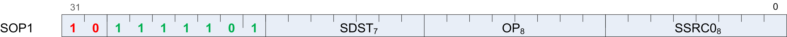
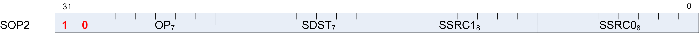
Each of these instruction formats uses some of these fields:
| Field | Description |
|---|---|
| OP | Opcode: instruction to be executed. |
| SDST | Destination SGPR. |
| SSRC0 | First source operand. |
| SSRC1 | Second source operand. |
| SIMM16 | Signed immediate 16-bit integer constant. |
The lists of similar instructions sometimes use a condensed form using curly braces { } to express a list of possible names. For example, S_AND_{B32, B64} defines two legal instructions: S_AND_B32 and S_AND_B64.
Scalar ALU Operands¶
Valid operands of SALU instructions are:
- SGPRs, including trap temporary SGPRs.
- Mode register.
- Status register (read-only).
- M0 register.
- TrapSts register.
- EXEC mask.
- VCC mask.
- SCC.
- PC.
- Inline constants: integers from -16 to 64, and a some floating point values.
- VCCZ, EXECZ, and SCC.
- Hardware registers.
- 32-bit literal constant.
In the table below, 0-127 can be used as scalar sources or destinations; 128-255 can only be used as sources.
| Code scalar Dest (0-7 bits) | Meaning | Description |
|---|---|---|
| 0-101 | SGPR 0 to 101 | Scalar GPRs |
| 102 | FLAT_SCR | Holds the low_LO Dword of the flatscratch memory descriptor |
| 103 | FLAT_SCR | Holds the high_HI Dword of the flatscratch memory descriptor |
| 104 | XNACK_MA | Holds the lowSK_LO Dword of the XNACK mask |
| 105 | XNACK_MA | Holds the high SK_HI Dword of the XNACK mask |
| 106 | VCC_LO | Holds the low Dword of the vector condition code |
| 107 | VCC_HI | Holds the high Dword of the vector condition code |
| 108-123 | TTMP0 to Trap temps | TTMP15 (privileged) |
| 124 | M0 | Holds the low Dword of the flatscratch memory descriptor |
| 125 | reserved | reserved |
| 126 | EXEC_LO | Execute mask, low Dword |
| 127 | EXEC_HI | Execute mask, high Dword |
| 128 | 0 | zero |
| 129-192 | int 1 to 64 | Positive integer values. |
| 193-208 | int 1 to 16 | Negative integer values. |
| 209-234 | reserved | Unused. |
| 235 | SHARED_BASE | Memory Aperture definition. |
| 236 | SHARED_LIMIT | |
| 237 | PRIVATE_BASE | |
| 238 | PRIVATE_LIMIT | |
| 239 | POPS_EXITING_WAV | Primitive Ordered Pixel Shading E_IDwave ID. |
| 240 | 0.5 | single or double floats |
| 241 | 0.5 | |
| 242 | 1.0 | |
| 243 | 1.0 | |
| 244 | 2.0 | |
| 245 | 2.0 | |
| 246 | 4.0 | |
| 247 | 4.0 | |
| 248 | 1.0 / (2 * PI) | |
| 249-250 | reserved | unused |
| 251 | VCCZ | { zeros, VCCZ } |
| 252 | EXECZ | { zeros, EXECZ} |
| 253 | SCC | { zeros, SCC } |
| 254 | reserved | unused |
| 255 | Literal | constant 32bit constant from instruction stream. |
Table : Scalar Operands
The SALU cannot use VGPRs or LDS. SALU instructions can use a 32-bit literal constant. This constant is part of the instruction stream and is available to all SALU microcode formats except SOPP and SOPK. Literal constants are used by setting the source instruction field to “literal” (255), and then the following instruction dword is used as the source value.
If any source SGPR is out-of-range, the value of SGPR0 is used instead.
If the destination SGPR is out-of-range, no SGPR is written with the result. However, SCC and possibly EXEC (if saveexec) will still be written.
If an instruction uses 64-bit data in SGPRs, the SGPR pair must be aligned to an even boundary. For example, it is legal to use SGPRs 2 and 3 or 8 and 9 (but not 11 and 12) to represent 64-bit data.
Scalar Condition Code (SCC)¶
The scalar condition code (SCC) is written as a result of executing most SALU instructions.
The SCC is set by many instructions:
- Compare operations: 1 = true.
- Arithmetic operations: 1 = carry out.
- SCC = overflow for signed add and subtract operations. For add, overflow = both operands are of the same sign, and the MSB (sign bit) of the result is different than the sign of the operands. For subtract (AB), overflow = A and B have opposite signs and the resulting sign is not the same as the sign of A.
- Bit/logical operations: 1 = result was not zero.
Integer Arithmetic Instructions¶
This section describes the arithmetic operations supplied by the SALU. The table below shows the scalar integer arithmetic instructions:
| Instruction | Encoding | Sets SCC? | Operation |
|---|---|---|---|
| S_ADD_I32 | SOP2 | y | D = S0 + S1, SCC = overflow. |
| S_ADD_U32 | SOP2 | y | D = S0 + S1, SCC = carry out. |
| S_ADDC_U32 | SOP2 | y | D = S0 + S1 + SCC = overflow. |
| S_SUB_I32 | SOP2 | y | D = S0 - S1, SCC = overflow. |
| S_SUB_U32 | SOP2 | y | D = S0 - S1, SCC = carry out. |
| S_SUBB_U32 | SOP2 | y | D = S0 - S1 - SCC = carry out. |
| S_ABSDIFF_I32 | SOP2 | y | D = abs (s1 - s2), SCC = result not zero. |
S_MIN_I32
S_MIN_U32
|
SOP2 | y | D = (S0 < S1) ? S0 : S1. SCC = 1 if S0 was min. |
S_MAX_I32
S_MAX_U32
|
SOP2 | y | D = (S0 > S1) ? S0 : S1. SCC = 1 if S0 was max. |
| S_MUL_I32 | SOP2 | n | D = S0 * S1. Low 32 bits of result. |
| S_ADDK_I32 | SOPK | y | D = D + simm16, SCC = overflow. Sign extended version of simm16. |
| S_MULK_I32 | SOPK | n | D = D * simm16. Return low 32bits. Sign extended version of simm16. |
| S_ABS_I32 | SOP1 | y | D.i = abs (S0.i). SCC=result not zero. |
| S_SEXT_I32_I8 | SOP1 | n | D = { 24{S0[7]}, S0[7:0] }. |
| S_SEXT_I32_I16 | SOP1 | n | D = { 16{S0[15]}, S0[15:0] }. |
Table: Integer Arithmetic Instructions
Conditional Instructions¶
Conditional instructions use the SCC flag to determine whether to perform the operation, or (for CSELECT) which source operand to use.
| Instruction | Encoding | Sets SCC? | Operation |
|---|---|---|---|
| S_CSELECT_{B32, B64} | SOP2 | n | D = SCC ? S0 : S1. |
| S_CMOVK_I 32 | SOPK | n | if (SCC) D = signext(simm16). |
| S_CMOV_{B 32,B64} | SOP1 | n | if (SCC) D = S0, else NOP. |
Table : Conditional Instructions
Comparison Instructions¶
These instructions compare two values and set the SCC to 1 if the comparison yielded a TRUE result.
| Instruction | Encoding | Sets SCC? | Operation |
|---|---|---|---|
| S_CMP_EQ_U64, S_CMP_NE_U64 | SOPC | y | Compare two 64-bit source values. SCC = S0 <cond> S1. |
| S_CMP_{EQ,NE,GT,GE ,LE,LT}_{I32,U32} | SOPC | y | Compare two source values. SCC = S0 <cond> S1. |
| S_CMPK_{EQ,NE,GT,G E,LE,LT}_{I32,U32} | SOPK | y | Compare Dest SGPR to a constant. SCC = DST <cond> simm16. simm16 is zero-extended (U32) or sign-extended (I32). |
| S_BITCMP0_{B32,B64 } | SOPC | y | Test for “is a bit zero”. SCC = !S0[S1]. |
| S_BITCMP1_{B32,B64 } | SOPC | y | Test for “is a bit one”. SCC = S0[S1]. |
Table : Conditional Instructions
Bit-Wise Instructions¶
Bit-wise instructions operate on 32- or 64-bit data without interpreting it has having a type. For bit-wise operations if noted in the table below, SCC is set if the result is nonzero.
| Instruction | Encodin g | Sets SCC? | Operation |
|---|---|---|---|
| S_MOV_{B32,B64} | SOP1 | n | D = S0 |
| S_MOVK_I32 | SOPK | n | D = signext(simm16) |
| {S_AND,S_OR,S_XOR}_{B 32,B64} | SOP2 | y | D = S0 & S1, S0 OR S1, S0 XOR S1 |
| {S_ANDN2,S_ORN2}_{B32, B64} | SOP2 | y | D = S0 & ~S1, S0 OR ~S1, S0 XOR ~S1, |
| {S_NAND,S_NOR,S_XNOR}_{B32,B64} | SOP2 | y | D = ~(S0 & S1), ~(S0 OR S1), ~(S0 XOR S1) |
| S_LSHL_{B32,B64} | SOP2 | y | D = S0 << S1[4:0], [5:0] for B64. |
| S_LSHR_{B32,B64} | SOP2 | y | D = S0 >> S1[4:0], [5:0] for B64. |
| S_ASHR_{I32,I64} | SOP2 | y | D = sext(S0 >> S1[4:0]) ([5:0] for I64). |
| S_BFM_{B32,B64} | SOP2 | n | Bit field mask. D = ((1 << S0[4:0]) - 1) << S1[4:0]. |
S_BFE_U32,
S_BFE_U64
S_BFE_I32,
S_BFE_I64
(signed/unsigned)
|
SOP2 | n | Bit Field Extract, then
sign-extend result for I32/64
instructions.
S0 = data,
S1[5:0] = offset, S1[22:16]=
width.
|
| S_NOT_{B32,B64} | SOP1 | y | D = ~S0. |
| S_WQM_{B32,B64} | SOP1 | y | D = wholeQuadMode(S0). If any bit in a group of four is set to 1, set the resulting group of four bits all to 1. |
| S_QUADMASK_{B32,B64} | SOP1 | y | D[0] = OR(S0[3:0]), D[1]=OR(S0[7:4]), etc. |
| S_BREV_{B32,B64} | SOP1 | n | D = S0[0:31] are reverse bits. |
| S_BCNT0_I32_{B32,B64} | SOP1 | y | D = CountZeroBits(S0). |
| S_BCNT1_I32_{B32,B64} | SOP1 | y | D = CountOneBits(S0). |
| S_FF0_I32_{B32,B64} | SOP1 | n | D = Bit position of first zero in S0 starting from LSB. -1 if not found. |
| S_FF1_I32_{B32,B64} | SOP1 | n | D = Bit position of first one in S0 starting from LSB. -1 if not found. |
| S_FLBIT_I32_{B32,B64} | SOP1 | n | Find last bit. D = the number of zeros before the first one starting from the MSB. Returns -1 if none. |
S_FLBIT_I32
S_FLBIT_I32_I64
|
SOP1 | n | Count how many bits in a row
(from MSB to LSB) are the same
as the sign bit. Return -1 if
the input is zero or all 1’s
(-1). 32-bit pseudo-code:
if (S0 == 0 || S0 == -1) D =
-1
else
D = 0
for (I = 31 .. 0)
if (S0[I] == S0[31])
D++
else break
This opcode behaves the same
as V_FFBH_I32.
|
| S_BITSET0_{B32,B64} | SOP1 | n | D[S0[4:0], [5:0] for B64] = 0 |
| S_BITSET1_{B32,B64} | SOP1 | n | D[S0[4:0], [5:0] for B64] = 1 |
| S_{and,or,xor,andn2,orn2 ,nand, nor,xnor}_SAVEEXEC_B64 | SOP1 | y | Save the EXEC mask, then apply
a bit-wise operation to it.
D = EXEC
EXEC = S0 <op> EXEC
SCC = (exec != 0)
|
| S_{ANDN{1,2}_WREXEC_B6 4 | SOP1 | y | N1: EXEC, D = ~S0 & EXEC
N2: EXEC, D = S0 & ~EXEC
Both D and EXEC get the same
result. SCC = (result != 0).
|
S_MOVRELS_{B32,B64}
S_MOVRELD_{B32,B64}
|
SOP1 | n | Move a value into an SGPR
relative to the value in M0.
MOVERELS: D = SGPR[S0+M0]
MOVERELD: SGPR[D+M0] = S0
Index must be even for 64. M0
is an unsigned index.
|
Table : Bit-Wise Instructions
Special Instructions¶
These instructions access hardware internal registers.
| Instruction | Encodin g | Sets SCC? | Operation |
|---|---|---|---|
| S_GETREG_B32 | SOPK* | n | Read a hardware register into the LSBs of D. |
| S_SETREG_B32 | SOPK* | n | Write the LSBs of D into a hardware register. (Note that D is a source SGPR.) Must add an S_NOP between two consecutive S_SETREG to the same register. |
| S_SETREG_IMM32_B32 | SOPK* | n | S_SETREG where 32-bit data comes from a literal constant (so this is a 64-bit instruction format). |
Table : Hardware Internal Registers
The hardware register is specified in the DEST field of the instruction,using the values in the table above. Some bits of the DEST specify which register to read/write, but additional bits specify which bits in the special register to read/write:
SIMM16 = {size[4:0], offset[4:0], hwRegId[5:0]}; offset is 0..31, size is 1..32.
| Code | Register | Description |
|---|---|---|
| 0 | reserved | |
| 1 | MODE | R/W. |
| 2 | STATUS | Read only. |
| 3 | TRAPSTS | R/W. |
| 4 | HW_ID | Read only. Debug only. |
| 5 | GPR_ALLOC | Read only. {sgpr_size, sgpr_base, vgpr_size, vgpr_base }. |
| 6 | LDS_ALLOC | Read only. {lds_size, lds_base}. |
| 7 | IB_STS | Read only. {valu_cnt, lgkm_cnt, exp_cnt, vm_cnt}. |
| 8 - 15 | reserved. | |
| 16 | TBA_LO | Trap base address register [31:0]. |
| 17 | TBA_HI | Trap base address register [47:32]. |
| 18 | TMA_LO | Trap memory address register [31:0]. |
| 19 | TMA_HI | Trap memory address register [47:32]. |
Table : Hardware Register Values
| Code | Register | Description |
|---|---|---|
| VM_CNT | 23:22,
3:0
|
Number of VMEM instructions issued but not yet returned. |
| EXP_CNT | 6:4 | Number of Exports issued but have not yet read their data from VGPRs. |
| LGKM_CNT | 11:8 | LDS, GDS, Constant-memory and Message instructions issued-but-not-completed count. |
| VALU_CNT | 14:12 | Number of VALU instructions outstanding for this wavefront. |
Table : IB_STS
| Code | Register | Description |
|---|---|---|
| VGPR_BASE | 5:0 | Physical address of first VGPR assigned to this wavefront, as [7:2] |
| VGPR_SIZE | 13:8 | Number of VGPRs assigned to this wavefront, as [7:2]. 0=4 VGPRs, 1=8 VGPRs, etc. |
| SGPR_BASE | 21:16 | Physical address of first SGPR assigned to this wavefront, as [7:3]. |
| SGPR_SIZE | 27:24 | Number of SGPRs assigned to this wave, as [7:3]. 0=8 SGPRs, 1=16 SGPRs, etc. |
Table : GPR_ALLOC
| Code | Register | Description |
|---|---|---|
| LDS_BASE | 7:0 | Physical address of first LDS location assigned to this wavefront, in units of 64 Dwords. |
| LDS_SIZE | 20:12 | Amount of LDS space assigned to this wavefront, in units of 64 Dwords. |
Table : LDS_ALLOC
Vector ALU Operations¶
Vector ALU instructions (VALU) perform an arithmetic or logical operation on data for each of 64 threads and write results back to VGPRs, SGPRs or the EXEC mask.
Parameter interpolation is a mixed VALU and LDS instruction, and is described in the Data Share chapter.
Microcode Encodings¶
Most VALU instructions are available in two encodings: VOP3 which uses 64-bits of instruction and has the full range of capabilities, and one of three 32-bit encodings that offer a restricted set of capabilities. A few instructions are only available in the VOP3 encoding. The only instructions that cannot use the VOP3 format are the parameter interpolation instructions.
When an instruction is available in two microcode formats, it is up to the user to decide which to use. It is recommended to use the 32-bit encoding whenever possible.
The microcode encodings are shown below.
VOP2 is for instructions with two inputs and a single vector destination. Instructions that have a carry-out implicitly write the carry-out to the VCC register.
VOP1 is for instructions with no inputs or a single input and one destination.
VOPC is for comparison instructions.
VINTRP is for parameter interpolation instructions.
VOP3 is for instructions with up to three inputs, input modifiers (negate and absolute value), and output modifiers. There are two forms of VOP3: one which uses a scalar destination field (used only for div_scale, integer add and subtract); this is designated VOP3b. All other instructions use the common form, designated VOP3a.
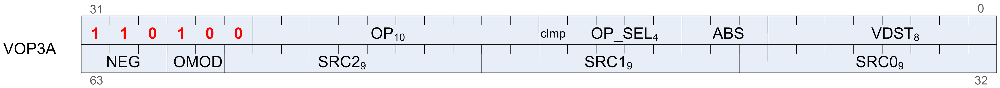
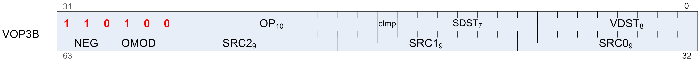
Any of the 32-bit microcode formats may use a 32-bit literal constant, but not VOP3.
VOP3P is for instructions that use “packed math”: They perform the operation on a pair of input values that are packed into the high and low 16-bits of each operand; the two 16-bit results are written to a single VGPR as two packed values.
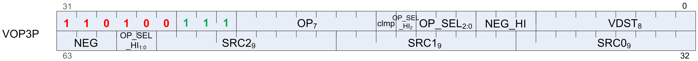
Operands¶
All VALU instructions take at least one input operand (except V_NOP and V_CLREXCP). The data-size of the operands is explicitly defined in the name of the instruction. For example, V_MAD_F32 operates on 32-bit floating point data.
Instruction Inputs¶
VALU instructions can use any of the following sources for input, subject to restrictions listed below:
- VGPRs.
- SGPRs.
- Inline constants - constant selected by a specific VSRC value.
- Literal constant - 32-bit value in the instruction stream. When a literal constant is used with a 64bit instruction, the literal is expanded to 64 bits by: padding the LSBs with zeros for floats, padding the MSBs with zeros for unsigned ints, and by sign-extending signed ints.
- LDS direct data read.
- M0.
- EXEC mask.
Limitations
At most one SGPR can be read per instruction, but the value can be used for more than one operand.
At most one literal constant can be used, and only when an SGPR or M0 is not used as a source.
Only SRC0 can use LDS_DIRECT (see Chapter 10, “Data Share Operations”).
- Special Cases for Constants
- VALU “ADDC”, “SUBB” and CNDMASK all implicitly use anSGPR value (VCC), so these instructions cannot use an additional SGPR or literal constant.
Instructions using the VOP3 form and also using floating-point inputs have the option of applying absolute value (ABS field) or negate (NEG field) to any of the input operands.
Literal Expansion to 64 bits¶
Literal constants are 32-bits, but they can be used as sources which normally require 64-bit data:
- 64 bit float: the lower 32-bit are padded with zero.
- 64-bit unsigned integer: zero extended to 64 bits
- 64-bit signed integer: sign extended to 64 bits
Instruction Outputs¶
VALU instructions typically write their results to VGPRs specified in the VDST field of the microcode word. A thread only writes a result if the associated bit in the EXEC mask is set to 1.
All V_CMPX instructions write the result of their comparison (one bit per thread) to both an SGPR (or VCC) and the EXEC mask.
Instructions producing a carry-out (integer add and subtract) write their result to VCC when used in the VOP2 form, and to an arbitrary SGPR-pair when used in the VOP3 form.
When the VOP3 form is used, instructions with a floating-point result can apply an output modifier (OMOD field) that multiplies the result by: 0.5, 1.0, 2.0 or 4.0. Optionally, the result can be clamped (CLAMP field) to the range [0.0, +1.0].
In the table below, all codes can be used when the vector source is nine bits; codes 0 to 255 can be the scalar source if it is eight bits; codes 0 to 127 can be the scalar source if it is seven bits; and codes 256 to 511 can be the vector source or destination.
| Field | Bit Position | Description |
|---|---|---|
| 0-101 | SGPR | 0 .. 101 |
| 102 | FLATSCR_LO | Flat Scratch[31:0]. |
| 103 | FLATSCR_HI | Flat Scratch[63:32]. |
| 104 | XNACK_MASK_LO | |
| 105 | XNACK_MASK_HI | |
| 106 | VCC_LO | vcc[31:0]. |
| 107 | VCC_HI | vcc[63:32]. |
| 108-123 | TTMP0 to TTMP 15 | Trap handler temps (privileged). |
| 124 | M0 | |
| 125 | reserved | |
| 126 | EXEC_LO | exec[31:0]. |
| 127 | EXEC_HI | exec[63:32]. |
| 128 | 0 | |
| 129-192 | int 1.. 64 | Integer inline constants. |
| 193-208 | int -1 .. -16 | |
| 209-234 | reserved | Unused. |
| 235 | SHARED_BASE | Memory Aperture definition. |
| 236 | SHARED_LIMIT | |
| 237 | PRIVATE_BASE | |
| 238 | PRIVATE_LIMIT | |
| 239 | POPS_EXITING_WAV E_ID | Primitive Ordered Pixel Shading wave ID. |
| 240 | 0.5 | Single, double, or half-precision inline
floats.
1/(2*PI) is 0.15915494.
The exact value used is:
half: 0x3118
single: 0x3e22f983
double: 0x3fc45f306dc9c882
|
| 241 | -0.5 | |
| 242 | 1.0 | |
| 243 | -1.0 | |
| 244 | 2.0 | |
| 245 | -2.0 | |
| 246 | 4.0 | |
| 247 | -4.0 | |
| 248 | 1/(2*PI) | |
| 249 | SDWA | 250 |
| DPP | 251 | VCCZ |
| { zeros, VCCZ } | 252 | EXECZ |
| { zeros, EXECZ } | 253 | SCC |
| { zeros, SCC } | 254 | LDS direct |
| Use LDS direct read to supply 32-bit value Vector-al u instructi ons only. | 255 | Literal |
| constant 32-bit constant from instructi on stream. | 256-511 | VGPR |
Table: Instruction Operands
Out-of-Range GPRs¶
When a source VGPR is out-of-range, the instruction uses as input the value from VGPR0.
When the destination GPR is out-of-range, the instruction executes but does not write the results.
Instructions¶
The table below lists the complete VALU instruction set by microcode encoding.
| VOP3 | VOP3 - 1-2 operand opcodes | VOP2 | VOP1 |
|---|---|---|---|
| V_MAD_LEGACY _F32 | V_ADD_F64 | V_ADD_{ F16,F32, U16,U32} | V_NOP |
| V_MAD_{ F16,I16,U16,F3 2} | V_MUL_F64 | V_SUB_{ F16,F32,U16, U32} | V_MOV_B32 |
| V_MAD_LEGACY _{F16,U16,I16 } | V_MIN_F64 | V_SUBREV_{ F16,F32, U16,U32} | |
| V_MAD_I32_I 24 | V_MAX_F64 | V_ADD_CO_U3 2 | V_READFIRSTLANE_B32 |
| V_MAD_U32_U 24 | V_LDEXP_F64 | V_SUB_CO_U3 2 | V_CVT_F32_{I32,U32,F16,F6 4 } |
| V_CUBEID_F32 | V_MUL_LO_U3 2 | V_SUBREV_CO_U32 | V_CVT_{I32,U32,F16, F64}_F32 |
| V_CUBESC_F32 | V_MUL_HI_{I 32,U32} | V_ADDC_U32 | V_CVT_{I32,U32}_F64 |
| V_CUBETC_F32 | V_LSHLREV_B6 4 | V_SUBB_U32 | V_CVT_F64_{I32,U32} |
| V_CUBEMA_F32 | V_LSHRREV_B6 4 | V_SUBBREV_U3 2 | V_CVT_F32_UBYTE{0,1,2,3} |
| V_BFE_{U32 , I32 } | V_ASHRREV_I6 4 | V_MUL_LEGACY _F32 | V_CVT_F16_{U16, I16} |
| V_FMA_{ F16, F32 , F64} | V_LDEXP_F32 | V_MUL_{F16, F32} | V_CVT_RPI_I32_F32 |
| V_FMA_LEGACY _F16 | V_READLANE_B 32 | V_MUL_I32_I 24 | V_CVT_FLR_I32_F32 |
| V_BFI_B32 | V_WRITELANE_ B32 | V_MUL_HI_I3 2_I24 | V_CVT_OFF_F32_I4 |
| V_LERP_U8 | V_BCNT_U32_ B32 | V_MUL_U32_U 24 | V_FRACT_{ F16,F32,F64} |
| V_ALIGNBIT_B 32 | V_MBCNT_LO_ U32_B32 | V_MUL_HI_U3 2_U24 | V_TRUNC_{ F16,F32, F64} |
| V_ALIGNBYTE_ B32 | V_MBCNT_HI_ U32_B32 | V_MIN_{ F16,U16, I16,F32,I32,U3 2} | V_CEIL_{ F16,F32, F64} |
| V_MIN3_{F32, I32,U32} | V_CVT_PKACCU M_U8_F32 | V_MAX_{ F16,U16, I16,F32,I32,U3 2} | V_RNDNE_{ F16,F32, F64} |
| V_MAX3_{F32, I32,U32} | V_CVT_PKNORM _I16_F32 | V_LSHRREV_{ B16,B32} | V_FLOOR_{ F16,F32, F64} |
| V_MED3_{F32, I32,U32} | V_CVT_PKNORM _U16_F32 | V_ASHRREV_{I 16,I32} | V_EXP_{ F16,F32} |
| V_SAD_{U8, HI_U8, U16, U32} | V_CVT_PKRTZ_F16_F32 | V_LSHLREV_{ B16,B32} | V_LOG_ {F16,F32} |
| V_CVT_PK_U8 _F32 | V_CVT_PK_U1 6_U32 | V_AND_B32 | V_RCP_{ F16,F32,F64} |
| V_DIV_FIXUP_{ F16,F32,F64} | V_CVT_PK_I1 6_I32 | V_OR_B32 | V_RCP_IFLAG_F32 |
| V_DIV_FIXUP_LEGACY_F16 | V_MAC_LEGACY _F32 | V_XOR_B32 | V_RSQ_{ F16,F32, F64} |
| V_DIV_SCALE_{F32,F64} | V_BFM_B32 | V_MAC_{ F16,F32} | V_SQRT_{ F16,F32,F64} |
| V_DIV_FMAS_ {F32,F64} | V_INTERP_P1_F32 | V_MADMK_{ F16,F32} | V_SIN_ {F16,F32} |
| V_MSAD_U8 | V_INTERP_P2_F32 | V_MADAK_{ F16,F32} | V_COS_ {F16,F32} |
| V_QSAD_PK_U 16_U8 | V_INTERP_MOV _F32 | V_CNDMASK_B3 2 | V_NOT_B32 |
| V_MQSAD_PK_ U16_U8 | V_INTERP_P1L L_F16 | V_LDEXP_F16 | V_BFREV_B32 |
| V_MQSAD_PK_ U32_U8 | V_INTERP_P1L V_F16 | MUL_LO_U16 | V_FFBH_{U32, I32} |
| V_TRIG_PREOP _F64 | V_INTERP_P2_F16 | V_FFBL_B32 | |
| V_MAD_{U64_ U32, I64_I32} | V_INTERP_P2_LEGACY_F16 | V_FREXP_EXP_I32_F64 | |
| V_CVT_PKNORM _I16_F16 | V_FREXP_MANT_{ F16,F32,64} | ||
| V_CVT_PKNORM _U16_F16 | V_FREXP_EXP_I32_F32 | ||
| V_MAD_U32_U 16 | V_FREXP_EXP_I16_F16 | ||
| V_MAD_I32_I 16 | V_CLREXCP | ||
| V_XAD_U32 | V_MOV_FED_B32 | ||
| V_MIN3_{F16, I16,U16} | V_CVT_NORM_I16_F16 | ||
| V_MAX3_{F16, I16,U16} | V_CVT_NORM_U16_F16 | ||
| V_MED3_{F16, I16,U16} | V_SAT_PK_U8_I16 | ||
| V_CVT_PKNORM _{I16_F16, U16_F16} | V_WRITELANE_REGWR | ||
| V_READLANE_R EGRD_B32 | V_SWAP_B32 | ||
| V_PACK_B32_ F16 | V_SCREEN_PARTITION_4SE_B 32 |
Table: VALU Instruction Set
| Op | Formats | Functions | Result |
|---|---|---|---|
| V_CMP | I16, I32, I64, U16, U32, U64 | F, LT, EQ, LE, GT, LG, GE, T | Write VCC.. |
| V_CMPX | Write VCC and exec. | ||
| V_CMP | F16, F32, F64 | F, LT, EQ,LE, GT, LG, GE,
T, GE, T,
O, U, NGE,
NLG, NGT,
NLE, NEQ,
NLT
(o = total order, u =
unordered,
N = NaN or
normal
compare)
|
Write VCC. |
| V_CMPX | Write VCC and exec. | ||
| V_CMP_CLASS | F16, F32, F64 | Test for one of: signaling
-NaN quiet-NaN,
|
Write VCC. |
| V_CMPX_CLASS | Write VCC and exec. |
Table: VALU Instruction Set
Denormalized and Rounding Modes¶
The shader program has explicit control over the rounding mode applied and the handling of denormalized inputs and results. The MODE register is set using the S_SETREG instruction; it has separate bits for controlling the behavior of single and double-precision floating-point numbers.
| Field | Bit Position | Description |
|---|---|---|
| FP_ROUND | 3:0 | [1:0] Single-precision round mode.
[3:2] Double-precision round mode.
Round Modes: 0=nearest even; 1= +infinity; 2=
-infinity, 3= toward zero.
|
| FP_DENORM | 7:4 | [5:4] Single-precision denormal mode.
[7:6] Double-precision denormal mode.
Denormal modes:
0 = Flush input and output denorms.
1 = Allow input denorms, flush output denorms.
2 = Flush input denorms, allow output denorms.
3 = Allow input and output denorms.
|
Table: Round and Denormal Modes
ALU Clamp Bit Usage¶
In GCN Vega Generation, the meaning of the “Clamp” bit in the VALU instructions has changed. For V_CMP instructions, setting the clamp bit to 1 indicates that the compare signals if a floating point exception occurs. For integer operations, it clamps the result to the largest and smallest representable value. For floating point operations, it clamps the result to the range: [0.0, 1.0].
VGPR Indexing¶
VGPR Indexing allows a value stored in the M0 register to act as an index into the VGPRs either for the source or destination registers in VALU instructions.
Indexing Instructions¶
The table below describes the instructions which enable, disable and control VGPR indexing.
| Instruction | Encoding | Sets SCC? | Operation |
|---|---|---|---|
| S_SET_GPR_IDX_ OFF | SOPP | N | Disable VGPR indexing mode. Sets: mode.gpr_idx_en = 0. |
| S_SET_GPR_IDX_ ON | SOPC | N | Enable VGPR indexing, and set the
index value and mode from an SGPR.
mode.gpr_idx_en = 1
M0[7:0] = S0.u[7:0]
M0[15:12] = SIMM4
|
| S_SET_GPR_IDX_ IDX | SOP1 | N | Set the VGPR index value:
M0[7:0] = S0.u[7:0]
|
| S_SET_GPR_IDX_ MODE | SOPP | N | Change the VGPR indexing mode,
which is stored in
M0[15:12].
M0[15:12] = SIMM4
|
Table: VGPR Indexing Instructions
Indexing is enabled and disabled by a bit in the MODE register: gpr_idx_en. When enabled, two fields from M0 are used to determine the index value and what it applies to:
- M0[7:0] holds the unsigned index value, added to selected source or destination VGPR addresses.
- M0[15:12] holds a four-bit mask indicating to which source or
destination the index is applied.
- M0[15] = dest_enable.
- M0[14] = src2_enable.
- M0[13] = src1_enable.
- M0[12] = src0_enable.
Indexing only works on VGPR source and destinations, not on inline constants or SGPRs. It is illegal for the index attempt to address VGPRs that are out of range.
Special Cases¶
This section describes how VGPR indexing is applied to instructions that use source and destination registers in unusual ways. The table below shows which M0 bits control indexing of the sources and destination registers for these special instructions.
| Instruction | Microcode Encodes | VALU Receives | M0[15] (dst) | M0[15] (s2) | M0[15] (s1) | M0[12] (s0) |
|---|---|---|---|---|---|---|
| v_readlane | sdst = src0, SS1 | x | x | x | src0 | |
| v_readfirstlan e | sdst = func(src0) | x | x | x | src0 | |
| v_writelane | dst = func(ss0, ss1) | dst | x | x | x | |
| v_mac_* | dst = src0 * src1 + dst | mad: dst, src0, src1, src2 | dst, s2 | x | src1 | src0 |
| v_madak | dst = src0 * src1 + imm | mad: dst, src0, src1, src2 | dst | x | src1 | src0 |
| v_madmk | dst = S0 * imm + src1 | mad: dst, src0, src1, src2 | dst | src2 | x | src0 |
| v_*sh*_rev | dst = S1 << S0 | <shift> (src1, src0) | dst | x | src1 | src0 |
| v_cvt_pkaccum | uses dst as src2 | dst, s2 | x | src1 | src0 | |
| SDWA (dest preserve, sub-Dword mask) | uses dst as src2 for read-mod-write | dst, s2 |
Packed Math¶
Vega adds support for packed math, which performs operations on two 16-bit values within a Dword as if they were separate threads. For example, a packed add of V0=V1+V2 is really two separate adds: adding the low 16 bits of each Dword and storing the result in the low 16 bit s of V0, and adding the high halves.
Packed math uses the instructions below and the microcode format “VOP3P”. This format adds op_sel and neg fields for both the low and high operands, and removes ABS and OMOD.
Packed Math Opcodes:
| V_PK_MAD_I16 | V_PK_MUL_LO_U1 6 | V_PK_ADD_I16 | V_PK_SUB_I16 |
| V_PK_LSHLREV_B1 6 | V_PK_LSHRREV_B1 6 | V_PK_ASHRREV_I1 6 | V_PK_MAX_I16 |
| V_PK_MIN_I16 | V_PK_MAD_U16 | V_PK_ADD_U16 | V_PK_SUB_U16 |
| V_PK_MAX_U16 | V_PK_MIN_U16 | V_PK_FMA_F16 | V_PK_ADD_F16 |
| V_PK_MUL_F16 | V_PK_MIN_F16 | V_PK_MAX_F16 | V_MAD_MIX_F32 |
Note
V_MAD_MIX_* are not packed math, but perform a single MAD operation on a mixture of 16- and 32-bit inputs. They are listed here because they use the VOP3P encoding.
Scalar Memory Operations¶
Scalar Memory Read (SMEM) instructions allow a shader program to load data from memory into SGPRs through the Scalar Data Cache, or write data from SGPRs to memory through the Scalar Data Cache. Instructions can read from 1 to 16 Dwords, or write 1 to 4 Dwords at a time. Data is read directly into SGPRs without any format conversion.
The scalar unit reads and writes consecutive Dwords between memory and the SGPRs. This is intended primarily for loading ALU constants and for indirect T#/S# lookup. No data formatting is supported, nor is byte or short data.
Microcode Encoding¶
Scalar memory read, write and atomic instructions are encoded using the SMEM microcode format.
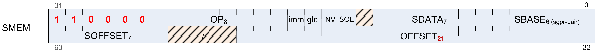
The fields are described in the table below:
| Field | Size | Description |
|---|---|---|
| OP | 8 | Opcode. |
| IMM | 1 | Determines how the
OFFSET field is
interpreted.
IMM=1 : Offset is a
20-bit unsigned byte
offset to the address.
IMM=0 : Offset[6:0]
specifies an SGPR or
M0 which provides an
unsigned byte offset.
STORE and ATOMIC
instructions cannot
use an SGPR: only imm
or M0.
|
| GLC | 1 | Globally Coherent.
For loads, controls L1
cache policy:
0=hit_lru,
1=miss_evict.
For stores, controls
L1 cache bypass:
0=write-combine,
1=write-thru.
For atomics, “1”
indicates that the
atomic returns the
pre-op value.
|
| SDATA | 7 | SGPRs to return read
data to, or to source
write-data from.
Reads of two Dwords
must have an even
SDST-sgpr.
Reads of four or more
Dwords must have their
DST-gpr aligned to a
multiple of 4.
SDATA must be: SGPR or
VCC. Not: exec or m0.
|
| SBASE | 6 | SGPR-pair (SBASE has an implied LSB of zero) which provides a base address, or for BUFFER instructions, a set of 4 SGPRs (4-sgpr aligned) which hold the resource constant. For BUFFER instructions, the only resource fields used are: base, stride, num_records. |
| OFFSET | 20 | An unsigned byte offset, or the address of an SGPR holding the offset. Writes and atomics: M0 or immediate only, not SGPR. |
| NV | 1 | Non-volatile. |
| SOE | 1 | Scalar Offset Enable. |
Table: SMEM Encoding Field Descriptions
Operations¶
S_LOAD_DWORD, S_STORE_DWORD¶
These instructions load 1-16 Dwords or store 1-4 Dwords between SGPRs and memory. The data in SGPRs is specified in SDATA, and the address is composed of the SBASE, OFFSET, and SOFFSET fields.
Scalar Memory Addressing¶
S_LOAD / S_STORE / S_DACHE_DISCARD:
ADDR = SGPR[base] + inst_offset + { M0 or SGPR[offset] or zero }
S_SCRATCH_LOAD / S_SCRATCH_STORE:
ADDR = SGPR[base] + inst_offset + { M0 or SGPR[offset] or zero } * 64
Use of offset fields:
| IMM | SOFFSET_EN (SOE) | Address |
|---|---|---|
| 0 | 0 | SGPR[base] + (SGPR[offset] or M0) |
| 0 | 1 | SGPR[base] + (SGPR[soffset] or M0) |
| 1 | 0 | SGPR[base] + inst_offset |
| 1 | 1 | SGPR[base] + inst_offset + (SGPR[soffset] or M0) |
All components of the address (base, offset, inst_offset, M0) are in bytes, but the two LSBs are ignored and treated as if they were zero. S_DCACHE_DISCARD ignores the six LSBs to make the address 64-byte-aligned.
Scalar access to private space must either use a buffer constant or manually convert the address:
Addr = Addr - private_base + private_base_addr + scratch_baseOffset_for_this_wave
“Hidden private base” is not available to the shader through hardware: It must be preloaded into an SGPR or made available through a constant buffer. This is equivalent to what the driver must do to calculate the base address from scratch for buffer constants.
A scalar instruction must not overwrite its own source registers because the possibility of the instruction being replayed due to an ATC XNACK. Similarly, instructions in scalar memory clauses must not overwrite the sources of any of the instructions in the clause. A clause is defined as a string of memory instructions of the same type. A clause is broken by any non-memory instruction.
Atomics are a special case because they are always naturally aligned and they must be in a single-instruction clause. By definition, an atomic that returns the pre-op value overwrites its data source, which is acceptable.
Reads/Writes/Atomics using Buffer Constant¶
Buffer constant fields used: base_address, stride, num_records, NV. Other fields are ignored.
Scalar memory read/write does not support “swizzled” buffers. Stride is used only for memory address bounds checking, not for computing the address to access.
The SMEM supplies only a SBASE address (byte) and an offset (byte or Dword). Any “index * stride” must be calculated manually in shader code and added to the offset prior to the SMEM.
The two LSBs of V#.base and of the final address are ignored to force Dword alignment.
"m_*" components come from the buffer constant (V#):
offset = IMM ? OFFSET : SGPR[OFFSET]
m_base = { SGPR[SBASE * 2 +1][15:0], SGPR[SBASE] }
m_stride = SGPR[SBASE * 2 +1][31:16]
m_num_records = SGPR[SBASE * 2 + 2]
m_size = (m_stride == 0) ? 1 : m_num_records
m_addr = (SGPR[SBASE * 2] + offset) & ~0x3
SGPR[SDST] = read_Dword_from_dcache(m_base, offset, m_size)
If more than 1 dword is being read, it is returned to SDST+1, SDST+2, etc,
and the offset is incremented by 4 bytes per DWORD.
Scalar Atomic Operations¶
The scalar memory unit supports the same set of memory atomics as the vector memory unit. Addressing is the same as for scalar memory loads and stores. Like the vector memory atomics, scalar atomic operations can return the “pre-operation value” to the SDATA SGPRs. This is enabled by setting the microcode GLC bit to 1.
S_DCACHE_INV, S_DCACHE_WB¶
This instruction invalidates, or does a “write back” of dirty data, for the entire data cache. It does not return anything to SDST.
S_MEMTIME¶
This instruction reads a 64-bit clock counter into a pair of SGPRs: SDST and SDST+1.
S_MEMREALTIME¶
This instruction reads a 64-bit “real time-counter” and returns the value into a pair of SGPRS: SDST and SDST+1. The time value is from a clock for which the frequency is constant (not affected by power modes or core clock frequency changes).
Dependency Checking¶
Scalar memory reads and writes can return data out-of-order from how they were issued; they can return partial results at different times when the read crosses two cache lines. The shader program uses the LGKM_CNT counter to determine when the data has been returned to the SDST SGPRs. This is done as follows.
- LGKM_CNT is incremented by 1 for every fetch of a single Dword.
- LGKM_CNT is incremented by 2 for every fetch of two or more Dwords.
- LGKM_CNT is decremented by an equal amount when each instruction completes.
Because the instructions can return out-of-order, the only sensible way to use this counter is to implement S_WAITCNT 0; this imposes a wait for all data to return from previous SMEMs before continuing.
Alignment and Bounds Checking¶
- SDST
- The value of SDST must be even for fetches of two Dwords (including S_MEMTIME), or a multiple of four for larger fetches. If this rule is not followed, invalid data can result. If SDST is out-of-range, the instruction is not executed.
- SBASE
- The value of SBASE must be even for S_BUFFER_LOAD (specifying the address of an SGPR which is a multiple of four). If SBASE is out-of-range, the value from SGPR0 is used.
- OFFSET
- The value of OFFSET has no alignment restrictions.
Memory Address : If the memory address is out-of-range (clamped), the operation is not performed for any Dwords that are out-of-range.
Vector Memory Operations¶
Vector Memory (VMEM) instructions read or write one piece of data separately for each work-item in a wavefront into, or out of, VGPRs. This is in contrast to Scalar Memory instructions, which move a single piece of data that is shared by all threads in the wavefront. All Vector Memory (VM) operations are processed by the texture cache system (level 1 and level 2 caches).
Software initiates a load, store or atomic operation through the texture cache through one of three types of VMEM instructions:
- MTBUF: Memory typed-buffer operations.
- MUBUF: Memory untyped-buffer operations.
- MIMG: Memory image operations.
The instruction defines which VGPR(s) supply the addresses for the operation, which VGPRs supply or receive data from the operation, and a series of SGPRs that contain the memory buffer descriptor (V# or T#). Also, MIMG operations supply a texture sampler from a series of four SGPRs; this sampler defines texel filtering operations to be performed on data read from the image.
Vector Memory Buffer Instructions¶
Vector-memory (VM) operations transfer data between the VGPRs and buffer objects in memory through the texture cache (TC). Vector means that one or more piece of data is transferred uniquely for every thread in the wavefront, in contrast to scalar memory reads, which transfer only one value that is shared by all threads in the wavefront.
Buffer reads have the option of returning data to VGPRs or directly into LDS.
Examples of buffer objects are vertex buffers, raw buffers, stream-out buffers, and structured buffers.
Buffer objects support both homogeneous and heterogeneous data, but no filtering of read-data (no samplers). Buffer instructions are divided into two groups:
- MUBUF: Untyped buffer objects.
- Data format is specified in the resource constant.
- Load, store, atomic operations, with or without data format conversion.
- MTBUF: Typed buffer objects.
- Data format is specified in the instruction.
- The only operations are Load and Store, both with data format conversion.
Atomic operations take data from VGPRs and combine them arithmetically with data already in memory. Optionally, the value that was in memory before the operation took place can be returned to the shader.
All VM operations use a buffer resource constant (V#) which is a 128-bit value in SGPRs. This constant is sent to the texture cache when the instruction is executed. This constant defines the address and characteristics of the buffer in memory. Typically, these constants are fetched from memory using scalar memory reads prior to executing VM instructions, but these constants also can be generated within the shader.
Simplified Buffer Addressing¶
The equation below shows how the hardware calculates the memory address for a buffer access.
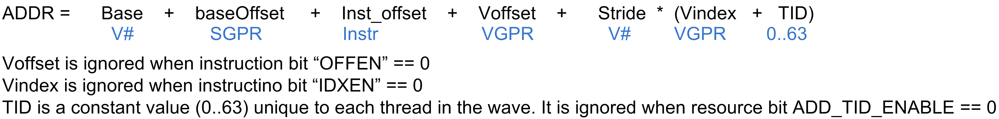
Buffer Instructions¶
Buffer instructions (MTBUF and MUBUF) allow the shader program to read from, and write to, linear buffers in memory. These operations can operate on data as small as one byte, and up to four Dwords per work-item. Atomic arithmetic operations are provided that can operate on the data values in memory and, optionally, return the value that was in memory before the arithmetic operation was performed.
The D16 instruction variants convert the results to packed 16-bit values. For example, BUFFER_LOAD_FORMAT_D16_XYZW will write two VGPRs.
| Instruction | Description |
|---|---|
| MTBUF Instructions | |
TBUFFER_LOAD_FORMAT_{x,x
y,xyz,xyzw}
TBUFFER_STORE_FORMAT_{x,
xy,xyz,xyzw}
|
Read from, or write to, a typed buffer object. Also used for a vertex fetch. |
| MUBUF Instructions | |
BUFFER_LOAD_FORMAT_{x,xy
,xyz,xyzw}
BUFFER_STORE_FORMAT_{x,x
y,xyz,xyzw}
BUFFER_LOAD_<size>
BUFFER_STORE_<size>
|
Read to, or write from, an untyped
buffer object.
<size> = byte, ubyte, short, ushort,
Dword, Dwordx2, Dwordx3, Dwordx4
BUFFER_ATOMIC_<op>
BUFFER_ATOMIC_<op>_ x2
|
Table: Buffer Instructions
| Field | Bit Size | Description |
|---|---|---|
| OP | 4
7
|
MTBUF: Opcode for
Typed buffer
instructions.
MUBUF: Opcode for
Untyped buffer
instructions.
|
| VADDR | 8 | Address of VGPR to supply first component of address (offset or index). When both index and offset are used, index is in the first VGPR, offset in the second. |
| VDATA | 8 | Address of VGPR to supply first component of write data or receive first component of read-data. |
| SOFFSET | 8 | SGPR to supply unsigned byte offset. Must be an SGPR, M0, or inline constant. |
| SRSRC | 5 | Specifies which SGPR supplies T# (resource constant) in four or eight consecutive SGPRs. This field is missing the two LSBs of the SGPR address, since this address must be aligned to a multiple of four SGPRs. |
| DFMT | 4 | Data Format of data in
memory buffer:
0 invalid
1 8
2 16
3 8_8
4 32
5 16_16
6 10_11_11
7 11_11_10
8 10_10_10_2
9 2_10_10_10
10 8_8_8_8
11 32_32
12 16_16_16_16
13 32_32_32
14 32_32_32_32
15 reserved
|
| NFMT | 3 | Numeric format of data
in memory:
0 unorm
1 snorm
2 uscaled
3 sscaled
4 uint
5 sint
6 reserved
7 float
|
| OFFSET | 12 | Unsigned byte offset. |
| OFFEN | 1 | 1 = Supply an offset from VGPR (VADDR). 0 = Do not (offset = 0). |
| IDXEN | 1 | 1 = Supply an index from VGPR (VADDR). 0 = Do not (index = 0). |
| GLC | 1 | Globally Coherent.
Controls how reads and
writes are handled by
the L1 texture cache.
READ
GLC = 0 Reads can hit
on the L1 and persist
across wavefronts
GLC = 1 Reads always
miss the L1 and force
fetch to L2. No L1
persistence across
waves.
WRITE
GLC = 0 Writes miss
the L1, write through
to L2, and persist in
L1 across wavefronts.
GLC = 1 Writes miss
the L1, write through
to L2. No persistence
across wavefronts.
ATOMIC
GLC = 0 Previous data
value is not returned.
No L1 persistence
across wavefronts.
GLC = 1 Previous data
value is returned. No
L1 persistence across
wavefronts.
Note: GLC means
“return pre-op value”
for atomics.
|
| SLC | 1 | System Level Coherent. When set, accesses are forced to miss in level 2 texture cache and are coherent with system memory. |
| TFE | 1 | Texel Fail Enable for PRT (partially resident textures). When set to 1, fetch can return a NACK that causes a VGPR write into DST+1 (first GPR after all fetch-dest GPRs). |
| LDS | 1 | MUBUF-ONLY: 0 = Return read-data to VGPRs. 1 = Return read-data to LDS instead of VGPRs. |
Table: Microcode Formats
VGPR Usage¶
VGPRs supply address and write-data; also, they can be the destination for return data (the other option is LDS).
- Address
- Zero, one or two VGPRs are used, depending of the offset-enable (OFFEN) and index-enable (IDXEN) in the instruction word, as shown in the table below:
| IDXEN | OFFEN | VGPRn | VGPRn+1 |
|---|---|---|---|
| 0 | 0 | nothing | |
| 0 | 1 | uint offset | |
| 1 | 0 | uint index | |
| 1 | 1 | uint index | uint offset |
Table: Address VGPRs
Write Data : N consecutive VGPRs, starting at VDATA. The data format specified in the instruction word (NFMT, DFMT for MTBUF, or encoded in the opcode field for MUBUF) determines how many Dwords to write.
Read Data : Same as writes. Data is returned to consecutive GPRs.
Read Data Format : Read data is always 32 bits, based on the data format in the instruction or resource. Float or normalized data is returned as floats; integer formats are returned as integers (signed or unsigned, same type as the memory storage format). Memory reads of data in memory that is 32 or 64 bits do not undergo any format conversion.
Atomics with Return : Data is read out of the VGPR(s) starting at VDATA to supply to the atomic operation. If the atomic returns a value to VGPRs, that data is returned to those same VGPRs starting at VDATA.
Buffer Data¶
The amount and type of data that is read or written is controlled by the following: data-format (dfmt), numeric-format (nfmt), destination-component-selects (dst_sel), and the opcode. Dfmt and nfmt can come from the resource, instruction fields, or the opcode itself. Dst_sel comes from the resource, but is ignored for many operations.
| Instruction | Data Format | Num Format | DST SEL |
|---|---|---|---|
| TBUFFER_LOAD_FOR MAT_* | instruction | instruction | identity |
| TBUFFER_STORE_FO RMAT_* | instruction | instruction | identity |
| BUFFER_LOAD_<typ e> | derived | derived | identity |
| BUFFER_STORE_<ty pe> | derived | derived | identity |
| BUFFER_LOAD_FORM AT_* | resource | resource | resource |
| BUFFER_STORE_FOR MAT_* | resource | resource | resource |
| BUFFER_ATOMIC_* | derived | derived | identity |
Table: Buffer Instructions
Instruction : The instruction’s dfmt and nfmt fields are used instead of the resource’s fields.
Data format derived : The data format is derived from the opcode and ignores the resource definition. For example, buffer_load_ubyte sets the data-format to 8 and number-format to uint.
Note
The resource’s data format must not be INVALID; that format has special meaning (unbound resource), and for that case the data format is not replaced by the instruction’s implied data format.
DST_SEL identity : Depending on the number of components in the data-format, this is: X000, XY00, XYZ0, or XYZW.
The MTBUF derives the data format from the instruction. The MUBUF BUFFER_LOAD_FORMAT and BUFFER_STORE_FORMAT instructions use dst_sel from the resource; other MUBUF instructions derive data-format from the instruction itself.
D16 Instructions : Load-format and store-format instructions also come in a “d16” variant. For stores, each 32-bit VGPR holds two 16-bit data elements that are passed to the texture unit. This texture unit converts them to the texture format before writing to memory. For loads, data returned from the texture unit is converted to 16 bits, and a pair of data are stored in each 32-bit VGPR (LSBs first, then MSBs). Control over int vs. float is controlled by NFMT.
Buffer Addressing¶
A buffer is a data structure in memory that is addressed with an index and an offset. The index points to a particular record of size stride bytes, and the offset is the byte-offset within the record. The stride comes from the resource, the index from a VGPR (or zero), and the offset from an SGPR or VGPR and also from the instruction itself.
| Field | Size | Description |
|---|---|---|
| inst_offset | 12 | Literal byte offset from the instruction. |
| inst_idxen | 1 | Boolean: get index from VGPR when true, or no index when false. |
| inst_offen | 1 | Boolean: get offset from VGPR when true, or no offset when false. Note that inst_offset is always present, regardless of this bit. |
Table: BUFFER Instruction Fields for Addressing
The “element size” for a buffer instruction is the amount of data the instruction transfers. It is determined by the DFMT field for MTBUF instructions, or from the opcode for MUBUF instructions. It can be 1, 2, 4, 8, or 16 bytes.
| Field | Size | Description |
|---|---|---|
| const_base | 48 | Base address, in bytes, of the buffer resource. |
| const_stride | 14
or
18
|
Stride of the record
in bytes (0 to 16,383
bytes, or 0 to 262,143
bytes). Normally 14
bits, but is extended
to 18-bits when:
const_add_tid_enabl
e
= true used with MUBUF
instructions which are
not format types
(or cache
invalidate/WB).
This is extension
intended for use with
scratch (private)
buffers.
If (const_add_tid_en
able && MUBUF-non-
format instr.)
const_stride [17:0
] = { V#.DFMT[3:0],
V#.const_stride[13
:0] }
else
const_stride is 14
bits: {4'b0, V#.const_s
tride[13:0]}
|
| const_num_records | 32 | Number of records in
the buffer.
In units of Bytes for
raw buffers, units of
Stride for structured
buffers, and ignored
for private (scratch)
buffers.
In units of:
(inst_idxen == 1) ?
Bytes : Stride
|
| const_add_tid_enable | 1 | Boolean. Add thread_ID within the wavefront to the index when true. |
| const_swizzle_enable | 1 | Boolean. Indicates that the surface is swizzled when true. |
| const_element_size | 2 | Used only when
const_swizzle_en =
true. Number of
contiguous bytes of a
record for a given
index (2, 4, 8, or 16
bytes).
Must be >= the maximum
element size in the
structure.
const_stride must be
an integer multiple of
const_element_size.
|
| const_index_stride | 2 | Used only when const_swizzle_en = true. Number of contiguous indices for a single element (of const_element_size) before switching to the next element. There are 8, 16, 32, or 64 indices. |
Table: V# Buffer Resource Constant Fields for Addressing
| Field | Size | Description |
|---|---|---|
| SGPR_offset | 32 | An unsigned byte-offset to the address. Comes from an SGPR or M0. |
| VGPR_offset | 32 | An optional unsigned byte-offset. It is per-thread, and comes from a VGPR. |
| VGPR_index | 32 | An optional index value. It is per-thread and comes from a VGPR. |
Table: Address Components from GPRs
The final buffer memory address is composed of three parts:
- the base address from the buffer resource (V#),
- the offset from the SGPR, and
- a buffer-offset that is calculated differently, depending on whether the buffer is linearly addressed (a simple Array-of-Structures calculation) or is swizzled.
Address Calculation for a Linear Buffer
Range Checking¶
Addresses can be checked to see if they are in or out of range. When an address is out of range, reads will return zero, and writes and atomics will be dropped. The address range check algorithm depends on the buffer type.
- Private (Scratch) Buffer
- Used when: AddTID==1 && IdxEn==0For this buffer, there is no range checking.
- Raw Buffer
- Used when: AddTID==0 && SWizzleEn==0 && IdxEn==0Out of Range if: (InstOffset + (OffEN ? vgpr_offset : 0)) >= NumRecords
- Structured Buffer
- Used when: AddTID==0 && Stride!=0 && IdxEn==1Out of Range if: Index(vgpr) >= NumRecords
Notes:
- Reads that go out-of-range return zero (except for components with V#.dst_sel = SEL_1 that return 1).
- Writes that are out-of-range do not write anything.
- Load/store-format-* instruction and atomics are range-checked “all or nothing” - either entirely in or out.
- Load/store-Dword-x{2,3,4} and range-check per component.
Swizzled Buffer Addressing¶
Swizzled addressing rearranges the data in the buffer to help provide improved cache locality for arrays of structures. Swizzled addressing also requires Dword-aligned accesses. A single fetch instruction cannot attempt to fetch a unit larger than const-element-size. The buffer’s STRIDE must be a multiple of element_size.
Index = (inst_idxen ? vgpr_index : 0) +
(const_add_tid_enable ? thread_id[5:0] : 0)
Offset = (inst_offen ? vgpr_offset : 0) + inst_offset
index_msb = index / const_index_stride
index_lsb = index % const_index_stride
offset_msb = offset / const_element_size
offset_lsb = offset % const_element_size
buffer_offset = (index_msb * const_stride + offset_msb *
const_element_size) * const_index_stride + index_lsb *
const_element_size + offset_lsb
Final Address = const_base + sgpr_offset + buffer_offset
Remember that the “sgpr_offset” is not a part of the “offset” term in the above equations.
Example of Buffer Swizzling
Proposed Use Cases for Swizzled Addressing¶
Here are few proposed uses of swizzled addressing in common graphics buffers.
| DX11 Raw Uav OpenCL Buffer Object | Dx11 Structured (literal offset) | Dx11 Structured (gpr offset) | Scratch | Ring / stream- out | Const Buffer | |
|---|---|---|---|---|---|---|
| inst_vgpr_offset_en | T | F | T | T | T | T |
| inst_vgpr_index_en | F | T | T | F | F | F |
| const_stri de | na | <api> | <api> | scratch Size | na | na |
| const_add_tid_enabl e | F | F | F | T | T | F |
| const_buff er_swizzle | F | T | T | T | F | F |
| const_elem _size | na | 4 | 4 | 4 or 16 | na | 4 |
| const_inde x_stride | na | 16 | 16 | 64 |
Table: Swizzled Buffer Use Cases
16-bit Memory Operations¶
The D16 buffer instructions allow a kernel to load or store just 16 bits per work item between VGPRs and memory. There are two variants of these instructions:
- D16 loads data into or stores data from the lower 16 bits of a VGPR.
- D16_HI loads data into or stores data from the upper 16 bits of a VGPR.
For example, BUFFER_LOAD_UBYTE_D16 reads a byte per work-item from memory, converts it to a 16-bit integer, then loads it into the lower 16 bits of the data VGPR.
Alignment¶
For Dword or larger reads or writes, the two LSBs of the byte-address are ignored, thus forcing Dword alignment.
Buffer Resource¶
The buffer resource describes the location of a buffer in memory and the format of the data in the buffer. It is specified in four consecutive SGPRs (four aligned SGPRs) and sent to the texture cache with each buffer instruction.
The table below details the fields that make up the buffer resource descriptor.
| Bits | Size | Name | Description |
|---|---|---|---|
| 47:0 | 48 | Base address | Byte address. |
| 61:48 | 14 | Stride | Bytes 0 to 16383 |
| 62 | 1 | Cache swizzle | Buffer access. Optionally, swizzle texture cache TC L1 cache banks. |
| 63 | 1 | Swizzle enable | Swizzle AOS according to stride, index_stride, and element_size, else linear (stride * index offset). |
| 95:64 | 32 | Num_records | In units of stride or bytes. |
| 98:96 | 3 | Dst_sel_x | Destination channel select:
0=0, 1=1, 4=R, 5=G, 6=B, 7=A
|
| 101:99 | 3 | Dst_sel_y | |
| 104:102 | 3 | Dst_sel_z | |
| 107:105 | 3 | Dst_sel_w | |
| 110:108 | 3 | Num format | Numeric data type (float, int, …. ). See instruction encoding for values. |
| 114:111 | 4 | Data format | Number of fields and size of each field. See instruction encoding for values. For MUBUF instructions with ADD_TID_EN = 1 This field holds Stride [17:14]. |
| 115 | 1 | User VM Enable | Resource is mapped via tiled pool / heap. |
| 116 | 1 | User VM mode | Unmapped behavior: 0: null (return 0/drop,write); 1:invalid (results in error) |
| 118:117 | 2 | Index stride | 8, 16, 32, or 64. Used for swizzled buffer addressing. |
| 119 | 1 | Add tid enable | Add thread ID to the index for to calculate the address. |
| 122:120 | 3 | RSVD | Reserved. Must be set to zero. |
| 123 | 1 | NV | Nonvolatile (0=volatile) |
| 125:124 | 2 | RSVD | Reserved. Must be set to zero. |
| 127:126 | 2 | Type | Value 0 for buffer. Overlaps upper two bits of fourbit TYPE field in 128bit T# resource. |
Table: Buffer Resource Descriptor
A resource set to all zeros acts as an unbound texture or buffer (return 0,0,0,0).
Memory Buffer Load to LDS¶
The MUBUF instruction format allows reading data from a memory buffer directly into LDS without passing through VGPRs. This is supported for the following subset of MUBUF instructions.
- BUFFER_LOAD_{ubyte, sbyte, ushort, sshort, dword, format_x}.
- It is illegal to set the instruction’s TFE bit for loads to LDS.
The figure below shows the components of the LDS and memory address calculation:
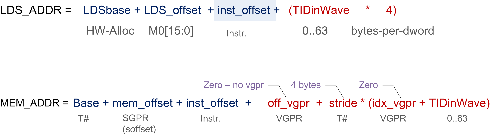
TIDinWave is only added if the resource (T#) has the ADD_TID_ENABLE field set to 1, whereas LDS always adds it. The MEM_ADDR M# is in the VDATA field; it specifies M0.
Clamping Rules¶
Memory address clamping follows the same rules as any other buffer fetch. LDS address clamping: the return data must not be written outside the LDS space allocated to this wave.
- Set the active-mask to limit buffer reads to those threads that return data to a legal LDS location.
- The LDSbase (alloc) is in units of 32 Dwords, as is LDSsize.
- M0[15:0] is in bytes.
GLC Bit Explained¶
The GLC bit means different things for loads, stores, and atomic ops.
GLC Meaning for Loads
- For GLC==0
- The load can read data from the GPU L1.
- Typically, all loads (except load-acquire) use GLC==0.
- For GLC==1
- The load intentionally misses the GPU L1 and reads from L2. If there was a line in the GPU L1 that matched, it is invalidated; L2 is reread.
- NOTE: L2 is not re-read for every work-item in the same wave-front for a single load instruction. For example: b=uav[N+tid] // assume this is a byte read w/ glc==1 and N is aligned to 64B In the above op, the first Tid of the wavefront brings in the line from L2 or beyond, and all 63 of the other Tids read from same 64 B cache line in the L1.
GLC Meaning for Stores
- For GLC==0 This causes a write-combine across work-items of the
wavefront store op; dirtied lines are written to the L2
automatically.
- If the store operation dirtied all bytes of the 64 B line, it is left clean and valid in the L1; subsequent accesses to the cache are allowed to hit on this cache line.
- Else do not leave write-combined lines in L1.
- For GLC==1 Same as GLC==0, except the write-combined lines are not left in the line, even if all bytes are dirtied.
Atomics
- For GLC == 0 No return data (this is “write-only” atomic op).
- For GLC == 1 Returns previous value in memory (before the atomic operation).
Vector Memory (VM) Image Instructions¶
Vector Memory (VM) operations transfer data between the VGPRs and memory through the texture cache (TC). Vector means the transfer of one or more pieces of data uniquely for every work-item in the wavefront. This is in contrast to scalar memory reads, which transfer only one value that is shared by all work-items in the wavefront.
Examples of image objects are texture maps and typed surfaces.
Image objects are accessed using from one to four dimensional addresses; they are composed of homogeneous data of one to four elements. These image objects are read from, or written to, using IMAGE_* or SAMPLE_* instructions, all of which use the MIMG instruction format. IMAGE_LOAD instructions read an element from the image buffer directly into VGPRS, and SAMPLE instructions use sampler constants (S#) and apply filtering to the data after it is read. IMAGE_ATOMIC instructions combine data from VGPRs with data already in memory, and optionally return the value that was in memory before the operation.
All VM operations use an image resource constant (T#) that is a 256-bit value in SGPRs. This constant is sent to the texture cache when the instruction is executed. This constant defines the address, data format, and characteristics of the surface in memory. Some image instructions also use a sampler constant that is a 128-bit constant in SGPRs. Typically, these constants are fetched from memory using scalar memory reads prior to executing VM instructions, but these constants can also be generated within the shader.
Texture fetch instructions have a data mask (DMASK) field. DMASK specifies how many data components it receives. If DMASK is less than the number of components in the texture, the texture unit only sends DMASK components, starting with R, then G, B, and A. if DMASK specifies more than the texture format specifies, the shader receives zero for the missing components.
Image Instructions¶
This section describes the image instruction set, and the microcode fields available to those instructions.
| MIMG | Description |
|---|---|
| SAMPLE_* | Read and filter data from a image object. |
| IMAGE_LOAD_<op> | Read data from an image object using one of the following: image_load, image_load_mip, image_load_{pck, pck_sgn, mip_pck, mip_pck_sgn}. |
IMAGE_STORE
IMAGE_STORE_MIP
|
Store data to an image object. Store data to a specific mipmap level. |
| IMAGE_ATOMIC_<op> | Image atomic operation, which is one of the following: swap, cmpswap, add, sub, rsub, {u,s}{min,max}, and, or, xor, inc, dec, fcmpswap, fmin, fmax. |
Table: Image Instructions
| Field | Bit Size | Description |
|---|---|---|
| OP | 7 | Opcode. |
| VADDR | 8 | Address of VGPR to supply first component of address. |
| VDATA | 8 | Address of VGPR to supply first component of write data or receive first component of read-data. |
| SSAMP | 5 | SGPR to supply S# (sampler constant) in four consecutive SGPRs. Missing two LSBs of SGPR-address since must be aligned to a multiple of four SGPRs. |
| SRSRC | 5 | SGPR to supply T# (resource constant) in four or eight consecutive SGPRs. Missing two LSBs of SGPR-address since must be aligned to a multiple of four SGPRs. |
| UNRM | 1 | Force address to be un-normalized regardless of T#. Must be set to 1 for image stores and atomics. |
| DA | 1 | Shader declared an
array resource to be
used with this fetch.
When 1, the shader
provides an
array-index with the
instruction.
When 0, no array index
is provided.
|
| DMASK | 4 | Data VGPR enable mask:
one to four
consecutive VGPRs.
Reads: defines which
components are
returned.
0 = red, 1 = green, 2
= blue, 3 = alpha
Writes: defines which
components are written
with data from VGPRs
(missing components
get 0). Enabled
components come from
consecutive VGPRs.
For example:
DMASK=1001: Red is in
VGPRn and alpha in
VGPRn+1. For D16
writes, DMASK is used
only as a word count:
each bit represents 16
bits of data to be
written, starting at
the LSBs of VADDR, the
MSBs, VADDR+1, etc.
Bit position is
ignored.
|
| GLC | 1 | Globally Coherent.
Controls how reads and
writes are handled by
the L1 texture cache.
READ:
GLC = 0 Reads can hit
on the L1 and persist
across waves.
GLC = 1 Reads always
miss the L1 and force
fetch to L2. No L1
persistence across
waves.
WRITE:
GLC = 0 Writes miss
the L1, write through
to L2, and persist in
L1 across wavefronts.
GLC = 1 Writes miss
the L1, write through
to L2. No persistence
across wavefronts.
ATOMIC:
GLC = 0 Previous data
value is not returned.
No L1 persistence
across wavefronts.
GLC = 1 Previous data
value is returned. No
L1 persistence across
wavefronts.
|
| SLC | 1 | System Level Coherent. When set, accesses are forced to miss in level 2 texture cache and are coherent with system memory. |
| TFE | 1 | Texel Fail Enable for PRT (partially resident textures). When set, a fetch can return a NACK, which causes a VGPR write into DST+1 (first GPR after all fetch-dest GPRs). |
| LWE | 1 | Force data to be un-normalized, regardless of T#. |
| A16 | 1 | Address components are
16-bits (instead of
the usual 32 bits).
When set, all address
components are 16 bits
(packed into two per
Dword), except:
Texel offsets (three
6-bit uint packed into
one Dword).
PCF reference (for _C
instructions).
Address components are
16-bit uint for image
ops without sampler;
16-bit float with
sampler.
|
| D16 | 1 | VGPR-Data-16bit. On
loads, convert data in
memory to 16-bit
format before storing
it in VGPRs. For
stores, convert 16-bit
data in VGPRs to 32
bits before going to
memory. Whether the
data is treated as
float or int is
decided by NFMT.
Allowed only with
these opcodes:
IMAGE_SAMPLE*
IMAGE_GATHER4*, but
not GATHER4H_PCK
IMAGE_LOAD
IMAGE_LOAD_MIP
IMAGE_STORE
IMAGE_STORE_MIP
|
Table: Instruction Fields
Image Opcodes with No Sampler¶
For image opcodes with no sampler, all VGPR address values are taken as uint. For cubemaps, face_id = slice * 6 + face.
The table below shows the contents of address VGPRs for the various image opcodes.
| Image Opcode (Resource w/o Sampler) | Acnt | dim | VGPRn | VGPRn+1 | VGPRn+2 | VGPRn+3 |
|---|---|---|---|---|---|---|
| get_resinfo | 0 | Any | mipid | |||
| load / store / atomics | 0 | 1D | x | |||
| 1 | 1D Array | x | slice | |||
| 1 | 2D | x | y | |||
| 2 | 2D MSAA | x | y | fragid | ||
| 2 | 2D Array | x | y | slice | ||
| 3 | 2D Array MSAA | x | y | slice | fragid | |
| 2 | 3D | x | y | z | ||
| 2 | Cube | x | y | face_id | ||
| load_mip / store_mip | 1 | 1D | x | mipid | ||
| 2 | 1D Array | x | slice | mipid | ||
| 2 | 2D | x | y | mipid | ||
| 3 | 2D Array | x | y | slice | mipid | |
| 3 | 3D | x | y | z | mipid | |
| 3 | Cube | x | y | face_id | mipid |
Table: Image Opcodes with No Sampler
Image Opcodes with a Sampler¶
For image opcodes with a sampler, all VGPR address values are taken as float. For cubemaps, face_id = slice * 8 + face.
Certain sample and gather opcodes require additional values from VGPRs beyond what is shown. These values are: offset, bias, z-compare, and gradients.
| Image Opcode (w/ Sampler) | Acnt | dim | VGPRn | VGPRn+1 | VGPRn+2 | VGPRn+3 |
|---|---|---|---|---|---|---|
| sample | 0 | 1D | x | |||
| 1 | 1D Array | x | slice | |||
| 1 | 2D | x | y | |||
| 2 | 2D interl aced | x | y | field | ||
| 2 | 2D Array | x | y | slice | ||
| 2 | 3D | x | y | z | ||
| 2 | Cube | x | y | face_id | ||
| sample_l | 1 | 1D | x | lod | ||
| 2 | 1D Array | x | slice | lod | ||
| 2 | 2D | x | y | lod | ||
| 3 | 2D interl aced | x | y | field | lod | |
| 3 | 2D Array | x | y | slice | lod | |
| 3 | 3D | x | y | z | lod | |
| 3 | Cube | x | y | face_id | lod | |
| sample_cl | 1 | 1D | x | clamp | ||
2 2 |
1D Array 2D | x x |
slice y |
clamp clamp |
||
| 3 | 2D interl aced | x | y | field | clamp | |
| 3 | 2D Array | x | y | slice | clamp | |
| 3 | 3D | x | y | z | clamp | |
| 3 | Cube | x | y | face_id | clamp | |
| gather4 | 1 | 2D | x | y | ||
| 2 | 2D interl aced | x | y | field | ||
| 2 | 2D Array | x | y | slice | ||
| 2 | Cube | x | y | face_id | ||
| gather4_l | 2 | 2D | x | y | lod | |
| 3 | 2D interl aced | x | y | field | lod | |
| 3 | 2D Array | x | y | slice | lod | |
| 3 | Cube | x | y | face_id | lod | |
| gather4_cl | 2 | 2D | x | y | clamp | |
| 3 | 2D interl aced | x | y | field | clamp | |
| 3 | 2D Array | x | y | slice | clamp | |
| 3 | Cube | x | y | face_id | clamp |
Table: Image Opcodes with Sampler
- Sample includes sample, sample_d, sample_b, sample_lz, sample_c, sample_c_d, sample_c_b, sample_c_lz, and getlod.
- Sample_l includes sample_l and sample_c_l.
- Sample_cl includes sample_cl, sample_d_cl, sample_b_cl, sample_c_cl, sample_c_d_cl, and sample_c_b_cl.
- Gather4 includes gather4, gather4_lz, gather4_c, and gather4_c_lz.
The table below lists and briefly describes the legal suffixes for image instructions:
| Suffix | Meaning | Extra Addresses | Description |
|---|---|---|---|
| _L | LOD | LOD is used instead of TA computed LOD. | |
| _B | LOD BIAS | 1: lod bias | Add this BIAS to the LOD TA computes. |
| _CL | LOD CLAMP | Clamp the LOD to be no larger than this value. | |
| _D | Derivative | 2,4 or 6: slopes | Send dx/dv, dx/dy, etc. slopes to TA for it to used in LOD computation. |
| _CD | Coarse Derivative | Send dx/dv, dx/dy, etc. slopes to TA for it to used in LOD computation. | |
| _LZ | Level 0 | Force use of MIP level 0. | |
| _C | PCF | 1: z-comp | Percentage closer filtering. |
| _O | Offset | 1: offsets | Send X, Y, Z integer offsets (packed into 1 Dword) to offset XYZ address. |
Table: Sample Instruction Suffix Key
VGPR Usage¶
Address: The address consists of up to four parts:
{ offset } { bias } { z-compare } { derivative } { body }
These are all packed into consecutive VGPRs.
- Offset: SAMPLE*O*, GATHER*O*One Dword of offset_xyz. The offsets are six-bit signed integers: X=[5:0], Y=[13:8], and Z=[21:16].
Bias: SAMPLE*B*, GATHER*B*. One Dword float.
Z-compare: SAMPLE*C*, GATHER*C*. One Dword.
Derivatives (sample_d, sample_cd): 2, 4, or 6 Dwords, packed one Dword per derivative as:
| Image Dim | Vgpr N | N+1 | N+2 | N+3 | N+4 | N+5 |
|---|---|---|---|---|---|---|
| 1D | DX/DH | DX/DV | ||||
| 2D | DX/DH | DY/DH | DX/DV | DY/DV | ||
| 3D | DX/DH | DY/DH | DZ/DH | DX/DV | DY/DV | DZ/DV |
Body: One to four Dwords, as defined by the table: Address components are X,Y,Z,W with X in VGPR_M, Y in VGPR_M+1, etc. The number of components in “body” is the value of the ACNT field in the table, plus one.
Data: Written from, or returned to, one to four consecutive VGPRs. The amount of data read or written is determined by the DMASK field of the instruction.
Reads: DMASK specifies which elements of the resource are returned to consecutive VGPRs. The texture system reads data from memory and based on the data format expands it to a canonical RGBA form, filling in zero or one for missing components. Then, DMASK is applied, and only those components selected are returned to the shader.
Writes: When writing an image object, it is only possible to write an entire element (all components), not just individual components. The components come from consecutive VGPRs, and the texture system fills in the value zero for any missing components of the image’s data format; it ignores any values that are not part of the stored data format. For example, if the DMASK=1001, the shader sends Red from VGPR_N, and Alpha from VGPR_N+1, to the texture unit. If the image object is RGB, the texel is overwritten with Red from the VGPR_N, Green and Blue set to zero, and Alpha from the shader ignored.
- Atomics: Image atomic operations are supported only on 32- and 64-bit-per pixel surfaces. The surface data format is specified in the resource constant. Atomic operations treat the element as a single component of 32- or 64-bits. For atomic operations, DMASK is set to the number of VGPRs (Dwords) to send to the texture unit. DMASK legal values for atomic image operations: no other values of DMASK are legal.0x1 = 32-bit atomics except cmpswap.0x3 = 32-bit atomic cmpswap.0x3 = 64-bit atomics except cmpswap.0xf = 64-bit atomic cmpswap.
Atomics with Return: Data is read out of the VGPR(s), starting at VDATA, to supply to the atomic operation. If the atomic returns a value to VGPRs, that data is returned to those same VGPRs starting at VDATA.
D16 Instructions: Load-format and store-format instructions also come in a “d16” variant. For stores, each 32-bit VGPR holds two 16-bit data elements that are passed to the texture unit. The texture unit converts them to the texture format before writing to memory. For loads, data returned from the texture unit is converted to 16 bits, and a pair of data are stored in each 32- bit VGPR (LSBs first, then MSBs). The DMASK bit represents individual 16- bit elements; so, when DMASK=0011 for an image-load, two 16-bit components are loaded into a single 32-bit VGPR.
Image Resource¶
The image resource (also referred to as T#) defines the location of the image buffer in memory, its dimensions, tiling, and data format. These resources are stored in four or eight consecutive SGPRs and are read by MIMG instructions.
| Bits | Size | Name | Comments |
|---|---|---|---|
| 128-bi t Resource : 1D-tex, 2d-tex, 2d-msaa (multi-s ample auto-ali asing) | |||
| 39:0 | 40 | base address | 256-byte aligned. Also used for fmask-ptr. |
| 51:40 | 12 | min lod | 4.8 (four uint bits, eight fraction bits) format. |
| 57:52 | 6 | data format | Number of comps, number of bits/comp. |
| 61:58 | 4 | num format | Numeric format. |
| 62 | 1 | NV | Non-volatile (0=volatile) |
| 77:64 | 14 | width | width-1 of mip0 in texels |
| 91:78 | 14 | height | height-1 of mip0 in texels |
| 94:92 | 3 | perf modulation | Scales sampler’s perf_z, perf_mip, aniso_bias, lod_bias_sec. |
| 98:96 | 3 | dst_sel_x | 0 = 0, 1 = 1, 4 = R, 5 = G, 6 = B, 7 = A. |
| 101:99 | 3 | dst_sel_y | |
| 104:102 | 3 | dst_sel_z | |
| 107:105 | 3 | dst_sel_w | |
| 111:108 | 4 | base level | largest mip level in the resource view. For msaa, set to zero. |
| 115:112 | 4 | last level | For msaa, holds number of samples |
| 120:116 | 5 | Tiling index | Lookuptable: 32 x 16
bank_width[2], bank_height[2],
num_banks[2], tile_split[2],
macro_tile_aspect[2],
micro_tile_mode[2], array_mode[4].
|
| 127:124 | 4 | type | 0 = buf, 8 = 1d, 9 = 2d, 10 = 3d, 11 = cube, 12 = 1d-array, 13 = 2d-array, 14 = 2d-msaa, 15 = 2d-msaa-array. 1-7 are reserved. |
| 256-bi t Resource : 1d-array , 2d-array , 3d, cubemap, MSAA | |||
| 140:128 | 13 | depth | depth-1 of mip0 for 3d map |
| 156:141 | 16 | pitch | In texel units. |
| 159:157 | 3 | border color swizzle | Specifies the channel ordering for border color independent of the T# dst_sel fields. 0=xyzw, 1=xwyz, 2=wqyx, 3=wxyz, 4=zyxw, 5=yxwz |
| 176:173 | 4 | Array Pitch | array pitch for quilts, encoded as: trunc(log2(array_pitch))+1 |
| 184:177 | 8 | meta data address | bits[47:40] |
| 185 | 1 | meta_linear | forces metadata surface to be linear |
| 186 | 1 | meta_pipe_a ligned | maintain pipe alignment in metadata addressing |
| 187 | 1 | meta_rb_ali gned | maintain RB alignment in metadata addressing |
| 191:188 | 4 | Max Mip | Resource mipLevel-1. Describes the resource, as opposed to base_level and last_level, which describes the resouce view. For MSAA, holds log2(number of samples). |
| 203:192 | 12 | min LOD warn | Feedback trigger for LOD, in U4.8 format. |
| 211:204 | 8 | counter bank ID | PRT counter ID |
| 212 | 1 | LOD hardware count enable | PRT hardware counter enable |
| 213 | 1 | Compression Enable | enable delta color compression |
| 214 | 1 | Alpha is on MSB | Set to 1 if the surface’s component swap is not reversed (DCC) |
| 215 | 1 | Color Transform | Auto=0, none=1 (DCC) |
| 255:216 | 40 | Meta Data Address | Upper bits of meta-data address (DCC) [47:8] |
Table: Image Resource Definition
All image resource view descriptors (T#’s) are written by the driver as 256 bits.
The MIMG-format instructions have a DeclareArray (DA) bit that reflects whether the shader was expecting an array-texture or simple texture to be bound. When DA is zero, the hardware does not send an array index to the texture cache. If the texture map was indexed, the hardware supplies an index value of zero. Indices sent for non-indexed texture maps are ignored.
Image Sampler¶
The sampler resource (also referred to as S#) defines what operations to perform on texture map data read by sample instructions. These are primarily address clamping and filter options. Sampler resources are defined in four consecutive SGPRs and are supplied to the texture cache with every sample instruction.
| Bits | Size | Name | Description |
|---|---|---|---|
| 2:0 | 3 | clamp x | Clamp/wrap mode. |
| 5:3 | 3 | clamp y | |
| 8:6 | 3 | clamp z | |
| 11:9 | 3 | max aniso ratio | |
| 14:12 | 3 | depth compare func | |
| 15 | 1 | force unnormalized | Force address cords to be unorm. |
| 18:16 | 3 | aniso threshold | |
| 19 | 1 | mc coord trunc | |
| 20 | 1 | force degamma | |
| 26:21 | 6 | aniso bias | u1.5. |
| 27 | 1 | trunc coord | |
| 28 | 1 | disable cube wrap | |
| 30:29 | 2 | filter_mode | Normal lerp, min, or max filter. |
| 31 | 1 | compat_mode | 1 = new mode; 0 = legacy |
| 43:32 | 12 | min lod | u4.8. |
| 55:44 | 12 | max lod | u4.8. |
| 59:56 | 4 | perf_mip | |
| 63:60 | 4 | perf z | |
| 77:64 | 14 | lod bias | s5.8. |
| 83:78 | 6 | lod bias sec | s1.4. |
| 85:84 | 2 | xy mag filter | Magnification filter. |
| 87:86 | 2 | xy min filter | Minification filter. |
| 89:88 | 2 | z filter | |
| 91:90 | 2 | mip filter | |
| 92 | 1 | mip_point_precla mp | When mipfilter = point, add 0.5 before clamping. |
| 93 | 1 | disable_lsb_ceil | Disable ceiling logic in filter (rounds up). |
| 94 | 1 | Filter_Prec_Fix | |
| 95 | 1 | Aniso_override | Disable Aniso filtering if base_level = last_level |
| 107:96 | 12 | border color ptr | |
| 125:108 | 18 | unused | |
| 127:126 | 2 | border color type | Opaque-black, transparent-black, white, use border color ptr. |
Table: Image Sampler Definition
Data Formats¶
Data formats 0-15 are available to buffer resources, and all formats are available to image formats. The table below details all the data formats that can be used by image and buffer resources.
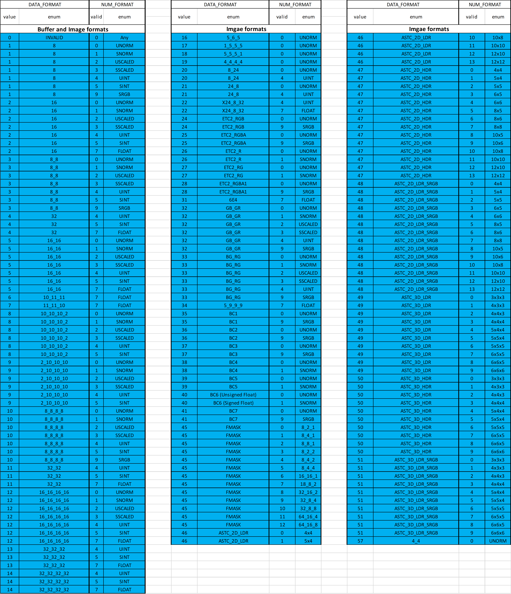
Vector Memory Instruction Data Dependencies¶
When a VM instruction is issued, the address is immediately read out of VGPRs and sent to the texture cache. Any texture or buffer resources and samplers are also sent immediately. However, write-data is not immediately sent to the texture cache.
The shader developer’s responsibility to avoid data hazards associated with VMEM instructions include waiting for VMEM read instruction completion before reading data fetched from the TC (VMCNT).
This is explained in the section:
Flat Memory Instructions¶
Flat Memory instructions read, or write, one piece of data into, or out of, VGPRs; they do this separately for each work-item in a wavefront. Unlike buffer or image instructions, Flat instructions do not use a resource constant to define the base address of a surface. Instead, Flat instructions use a single flat address from the VGPR; this addresses memory as a single flat memory space. This memory space includes video memory, system memory, LDS memory, and scratch (private) memory. It does not include GDS memory. Parts of the flat memory space may not map to any real memory, and accessing these regions generates a memory-violation error. The determination of the memory space to which an address maps is controlled by a set of “memory aperture” base and size registers.
Flat Memory Instruction¶
Flat memory instructions let the kernel read or write data in memory, or perform atomic operations on data already in memory. These operations occur through the texture L2 cache. The instruction declares which VGPR holds the address (either 32- or 64-bit, depending on the memory configuration), the VGPR which sends and the VGPR which receives data. Flat instructions also use M0 as described in the table below:
| Field | Bit Size | Description |
|---|---|---|
| OP | 7 | Opcode. Can be Flat, Scratch or Global instruction. See next table. |
| ADDR | 8 | VGPR which holds the address. For 64-bit addresses, ADDR has the LSBs, and ADDR+1 has the MSBs. |
| DATA | 8 | VGPR which holds the first Dword of data. Instructions can use 0-4 Dwords. |
| VDST | 8 | VGPR destination for data returned to the kernel, either from LOADs or Atomics with GLC=1 (return pre-op value). |
| SLC | 1 | System Level Coherent. Used in conjunction with GLC to determine cache policies. |
| GLC | 1 | Global Level Coherent. For Atomics, GLC: 1 means return pre-op value, 0 means do not return pre-op value. |
| SEG | 2 | Memory Segment: 0=FLAT, 1=SCRATCH, 2=GLOBAL, 3=reserved. |
| LDS | 1 | When set, data is moved between LDS and memory instead of VGPRs and memory. For Global and Scratch only; must be zero for Flat. |
| NV | 1 | Non-volatile. When set, the read/write is operating on non-volatile memory. |
| OFFSET | 13 | Address offset.
Scratch, Global:
13-bit signed byte
offset.
Flat: 12-bit unsigned
offset (MSB is
ignored).
|
| SADDR | 7 | Scalar SGPR that
provides an offset
address. To disable,
set this field to
0x7F. Meaning of this
field is different for
Scratch and Global:
Flat: Unused.
Scratch: Use an SGPR
(instead of VGPR) for
the address.
Global: Use the SGPR
to provide a base
address; the VGPR
provides a 32-bit
offset.
|
| M0 | 16 | Implied use of M0 for SCRATCH and GLOBAL only when LDS=1. Provides the LDS address-offset. |
Table: Flat, Global and Scratch Microcode Formats
| Flat Opcodes | Global Opcodes | Scratch Opcodes |
|---|---|---|
| FLAT | GLOBAL | SCRATCH |
| FLAT_LOAD_UBYTE | GLOBAL_LOAD_UBYTE | SCRATCH_LOAD_UBYTE |
| FLAT_LOAD_UBYTE_D16 | GLOBAL_LOAD_UBYTE_D1 6 | SCRATCH_LOAD_UBYTE_D1 6 |
| FLAT_LOAD_UBYTE_D16_HI | GLOBAL_LOAD_UBYTE_D1 6_HI | SCRATCH_LOAD_UBYTE_D1 6_HI |
| FLAT_LOAD_SBYTE | GLOBAL_LOAD_SBYTE | SCRATCH_LOAD_SBYTE |
| FLAT_LOAD_SBYTE_D16 | GLOBAL_LOAD_SBYTE_D1 6 | SCRATCH_LOAD_SBYTE_D1 6 |
| FLAT_LOAD_SBYTE_D16_HI | GLOBAL_LOAD_SBYTE_D1 6_HI | SCRATCH_LOAD_SBYTE_D1 6_HI |
| FLAT_LOAD_USHORT | GLOBAL_LOAD_USHORT | SCRATCH_LOAD_USHORT |
| FLAT_LOAD_SSHORT | GLOBAL_LOAD_SSHORT | SCRATCH_LOAD_SSHORT |
| FLAT_LOAD_SHORT_D16 | GLOBAL_LOAD_SHORT_D1 6 | SCRATCH_LOAD_SHORT_D1 6 |
| FLAT_LOAD_SHORT_D16_HI | GLOBAL_LOAD_SHORT_D1 6_HI | SCRATCH_LOAD_SHORT_D1 6_HI |
| FLAT_LOAD_DWORD | GLOBAL_LOAD_DWORD | SCRATCH_LOAD_DWORD |
| FLAT_LOAD_DWORDX2 | GLOBAL_LOAD_DWORDX2 | SCRATCH_LOAD_DWORDX2 |
| FLAT_LOAD_DWORDX3 | GLOBAL_LOAD_DWORDX3 | SCRATCH_LOAD_DWORDX3 |
| FLAT_LOAD_DWORDX4 | GLOBAL_LOAD_DWORDX4 | SCRATCH_LOAD_DWORDX4 |
| FLAT_STORE_BYTE | GLOBAL_STORE_BYTE | SCRATCH_STORE_BYTE |
| FLAT_STORE_BYTE_D16_HI | GLOBAL_STORE_BYTE_D1 6_HI | SCRATCH_STORE_BYTE_D1 6_HI |
| FLAT_STORE_SHORT | GLOBAL_STORE_SHORT | SCRATCH_STORE_SHORT |
| FLAT_STORE_SHORT_D16 _HI | GLOBAL_STORE_SHORT_D 16_HI | SCRATCH_STORE_SHORT_D 16_HI |
| FLAT_STORE_DWORD | GLOBAL_STORE_DWORD | SCRATCH_STORE_DWORD |
| FLAT_STORE_DWORDX2 | GLOBAL_STORE_DWORDX2 | SCRATCH_STORE_DWORDX2 |
| FLAT_STORE_DWORDX3 | GLOBAL_STORE_DWORDX3 | SCRATCH_STORE_DWORDX3 |
| FLAT_STORE_DWORDX4 | GLOBAL_STORE_DWORDX4 | SCRATCH_STORE_DWORDX4 |
| FLAT_ATOMIC_SWAP | GLOBAL_ATOMIC_SWAP | none |
| FLAT_ATOMIC_CMPSWAP | GLOBAL_ATOMIC_CMPSWAP | none |
| FLAT_ATOMIC_ADD | GLOBAL_ATOMIC_ADD | none |
| FLAT_ATOMIC_SUB | GLOBAL_ATOMIC_SUB | none |
| FLAT_ATOMIC_SMIN | GLOBAL_ATOMIC_SMIN | none |
| FLAT_ATOMIC_UMIN | GLOBAL_ATOMIC_UMIN | none |
| FLAT_ATOMIC_SMAX | GLOBAL_ATOMIC_SMAX | none |
| FLAT_ATOMIC_UMAX | GLOBAL_ATOMIC_UMAX | none |
| FLAT_ATOMIC_AND | GLOBAL_ATOMIC_AND | none |
| FLAT_ATOMIC_OR | GLOBAL_ATOMIC_OR | none |
| FLAT_ATOMIC_XOR | GLOBAL_ATOMIC_XOR | none |
| FLAT_ATOMIC_INC | GLOBAL_ATOMIC_INC | none |
| FLAT_ATOMIC_DEC | GLOBAL_ATOMIC_DEC | none |
| The atomic instructions above are also available in “_X2” versions (64-bit). |
Table: Flat, Global and Scratch Opcodes
Instructions¶
The FLAT instruction set is nearly identical to the Buffer instruction set, but without the FORMAT reads and writes. Unlike Buffer instructions, FLAT instructions cannot return data directly to LDS, but only to VGPRs.
FLAT instructions do not use a resource constant (V#) or sampler (S#); however, they do require a special SGPR-pair to hold scratch-space information in case any threads’ address resolves to scratch space. See the Scratch section for details.
Internally, FLAT instruction are executed as both an LDS and a Buffer instruction; so, they increment both VM_CNT and LGKM_CNT and are not considered done until both have been decremented. There is no way beforehand to determine whether a FLAT instruction uses only LDS or TA memory space.
Ordering¶
Flat instructions can complete out of order with each other. If one flat instruction finds all of its data in Texture cache, and the next finds all of its data in LDS, the second instruction might complete first. If the two fetches return data to the same VGPR, the result are unknown.
Importing Timing Consideration¶
Since the data for a FLAT load can come from either LDS or the texture cache, and because these units have different latencies, there is a potential race condition with respect to the VM_CNT and LGKM_CNT counters. Because of this, the only sensible S_WAITCNT value to use after FLAT instructions is zero.
Addressing¶
FLAT instructions support both 64- and 32-bit addressing. The address size is set using a mode register (PTR32), and a local copy of the value is stored per wave.
The addresses for the aperture check differ in 32- and 64-bit mode; however, this is not covered here.
64-bit addresses are stored with the LSBs in the VGPR at ADDR, and the MSBs in the VGPR at ADDR+1.
For scratch space, the texture unit takes the address from the VGPR and does the following.
Address = VGPR[addr] + TID_in_wave * Size
- private aperture base (in SH_MEM_BASES)
+ offset (from flat_scratch)
Global¶
Global instructions are similar to Flat instructions, but the programmer must ensure that no threads access LDS space; thus, no LDS bandwidth is used by global instructions.
Global instructions offer two types of addressing:
- Memory_addr = VGPR-address + instruction offset.
- Memory_addr = SGPR-address + VGPR-offset + instruction offset.
The size of the address component is dependent on ADDRESS_MODE: 32-bits or 64-bit pointers. The VGPR-offset is always 32 bits.
These instructions also allow direct data movement between LDS and memory without going through VGPRs.
Since these instructions do not access LDS, only VM_CNT is used, not LGKM_CNT. If a global instruction does attempt to access LDS, the instruction returns MEM_VIOL.
Scratch¶
Scratch instructions are similar to Flat, but the programmer must ensure that no threads access LDS space, and the memory space is swizzled. Thus, no LDS bandwidth is used by scratch instructions.
Scratch instructions also support multi-Dword access and mis-aligned access (although mis-aligned is slower).
Scratch instructions use the following addressing:
- Memory_addr = flat_scratch.addr + swizzle(V/SGPR_offset + inst_offset, threadID)
- The offset can come from either an SGPR or a VGPR, and is always a 32- bit unsigned byte.
The size of the address component is dependent on the ADDRESS_MODE: 32-bits or 64-bit pointers. The VGPR-offset is always 32 bits.
These instructions also allow direct data movement between LDS and memory without going through VGPRs.
Since these instructions do not access LDS, only VM_CNT is used, not LGKM_CNT. It is not possible for a Scratch instruction to access LDS; thus, no error or aperture checking is done.
Memory Error Checking¶
Both TA and LDS can report that an error occurred due to a bad address. This can occur for the following reasons:
- invalid address (outside any aperture)
- write to read-only surface
- misaligned data
- out-of-range address:
- LDS access with an address outside the range: [ 0, MIN(M0, LDS_SIZE)-1 ]
- Scratch access with an address outside the range: [0, scratch-size -1 ]
The policy for threads with bad addresses is: writes outside this range do not write a value, and reads return zero.
Addressing errors from either LDS or TA are returned on their respective “instruction done” busses as MEM_VIOL. This sets the wave’s MEM_VIOL TrapStatus bit and causes an exception (trap) if the corresponding EXCPEN bit is set.
Data¶
FLAT instructions can use zero to four consecutive Dwords of data in VGPRs and/or memory. The DATA field determines which VGPR(s) supply source data (if any), and the VDST VGPRs hold return data (if any). No data-format conversion is done.
Scratch Space (Private)¶
Scratch (thread-private memory) is an area of memory defined by the aperture registers. When an address falls in scratch space, additional address computation is automatically performed by the hardware. The kernel must provide additional information for this computation to occur in the form of the FLAT_SCRATCH register.
The FLAT_SCRATCH address is automatically sent with every FLAT request.
FLAT_SCRATCH is a 64-bit, byte address. The shader composes the value by adding together two separate values: the base address, which can be passed in via an initialized SGPR, or perhaps through a constant buffer, and the per-wave allocation offset (also initialized in an SGPR).
Exporting Pixel and Vertex Data¶
The export instruction copies pixel or vertex shader data from VGPRs into a dedicated output buffer. The export instruction outputs the following types of data.
- Vertex Position
- Vertex Parameter
- Pixel color
- Pixel depth (Z)
Microcode Encoding¶
The export instruction uses the EXP microcode format.
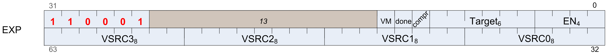
| Field | Size | Description |
|---|---|---|
| VM | 1 | Valid Mask. When set to 1, this indicates that the EXEC mask represents the valid-mask for this wavefront. It can be sent multiple times per shader (the final value is used), but must be sent at least once per pixel shader. |
| DONE | 1 | This is the final pixel shader or vertex-position export of the program. Used only for pixel and position exports. Set to zero for parameters. |
| COMPR | 1 | Compressed data. When set, indicates that the data being exported is 16-bits per component rather than the usual 32-bit. |
| TARGET | 6 | Indicates type of data
exported.
0..7 MRT 0..7
8 Z
9 Null (no data)
12-15 Position 0..3
32-63 Param 0..31
|
| EN | 4 | COMPR==1: export
half-Dword enable.
Valid values are:
0x0,3,C,F.
[0] enables VSRC0 :
R,G from one VGPGR
[2] enables VSRC1 :
B,A from one VGPR
COMPR==0: [0-3] =
enables for VSRC0..3.
EN can be zero (used
when exporting only
valid mask to NULL
target).
|
| VSRC3 | 8 | VGPR from which to
read data.
Pos & Param: vsrc0=X,
1=Y, 2=Z, 3=W
MRT: vsrc0=R, 1=G,
2=B, 3=A
|
| VSRC2 | 8 | |
| VSRC1 | 8 | |
| VSRC0 | 8 |
Table: EXP Encoding Field Descriptions
Operations¶
Pixel Shader Exports¶
Export instructions copy color data to the MRTs. Data always has four components (R, G, B, A). Optionally, export instructions also output depth (Z) data.
Every pixel shader must have at least one export instruction. The last export instruction executed must have the DONE bit set to one.
The EXEC mask is applied to all exports. Only pixels with the corresponding EXEC bit set to 1 export data to the output buffer. Results from multiple exports are accumulated in the output buffer.
At least one export must have the VM bit set to 1. This export, in addition to copying data to the color or depth output buffer, also informs the color buffer which pixels are valid and which have been discarded. The value of the EXEC mask communicates the pixel valid mask. If multiple exports are sent with VM set to 1, the mask from the final export is used. If the shader program wants to only update the valid mask but not send any new data, the program can do an export to the NULL target.
Vertex Shader Exports¶
The vertex shader uses export instructions to output vertex position data and vertex parameter data to the output buffer. This data is passed on to subsequent pixel shaders.
Every vertex shader must output at least one position vector (x, y, z; w is optional) to the POS0 target. The last position export must have the DONE bit set to 1. A vertex shader can export zero or more parameters. For best performance, it is best to output all position data as early as possible in the vertex shader.
Dependency Checking¶
Export instructions are executed by the hardware in two phases. First, the instruction is selected to be executed, and EXPCNT is incremented by 1. At this time, the hardware requests the use of internal busses needed to complete the instruction.
When access to the bus is granted, the EXEC mask is read and the VGPR data sent out. After the last of the VGPR data is sent, the EXPCNT counter is decremented by 1.
Use S_WAITCNT on EXPCNT to prevent the shader program from overwriting EXEC or the VGPRs holding the data to be exported before the export operation has completed.
Multiple export instructions can be outstanding at one time. Exports of the same type (for example: position) are completed in order, but exports of different types can be completed out of order.
If the STATUS register’s SKIP_EXPORT bit is set to one, the hardware treats all EXPORT instructions as if they were NOPs.
Instructions¶
This chapter lists, and provides descriptions for, all instructions in the GCN Vega Generation environment. Instructions are grouped according to their format.
Instruction suffixes have the following definitions:
- B32 Bitfield (untyped data) 32-bit
- B64 Bitfield (untyped data) 64-bit
- F32 floating-point 32-bit (IEEE 754 single-precision float)
- F64 floating-point 64-bit (IEEE 754 double-precision float)
- I32 signed 32-bit integer
- I64 signed 64-bit integer
- U32 unsigned 32-bit integer
U64 unsigned 64-bit integer
If an instruction has two suffixes (for example, _I32_F32), the first suffix indicates the destination type, the second the source type.
The following abbreviations are used in instruction definitions:
- D = destination
- U = unsigned integer
- S = source
- SCC = scalar condition code
- I = signed integer
B = bitfield
Note: .u or .i specifies to interpret the argument as an unsigned or signed float.
Note: Rounding and Denormal modes apply to all floating-point operations unless otherwise specified in the instruction description.
SOP2 Instructions¶
Instructions in this format may use a 32-bit literal constant which occurs immediately after the instruction.
| Opcode | Name | Description |
|---|---|---|
| 0 | S_ADD_U32 | D.u = S0.u + S1.u; SCC = (S0.u + S1.u >= 0x100000000ULL ? 1 : 0). // unsigned overflow/carry-out, S_ADDC_U32 |
| 1 | S_SUB_U32 | D.u = S0.u - S1.u; SCC = (S1.u > S0.u ? 1 : 0). // unsigned overflow or carry-out for S_SUBB_U32. |
| 2 | S_ADD_I32 | D.i = S0.i + S1.i; SCC = (S0.u[31] == S1.u[31] && S0.u[31] != D.u[31]). // signed overflow. This opcode is not suitable for use with S_ADDC_U32 for implementing 64-bit operations. |
| 3 | S_SUB_I32 | D.i = S0.i - S1.i; SCC = (S0.u[31] != S1.u[31] && S0.u[31] != D.u[31]). // signed overflow. This opcode is not suitable for use with S_SUBB_U32 for implementing 64-bit operations. |
| 4 | S_ADDC_U32 | D.u = S0.u + S1.u + SCC; SCC = (S0.u + S1.u + SCC >= 0x100000000ULL ? 1 : 0). // unsigned overflow. |
| 5 | S_SUBB_U32 | D.u = S0.u - S1.u - SCC; SCC = (S1.u + SCC > S0.u ? 1 : 0). // unsigned overflow. |
| 6 | S_MIN_I32 | D.i = (S0.i < S1.i) ? S0.i : S1.i; SCC = (S0.i < S1.i). |
| 7 | S_MIN_U32 | D.u = (S0.u < S1.u) ? S0.u : S1.u; SCC = (S0.u < S1.u). |
| 8 | S_MAX_I32 | D.i = (S0.i > S1.i) ? S0.i : S1.i; SCC = (S0.i > S1.i). |
| 9 | S_MAX_U32 | D.u = (S0.u > S1.u) ? S0.u : S1.u; SCC = (S0.u > S1.u). |
| 10 | S_CSELECT_B3 2 | D.u = SCC ? S0.u : S1.u. Conditional select. |
| 11 | S_CSELECT_B6 4 | D.u64 = SCC ? S0.u64 : S1.u64. Conditional select. |
| 12 | S_AND_B32 | D = S0 & S1; SCC = (D != 0). |
| 13 | S_AND_B64 | D = S0 & S1; SCC = (D != 0). |
| 14 | S_OR_B32 | D = S0 | S1; SCC = (D != 0). |
| 15 | S_OR_B64 | D = S0 | S1; SCC = (D != 0). |
| 16 | S_XOR_B32 | D = S0 ^ S1; SCC = (D != 0). |
| 17 | S_XOR_B64 | D = S0 ^ S1; SCC = (D != 0). |
| 18 | S_ANDN2_B32 | D = S0 & ~S1; SCC = (D != 0). |
| 19 | S_ANDN2_B64 | D = S0 & ~S1; SCC = (D != 0). |
| 20 | S_ORN2_B32 | D = S0 | ~S1; SCC = (D != 0). |
| 21 | S_ORN2_B64 | D = S0 | ~S1; SCC = (D != 0). |
| 22 | S_NAND_B32 | D = ~(S0 & S1); SCC = (D != 0). |
| 23 | S_NAND_B64 | D = ~(S0 & S1); SCC = (D != 0). |
| 24 | S_NOR_B32 | D = ~(S0 | S1); SCC = (D != 0). |
| 25 | S_NOR_B64 | D = ~(S0 | S1); SCC = (D != 0). |
| 26 | S_XNOR_B32 | D = ~(S0 ^ S1); SCC = (D != 0). |
| 27 | S_XNOR_B64 | D = ~(S0 ^ S1); SCC = (D != 0). |
| 28 | S_LSHL_B32 | D.u = S0.u << S1.u[4:0]; SCC = (D.u != 0). |
| 29 | S_LSHL_B64 | D.u64 = S0.u64 << S1.u[5:0]; SCC = (D.u64 != 0). |
| 30 | S_LSHR_B32 | D.u = S0.u >> S1.u[4:0]; SCC = (D.u != 0). |
| 31 | S_LSHR_B64 | D.u64 = S0.u64 >> S1.u[5:0]; SCC = (D.u64 != 0). |
| 32 | S_ASHR_I32 | D.i = signext(S0.i) >> S1.u[4:0]; SCC = (D.i != 0). |
| 33 | S_ASHR_I64 | D.i64 = signext(S0.i64) >> S1.u[5:0]; SCC = (D.i64 != 0). |
| 34 | S_BFM_B32 | D.u = ((1 << S0.u[4:0]) - 1) << S1.u[4:0]. Bitfield mask. |
| 35 | S_BFM_B64 | D.u64 = ((1ULL << S0.u[5:0]) - 1) << S1.u[5:0]. Bitfield mask. |
| 36 | S_MUL_I32 | D.i = S0.i * S1.i. |
| 37 | S_BFE_U32 | D.u = (S0.u >> S1.u[4:0]) & ((1 << S1.u[22:16]) - 1); SCC = (D.u != 0). Bit field extract. S0 is Data, S1[4:0] is field offset, S1[22:16] is field width. |
| 38 | S_BFE_I32 | D.i = signext((S0.i >> S1.u[4:0]) & ((1 << S1.u[22:16]) - 1)); SCC = (D.i != 0). Bit field extract. S0 is Data, S1[4:0] is field offset, S1[22:16] is field width. |
| 39 | S_BFE_U64 | D.u64 = (S0.u64 >> S1.u[5:0]) & ((1 << S1.u[22:16]) - 1); SCC = (D.u64 != 0). Bit field extract. S0 is Data, S1[5:0] is field offset, S1[22:16] is field width. |
| 40 | S_BFE_I64 | D.i64 = signext((S0.i64 >> S1.u[5:0]) & ((1 << S1.u[22:16]) - 1)); SCC = (D.i64 != 0). Bit field extract. S0 is Data, S1[5:0] is field offset, S1[22:16] is field width. |
| 41 | S_CBRANCH_G_FORK | mask_pass = S0.u64 & EXEC; mask_fail = ~S0.u64 & EXEC; if(mask_pass == EXEC) then PC = S1.u64; elsif(mask_fail == EXEC) then PC += 4; elsif(bitcount(mask_fail) < bitcount(mask_pass)) EXEC = mask_fail; SGPR[CSP*4] = { S1.u64, mask_pass }; CSP += 1; PC += 4; else EXEC = mask_pass; SGPR[CSP*4] = { PC + 4, mask_fail }; CSP += 1; PC = S1.u64; endif. Conditional branch using branch-stack. S0 = compare mask(vcc or any sgpr) and S1 = 64-bit byte address of target instruction. See also S_CBRANCH_JOIN. |
| 42 | S_ABSDIFF_I3 2 | D.i = S0.i - S1.i; if(D.i < 0) then D.i = -D.i; endif; SCC = (D.i != 0). Compute the absolute value of difference between two values. Examples: S_ABSDIFF_I32(0x00000002, 0x00000005) => 0x00000003 S_ABSDIFF_I32(0xffffffff, 0x00000000) => 0x00000001 S_ABSDIFF_I32(0x80000000, 0x00000000) => 0x80000000 // Note: result is negative! S_ABSDIFF_I32(0x80000000, 0x00000001) => 0x7fffffff S_ABSDIFF_I32(0x80000000, 0xffffffff) => 0x7fffffff S_ABSDIFF_I32(0x80000000, 0xfffffffe) => 0x7ffffffe |
| 43 | S_RFE_RESTOR E_B64 | PRIV = 0; PC = S0.u64. Return from exception handler and continue. This instruction may only be used within a trap handler. This instruction is provided for compatibility with older ASICs. New shader code must use S_RFE_B64. The second argument is ignored. |
| 44 | S_MUL_HI_U3 2 | D.u = (S0.u * S1.u) >> 32. |
| 45 | S_MUL_HI_I3 2 | D.i = (S0.i * S1.i) >> 32. |
| 46 | S_LSHL1_ADD_U32 | D.u = (S0.u << 1) + S1.u; SCC = (((S0.u << 1) + S1.u) >= 0x100000000ULL ? 1 : 0). // unsigned overflow. |
| 47 | S_LSHL2_ADD_U32 | D.u = (S0.u << 2) + S1.u; SCC = (((S0.u << 2) + S1.u) >= 0x100000000ULL ? 1 : 0). // unsigned overflow. |
| 48 | S_LSHL3_ADD_U32 | D.u = (S0.u << 3) + S1.u; SCC = (((S0.u << 3) + S1.u) >= 0x100000000ULL ? 1 : 0). // unsigned overflow. |
| 49 | S_LSHL4_ADD_U32 | D.u = (S0.u << 4) + S1.u; SCC = (((S0.u << 4) + S1.u) >= 0x100000000ULL ? 1 : 0). // unsigned overflow. |
| 50 | S_PACK_LL_B 32_B16 | D.u[31:0] = { S1.u[15:0], S0.u[15:0] }. |
| 51 | S_PACK_LH_B 32_B16 | D.u[31:0] = { S1.u[31:16], S0.u[15:0] }. |
| 52 | S_PACK_HH_B 32_B16 | D.u[31:0] = { S1.u[31:16], S0.u[31:16] }. |
SOPK Instructions¶
Instructions in this format may use a 32-bit literal constant which occurs immediately after the instruction.
| Opcode | Name | Description |
|---|---|---|
| 0 | S_MOVK_I32 | D.i = signext(SIMM16). Sign extension from a 16-bit constant. |
| 1 | S_CMOVK_I32 | if(SCC) then D.i = signext(SIMM16); endif. Conditional move with sign extension. |
| 2 | S_CMPK_EQ_I 32 | SCC = (S0.i == signext(SIMM16)). |
| 3 | S_CMPK_LG_I 32 | SCC = (S0.i != signext(SIMM16)). |
| 4 | S_CMPK_GT_I 32 | SCC = (S0.i > signext(SIMM16)). |
| 5 | S_CMPK_GE_I 32 | SCC = (S0.i >= signext(SIMM16)). |
| 6 | S_CMPK_LT_I 32 | SCC = (S0.i < signext(SIMM16)). |
| 7 | S_CMPK_LE_I 32 | SCC = (S0.i <= signext(SIMM16)). |
| 8 | S_CMPK_EQ_U 32 | SCC = (S0.u == SIMM16). |
| 9 | S_CMPK_LG_U 32 | SCC = (S0.u != SIMM16). |
| 10 | S_CMPK_GT_U 32 | SCC = (S0.u > SIMM16). |
| 11 | S_CMPK_GE_U 32 | SCC = (S0.u >= SIMM16). |
| 12 | S_CMPK_LT_U 32 | SCC = (S0.u < SIMM16). |
| 13 | S_CMPK_LE_U 32 | SCC = (S0.u <= SIMM16). |
| 14 | S_ADDK_I32 | tmp = D.i; // save value so we can check sign bits for overflow later. D.i = D.i + signext(SIMM16); SCC = (tmp[31] == SIMM16[15] && tmp[31] != D.i[31]). // signed overflow. |
| 15 | S_MULK_I32 | D.i = D.i * signext(SIMM16). |
| 16 | S_CBRANCH_I_FORK | mask_pass = S0.u64 & EXEC; mask_fail = ~S0.u64 & EXEC; target_addr = PC + signext(SIMM16 * 4) + 4; if(mask_pass == EXEC) PC = target_addr; elsif(mask_fail == EXEC) PC += 4; elsif(bitcount(mask_fail) < bitcount(mask_pass)) EXEC = mask_fail; SGPR[CSP*4] = { target_addr, mask_pass }; CSP += 1; PC += 4; else EXEC = mask_pass; SGPR[CSP*4] = { PC + 4, mask_fail }; CSP += 1; PC = target_addr; endif. Conditional branch using branch-stack. S0 = compare mask(vcc or any sgpr), and SIMM16 = signed DWORD branch offset relative to next instruction. See also S_CBRANCH_JOIN. |
| 17 | S_GETREG_B32 | D.u = hardware-reg. Read some or all of a hardware register into the LSBs of D. SIMM16 = {size[4:0], offset[4:0], hwRegId[5:0]}; offset is 0..31, size is 1..32. |
| 18 | S_SETREG_B32 | hardware-reg = S0.u. Write some or all of the LSBs of D into a hardware register. SIMM16 = {size[4:0], offset[4:0], hwRegId[5:0]}; offset is 0..31, size is 1..32. |
| 20 | S_SETREG_IMM 32_B32 | Write some or all of the LSBs of IMM32 into a hardware register; this instruction requires a 32-bit literal constant. SIMM16 = {size[4:0], offset[4:0], hwRegId[5:0]}; offset is 0..31, size is 1..32. |
| 21 | S_CALL_B64 | D.u64 = PC + 4; PC = PC + signext(SIMM16 * 4) + 4. Implements a short call, where the return address (the next instruction after the S_CALL_B64) is saved to D. Long calls should consider S_SWAPPC_B64 instead. Note that this instruction is always 4 bytes. |
SOP1 Instructions¶
Instructions in this format may use a 32-bit literal constant which occurs immediately after the instruction.
| Opcode | Name | Description |
|---|---|---|
| 0 | S_MOV_B32 | D.u = S0.u. |
| 1 | S_MOV_B64 | D.u64 = S0.u64. |
| 2 | S_CMOV_B32 | if(SCC) then D.u = S0.u; endif. Conditional move. |
| 3 | S_CMOV_B64 | if(SCC) then D.u64 = S0.u64; endif. Conditional move. |
| 4 | S_NOT_B32 | D = ~S0; SCC = (D != 0). Bitwise negation. |
| 5 | S_NOT_B64 | D = ~S0; SCC = (D != 0). Bitwise negation. |
| 6 | S_WQM_B32 | for i in 0 … opcode_size_in_bits - 1 do D[i] = (S0[(i & ~3):(i | 3)] != 0); endfor; SCC = (D != 0). Computes whole quad mode for an active/valid mask. If any pixel in a quad is active, all pixels of the quad are marked active. |
| 7 | S_WQM_B64 | for i in 0 … opcode_size_in_bits - 1 do D[i] = (S0[(i & ~3):(i | 3)] != 0); endfor; SCC = (D != 0). Computes whole quad mode for an active/valid mask. If any pixel in a quad is active, all pixels of the quad are marked active. |
| 8 | S_BREV_B32 | D.u[31:0] = S0.u[0:31]. Reverse bits. |
| 9 | S_BREV_B64 | D.u64[63:0] = S0.u64[0:63]. Reverse bits. |
| 10 | S_BCNT0_I32_B32 | D = 0; for i in 0 … opcode_size_in_bits - 1 do D += (S0[i] == 0 ? 1 : 0) endfor; SCC = (D != 0). Examples: S_BCNT0_I32_B32(0x00000000) => 32 S_BCNT0_I32_B32(0xcccccccc) => 16 S_BCNT0_I32_B32(0xffffffff) => 0 |
| 11 | S_BCNT0_I32_B64 | D = 0; for i in 0 … opcode_size_in_bits - 1 do D += (S0[i] == 0 ? 1 : 0) endfor; SCC = (D != 0). Examples: S_BCNT0_I32_B32(0x00000000) => 32 S_BCNT0_I32_B32(0xcccccccc) => 16 S_BCNT0_I32_B32(0xffffffff) => 0 |
| 12 | S_BCNT1_I32_B32 | D = 0; for i in 0 … opcode_size_in_bits - 1 do D += (S0[i] == 1 ? 1 : 0) endfor; SCC = (D != 0). Examples: S_BCNT1_I32_B32(0x00000000) => 0 S_BCNT1_I32_B32(0xcccccccc) => 16 S_BCNT1_I32_B32(0xffffffff) => 32 |
| 13 | S_BCNT1_I32_B64 | D = 0; for i in 0 … opcode_size_in_bits - 1 do D += (S0[i] == 1 ? 1 : 0) endfor; SCC = (D != 0). Examples: S_BCNT1_I32_B32(0x00000000) => 0 S_BCNT1_I32_B32(0xcccccccc) => 16 S_BCNT1_I32_B32(0xffffffff) => 32 |
| 14 | S_FF0_I32_B 32 | D.i = -1; // Set if no zeros are found for i in 0 … opcode_size_in_bits - 1 do // Search from LSB if S0[i] == 0 then D.i = i; break for; endif; endfor. Returns the bit position of the first zero from the LSB, or -1 if there are no zeros. Examples: S_FF0_I32_B32(0xaaaaaaaa) => 0 S_FF0_I32_B32(0x55555555) => 1 S_FF0_I32_B32(0x00000000) => 0 S_FF0_I32_B32(0xffffffff) => 0xffffffff S_FF0_I32_B32(0xfffeffff) => 16 |
| 15 | S_FF0_I32_B 64 | D.i = -1; // Set if no zeros are found for i in 0 … opcode_size_in_bits - 1 do // Search from LSB if S0[i] == 0 then D.i = i; break for; endif; endfor. Returns the bit position of the first zero from the LSB, or -1 if there are no zeros. Examples: S_FF0_I32_B32(0xaaaaaaaa) => 0 S_FF0_I32_B32(0x55555555) => 1 S_FF0_I32_B32(0x00000000) => 0 S_FF0_I32_B32(0xffffffff) => 0xffffffff S_FF0_I32_B32(0xfffeffff) => 16 |
| 16 | S_FF1_I32_B 32 | D.i = -1; // Set if no ones are found for i in 0 … opcode_size_in_bits - 1 do // Search from LSB if S0[i] == 1 then D.i = i; break for; endif; endfor. Returns the bit position of the first one from the LSB, or -1 if there are no ones. Examples: S_FF1_I32_B32(0xaaaaaaaa) => 1 S_FF1_I32_B32(0x55555555) => 0 S_FF1_I32_B32(0x00000000) => 0xffffffff S_FF1_I32_B32(0xffffffff) => 0 S_FF1_I32_B32(0x00010000) => 16 |
| 17 | S_FF1_I32_B 64 | D.i = -1; // Set if no ones are found for i in 0 … opcode_size_in_bits - 1 do // Search from LSB if S0[i] == 1 then D.i = i; break for; endif; endfor. Returns the bit position of the first one from the LSB, or -1 if there are no ones. Examples: S_FF1_I32_B32(0xaaaaaaaa) => 1 S_FF1_I32_B32(0x55555555) => 0 S_FF1_I32_B32(0x00000000) => 0xffffffff S_FF1_I32_B32(0xffffffff) => 0 S_FF1_I32_B32(0x00010000) => 16 |
| 18 | S_FLBIT_I32_B32 | D.i = -1; // Set if no ones are found for i in 0 … opcode_size_in_bits - 1 do // Note: search is from the MSB if S0[opcode_size_in_bits - 1 - i] == 1 then D.i = i; break for; endif; endfor. Counts how many zeros before the first one starting from the MSB. Returns -1 if there are no ones. Examples: S_FLBIT_I32_B32(0x00000000) => 0xffffffff S_FLBIT_I32_B32(0x0000cccc) => 16 S_FLBIT_I32_B32(0xffff3333) => 0 S_FLBIT_I32_B32(0x7fffffff) => 1 S_FLBIT_I32_B32(0x80000000) => 0 S_FLBIT_I32_B32(0xffffffff) => 0 |
| 19 | S_FLBIT_I32_B64 | D.i = -1; // Set if no ones are found for i in 0 … opcode_size_in_bits - 1 do // Note: search is from the MSB if S0[opcode_size_in_bits - 1 - i] == 1 then D.i = i; break for; endif; endfor. Counts how many zeros before the first one starting from the MSB. Returns -1 if there are no ones. Examples: S_FLBIT_I32_B32(0x00000000) => 0xffffffff S_FLBIT_I32_B32(0x0000cccc) => 16 S_FLBIT_I32_B32(0xffff3333) => 0 S_FLBIT_I32_B32(0x7fffffff) => 1 S_FLBIT_I32_B32(0x80000000) => 0 S_FLBIT_I32_B32(0xffffffff) => 0 |
| 20 | S_FLBIT_I32 | D.i = -1; // Set if all bits are the same for i in 1 … opcode_size_in_bits - 1 do // Note: search is from the MSB if S0[opcode_size_in_bits - 1 - i] != S0[opcode_size_in_bits - 1] then D.i = i; break for; endif; endfor. Counts how many bits in a row (from MSB to LSB) are the same as the sign bit. Returns -1 if all bits are the same. Examples: S_FLBIT_I32(0x00000000) => 0xffffffff S_FLBIT_I32(0x0000cccc) => 16 S_FLBIT_I32(0xffff3333) => 16 S_FLBIT_I32(0x7fffffff) => 1 S_FLBIT_I32(0x80000000) => 1 S_FLBIT_I32(0xffffffff) => 0xffffffff |
| 21 | S_FLBIT_I32_I64 | D.i = -1; // Set if all bits are the same for i in 1 … opcode_size_in_bits - 1 do // Note: search is from the MSB if S0[opcode_size_in_bits - 1 - i] != S0[opcode_size_in_bits - 1] then D.i = i; break for; endif; endfor. Counts how many bits in a row (from MSB to LSB) are the same as the sign bit. Returns -1 if all bits are the same. Examples: S_FLBIT_I32(0x00000000) => 0xffffffff S_FLBIT_I32(0x0000cccc) => 16 S_FLBIT_I32(0xffff3333) => 16 S_FLBIT_I32(0x7fffffff) => 1 S_FLBIT_I32(0x80000000) => 1 S_FLBIT_I32(0xffffffff) => 0xffffffff |
| 22 | S_SEXT_I32_ I8 | D.i = signext(S0.i[7:0]). Sign extension. |
| 23 | S_SEXT_I32_ I16 | D.i = signext(S0.i[15:0]). Sign extension. |
| 24 | S_BITSET0_B3 2 | D.u[S0.u[4:0]] = 0. |
| 25 | S_BITSET0_B6 4 | D.u64[S0.u[5:0]] = 0. |
| 26 | S_BITSET1_B3 2 | D.u[S0.u[4:0]] = 1. |
| 27 | S_BITSET1_B6 4 | D.u64[S0.u[5:0]] = 1. |
| 28 | S_GETPC_B64 | D.u64 = PC + 4. Destination receives the byte address of the next instruction. Note that this instruction is always 4 bytes. |
| 29 | S_SETPC_B64 | PC = S0.u64. S0.u64 is a byte address of the instruction to jump to. |
| 30 | S_SWAPPC_B64 | D.u64 = PC + 4; PC = S0.u64. S0.u64 is a byte address of the instruction to jump to. Destination receives the byte address of the instruction immediately following the SWAPPC instruction. Note that this instruction is always 4 bytes. |
| 31 | S_RFE_B64 | PRIV = 0; PC = S0.u64. Return from exception handler and continue. This instruction may only be used within a trap handler. |
| 32 | S_AND_SAVEEX EC_B64 | D.u64 = EXEC; EXEC = S0.u64 & EXEC; SCC = (EXEC != 0). |
| 33 | S_OR_SAVEEXE C_B64 | D.u64 = EXEC; EXEC = S0.u64 | EXEC; SCC = (EXEC != 0). |
| 34 | S_XOR_SAVEEX EC_B64 | D.u64 = EXEC; EXEC = S0.u64 ^ EXEC; SCC = (EXEC != 0). |
| 35 | S_ANDN2_SAVE EXEC_B64 | D.u64 = EXEC; EXEC = S0.u64 & ~EXEC; SCC = (EXEC != 0). |
| 36 | S_ORN2_SAVEE XEC_B64 | D.u64 = EXEC; EXEC = S0.u64 | ~EXEC; SCC = (EXEC != 0). |
| 37 | S_NAND_SAVEE XEC_B64 | D.u64 = EXEC; EXEC = ~(S0.u64 & EXEC); SCC = (EXEC != 0). |
| 38 | S_NOR_SAVEEX EC_B64 | D.u64 = EXEC; EXEC = ~(S0.u64 | EXEC); SCC = (EXEC != 0). |
| 39 | S_XNOR_SAVEE XEC_B64 | D.u64 = EXEC; EXEC = ~(S0.u64 ^ EXEC); SCC = (EXEC != 0). |
| 40 | S_QUADMASK_B 32 | D = 0; for i in 0 … (opcode_size_in_bits / 4) - 1 do D[i] = (S0[i * 4 + 3:i * 4] != 0); endfor; SCC = (D != 0). Reduce a pixel mask to a quad mask. To perform the inverse operation see S_BITREPLICATE_B64_B32. |
| 41 | S_QUADMASK_B 64 | D = 0; for i in 0 … (opcode_size_in_bits / 4) - 1 do D[i] = (S0[i * 4 + 3:i * 4] != 0); endfor; SCC = (D != 0). Reduce a pixel mask to a quad mask. To perform the inverse operation see S_BITREPLICATE_B64_B32. |
| 42 | S_MOVRELS_B3 2 | addr = SGPR address appearing in instruction SRC0 field; addr += M0.u; D.u = SGPR[addr].u. Move from a relative source address. For example, the following instruction sequence will perform a move s5 <== s17: s_mov_b32 m0, 10 s_movrels_b32 s5, s7 |
| 43 | S_MOVRELS_B6 4 | addr = SGPR address appearing in instruction SRC0 field; addr += M0.u; D.u64 = SGPR[addr].u64. Move from a relative source address. The index in M0.u must be even for this operation. |
| 44 | S_MOVRELD_B3 2 | addr = SGPR address appearing in instruction DST field; addr += M0.u; SGPR[addr].u = S0.u. Move to a relative destination address. For example, the following instruction sequence will perform a move s15 <== s7: s_mov_b32 m0, 10 s_movreld_b32 s5, s7 |
| 45 | S_MOVRELD_B6 4 | addr = SGPR address appearing in instruction DST field; addr += M0.u; SGPR[addr].u64 = S0.u64. Move to a relative destination address. The index in M0.u must be even for this operation. |
| 46 | S_CBRANCH_JO IN | saved_csp = S0.u; if(CSP == saved_csp) then PC += 4; // Second time to JOIN: continue with program. else CSP -= 1; // First time to JOIN; jump to other FORK path. {PC, EXEC} = SGPR[CSP * 4]; // Read 128 bits from 4 consecutive SGPRs. endif. Conditional branch join point (end of conditional branch block). S0 is saved CSP value. See S_CBRANCH_G_FORK and S_CBRANCH_I_FORK for related instructions. |
| 48 | S_ABS_I32 | D.i = (S.i < 0 ? -S.i : S.i); SCC = (D.i != 0). Integer absolute value. Examples: S_ABS_I32(0x00000001) => 0x00000001 S_ABS_I32(0x7fffffff) => 0x7fffffff S_ABS_I32(0x80000000) => 0x80000000 // Note this is negative! S_ABS_I32(0x80000001) => 0x7fffffff S_ABS_I32(0x80000002) => 0x7ffffffe S_ABS_I32(0xffffffff) => 0x00000001 |
| 50 | S_SET_GPR_I DX_IDX | M0[7:0] = S0.u[7:0]. Modify the index used in vector GPR indexing. S_SET_GPR_IDX_ON, S_SET_GPR_IDX_OFF, S_SET_GPR_IDX_MODE and S_SET_GPR_IDX_IDX are related instructions. |
| 51 | S_ANDN1_SAVE EXEC_B64 | D.u64 = EXEC; EXEC = ~S0.u64 & EXEC; SCC = (EXEC != 0). |
| 52 | S_ORN1_SAVEE XEC_B64 | D.u64 = EXEC; EXEC = ~S0.u64 | EXEC; SCC = (EXEC != 0). |
| 53 | S_ANDN1_WREX EC_B64 | EXEC = ~S0.u64 & EXEC; D.u64 = EXEC; SCC = (EXEC != 0). |
| 54 | S_ANDN2_WREX EC_B64 | EXEC = S0.u64 & ~EXEC; D.u64 = EXEC; SCC = (EXEC != 0). |
| 55 | S_BITREPLICAT E_B64_B32 | for i in 0 … 31 do D.u64[i * 2 + 0] = S0.u32[i] D.u64[i * 2 + 1] = S0.u32[i] endfor. Replicate the low 32 bits of S0 by ‘doubling’ each bit. This opcode can be used to convert a quad mask into a pixel mask; given quad mask in s0, the following sequence will produce a pixel mask in s1: s_bitreplicate_b64 s1, s0 s_bitreplicate_b64 s1, s1 To perform the inverse operation see S_QUADMASK_B64. |
SOPC Instructions¶
Instructions in this format may use a 32-bit literal constant which occurs immediately after the instruction.
| Opcode | Name | Description |
|---|---|---|
| 0 | S_CMP_EQ_I3 2 | SCC = (S0 == S1). Note that S_CMP_EQ_I32 and S_CMP_EQ_U32 are identical opcodes, but both are provided for symmetry. |
| 1 | S_CMP_LG_I3 2 | SCC = (S0 != S1). Note that S_CMP_LG_I32 and S_CMP_LG_U32 are identical opcodes, but both are provided for symmetry. |
| 2 | S_CMP_GT_I3 2 | SCC = (S0.i > S1.i). |
| 3 | S_CMP_GE_I3 2 | SCC = (S0.i >= S1.i). |
| 4 | S_CMP_LT_I3 2 | SCC = (S0.i < S1.i). |
| 5 | S_CMP_LE_I3 2 | SCC = (S0.i <= S1.i). |
| 6 | S_CMP_EQ_U3 2 | SCC = (S0 == S1). Note that S_CMP_EQ_I32 and S_CMP_EQ_U32 are identical opcodes, but both are provided for symmetry. |
| 7 | S_CMP_LG_U3 2 | SCC = (S0 != S1). Note that S_CMP_LG_I32 and S_CMP_LG_U32 are identical opcodes, but both are provided for symmetry. |
| 8 | S_CMP_GT_U3 2 | SCC = (S0.u > S1.u). |
| 9 | S_CMP_GE_U3 2 | SCC = (S0.u >= S1.u). |
| 10 | S_CMP_LT_U3 2 | SCC = (S0.u < S1.u). |
| 11 | S_CMP_LE_U3 2 | SCC = (S0.u <= S1.u). |
| 12 | S_BITCMP0_B3 2 | SCC = (S0.u[S1.u[4:0]] == 0). |
| 13 | S_BITCMP1_B3 2 | SCC = (S0.u[S1.u[4:0]] == 1). |
| 14 | S_BITCMP0_B6 4 | SCC = (S0.u64[S1.u[5:0]] == 0). |
| 15 | S_BITCMP1_B6 4 | SCC = (S0.u64[S1.u[5:0]] == 1). |
| 16 | S_SETVSKIP | VSKIP = S0.u[S1.u[4:0]]. Enables and disables VSKIP mode. When VSKIP is enabled, no VOP*/M*BUF/MIMG/DS/FLAT/EXP instuctions are issued. Note that VSKIPped memory instructions do not manipulate the waitcnt counters; as a result, if you have outstanding memory requests you may want to issue S_WAITCNT 0 prior to enabling VSKIP, otherwise you’ll need to be careful not to count VSKIPped instructions in your waitcnt calculations. Examples: s_setvskip 1, 0 // Enable vskip mode. s_setvskip 0, 0 // Disable vskip mode. |
| 17 | S_SET_GPR_I DX_ON | MODE.gpr_idx_en = 1; M0[7:0] = S0.u[7:0]; M0[15:12] = SIMM4; // this is the direct content of S1 field // Remaining bits of M0 are unmodified. Enable GPR indexing mode. Vector operations after this will perform relative GPR addressing based on the contents of M0. The structure SQ_M0_GPR_IDX_WORD may be used to decode M0. The raw contents of the S1 field are read and used to set the enable bits. S1[0] = VSRC0_REL, S1[1] = VSRC1_REL, S1[2] = VSRC2_REL and S1[3] = VDST_REL. S_SET_GPR_IDX_ON, S_SET_GPR_IDX_OFF, S_SET_GPR_IDX_MODE and S_SET_GPR_IDX_IDX are related instructions. |
| 18 | S_CMP_EQ_U6 4 | SCC = (S0.i64 == S1.i64). |
| 19 | S_CMP_LG_U6 4 | SCC = (S0.i64 != S1.i64). |
SOPP Instructions¶
| Opcode | Name | Description |
|---|---|---|
| 0 | S_NOP | Do nothing. Repeat NOP 1..16 times based on SIMM16[3:0] – 0x0 = 1 time, 0xf = 16 times. This instruction may be used to introduce wait states to resolve hazards. Compare with S_SLEEP. |
| 1 | S_ENDPGM | End of program; terminate wavefront. The hardware implicitly executes S_WAITCNT 0 before executing this instruction. See S_ENDPGM_SAVED for the context-switch version of this instruction and S_ENDPGM_ORDERED_PS_DONE for the POPS critical region version of this instruction. |
| 2 | S_BRANCH | PC = PC + signext(SIMM16 * 4) + 4. // short jump. For a long jump, use S_SETPC_B64. |
| 3 | S_WAKEUP | Allow a wave to ‘ping’ all the other waves in its threadgroup to force them to wake up immediately from an S_SLEEP instruction. The ping is ignored if the waves are not sleeping. This allows for efficient polling on a memory location. The waves which are polling can sit in a long S_SLEEP between memory reads, but the wave which writes the value can tell them all to wake up early now that the data is available. This is useful for fBarrier implementations (speedup). This method is also safe from races because if any wave misses the ping, everything still works fine (waves which missed it just completes their normal S_SLEEP). If the wave executing S_WAKEUP is in a threadgroup (in_tg set), then it will wake up all waves associated with the same threadgroup ID. Otherwise, S_WAKEUP is treated as an S_NOP. |
| 4 | S_CBRANCH_SCC0 | if(SCC == 0) then PC = PC + signext(SIMM16 * 4) + 4; endif. |
| 5 | S_CBRANCH_SCC1 | if(SCC == 1) then PC = PC + signext(SIMM16 * 4) + 4; endif. |
| 6 | S_CBRANCH_VCCZ | if(VCC == 0) then PC = PC + signext(SIMM16 * 4) + 4; endif. |
| 7 | S_CBRANCH_VCCN Z | if(VCC != 0) then PC = PC + signext(SIMM16 * 4) + 4; endif. |
| 8 | S_CBRANCH_EXEC Z | if(EXEC == 0) then PC = PC + signext(SIMM16 * 4) + 4; endif. |
| 9 | S_CBRANCH_EXEC NZ | if(EXEC != 0) then PC = PC + signext(SIMM16 * 4) + 4; endif. |
| 10 | S_BARRIER | Synchronize waves within a threadgroup. If not all waves of the threadgroup have been created yet, waits for entire group before proceeding. If some waves in the threadgroup have already terminated, this waits on only the surviving waves. Barriers are legal inside trap handlers. |
| 11 | S_SETKILL | Set KILL bit to value of SIMM16[0]. Used primarily for debugging kill wave host command behavior. |
| 12 | S_WAITCNT | Wait for the counts of outstanding lds, vector-memory and export/vmem-write-data to be at or below the specified levels. SIMM16[3:0] = vmcount (vector memory operations) lower bits [3:0], SIMM16[6:4] = export/mem-write-data count, SIMM16[11:8] = LGKM_cnt (scalar-mem/GDS/LDS count), SIMM16[15:14] = vmcount (vector memory operations) upper bits [5:4], |
| 13 | S_SETHALT | Set HALT bit to value of SIMM16[0]; 1 = halt, 0 = resume. The halt flag is ignored while PRIV == 1 (inside trap handlers) but the shader will halt immediately after the handler returns if HALT is still set at that time. |
| 14 | S_SLEEP | Cause a wave to sleep for (64 * SIMM16[6:0] + 1..64) clocks. The exact amount of delay is approximate. Compare with S_NOP. |
| 15 | S_SETPRIO | User settable wave priority is set to SIMM16[1:0]. 0 = lowest, 3 = highest. The overall wave priority is {SPIPrio[1:0] + UserPrio[1:0], WaveAge[3:0]}. |
| 16 | S_SENDMSG | Send a message upstream to VGT or the interrupt handler. SIMM16[9:0] contains the message type. |
| 17 | S_SENDMSGHALT | Send a message and then HALT the wavefront; see S_SENDMSG for details. |
| 18 | S_TRAP | TrapID = SIMM16[7:0]; Wait for all instructions to complete; {TTMP1, TTMP0} = {3’h0, PCRewind[3:0], HT[0], TrapID[7:0], PC[47:0]}; PC = TBA; // trap base address PRIV = 1. Enter the trap handler. This instruction may be generated internally as well in response to a host trap (HT = 1) or an exception. TrapID 0 is reserved for hardware use and should not be used in a shader-generated trap. |
| 19 | S_ICACHE_INV | Invalidate entire L1 instruction cache. You must have 16 separate S_NOP instructions or a jump/branch instruction after this instruction to ensure the SQ instruction buffer is purged. NOTE: The number of S_NOPs required depends on the size of the shader instruction buffer, which in current generations is 16 DWORDs long. Older architectures had a 12 DWORD instruction buffer and in those architectures, 12 S_NOP instructions were sufficient. |
| 20 | S_INCPERFLEVEL | Increment performance counter specified in SIMM16[3:0] by 1. |
| 21 | S_DECPERFLEVEL | Decrement performance counter specified in SIMM16[3:0] by 1. |
| 22 | S_TTRACEDATA | Send M0 as user data to the thread trace stream. |
| 23 | S_CBRANCH_CDBG SYS | if(conditional_debug_system != 0) then PC = PC + signext(SIMM16 * 4) + 4; endif. |
| 24 | S_CBRANCH_CDBG USER | if(conditional_debug_user != 0) then PC = PC + signext(SIMM16 * 4) + 4; endif. |
| 25 | S_CBRANCH_CDBG SYS_OR_USER | if(conditional_debug_system || conditional_debug_user) then PC = PC + signext(SIMM16 * 4) + 4; endif. |
| 26 | S_CBRANCH_CDBG SYS_AND_USER | if(conditional_debug_system && conditional_debug_user) then PC = PC + signext(SIMM16 * 4) + 4; endif. |
| 27 | S_ENDPGM_SAVED | End of program; signal that a wave has been saved by the context-switch trap handler and terminate wavefront. The hardware implicitly executes S_WAITCNT 0 before executing this instruction. See S_ENDPGM for additional variants. |
| 28 | S_SET_GPR_IDX _OFF | MODE.gpr_idx_en = 0. Clear GPR indexing mode. Vector operations after this will not perform relative GPR addressing regardless of the contents of M0. This instruction does not modify M0. S_SET_GPR_IDX_ON, S_SET_GPR_IDX_OFF, S_SET_GPR_IDX_MODE and S_SET_GPR_IDX_IDX are related instructions. |
| 29 | S_SET_GPR_IDX _MODE | M0[15:12] = SIMM16[3:0]. Modify the mode used for vector GPR indexing. The raw contents of the source field are read and used to set the enable bits. SIMM16[0] = VSRC0_REL, SIMM16[1] = VSRC1_REL, SIMM16[2] = VSRC2_REL and SIMM16[3] = VDST_REL. S_SET_GPR_IDX_ON, S_SET_GPR_IDX_OFF, S_SET_GPR_IDX_MODE and S_SET_GPR_IDX_IDX are related instructions. |
| 30 | S_ENDPGM_ORDER ED_PS_DONE | End of program; signal that a wave has exited its POPS critical section and terminate wavefront. The hardware implicitly executes S_WAITCNT 0 before executing this instruction. This instruction is an optimization that combines S_SENDMSG(MSG_ORDERED_PS_DONE) and S_ENDPGM; there may be cases where you still need to send the message separately, in which case you can end the shader with a normal S_ENDPGM instruction. See S_ENDPGM for additional variants. |
Send Message¶
The S_SENDMSG instruction encodes the message type in M0, and can also send data from the SIMM16 field and in some cases from EXEC.
| Message | SIMM16[3:0 ] | SIMM16[6:4 ] | Payload |
|---|---|---|---|
| none | 0 | illegal | |
| GS | 2 | 0=nop, 1=cut, 2=emit, 3=emit-cut | GS output. M0[4:0]=gs-waveID, SIMM[9:8] = stream-id |
| GS-done | 3 | ||
| save wave | 4 | used in context switching | |
| Stall Wave Gen | 5 | stop new wave generation | |
| Halt Waves | 6 | halt all running waves of this vmid | |
| Ordered PS Done | 7 | POPS ordered section done | |
| Early Prim Dealloc | 8 | Deallocate primitives. This message is optional. EXEC[N*12+10:N*12] = number of verts to deallocate from buffer N (N=0..3). Exec[58:48] = number of vertices to deallocate. | |
| GS alloc req | 9 | Request GS space in parameter cache. M0[9:0] = number of vertices |
SMEM Instructions¶
| Opcode | Name | Description |
|---|---|---|
| 0 | S_LOAD_DWORD | Read 1 dword from scalar data cache. If the offset is specified as an SGPR, the SGPR contains an UNSIGNED BYTE offset (the 2 LSBs are ignored). If the offset is specified as an immediate 21-bit constant, the constant is a SIGNED BYTE offset. |
| 1 | S_LOAD_DWORDX2 | Read 2 dwords from scalar data cache. See S_LOAD_DWORD for details on the offset input. |
| 2 | S_LOAD_DWORDX4 | Read 4 dwords from scalar data cache. See S_LOAD_DWORD for details on the offset input. |
| 3 | S_LOAD_DWORDX8 | Read 8 dwords from scalar data cache. See S_LOAD_DWORD for details on the offset input. |
| 4 | S_LOAD_DWORDX16 | Read 16 dwords from scalar data cache. See S_LOAD_DWORD for details on the offset input. |
| 5 | S_SCRATCH_LOAD_DW ORD | Read 1 dword from scalar data cache. If the offset is specified as an SGPR, the SGPR contains an UNSIGNED 64-byte offset, consistent with other scratch operations. If the offset is specified as an immediate 21-bit constant, the constant is a SIGNED BYTE offset. |
| 6 | S_SCRATCH_LOAD_DW ORDX2 | Read 2 dwords from scalar data cache. See S_SCRATCH_LOAD_DWORD for details on the offset input. |
| 7 | S_SCRATCH_LOAD_DW ORDX4 | Read 4 dwords from scalar data cache. See S_SCRATCH_LOAD_DWORD for details on the offset input. |
| 8 | S_BUFFER_LOAD_DWO RD | Read 1 dword from scalar data cache. See S_LOAD_DWORD for details on the offset input. |
| 9 | S_BUFFER_LOAD_DWO RDX2 | Read 2 dwords from scalar data cache. See S_LOAD_DWORD for details on the offset input. |
| 10 | S_BUFFER_LOAD_DWO RDX4 | Read 4 dwords from scalar data cache. See S_LOAD_DWORD for details on the offset input. |
| 11 | S_BUFFER_LOAD_DWO RDX8 | Read 8 dwords from scalar data cache. See S_LOAD_DWORD for details on the offset input. |
| 12 | S_BUFFER_LOAD_DWO RDX16 | Read 16 dwords from scalar data cache. See S_LOAD_DWORD for details on the offset input. |
| 16 | S_STORE_DWORD | Write 1 dword to scalar data cache. If the offset is specified as an SGPR, the SGPR contains an UNSIGNED BYTE offset (the 2 LSBs are ignored). If the offset is specified as an immediate 21-bit constant, the constant is an SIGNED BYTE offset. |
| 17 | S_STORE_DWORDX2 | Write 2 dwords to scalar data cache. See S_STORE_DWORD for details on the offset input. |
| 18 | S_STORE_DWORDX4 | Write 4 dwords to scalar data cache. See S_STORE_DWORD for details on the offset input. |
| 21 | S_SCRATCH_STORE_D WORD | Write 1 dword from scalar data cache. If the offset is specified as an SGPR, the SGPR contains an UNSIGNED 64-byte offset, consistent with other scratch operations. If the offset is specified as an immediate 21-bit constant, the constant is a SIGNED BYTE offset. |
| 22 | S_SCRATCH_STORE_D WORDX2 | Write 2 dwords from scalar data cache. See S_SCRATCH_STORE_DWORD for details on the offset input. |
| 23 | S_SCRATCH_STORE_D WORDX4 | Write 4 dwords from scalar data cache. See S_SCRATCH_STORE_DWORD for details on the offset input. |
| 24 | S_BUFFER_STORE_DW ORD | Write 1 dword to scalar data cache. See S_STORE_DWORD for details on the offset input. |
| 25 | S_BUFFER_STORE_DW ORDX2 | Write 2 dwords to scalar data cache. See S_STORE_DWORD for details on the offset input. |
| 26 | S_BUFFER_STORE_DW ORDX4 | Write 4 dwords to scalar data cache. See S_STORE_DWORD for details on the offset input. |
| 32 | S_DCACHE_INV | Invalidate the scalar data cache. |
| 33 | S_DCACHE_WB | Write back dirty data in the scalar data cache. |
| 34 | S_DCACHE_INV_VOL | Invalidate the scalar data cache volatile lines. |
| 35 | S_DCACHE_WB_VOL | Write back dirty data in the scalar data cache volatile lines. |
| 36 | S_MEMTIME | Return current 64-bit timestamp. |
| 37 | S_MEMREALTIME | Return current 64-bit RTC. |
| 38 | S_ATC_PROBE | Probe or prefetch an address into the SQC data cache. |
| 39 | S_ATC_PROBE_BUFFE R | Probe or prefetch an address into the SQC data cache. |
| 40 | S_DCACHE_DISCARD | Discard one dirty scalar data cache line. A cache line is 64 bytes. Normally, dirty cachelines (one which have been written by the shader) are written back to memory, but this instruction allows the shader to invalidate and not write back cachelines which it has previously written. This is a performance optimization to be used when the shader knows it no longer needs that data. Address is calculated the same as S_STORE_DWORD, except the 6 LSBs are ignored to get the 64 byte aligned address. LGKM count is incremented by 1 for this opcode. |
| 41 | S_DCACHE_DISCARD_ X2 | Discard two consecutive dirty scalar data cache lines. A cache line is 64 bytes. Normally, dirty cachelines (one which have been written by the shader) are written back to memory, but this instruction allows the shader to invalidate and not write back cachelines which it has previously written. This is a performance optimization to be used when the shader knows it no longer needs that data. Address is calculated the same as S_STORE_DWORD, except the 6 LSBs are ignored to get the 64 byte aligned address. LGKM count is incremented by 2 for this opcode. |
| 64 | S_BUFFER_ATOMIC_S WAP | // 32bit tmp = MEM[ADDR]; MEM[ADDR] = DATA; RETURN_DATA = tmp. |
| 65 | S_BUFFER_ATOMIC_C MPSWAP | // 32bit tmp = MEM[ADDR]; src = DATA[0]; cmp = DATA[1]; MEM[ADDR] = (tmp == cmp) ? src : tmp; RETURN_DATA[0] = tmp. |
| 66 | S_BUFFER_ATOMIC_A DD | // 32bit tmp = MEM[ADDR]; MEM[ADDR] += DATA; RETURN_DATA = tmp. |
| 67 | S_BUFFER_ATOMIC_S UB | // 32bit tmp = MEM[ADDR]; MEM[ADDR] -= DATA; RETURN_DATA = tmp. |
| 68 | S_BUFFER_ATOMIC_S MIN | // 32bit tmp = MEM[ADDR]; MEM[ADDR] = (DATA < tmp) ? DATA : tmp; // signed compare RETURN_DATA = tmp. |
| 69 | S_BUFFER_ATOMIC_U MIN | // 32bit tmp = MEM[ADDR]; MEM[ADDR] = (DATA < tmp) ? DATA : tmp; // unsigned compare RETURN_DATA = tmp. |
| 70 | S_BUFFER_ATOMIC_S MAX | // 32bit tmp = MEM[ADDR]; MEM[ADDR] = (DATA > tmp) ? DATA : tmp; // signed compare RETURN_DATA = tmp. |
| 71 | S_BUFFER_ATOMIC_U MAX | // 32bit tmp = MEM[ADDR]; MEM[ADDR] = (DATA > tmp) ? DATA : tmp; // unsigned compare RETURN_DATA = tmp. |
| 72 | S_BUFFER_ATOMIC_A ND | // 32bit tmp = MEM[ADDR]; MEM[ADDR] &= DATA; RETURN_DATA = tmp. |
| 73 | S_BUFFER_ATOMIC_O R | // 32bit tmp = MEM[ADDR]; MEM[ADDR] |= DATA; RETURN_DATA = tmp. |
| 74 | S_BUFFER_ATOMIC_X OR | // 32bit tmp = MEM[ADDR]; MEM[ADDR] ^= DATA; RETURN_DATA = tmp. |
| 75 | S_BUFFER_ATOMIC_I NC | // 32bit tmp = MEM[ADDR]; MEM[ADDR] = (tmp >= DATA) ? 0 : tmp + 1; // unsigned compare RETURN_DATA = tmp. |
| 76 | S_BUFFER_ATOMIC_D EC | // 32bit tmp = MEM[ADDR]; MEM[ADDR] = (tmp == 0 || tmp > DATA) ? DATA : tmp - 1; // unsigned compare RETURN_DATA = tmp. |
| 96 | S_BUFFER_ATOMIC_S WAP_X2 | // 64bit tmp = MEM[ADDR]; MEM[ADDR] = DATA[0:1]; RETURN_DATA[0:1] = tmp. |
| 97 | S_BUFFER_ATOMIC_C MPSWAP_X2 | // 64bit tmp = MEM[ADDR]; src = DATA[0:1]; cmp = DATA[2:3]; MEM[ADDR] = (tmp == cmp) ? src : tmp; RETURN_DATA[0:1] = tmp. |
| 98 | S_BUFFER_ATOMIC_A DD_X2 | // 64bit tmp = MEM[ADDR]; MEM[ADDR] += DATA[0:1]; RETURN_DATA[0:1] = tmp. |
| 99 | S_BUFFER_ATOMIC_S UB_X2 | // 64bit tmp = MEM[ADDR]; MEM[ADDR] -= DATA[0:1]; RETURN_DATA[0:1] = tmp. |
| 100 | S_BUFFER_ATOMIC_S MIN_X2 | // 64bit tmp = MEM[ADDR]; MEM[ADDR] -= (DATA[0:1] < tmp) ? DATA[0:1] : tmp; // signed compare RETURN_DATA[0:1] = tmp. |
| 101 | S_BUFFER_ATOMIC_U MIN_X2 | // 64bit tmp = MEM[ADDR]; MEM[ADDR] -= (DATA[0:1] < tmp) ? DATA[0:1] : tmp; // unsigned compare RETURN_DATA[0:1] = tmp. |
| 102 | S_BUFFER_ATOMIC_S MAX_X2 | // 64bit tmp = MEM[ADDR]; MEM[ADDR] -= (DATA[0:1] > tmp) ? DATA[0:1] : tmp; // signed compare RETURN_DATA[0:1] = tmp. |
| 103 | S_BUFFER_ATOMIC_U MAX_X2 | // 64bit tmp = MEM[ADDR]; MEM[ADDR] -= (DATA[0:1] > tmp) ? DATA[0:1] : tmp; // unsigned compare RETURN_DATA[0:1] = tmp. |
| 104 | S_BUFFER_ATOMIC_A ND_X2 | // 64bit tmp = MEM[ADDR]; MEM[ADDR] &= DATA[0:1]; RETURN_DATA[0:1] = tmp. |
| 105 | S_BUFFER_ATOMIC_O R_X2 | // 64bit tmp = MEM[ADDR]; MEM[ADDR] |= DATA[0:1]; RETURN_DATA[0:1] = tmp. |
| 106 | S_BUFFER_ATOMIC_X OR_X2 | // 64bit tmp = MEM[ADDR]; MEM[ADDR] ^= DATA[0:1]; RETURN_DATA[0:1] = tmp. |
| 107 | S_BUFFER_ATOMIC_I NC_X2 | // 64bit tmp = MEM[ADDR]; MEM[ADDR] = (tmp >= DATA[0:1]) ? 0 : tmp + 1; // unsigned compare RETURN_DATA[0:1] = tmp. |
| 108 | S_BUFFER_ATOMIC_D EC_X2 | // 64bit tmp = MEM[ADDR]; MEM[ADDR] = (tmp == 0 || tmp > DATA[0:1]) ? DATA[0:1] : tmp - 1; // unsigned compare RETURN_DATA[0:1] = tmp. |
| 128 | S_ATOMIC_SWAP | // 32bit tmp = MEM[ADDR]; MEM[ADDR] = DATA; RETURN_DATA = tmp. |
| 129 | S_ATOMIC_CMPSWAP | // 32bit tmp = MEM[ADDR]; src = DATA[0]; cmp = DATA[1]; MEM[ADDR] = (tmp == cmp) ? src : tmp; RETURN_DATA[0] = tmp. |
| 130 | S_ATOMIC_ADD | // 32bit tmp = MEM[ADDR]; MEM[ADDR] += DATA; RETURN_DATA = tmp. |
| 131 | S_ATOMIC_SUB | // 32bit tmp = MEM[ADDR]; MEM[ADDR] -= DATA; RETURN_DATA = tmp. |
| 132 | S_ATOMIC_SMIN | // 32bit tmp = MEM[ADDR]; MEM[ADDR] = (DATA < tmp) ? DATA : tmp; // signed compare RETURN_DATA = tmp. |
| 133 | S_ATOMIC_UMIN | // 32bit tmp = MEM[ADDR]; MEM[ADDR] = (DATA < tmp) ? DATA : tmp; // unsigned compare RETURN_DATA = tmp. |
| 134 | S_ATOMIC_SMAX | // 32bit tmp = MEM[ADDR]; MEM[ADDR] = (DATA > tmp) ? DATA : tmp; // signed compare RETURN_DATA = tmp. |
| 135 | S_ATOMIC_UMAX | // 32bit tmp = MEM[ADDR]; MEM[ADDR] = (DATA > tmp) ? DATA : tmp; // unsigned compare RETURN_DATA = tmp. |
| 136 | S_ATOMIC_AND | // 32bit tmp = MEM[ADDR]; MEM[ADDR] &= DATA; RETURN_DATA = tmp. |
| 137 | S_ATOMIC_OR | // 32bit tmp = MEM[ADDR]; MEM[ADDR] |= DATA; RETURN_DATA = tmp. |
| 138 | S_ATOMIC_XOR | // 32bit tmp = MEM[ADDR]; MEM[ADDR] ^= DATA; RETURN_DATA = tmp. |
| 139 | S_ATOMIC_INC | // 32bit tmp = MEM[ADDR]; MEM[ADDR] = (tmp >= DATA) ? 0 : tmp + 1; // unsigned compare RETURN_DATA = tmp. |
| 140 | S_ATOMIC_DEC | // 32bit tmp = MEM[ADDR]; MEM[ADDR] = (tmp == 0 || tmp > DATA) ? DATA : tmp - 1; // unsigned compare RETURN_DATA = tmp. |
| 160 | S_ATOMIC_SWAP_X2 | // 64bit tmp = MEM[ADDR]; MEM[ADDR] = DATA[0:1]; RETURN_DATA[0:1] = tmp. |
| 161 | S_ATOMIC_CMPSWAP_ X2 | // 64bit tmp = MEM[ADDR]; src = DATA[0:1]; cmp = DATA[2:3]; MEM[ADDR] = (tmp == cmp) ? src : tmp; RETURN_DATA[0:1] = tmp. |
| 162 | S_ATOMIC_ADD_X2 | // 64bit tmp = MEM[ADDR]; MEM[ADDR] += DATA[0:1]; RETURN_DATA[0:1] = tmp. |
| 163 | S_ATOMIC_SUB_X2 | // 64bit tmp = MEM[ADDR]; MEM[ADDR] -= DATA[0:1]; RETURN_DATA[0:1] = tmp. |
| 164 | S_ATOMIC_SMIN_X2 | // 64bit tmp = MEM[ADDR]; MEM[ADDR] -= (DATA[0:1] < tmp) ? DATA[0:1] : tmp; // signed compare RETURN_DATA[0:1] = tmp. |
| 165 | S_ATOMIC_UMIN_X2 | // 64bit tmp = MEM[ADDR]; MEM[ADDR] -= (DATA[0:1] < tmp) ? DATA[0:1] : tmp; // unsigned compare RETURN_DATA[0:1] = tmp. |
| 166 | S_ATOMIC_SMAX_X2 | // 64bit tmp = MEM[ADDR]; MEM[ADDR] -= (DATA[0:1] > tmp) ? DATA[0:1] : tmp; // signed compare RETURN_DATA[0:1] = tmp. |
| 167 | S_ATOMIC_UMAX_X2 | // 64bit tmp = MEM[ADDR]; MEM[ADDR] -= (DATA[0:1] > tmp) ? DATA[0:1] : tmp; // unsigned compare RETURN_DATA[0:1] = tmp. |
| 168 | S_ATOMIC_AND_X2 | // 64bit tmp = MEM[ADDR]; MEM[ADDR] &= DATA[0:1]; RETURN_DATA[0:1] = tmp. |
| 169 | S_ATOMIC_OR_X2 | // 64bit tmp = MEM[ADDR]; MEM[ADDR] |= DATA[0:1]; RETURN_DATA[0:1] = tmp. |
| 170 | S_ATOMIC_XOR_X2 | // 64bit tmp = MEM[ADDR]; MEM[ADDR] ^= DATA[0:1]; RETURN_DATA[0:1] = tmp. |
| 171 | S_ATOMIC_INC_X2 | // 64bit tmp = MEM[ADDR]; MEM[ADDR] = (tmp >= DATA[0:1]) ? 0 : tmp + 1; // unsigned compare RETURN_DATA[0:1] = tmp. |
| 172 | S_ATOMIC_DEC_X2 | // 64bit tmp = MEM[ADDR]; MEM[ADDR] = (tmp == 0 || tmp > DATA[0:1]) ? DATA[0:1] : tmp - 1; // unsigned compare RETURN_DATA[0:1] = tmp. |
VOP2 Instructions¶
Instructions in this format may use a 32-bit literal constant which occurs immediately after the instruction.
| Opcode | Name | Description |
|---|---|---|
| 0 | V_CNDMASK_B32 | D.u = (VCC[threadId] ? S1.u : S0.u). Conditional mask on each thread. In VOP3 the VCC source may be a scalar GPR specified in S2.u. |
| 1 | V_ADD_F32 | D.f = S0.f + S1.f. 0.5ULP precision, denormals are supported. |
| 2 | V_SUB_F32 | D.f = S0.f - S1.f. |
| 3 | V_SUBREV_F32 | D.f = S1.f - S0.f. |
| 4 | V_MUL_LEGACY_F32 | D.f = S0.f * S1.f. // DX9 rules, 0.0*x = 0.0 |
| 5 | V_MUL_F32 | D.f = S0.f * S1.f. 0.5ULP precision, denormals are supported. |
| 6 | V_MUL_I32_I2 4 | D.i = S0.i[23:0] * S1.i[23:0]. |
| 7 | V_MUL_HI_I32 _I24 | D.i = (S0.i[23:0] * S1.i[23:0])>>32. |
| 8 | V_MUL_U32_U2 4 | D.u = S0.u[23:0] * S1.u[23:0]. |
| 9 | V_MUL_HI_U32 _U24 | D.i = (S0.u[23:0] * S1.u[23:0])>>32. |
| 10 | V_MIN_F32 | if (IEEE_MODE && S0.f == sNaN) D.f = Quiet(S0.f); else if (IEEE_MODE && S1.f == sNaN) D.f = Quiet(S1.f); else if (S0.f == NaN) D.f = S1.f; else if (S1.f == NaN) D.f = S0.f; else if (S0.f == +0.0 && S1.f == -0.0) D.f = S1.f; else if (S0.f == -0.0 && S1.f == +0.0) D.f = S0.f; else // Note: there’s no IEEE special case here like there is for V_MAX_F32. D.f = (S0.f < S1.f ? S0.f : S1.f); endif. |
| 11 | V_MAX_F32 | if (IEEE_MODE && S0.f == sNaN) D.f = Quiet(S0.f); else if (IEEE_MODE && S1.f == sNaN) D.f = Quiet(S1.f); else if (S0.f == NaN) D.f = S1.f; else if (S1.f == NaN) D.f = S0.f; else if (S0.f == +0.0 && S1.f == -0.0) D.f = S0.f; else if (S0.f == -0.0 && S1.f == +0.0) D.f = S1.f; else if (IEEE_MODE) D.f = (S0.f >= S1.f ? S0.f : S1.f); else D.f = (S0.f > S1.f ? S0.f : S1.f); endif. |
| 12 | V_MIN_I32 | D.i = (S0.i < S1.i ? S0.i : S1.i). |
| 13 | V_MAX_I32 | D.i = (S0.i >= S1.i ? S0.i : S1.i). |
| 14 | V_MIN_U32 | D.u = (S0.u < S1.u ? S0.u : S1.u). |
| 15 | V_MAX_U32 | D.u = (S0.u >= S1.u ? S0.u : S1.u). |
| 16 | V_LSHRREV_B32 | D.u = S1.u >> S0.u[4:0]. |
| 17 | V_ASHRREV_I32 | D.i = signext(S1.i) >> S0.i[4:0]. |
| 18 | V_LSHLREV_B32 | D.u = S1.u << S0.u[4:0]. |
| 19 | V_AND_B32 | D.u = S0.u & S1.u. Input and output modifiers not supported. |
| 20 | V_OR_B32 | D.u = S0.u | S1.u. Input and output modifiers not supported. |
| 21 | V_XOR_B32 | D.u = S0.u ^ S1.u. Input and output modifiers not supported. |
| 22 | V_MAC_F32 | D.f = S0.f * S1.f + D.f. |
| 23 | V_MADMK_F32 | D.f = S0.f * K + S1.f. // K is a 32-bit literal constant. This opcode cannot use the VOP3 encoding and cannot use input/output modifiers. |
| 24 | V_MADAK_F32 | D.f = S0.f * S1.f + K. // K is a 32-bit literal constant. This opcode cannot use the VOP3 encoding and cannot use input/output modifiers. |
| 25 | V_ADD_CO_U32 | D.u = S0.u + S1.u; VCC[threadId] = (S0.u + S1.u >= 0x100000000ULL ? 1 : 0). // VCC is an UNSIGNED overflow/carry-out for V_ADDC_CO_U32. In VOP3 the VCC destination may be an arbitrary SGPR-pair. |
| 26 | V_SUB_CO_U32 | D.u = S0.u - S1.u; VCC[threadId] = (S1.u > S0.u ? 1 : 0). // VCC is an UNSIGNED overflow/carry-out for V_SUBB_CO_U32. In VOP3 the VCC destination may be an arbitrary SGPR-pair. |
| 27 | V_SUBREV_CO_ U32 | D.u = S1.u - S0.u; VCC[threadId] = (S0.u > S1.u ? 1 : 0). // VCC is an UNSIGNED overflow/carry-out for V_SUBB_CO_U32. In VOP3 the VCC destination may be an arbitrary SGPR-pair. |
| 28 | V_ADDC_CO_U3 2 | D.u = S0.u + S1.u + VCC[threadId]; VCC[threadId] = (S0.u + S1.u + VCC[threadId] >= 0x100000000ULL ? 1 : 0). // VCC is an UNSIGNED overflow. In VOP3 the VCC destination may be an arbitrary SGPR-pair, and the VCC source comes from the SGPR-pair at S2.u. |
| 29 | V_SUBB_CO_U3 2 | D.u = S0.u - S1.u - VCC[threadId]; VCC[threadId] = (S1.u + VCC[threadId] > S0.u ? 1 : 0). // VCC is an UNSIGNED overflow. In VOP3 the VCC destination may be an arbitrary SGPR-pair, and the VCC source comes from the SGPR-pair at S2.u. |
| 30 | V_SUBBREV_CO_U32 | D.u = S1.u - S0.u - VCC[threadId]; VCC[threadId] = (S1.u + VCC[threadId] > S0.u ? 1 : 0). // VCC is an UNSIGNED overflow. In VOP3 the VCC destination may be an arbitrary SGPR-pair, and the VCC source comes from the SGPR-pair at S2.u. |
| 31 | V_ADD_F16 | D.f16 = S0.f16 + S1.f16. Supports denormals, round mode, exception flags, saturation. 0.5ULP precision, denormals are supported. |
| 32 | V_SUB_F16 | D.f16 = S0.f16 - S1.f16. Supports denormals, round mode, exception flags, saturation. |
| 33 | V_SUBREV_F16 | D.f16 = S1.f16 - S0.f16. Supports denormals, round mode, exception flags, saturation. |
| 34 | V_MUL_F16 | D.f16 = S0.f16 * S1.f16. Supports denormals, round mode, exception flags, saturation. 0.5ULP precision, denormals are supported. |
| 35 | V_MAC_F16 | D.f16 = S0.f16 * S1.f16 + D.f16. Supports round mode, exception flags, saturation. |
| 36 | V_MADMK_F16 | D.f16 = S0.f16 * K.f16 + S1.f16. // K is a 16-bit literal constant stored in the following literal DWORD. This opcode cannot use the VOP3 encoding and cannot use input/output modifiers. Supports round mode, exception flags, saturation. |
| 37 | V_MADAK_F16 | D.f16 = S0.f16 * S1.f16 + K.f16. // K is a 16-bit literal constant stored in the following literal DWORD. This opcode cannot use the VOP3 encoding and cannot use input/output modifiers. Supports round mode, exception flags, saturation. |
| 38 | V_ADD_U16 | D.u16 = S0.u16 + S1.u16. Supports saturation (unsigned 16-bit integer domain). |
| 39 | V_SUB_U16 | D.u16 = S0.u16 - S1.u16. Supports saturation (unsigned 16-bit integer domain). |
| 40 | V_SUBREV_U16 | D.u16 = S1.u16 - S0.u16. Supports saturation (unsigned 16-bit integer domain). |
| 41 | V_MUL_LO_U16 | D.u16 = S0.u16 * S1.u16. Supports saturation (unsigned 16-bit integer domain). |
| 42 | V_LSHLREV_B16 | D.u[15:0] = S1.u[15:0] << S0.u[3:0]. |
| 43 | V_LSHRREV_B16 | D.u[15:0] = S1.u[15:0] >> S0.u[3:0]. |
| 44 | V_ASHRREV_I16 | D.i[15:0] = signext(S1.i[15:0]) >> S0.i[3:0]. |
| 45 | V_MAX_F16 | if (IEEE_MODE && S0.f16 == sNaN) D.f16 = Quiet(S0.f16); else if (IEEE_MODE && S1.f16 == sNaN) D.f16 = Quiet(S1.f16); else if (S0.f16 == NaN) D.f16 = S1.f16; else if (S1.f16 == NaN) D.f16 = S0.f16; else if (S0.f16 == +0.0 && S1.f16 == -0.0) D.f16 = S0.f16; else if (S0.f16 == -0.0 && S1.f16 == +0.0) D.f16 = S1.f16; else if (IEEE_MODE) D.f16 = (S0.f16 >= S1.f16 ? S0.f16 : S1.f16); else D.f16 = (S0.f16 > S1.f16 ? S0.f16 : S1.f16); endif. IEEE compliant. Supports denormals, round mode, exception flags, saturation. |
| 46 | V_MIN_F16 | if (IEEE_MODE && S0.f16 == sNaN) D.f16 = Quiet(S0.f16); else if (IEEE_MODE && S1.f16 == sNaN) D.f16 = Quiet(S1.f16); else if (S0.f16 == NaN) D.f16 = S1.f16; else if (S1.f16 == NaN) D.f16 = S0.f16; else if (S0.f16 == +0.0 && S1.f16 == -0.0) D.f16 = S1.f16; else if (S0.f16 == -0.0 && S1.f16 == +0.0) D.f16 = S0.f16; else // Note: there’s no IEEE special case here like there is for V_MAX_F16. D.f16 = (S0.f16 < S1.f16 ? S0.f16 : S1.f16); endif. IEEE compliant. Supports denormals, round mode, exception flags, saturation. |
| 47 | V_MAX_U16 | D.u16 = (S0.u16 >= S1.u16 ? S0.u16 : S1.u16). |
| 48 | V_MAX_I16 | D.i16 = (S0.i16 >= S1.i16 ? S0.i16 : S1.i16). |
| 49 | V_MIN_U16 | D.u16 = (S0.u16 < S1.u16 ? S0.u16 : S1.u16). |
| 50 | V_MIN_I16 | D.i16 = (S0.i16 < S1.i16 ? S0.i16 : S1.i16). |
| 51 | V_LDEXP_F16 | D.f16 = S0.f16 * (2 ** S1.i16). Note that the S1 has a format of f16 since floating point literal constants are interpreted as 16 bit value for this opcode |
| 52 | V_ADD_U32 | D.u = S0.u + S1.u. |
| 53 | V_SUB_U32 | D.u = S0.u - S1.u. |
| 54 | V_SUBREV_U32 | D.u = S1.u - S0.u. |
VOP2 using VOP3 encoding¶
Instructions in this format may also be encoded as VOP3. This allows access to the extra control bits (e.g. ABS, OMOD) in exchange for not being able to use a literal constant. The VOP3 opcode is: VOP2 opcode + 0x100.
VOP1 Instructions¶
Instructions in this format may use a 32-bit literal constant which occurs immediately after the instruction.
| Opcode | Name | Description |
|---|---|---|
| 0 | V_NOP | Do nothing. |
| 1 | V_MOV_B32 | D.u = S0.u. Input and output modifiers not supported; this is an untyped operation. |
| 2 | V_READFIRSTLAN E_B32 | Copy one VGPR value to one SGPR. D = SGPR destination, S0 = source data (VGPR# or M0 for lds direct access), Lane# = FindFirst1fromLSB(exec) (Lane# = 0 if exec is zero). Ignores exec mask for the access. Input and output modifiers not supported; this is an untyped operation. |
| 3 | V_CVT_I32_F6 4 | D.i = (int)S0.d. 0.5ULP accuracy, out-of-range floating point values (including infinity) saturate. NaN is converted to 0. Generation of the INEXACT exception is controlled by the CLAMP bit. INEXACT exceptions are enabled for this conversion iff CLAMP == 1. |
| 4 | V_CVT_F64_I3 2 | D.d = (double)S0.i. 0ULP accuracy. |
| 5 | V_CVT_F32_I3 2 | D.f = (float)S0.i. 0.5ULP accuracy. |
| 6 | V_CVT_F32_U3 2 | D.f = (float)S0.u. 0.5ULP accuracy. |
| 7 | V_CVT_U32_F3 2 | D.u = (unsigned)S0.f. 1ULP accuracy, out-of-range floating point values (including infinity) saturate. NaN is converted to 0. Generation of the INEXACT exception is controlled by the CLAMP bit. INEXACT exceptions are enabled for this conversion iff CLAMP == 1. |
| 8 | V_CVT_I32_F3 2 | D.i = (int)S0.f. 1ULP accuracy, out-of-range floating point values (including infinity) saturate. NaN is converted to 0. Generation of the INEXACT exception is controlled by the CLAMP bit. INEXACT exceptions are enabled for this conversion iff CLAMP == 1. |
| 10 | V_CVT_F16_F3 2 | D.f16 = flt32_to_flt16(S0.f). 0.5ULP accuracy, supports input modifiers and creates FP16 denormals when appropriate. |
| 11 | V_CVT_F32_F1 6 | D.f = flt16_to_flt32(S0.f16). 0ULP accuracy, FP16 denormal inputs are accepted. |
| 12 | V_CVT_RPI_I3 2_F32 | D.i = (int)floor(S0.f + 0.5). 0.5ULP accuracy, denormals are supported. |
| 13 | V_CVT_FLR_I3 2_F32 | D.i = (int)floor(S0.f). 1ULP accuracy, denormals are supported. |
| 14 | V_CVT_OFF_F3 2_I4 | 4-bit signed int to 32-bit float. Used for interpolation in shader. S0 Result 1000 -0.5f 1001 -0.4375f 1010 -0.375f 1011 -0.3125f 1100 -0.25f 1101 -0.1875f 1110 -0.125f 1111 -0.0625f 0000 0.0f 0001 0.0625f 0010 0.125f 0011 0.1875f 0100 0.25f 0101 0.3125f 0110 0.375f 0111 0.4375f |
| 15 | V_CVT_F32_F6 4 | D.f = (float)S0.d. 0.5ULP accuracy, denormals are supported. |
| 16 | V_CVT_F64_F3 2 | D.d = (double)S0.f. 0ULP accuracy, denormals are supported. |
| 17 | V_CVT_F32_UB YTE0 | D.f = (float)(S0.u[7:0]). |
| 18 | V_CVT_F32_UB YTE1 | D.f = (float)(S0.u[15:8]). |
| 19 | V_CVT_F32_UB YTE2 | D.f = (float)(S0.u[23:16]). |
| 20 | V_CVT_F32_UB YTE3 | D.f = (float)(S0.u[31:24]). |
| 21 | V_CVT_U32_F6 4 | D.u = (unsigned)S0.d. 0.5ULP accuracy, out-of-range floating point values (including infinity) saturate. NaN is converted to 0. Generation of the INEXACT exception is controlled by the CLAMP bit. INEXACT exceptions are enabled for this conversion iff CLAMP == 1. |
| 22 | V_CVT_F64_U3 2 | D.d = (double)S0.u. 0ULP accuracy. |
| 23 | V_TRUNC_F64 | D.d = trunc(S0.d). Return integer part of S0.d, round-to-zero semantics. |
| 24 | V_CEIL_F64 | D.d = trunc(S0.d); if(S0.d > 0.0 && S0.d != D.d) then D.d += 1.0; endif. Round up to next whole integer. |
| 25 | V_RNDNE_F64 | D.d = floor(S0.d + 0.5); if(floor(S0.d) is even && fract(S0.d) == 0.5) then D.d -= 1.0; endif. Round-to-nearest-even semantics. |
| 26 | V_FLOOR_F64 | D.d = trunc(S0.d); if(S0.d < 0.0 && S0.d != D.d) then D.d += -1.0; endif. Round down to previous whole integer. |
| 27 | V_FRACT_F32 | D.f = S0.f + -floor(S0.f). Return fractional portion of a number. 0.5ULP accuracy, denormals are accepted. |
| 28 | V_TRUNC_F32 | D.f = trunc(S0.f). Return integer part of S0.f, round-to-zero semantics. |
| 29 | V_CEIL_F32 | D.f = trunc(S0.f); if(S0.f > 0.0 && S0.f != D.f) then D.f += 1.0; endif. Round up to next whole integer. |
| 30 | V_RNDNE_F32 | D.f = floor(S0.f + 0.5); if(floor(S0.f) is even && fract(S0.f) == 0.5) then D.f -= 1.0; endif. Round-to-nearest-even semantics. |
| 31 | V_FLOOR_F32 | D.f = trunc(S0.f); if(S0.f < 0.0 && S0.f != D.f) then D.f += -1.0; endif. Round down to previous whole integer. |
| 32 | V_EXP_F32 | D.f = pow(2.0, S0.f). Base 2 exponentiation. 1ULP accuracy, denormals are flushed. Examples: V_EXP_F32(0xff800000) => 0x00000000 // exp(-INF) = 0 V_EXP_F32(0x80000000) => 0x3f800000 // exp(-0.0) = 1 V_EXP_F32(0x7f800000) => 0x7f800000 // exp(+INF) = +INF |
| 33 | V_LOG_F32 | D.f = log2(S0.f). Base 2 logarithm. 1ULP accuracy, denormals are flushed. Examples: V_LOG_F32(0xff800000) => 0xffc00000 // log(-INF) = NAN V_LOG_F32(0xbf800000) => 0xffc00000 // log(-1.0) = NAN V_LOG_F32(0x80000000) => 0xff800000 // log(-0.0) = -INF V_LOG_F32(0x00000000) => 0xff800000 // log(+0.0) = -INF V_LOG_F32(0x3f800000) => 0x00000000 // log(+1.0) = 0 V_LOG_F32(0x7f800000) => 0x7f800000 // log(+INF) = +INF |
| 34 | V_RCP_F32 | D.f = 1.0 / S0.f. Reciprocal with IEEE rules and 1ULP accuracy. Accuracy converges to < 0.5ULP when using the Newton-Raphson method and 2 FMA operations. Denormals are flushed. Examples: V_RCP_F32(0xff800000) => 0x80000000 // rcp(-INF) = -0 V_RCP_F32(0xc0000000) => 0xbf000000 // rcp(-2.0) = -0.5 V_RCP_F32(0x80000000) => 0xff800000 // rcp(-0.0) = -INF V_RCP_F32(0x00000000) => 0x7f800000 // rcp(+0.0) = +INF V_RCP_F32(0x7f800000) => 0x00000000 // rcp(+INF) = +0 |
| 35 | V_RCP_IFLAG_ F32 | D.f = 1.0 / S0.f. Reciprocal intended for integer division, can raise integer DIV_BY_ZERO exception but cannot raise floating-point exceptions. To be used in an integer reciprocal macro by the compiler with one of the following sequences: Unsigned: CVT_F32_U32 RCP_IFLAG_F32 MUL_F32 (2**32 - 1) CVT_U32_F32 Signed: CVT_F32_I32 RCP_IFLAG_F32 MUL_F32 (2**31 - 1) CVT_I32_F32 |
| 36 | V_RSQ_F32 | D.f = 1.0 / sqrt(S0.f). Reciprocal square root with IEEE rules. 1ULP accuracy, denormals are flushed. Examples: V_RSQ_F32(0xff800000) => 0xffc00000 // rsq(-INF) = NAN V_RSQ_F32(0x80000000) => 0xff800000 // rsq(-0.0) = -INF V_RSQ_F32(0x00000000) => 0x7f800000 // rsq(+0.0) = +INF V_RSQ_F32(0x40800000) => 0x3f000000 // rsq(+4.0) = +0.5 V_RSQ_F32(0x7f800000) => 0x00000000 // rsq(+INF) = +0 |
| 37 | V_RCP_F64 | D.d = 1.0 / S0.d. Reciprocal with IEEE rules and perhaps not the accuracy you were hoping for – (2**29)ULP accuracy. On the upside, denormals are supported. |
| 38 | V_RSQ_F64 | D.f16 = 1.0 / sqrt(S0.f16). Reciprocal square root with IEEE rules and perhaps not the accuracy you were hoping for – (2**29)ULP accuracy. On the upside, denormals are supported. |
| 39 | V_SQRT_F32 | D.f = sqrt(S0.f). Square root. 1ULP accuracy, denormals are flushed. Examples: V_SQRT_F32(0xff800000) => 0xffc00000 // sqrt(-INF) = NAN V_SQRT_F32(0x80000000) => 0x80000000 // sqrt(-0.0) = -0 V_SQRT_F32(0x00000000) => 0x00000000 // sqrt(+0.0) = +0 V_SQRT_F32(0x40800000) => 0x40000000 // sqrt(+4.0) = +2.0 V_SQRT_F32(0x7f800000) => 0x7f800000 // sqrt(+INF) = +INF |
| 40 | V_SQRT_F64 | D.d = sqrt(S0.d). Square root with perhaps not the accuracy you were hoping for – (2**29)ULP accuracy. On the upside, denormals are supported. |
| 41 | V_SIN_F32 | D.f = sin(S0.f * 2 * PI). Trigonometric sine. Denormals are supported. Examples: V_SIN_F32(0xff800000) => 0xffc00000 // sin(-INF) = NAN V_SIN_F32(0xff7fffff) => 0x00000000 // -MaxFloat, finite V_SIN_F32(0x80000000) => 0x80000000 // sin(-0.0) = -0 V_SIN_F32(0x3e800000) => 0x3f800000 // sin(0.25) = 1 V_SIN_F32(0x7f800000) => 0xffc00000 // sin(+INF) = NAN |
| 42 | V_COS_F32 | D.f = cos(S0.f * 2 * PI). Trigonometric cosine. Denormals are supported. Examples: V_COS_F32(0xff800000) => 0xffc00000 // cos(-INF) = NAN V_COS_F32(0xff7fffff) => 0x3f800000 // -MaxFloat, finite V_COS_F32(0x80000000) => 0x3f800000 // cos(-0.0) = 1 V_COS_F32(0x3e800000) => 0x00000000 // cos(0.25) = 0 V_COS_F32(0x7f800000) => 0xffc00000 // cos(+INF) = NAN |
| 43 | V_NOT_B32 | D.u = ~S0.u. Bitwise negation. Input and output modifiers not supported. |
| 44 | V_BFREV_B32 | D.u[31:0] = S0.u[0:31]. Bitfield reverse. Input and output modifiers not supported. |
| 45 | V_FFBH_U32 | D.i = -1; // Set if no ones are found for i in 0 … 31 do // Note: search is from the MSB if S0.u[31 - i] == 1 then D.i = i; break for; endif; endfor. Counts how many zeros before the first one starting from the MSB. Returns -1 if there are no ones. Examples: V_FFBH_U32(0x00000000) => 0xffffffff V_FFBH_U32(0x800000ff) => 0 V_FFBH_U32(0x100000ff) => 3 V_FFBH_U32(0x0000ffff) => 16 V_FFBH_U32(0x00000001) => 31 |
| 46 | V_FFBL_B32 | D.i = -1; // Set if no ones are found for i in 0 … 31 do // Search from LSB if S0.u[i] == 1 then D.i = i; break for; endif; endfor. Returns the bit position of the first one from the LSB, or -1 if there are no ones. Examples: V_FFBL_B32(0x00000000) => 0xffffffff V_FFBL_B32(0xff000001) => 0 V_FFBL_B32(0xff000008) => 3 V_FFBL_B32(0xffff0000) => 16 V_FFBL_B32(0x80000000) => 31 |
| 47 | V_FFBH_I32 | D.i = -1; // Set if all bits are the same for i in 1 … 31 do // Note: search is from the MSB if S0.i[31 - i] != S0.i[31] then D.i = i; break for; endif; endfor. Counts how many bits in a row (from MSB to LSB) are the same as the sign bit. Returns -1 if all bits are the same. Examples: V_FFBH_I32(0x00000000) => 0xffffffff V_FFBH_I32(0x40000000) => 1 V_FFBH_I32(0x80000000) => 1 V_FFBH_I32(0x0fffffff) => 4 V_FFBH_I32(0xffff0000) => 16 V_FFBH_I32(0xfffffffe) => 31 V_FFBH_I32(0xffffffff) => 0xffffffff |
| 48 | V_FREXP_EXP_ I32_F64 | if(S0.d == +-INF || S0.d == NAN) then D.i = 0; else D.i = TwosComplement(Exponent(S0.d) - 1023 + 1); endif. Returns exponent of single precision float input, such that S0.d = significand * (2 ** exponent). See also V_FREXP_MANT_F64, which returns the significand. See the C library function frexp() for more information. |
| 49 | V_FREXP_MANT_F64 | if(S0.d == +-INF || S0.d == NAN) then D.d = S0.d; else D.d = Mantissa(S0.d); endif. Result range is in (-1.0,-0.5][0.5,1.0) in typical cases. Returns binary significand of double precision float input, such that S0.d = significand * (2 ** exponent). See also V_FREXP_EXP_I32_F64, which returns integer exponent. See the C library function frexp() for more information. |
| 50 | V_FRACT_F64 | D.d = S0.d + -floor(S0.d). Return fractional portion of a number. 0.5ULP accuracy, denormals are accepted. |
| 51 | V_FREXP_EXP_ I32_F32 | if(S0.f == +-INF || S0.f == NAN) then D.i = 0; else D.i = TwosComplement(Exponent(S0.f) - 127 + 1); endif. Returns exponent of single precision float input, such that S0.f = significand * (2 ** exponent). See also V_FREXP_MANT_F32, which returns the significand. See the C library function frexp() for more information. |
| 52 | V_FREXP_MANT_F32 | if(S0.f == +-INF || S0.f == NAN) then D.f = S0.f; else D.f = Mantissa(S0.f); endif. Result range is in (-1.0,-0.5][0.5,1.0) in typical cases. Returns binary significand of single precision float input, such that S0.f = significand * (2 ** exponent). See also V_FREXP_EXP_I32_F32, which returns integer exponent. See the C library function frexp() for more information. |
| 53 | V_CLREXCP | Clear wave’s exception state in SIMD (SP). |
| 55 | V_SCREEN_PART ITION_4SE_B32 | D.u = TABLE[S0.u[7:0]]. TABLE: 0x1, 0x3, 0x7, 0xf, 0x5, 0xf, 0xf, 0xf, 0x7, 0xf, 0xf, 0xf, 0xf, 0xf, 0xf, 0xf, 0xf, 0x2, 0x6, 0xe, 0xf, 0xa, 0xf, 0xf, 0xf, 0xb, 0xf, 0xf, 0xf, 0xf, 0xf, 0xf, 0xd, 0xf, 0x4, 0xc, 0xf, 0xf, 0x5, 0xf, 0xf, 0xf, 0xd, 0xf, 0xf, 0xf, 0xf, 0xf, 0x9, 0xb, 0xf, 0x8, 0xf, 0xf, 0xf, 0xa, 0xf, 0xf, 0xf, 0xe, 0xf, 0xf, 0xf, 0xf, 0xf, 0xf, 0xf, 0xf, 0x4, 0xc, 0xd, 0xf, 0x6, 0xf, 0xf, 0xf, 0xe, 0xf, 0xf, 0xf, 0xf, 0xf, 0xf, 0xf, 0xf, 0x8, 0x9, 0xb, 0xf, 0x9, 0x9, 0xf, 0xf, 0xd, 0xf, 0xf, 0xf, 0xf, 0xf, 0xf, 0x7, 0xf, 0x1, 0x3, 0xf, 0xf, 0x9, 0xf, 0xf, 0xf, 0xb, 0xf, 0xf, 0xf, 0xf, 0xf, 0x6, 0xe, 0xf, 0x2, 0x6, 0xf, 0xf, 0x6, 0xf, 0xf, 0xf, 0x7, 0xb, 0xf, 0xf, 0xf, 0xf, 0xf, 0xf, 0xf, 0x2, 0x3, 0xb, 0xf, 0xa, 0xf, 0xf, 0xf, 0xf, 0x7, 0xf, 0xf, 0xf, 0xf, 0xf, 0xf, 0xf, 0x1, 0x9, 0xd, 0xf, 0x5, 0xf, 0xf, 0xf, 0xf, 0xe, 0xf, 0xf, 0xf, 0xf, 0xf, 0xe, 0xf, 0x8, 0xc, 0xf, 0xf, 0xa, 0xf, 0xf, 0xf, 0xf, 0xd, 0xf, 0xf, 0xf, 0xf, 0x6, 0x7, 0xf, 0x4, 0xf, 0xf, 0xf, 0x5, 0x9, 0xf, 0xf, 0xf, 0xd, 0xf, 0xf, 0xf, 0xf, 0xf, 0xf, 0xf, 0x8, 0xc, 0xe, 0xf, 0xf, 0x6, 0x6, 0xf, 0xf, 0xe, 0xf, 0xf, 0xf, 0xf, 0xf, 0xf, 0xf, 0x4, 0x6, 0x7, 0xf, 0xf, 0x6, 0xf, 0xf, 0xf, 0x7, 0xf, 0xf, 0xf, 0xf, 0xf, 0xb, 0xf, 0x2, 0x3, 0x9, 0xf, 0xf, 0x9, 0xf, 0xf, 0xf, 0xb, 0xf, 0xf, 0xf, 0xf, 0x9, 0xd, 0xf, 0x1 4SE version of LUT instruction for screen partitioning/filtering. This opcode is intended to accelerate screen partitioning in the 4SE case only. 2SE and 1SE cases use normal ALU instructions. This opcode returns a 4-bit bitmask indicating which SE backends are covered by a rectangle from (x_min, y_min) to (x_max, y_max). With 32-pixel tiles the SE for (x, y) is given by { x[5] ^ y[6], y[5] ^ x[6] } . Using this formula we can determine which SEs are covered by a larger rectangle. The primitive shader must perform the following operation before the opcode is called. 1. Compute the bounding box of the primitive (x_min, y_min) (upper left) and (x_max, y_max) (lower right), in pixels. 2. Check for any extents that do not need to use the opcode — if ((x_max/32 - x_min/32 >= 3) OR ((y_max/32 - y_min/32 >= 3) (tile size of 32) then all backends are covered. 3. Call the opcode with this 8 bit select: { x_min[6:5], y_min[6:5], x_max[6:5], y_max[6:5] } . 4. The opcode will return a 4 bit mask indicating which backends are covered, where bit 0 indicates SE0 is covered and bit 3 indicates SE3 is covered. Example: 1. The calculated bounding box is (0, 0) to (25, 35). 2. Observe the bounding box is not large enough to trivially cover all backends. 3. Divide by tile size 32 and concatenate bits to produce a selector of binary 00000001. 4. Opcode will return 0x3 which means backend 0 and 1 are covered. |
| 57 | V_CVT_F16_U1 6 | D.f16 = uint16_to_flt16(S.u16). 0.5ULP accuracy, supports denormals, rounding, exception flags and saturation. |
| 58 | V_CVT_F16_I1 6 | D.f16 = int16_to_flt16(S.i16). 0.5ULP accuracy, supports denormals, rounding, exception flags and saturation. |
| 59 | V_CVT_U16_F1 6 | D.u16 = flt16_to_uint16(S.f16). 1ULP accuracy, supports rounding, exception flags and saturation. FP16 denormals are accepted. Conversion is done with truncation. Generation of the INEXACT exception is controlled by the CLAMP bit. INEXACT exceptions are enabled for this conversion iff CLAMP == 1. |
| 60 | V_CVT_I16_F1 6 | D.i16 = flt16_to_int16(S.f16). 1ULP accuracy, supports rounding, exception flags and saturation. FP16 denormals are accepted. Conversion is done with truncation. Generation of the INEXACT exception is controlled by the CLAMP bit. INEXACT exceptions are enabled for this conversion iff CLAMP == 1. |
| 61 | V_RCP_F16 | D.f16 = 1.0 / S0.f16. Reciprocal with IEEE rules and 0.51ULP accuracy. Examples: V_RCP_F16(0xfc00) => 0x8000 // rcp(-INF) = -0 V_RCP_F16(0xc000) => 0xb800 // rcp(-2.0) = -0.5 V_RCP_F16(0x8000) => 0xfc00 // rcp(-0.0) = -INF V_RCP_F16(0x0000) => 0x7c00 // rcp(+0.0) = +INF V_RCP_F16(0x7c00) => 0x0000 // rcp(+INF) = +0 |
| 62 | V_SQRT_F16 | D.f16 = sqrt(S0.f16). Square root. 0.51ULP accuracy, denormals are supported. Examples: V_SQRT_F16(0xfc00) => 0xfe00 // sqrt(-INF) = NAN V_SQRT_F16(0x8000) => 0x8000 // sqrt(-0.0) = -0 V_SQRT_F16(0x0000) => 0x0000 // sqrt(+0.0) = +0 V_SQRT_F16(0x4400) => 0x4000 // sqrt(+4.0) = +2.0 V_SQRT_F16(0x7c00) => 0x7c00 // sqrt(+INF) = +INF |
| 63 | V_RSQ_F16 | D.f16 = 1.0 / sqrt(S0.f16). Reciprocal square root with IEEE rules. 0.51ULP accuracy, denormals are supported. Examples: V_RSQ_F16(0xfc00) => 0xfe00 // rsq(-INF) = NAN V_RSQ_F16(0x8000) => 0xfc00 // rsq(-0.0) = -INF V_RSQ_F16(0x0000) => 0x7c00 // rsq(+0.0) = +INF V_RSQ_F16(0x4400) => 0x3800 // rsq(+4.0) = +0.5 V_RSQ_F16(0x7c00) => 0x0000 // rsq(+INF) = +0 |
| 64 | V_LOG_F16 | D.f16 = log2(S0.f). Base 2 logarithm. 0.51ULP accuracy, denormals are supported. Examples: V_LOG_F16(0xfc00) => 0xfe00 // log(-INF) = NAN V_LOG_F16(0xbc00) => 0xfe00 // log(-1.0) = NAN V_LOG_F16(0x8000) => 0xfc00 // log(-0.0) = -INF V_LOG_F16(0x0000) => 0xfc00 // log(+0.0) = -INF V_LOG_F16(0x3c00) => 0x0000 // log(+1.0) = 0 V_LOG_F16(0x7c00) => 0x7c00 // log(+INF) = +INF |
| 65 | V_EXP_F16 | D.f16 = pow(2.0, S0.f16). Base 2 exponentiation. 0.51ULP accuracy, denormals are supported. Examples: V_EXP_F16(0xfc00) => 0x0000 // exp(-INF) = 0 V_EXP_F16(0x8000) => 0x3c00 // exp(-0.0) = 1 V_EXP_F16(0x7c00) => 0x7c00 // exp(+INF) = +INF |
| 66 | V_FREXP_MANT_F16 | if(S0.f16 == +-INF || S0.f16 == NAN) then D.f16 = S0.f16; else D.f16 = Mantissa(S0.f16); endif. Result range is in (-1.0,-0.5][0.5,1.0) in typical cases. Returns binary significand of half precision float input, such that S0.f16 = significand * (2 ** exponent). See also V_FREXP_EXP_I16_F16, which returns integer exponent. See the C library function frexp() for more information. |
| 67 | V_FREXP_EXP_ I16_F16 | if(S0.f16 == +-INF || S0.f16 == NAN) then D.i = 0; else D.i = TwosComplement(Exponent(S0.f16) - 15 + 1); endif. Returns exponent of half precision float input, such that S0.f16 = significand * (2 ** exponent). See also V_FREXP_MANT_F16, which returns the significand. See the C library function frexp() for more information. |
| 68 | V_FLOOR_F16 | D.f16 = trunc(S0.f16); if(S0.f16 < 0.0f && S0.f16 != D.f16) then D.f16 -= 1.0; endif. Round down to previous whole integer. |
| 69 | V_CEIL_F16 | D.f16 = trunc(S0.f16); if(S0.f16 > 0.0f && S0.f16 != D.f16) then D.f16 += 1.0; endif. Round up to next whole integer. |
| 70 | V_TRUNC_F16 | D.f16 = trunc(S0.f16). Return integer part of S0.f16, round-to-zero semantics. |
| 71 | V_RNDNE_F16 | D.f16 = floor(S0.f16 + 0.5); if(floor(S0.f16) is even && fract(S0.f16) == 0.5) then D.f16 -= 1.0; endif. Round-to-nearest-even semantics. |
| 72 | V_FRACT_F16 | D.f16 = S0.f16 + -floor(S0.f16). Return fractional portion of a number. 0.5ULP accuracy, denormals are accepted. |
| 73 | V_SIN_F16 | D.f16 = sin(S0.f16 * 2 * PI). Trigonometric sine. Denormals are supported. Examples: V_SIN_F16(0xfc00) => 0xfe00 // sin(-INF) = NAN V_SIN_F16(0xfbff) => 0x0000 // Most negative finite FP16 V_SIN_F16(0x8000) => 0x8000 // sin(-0.0) = -0 V_SIN_F16(0x3400) => 0x3c00 // sin(0.25) = 1 V_SIN_F16(0x7bff) => 0x0000 // Most positive finite FP16 V_SIN_F16(0x7c00) => 0xfe00 // sin(+INF) = NAN |
| 74 | V_COS_F16 | D.f16 = cos(S0.f16 * 2 * PI). Trigonometric cosine. Denormals are supported. Examples: V_COS_F16(0xfc00) => 0xfe00 // cos(-INF) = NAN V_COS_F16(0xfbff) => 0x3c00 // Most negative finite FP16 V_COS_F16(0x8000) => 0x3c00 // cos(-0.0) = 1 V_COS_F16(0x3400) => 0x0000 // cos(0.25) = 0 V_COS_F16(0x7bff) => 0x3c00 // Most positive finite FP16 V_COS_F16(0x7c00) => 0xfe00 // cos(+INF) = NAN |
| 75 | V_EXP_LEGACY_F32 | D.f = pow(2.0, S0.f). Power with legacy semantics. |
| 76 | V_LOG_LEGACY_F32 | D.f = log2(S0.f). Base 2 logarithm with legacy semantics. |
| 77 | V_CVT_NORM_I 16_F16 | D.i16 = flt16_to_snorm16(S.f16). 0.5ULP accuracy, supports rounding, exception flags and saturation, denormals are supported. |
| 78 | V_CVT_NORM_U 16_F16 | D.u16 = flt16_to_unorm16(S.f16). 0.5ULP accuracy, supports rounding, exception flags and saturation, denormals are supported. |
| 79 | V_SAT_PK_U8_I16 | D.u32 = {16’b0, sat8(S.u[31:16]), sat8(S.u[15:0])}. |
| 81 | V_SWAP_B32 | tmp = D.u; D.u = S0.u; S0.u = tmp. Swap operands. Input and output modifiers not supported; this is an untyped operation. |
VOP1 using VOP3 encoding¶
Instructions in this format may also be encoded as VOP3. This allows access to the extra control bits (e.g. ABS, OMOD) in exchange for not being able to use a literal constant. The VOP3 opcode is: VOP2 opcode + 0x140.
VOPC Instructions¶
The bitfield map for VOPC is:
where:
SRC0 = First operand for instruction.
VSRC1 = Second operand for instruction.
OP = Instructions.
All VOPC instructions are also part of VOP3a microcode format,
for which the bitfield is:
Compare instructions perform the same compare operation on each lane (workItem or thread) using that lane’s private data, and producing a 1 bit result per lane into VCC or EXEC.
Instructions in this format may use a 32-bit literal constant which occurs immediately after the instruction.
Most compare instructions fall into one of two categories:
- Those which can use one of 16 compare operations (floating point types). “{COMPF}”
- Those which can use one of 8 compare operations (integer types). “{COMPI}”
The opcode number is such that for these the opcode number can be calculated from a base opcode number for the data type, plus an offset for the specific compare operation.
| Compare Operation | Opcode Offset | Description |
|---|---|---|
| F | 0 | D.u = 0 |
| LT | 1 | D.u = (S0 < S1) |
| EQ | 2 | D.u = (S0 == S1) |
| LE | 3 | D.u = (S0 <= S1) |
| GT | 4 | D.u = (S0 > S1) |
| LG | 5 | D.u = (S0 <> S1) |
| GE | 6 | D.u = (S0 >= S1) |
| O | 7 | D.u = (!isNaN(S0) && !isNaN(S1)) |
| U | 8 | D.u = (!isNaN(S0) || !isNaN(S1)) |
| NGE | 9 | D.u = !(S0 >= S1) |
| NLG | 10 | D.u = !(S0 <> S1) |
| NGT | 11 | D.u = !(S0 > S1) |
| NLE | 12 | D.u = !(S0 <= S1) |
| NEQ | 13 | D.u = !(S0 == S1) |
| NLT | 14 | D.u = !(S0 < S1) |
| TRU | 15 | D.u = 1 |
Table: Instructions with Sixteen Compare Operations
| Instruction | Description | Hex Range |
|---|---|---|
| V_CMP_{COMPF}_F16 | 16-bit float compare. | 0x20 to 0x2F |
| V_CMPX_{COMPF}_F16 | 16-bit float compare. Also writes EXEC. | 0x30 to 0x3F |
| V_CMP_{COMPF}_F32 | 32-bit float compare. | 0x40 to 0x4F |
| V_CMPX_{COMPF}_F32 | 32-bit float compare. Also writes EXEC. | 0x50 to 0x5F |
| V_CMPS_{COMPF}_F64 | 64-bit float compare. | 0x60 to 0x6F |
| V_CMPSX_{COMPF}_F64 | 64-bit float compare. Also writes EXEC. | 0x70 to 0x7F |
Table: Instructions with Sixteen Compare Operations
| Compare Operation | Opcode Offset | Description |
|---|---|---|
| F | 0 | D.u = 0 |
| LT | 1 | D.u = (S0 < S1) |
| EQ | 2 | D.u = (S0 == S1) |
| LE | 3 | D.u = (S0 <= S1) |
| GT | 4 | D.u = (S0 > S1) |
| LG | 5 | D.u = (S0 <> S1) |
| GE | 6 | D.u = (S0 >= S1) |
| TRU | 7 | D.u = 1 |
Table: Instructions with Sixteen Compare Operations
| Instruction | Description | Hex Range |
|---|---|---|
| V_CMP_{COMPI}_I16 | 16-bit signed integer compare. | 0xA0 - 0xA7 |
| V_CMP_{COMPI}_U16 | 16-bit signed integer compare. Also writes EXEC. | 0xA8 - 0xAF |
| V_CMPX_{COMPI}_I16 | 16-bit unsigned integer compare. | 0xB0 - 0xB7 |
| V_CMPX_{COMPI}_U16 | 16-bit unsigned integer compare. Also writes EXEC. | 0xB8 - 0xBF |
| V_CMP_{COMPI}_I32 | 32-bit signed integer compare. | 0xC0 - 0xC7 |
| V_CMP_{COMPI}_U32 | 32-bit signed integer compare. Also writes EXEC. | 0xC8 - 0xCF |
| V_CMPX_{COMPI}_I32 | 32-bit unsigned integer compare. | 0xD0 - 0xD7 |
| V_CMPX_{COMPI}_U32 | 32-bit unsigned integer compare. Also writes EXEC. | 0xD8 - 0xDF |
| V_CMP_{COMPI}_I64 | 64-bit signed integer compare. | 0xE0 - 0xE7 |
| V_CMP_{COMPI}_U64 | 64-bit signed integer compare. Also writes EXEC. | 0xE8 - 0xEF |
| V_CMPX_{COMPI}_I64 | 64-bit unsigned integer compare. | 0xF0 - 0xF7 |
| V_CMPX_{COMPI}_U64 | 64-bit unsigned integer compare. Also writes EXEC. | 0xF8 - 0xFF |
Table: Instructions with Eight Compare Operations
| Opcode | Name | Description |
|---|---|---|
| 16 | V_CMP_CLASS_F32 | VCC = IEEE numeric class function specified in S1.u, performed on S0.f The function reports true if the floating point value is *any* of the numeric types selected in S1.u according to the following list: S1.u[0] – value is a signaling NaN. S1.u[1] – value is a quiet NaN. S1.u[2] – value is negative infinity. S1.u[3] – value is a negative normal value. S1.u[4] – value is a negative denormal value. S1.u[5] – value is negative zero. S1.u[6] – value is positive zero. S1.u[7] – value is a positive denormal value. S1.u[8] – value is a positive normal value. S1.u[9] – value is positive infinity. |
| 17 | V_CMPX_CLASS _F32 | EXEC = VCC = IEEE numeric class function specified in S1.u, performed on S0.f The function reports true if the floating point value is *any* of the numeric types selected in S1.u according to the following list: S1.u[0] – value is a signaling NaN. S1.u[1] – value is a quiet NaN. S1.u[2] – value is negative infinity. S1.u[3] – value is a negative normal value. S1.u[4] – value is a negative denormal value. S1.u[5] – value is negative zero. S1.u[6] – value is positive zero. S1.u[7] – value is a positive denormal value. S1.u[8] – value is a positive normal value. S1.u[9] – value is positive infinity. |
| 18 | V_CMP_CLASS_F64 | VCC = IEEE numeric class function specified in S1.u, performed on S0.d The function reports true if the floating point value is *any* of the numeric types selected in S1.u according to the following list: S1.u[0] – value is a signaling NaN. S1.u[1] – value is a quiet NaN. S1.u[2] – value is negative infinity. S1.u[3] – value is a negative normal value. S1.u[4] – value is a negative denormal value. S1.u[5] – value is negative zero. S1.u[6] – value is positive zero. S1.u[7] – value is a positive denormal value. S1.u[8] – value is a positive normal value. S1.u[9] – value is positive infinity. |
| 19 | V_CMPX_CLASS _F64 | EXEC = VCC = IEEE numeric class function specified in S1.u, performed on S0.d The function reports true if the floating point value is *any* of the numeric types selected in S1.u according to the following list: S1.u[0] – value is a signaling NaN. S1.u[1] – value is a quiet NaN. S1.u[2] – value is negative infinity. S1.u[3] – value is a negative normal value. S1.u[4] – value is a negative denormal value. S1.u[5] – value is negative zero. S1.u[6] – value is positive zero. S1.u[7] – value is a positive denormal value. S1.u[8] – value is a positive normal value. S1.u[9] – value is positive infinity. |
| 20 | V_CMP_CLASS_F16 | VCC = IEEE numeric class function specified in S1.u, performed on S0.f16. Note that the S1 has a format of f16 since floating point literal constants are interpreted as 16 bit value for this opcode The function reports true if the floating point value is *any* of the numeric types selected in S1.u according to the following list: S1.u[0] – value is a signaling NaN. S1.u[1] – value is a quiet NaN. S1.u[2] – value is negative infinity. S1.u[3] – value is a negative normal value. S1.u[4] – value is a negative denormal value. S1.u[5] – value is negative zero. S1.u[6] – value is positive zero. S1.u[7] – value is a positive denormal value. S1.u[8] – value is a positive normal value. S1.u[9] – value is positive infinity. |
| 21 | V_CMPX_CLASS _F16 | EXEC = VCC = IEEE numeric class function specified in S1.u, performed on S0.f16 Note that the S1 has a format of f16 since floating point literal constants are interpreted as 16 bit value for this opcode The function reports true if the floating point value is *any* of the numeric types selected in S1.u according to the following list: S1.u[0] – value is a signaling NaN. S1.u[1] – value is a quiet NaN. S1.u[2] – value is negative infinity. S1.u[3] – value is a negative normal value. S1.u[4] – value is a negative denormal value. S1.u[5] – value is negative zero. S1.u[6] – value is positive zero. S1.u[7] – value is a positive denormal value. S1.u[8] – value is a positive normal value. S1.u[9] – value is positive infinity. |
| 32 | V_CMP_F_F16 | D.u64[threadId] = 0. |
| 33 | V_CMP_LT_F1 6 | D.u64[threadId] = (S0 < S1). |
| 34 | V_CMP_EQ_F1 6 | D.u64[threadId] = (S0 == S1). |
| 35 | V_CMP_LE_F1 6 | D.u64[threadId] = (S0 <= S1). |
| 36 | V_CMP_GT_F1 6 | D.u64[threadId] = (S0 > S1). |
| 37 | V_CMP_LG_F1 6 | D.u64[threadId] = (S0 <> S1). |
| 38 | V_CMP_GE_F1 6 | D.u64[threadId] = (S0 >= S1). |
| 39 | V_CMP_O_F16 | D.u64[threadId] = (!isNan(S0) && !isNan(S1)). |
| 40 | V_CMP_U_F16 | D.u64[threadId] = (isNan(S0) || isNan(S1)). |
| 41 | V_CMP_NGE_F 16 | D.u64[threadId] = !(S0 >= S1) // With NAN inputs this is not the same operation as <. |
| 42 | V_CMP_NLG_F 16 | D.u64[threadId] = !(S0 <> S1) // With NAN inputs this is not the same operation as ==. |
| 43 | V_CMP_NGT_F 16 | D.u64[threadId] = !(S0 > S1) // With NAN inputs this is not the same operation as <=. |
| 44 | V_CMP_NLE_F 16 | D.u64[threadId] = !(S0 <= S1) // With NAN inputs this is not the same operation as >. |
| 45 | V_CMP_NEQ_F 16 | D.u64[threadId] = !(S0 == S1) // With NAN inputs this is not the same operation as !=. |
| 46 | V_CMP_NLT_F 16 | D.u64[threadId] = !(S0 < S1) // With NAN inputs this is not the same operation as >=. |
| 47 | V_CMP_TRU_F 16 | D.u64[threadId] = 1. |
| 48 | V_CMPX_F_F1 6 | EXEC[threadId] = D.u64[threadId] = 0. |
| 49 | V_CMPX_LT_F 16 | EXEC[threadId] = D.u64[threadId] = (S0 < S1). |
| 50 | V_CMPX_EQ_F 16 | EXEC[threadId] = D.u64[threadId] = (S0 == S1). |
| 51 | V_CMPX_LE_F 16 | EXEC[threadId] = D.u64[threadId] = (S0 <= S1). |
| 52 | V_CMPX_GT_F 16 | EXEC[threadId] = D.u64[threadId] = (S0 > S1). |
| 53 | V_CMPX_LG_F 16 | EXEC[threadId] = D.u64[threadId] = (S0 <> S1). |
| 54 | V_CMPX_GE_F 16 | EXEC[threadId] = D.u64[threadId] = (S0 >= S1). |
| 55 | V_CMPX_O_F1 6 | EXEC[threadId] = D.u64[threadId] = (!isNan(S0) && !isNan(S1)). |
| 56 | V_CMPX_U_F1 6 | EXEC[threadId] = D.u64[threadId] = (isNan(S0) || isNan(S1)). |
| 57 | V_CMPX_NGE_ F16 | EXEC[threadId] = D.u64[threadId] = !(S0 >= S1) // With NAN inputs this is not the same operation as <. |
| 58 | V_CMPX_NLG_ F16 | EXEC[threadId] = D.u64[threadId] = !(S0 <> S1) // With NAN inputs this is not the same operation as ==. |
| 59 | V_CMPX_NGT_ F16 | EXEC[threadId] = D.u64[threadId] = !(S0 > S1) // With NAN inputs this is not the same operation as <=. |
| 60 | V_CMPX_NLE_ F16 | EXEC[threadId] = D.u64[threadId] = !(S0 <= S1) // With NAN inputs this is not the same operation as >. |
| 61 | V_CMPX_NEQ_ F16 | EXEC[threadId] = D.u64[threadId] = !(S0 == S1) // With NAN inputs this is not the same operation as !=. |
| 62 | V_CMPX_NLT_ F16 | EXEC[threadId] = D.u64[threadId] = !(S0 < S1) // With NAN inputs this is not the same operation as >=. |
| 63 | V_CMPX_TRU_ F16 | EXEC[threadId] = D.u64[threadId] = 1. |
| 64 | V_CMP_F_F32 | D.u64[threadId] = 0. |
| 65 | V_CMP_LT_F3 2 | D.u64[threadId] = (S0 < S1). |
| 66 | V_CMP_EQ_F3 2 | D.u64[threadId] = (S0 == S1). |
| 67 | V_CMP_LE_F3 2 | D.u64[threadId] = (S0 <= S1). |
| 68 | V_CMP_GT_F3 2 | D.u64[threadId] = (S0 > S1). |
| 69 | V_CMP_LG_F3 2 | D.u64[threadId] = (S0 <> S1). |
| 70 | V_CMP_GE_F3 2 | D.u64[threadId] = (S0 >= S1). |
| 71 | V_CMP_O_F32 | D.u64[threadId] = (!isNan(S0) && !isNan(S1)). |
| 72 | V_CMP_U_F32 | D.u64[threadId] = (isNan(S0) || isNan(S1)). |
| 73 | V_CMP_NGE_F 32 | D.u64[threadId] = !(S0 >= S1) // With NAN inputs this is not the same operation as <. |
| 74 | V_CMP_NLG_F 32 | D.u64[threadId] = !(S0 <> S1) // With NAN inputs this is not the same operation as ==. |
| 75 | V_CMP_NGT_F 32 | D.u64[threadId] = !(S0 > S1) // With NAN inputs this is not the same operation as <=. |
| 76 | V_CMP_NLE_F 32 | D.u64[threadId] = !(S0 <= S1) // With NAN inputs this is not the same operation as >. |
| 77 | V_CMP_NEQ_F 32 | D.u64[threadId] = !(S0 == S1) // With NAN inputs this is not the same operation as !=. |
| 78 | V_CMP_NLT_F 32 | D.u64[threadId] = !(S0 < S1) // With NAN inputs this is not the same operation as >=. |
| 79 | V_CMP_TRU_F 32 | D.u64[threadId] = 1. |
| 80 | V_CMPX_F_F3 2 | EXEC[threadId] = D.u64[threadId] = 0. |
| 81 | V_CMPX_LT_F 32 | EXEC[threadId] = D.u64[threadId] = (S0 < S1). |
| 82 | V_CMPX_EQ_F 32 | EXEC[threadId] = D.u64[threadId] = (S0 == S1). |
| 83 | V_CMPX_LE_F 32 | EXEC[threadId] = D.u64[threadId] = (S0 <= S1). |
| 84 | V_CMPX_GT_F 32 | EXEC[threadId] = D.u64[threadId] = (S0 > S1). |
| 85 | V_CMPX_LG_F 32 | EXEC[threadId] = D.u64[threadId] = (S0 <> S1). |
| 86 | V_CMPX_GE_F 32 | EXEC[threadId] = D.u64[threadId] = (S0 >= S1). |
| 87 | V_CMPX_O_F3 2 | EXEC[threadId] = D.u64[threadId] = (!isNan(S0) && !isNan(S1)). |
| 88 | V_CMPX_U_F3 2 | EXEC[threadId] = D.u64[threadId] = (isNan(S0) || isNan(S1)). |
| 89 | V_CMPX_NGE_ F32 | EXEC[threadId] = D.u64[threadId] = !(S0 >= S1) // With NAN inputs this is not the same operation as <. |
| 90 | V_CMPX_NLG_ F32 | EXEC[threadId] = D.u64[threadId] = !(S0 <> S1) // With NAN inputs this is not the same operation as ==. |
| 91 | V_CMPX_NGT_ F32 | EXEC[threadId] = D.u64[threadId] = !(S0 > S1) // With NAN inputs this is not the same operation as <=. |
| 92 | V_CMPX_NLE_ F32 | EXEC[threadId] = D.u64[threadId] = !(S0 <= S1) // With NAN inputs this is not the same operation as >. |
| 93 | V_CMPX_NEQ_ F32 | EXEC[threadId] = D.u64[threadId] = !(S0 == S1) // With NAN inputs this is not the same operation as !=. |
| 94 | V_CMPX_NLT_ F32 | EXEC[threadId] = D.u64[threadId] = !(S0 < S1) // With NAN inputs this is not the same operation as >=. |
| 95 | V_CMPX_TRU_ F32 | EXEC[threadId] = D.u64[threadId] = 1. |
| 96 | V_CMP_F_F64 | D.u64[threadId] = 0. |
| 97 | V_CMP_LT_F6 4 | D.u64[threadId] = (S0 < S1). |
| 98 | V_CMP_EQ_F6 4 | D.u64[threadId] = (S0 == S1). |
| 99 | V_CMP_LE_F6 4 | D.u64[threadId] = (S0 <= S1). |
| 100 | V_CMP_GT_F6 4 | D.u64[threadId] = (S0 > S1). |
| 101 | V_CMP_LG_F6 4 | D.u64[threadId] = (S0 <> S1). |
| 102 | V_CMP_GE_F6 4 | D.u64[threadId] = (S0 >= S1). |
| 103 | V_CMP_O_F64 | D.u64[threadId] = (!isNan(S0) && !isNan(S1)). |
| 104 | V_CMP_U_F64 | D.u64[threadId] = (isNan(S0) || isNan(S1)). |
| 105 | V_CMP_NGE_F 64 | D.u64[threadId] = !(S0 >= S1) // With NAN inputs this is not the same operation as <. |
| 106 | V_CMP_NLG_F 64 | D.u64[threadId] = !(S0 <> S1) // With NAN inputs this is not the same operation as ==. |
| 107 | V_CMP_NGT_F 64 | D.u64[threadId] = !(S0 > S1) // With NAN inputs this is not the same operation as <=. |
| 108 | V_CMP_NLE_F 64 | D.u64[threadId] = !(S0 <= S1) // With NAN inputs this is not the same operation as >. |
| 109 | V_CMP_NEQ_F 64 | D.u64[threadId] = !(S0 == S1) // With NAN inputs this is not the same operation as !=. |
| 110 | V_CMP_NLT_F 64 | D.u64[threadId] = !(S0 < S1) // With NAN inputs this is not the same operation as >=. |
| 111 | V_CMP_TRU_F 64 | D.u64[threadId] = 1. |
| 112 | V_CMPX_F_F6 4 | EXEC[threadId] = D.u64[threadId] = 0. |
| 113 | V_CMPX_LT_F 64 | EXEC[threadId] = D.u64[threadId] = (S0 < S1). |
| 114 | V_CMPX_EQ_F 64 | EXEC[threadId] = D.u64[threadId] = (S0 == S1). |
| 115 | V_CMPX_LE_F 64 | EXEC[threadId] = D.u64[threadId] = (S0 <= S1). |
| 116 | V_CMPX_GT_F 64 | EXEC[threadId] = D.u64[threadId] = (S0 > S1). |
| 117 | V_CMPX_LG_F 64 | EXEC[threadId] = D.u64[threadId] = (S0 <> S1). |
| 118 | V_CMPX_GE_F 64 | EXEC[threadId] = D.u64[threadId] = (S0 >= S1). |
| 119 | V_CMPX_O_F6 4 | EXEC[threadId] = D.u64[threadId] = (!isNan(S0) && !isNan(S1)). |
| 120 | V_CMPX_U_F6 4 | EXEC[threadId] = D.u64[threadId] = (isNan(S0) || isNan(S1)). |
| 121 | V_CMPX_NGE_ F64 | EXEC[threadId] = D.u64[threadId] = !(S0 >= S1) // With NAN inputs this is not the same operation as <. |
| 122 | V_CMPX_NLG_ F64 | EXEC[threadId] = D.u64[threadId] = !(S0 <> S1) // With NAN inputs this is not the same operation as ==. |
| 123 | V_CMPX_NGT_ F64 | EXEC[threadId] = D.u64[threadId] = !(S0 > S1) // With NAN inputs this is not the same operation as <=. |
| 124 | V_CMPX_NLE_ F64 | EXEC[threadId] = D.u64[threadId] = !(S0 <= S1) // With NAN inputs this is not the same operation as >. |
| 125 | V_CMPX_NEQ_ F64 | EXEC[threadId] = D.u64[threadId] = !(S0 == S1) // With NAN inputs this is not the same operation as !=. |
| 126 | V_CMPX_NLT_ F64 | EXEC[threadId] = D.u64[threadId] = !(S0 < S1) // With NAN inputs this is not the same operation as >=. |
| 127 | V_CMPX_TRU_ F64 | EXEC[threadId] = D.u64[threadId] = 1. |
| 160 | V_CMP_F_I16 | D.u64[threadId] = 0. |
| 161 | V_CMP_LT_I1 6 | D.u64[threadId] = (S0 < S1). |
| 162 | V_CMP_EQ_I1 6 | D.u64[threadId] = (S0 == S1). |
| 163 | V_CMP_LE_I1 6 | D.u64[threadId] = (S0 <= S1). |
| 164 | V_CMP_GT_I1 6 | D.u64[threadId] = (S0 > S1). |
| 165 | V_CMP_NE_I1 6 | D.u64[threadId] = (S0 <> S1). |
| 166 | V_CMP_GE_I1 6 | D.u64[threadId] = (S0 >= S1). |
| 167 | V_CMP_T_I16 | D.u64[threadId] = 1. |
| 168 | V_CMP_F_U16 | D.u64[threadId] = 0. |
| 169 | V_CMP_LT_U1 6 | D.u64[threadId] = (S0 < S1). |
| 170 | V_CMP_EQ_U1 6 | D.u64[threadId] = (S0 == S1). |
| 171 | V_CMP_LE_U1 6 | D.u64[threadId] = (S0 <= S1). |
| 172 | V_CMP_GT_U1 6 | D.u64[threadId] = (S0 > S1). |
| 173 | V_CMP_NE_U1 6 | D.u64[threadId] = (S0 <> S1). |
| 174 | V_CMP_GE_U1 6 | D.u64[threadId] = (S0 >= S1). |
| 175 | V_CMP_T_U16 | D.u64[threadId] = 1. |
| 176 | V_CMPX_F_I1 6 | EXEC[threadId] = D.u64[threadId] = 0. |
| 177 | V_CMPX_LT_I 16 | EXEC[threadId] = D.u64[threadId] = (S0 < S1). |
| 178 | V_CMPX_EQ_I 16 | EXEC[threadId] = D.u64[threadId] = (S0 == S1). |
| 179 | V_CMPX_LE_I 16 | EXEC[threadId] = D.u64[threadId] = (S0 <= S1). |
| 180 | V_CMPX_GT_I 16 | EXEC[threadId] = D.u64[threadId] = (S0 > S1). |
| 181 | V_CMPX_NE_I 16 | EXEC[threadId] = D.u64[threadId] = (S0 <> S1). |
| 182 | V_CMPX_GE_I 16 | EXEC[threadId] = D.u64[threadId] = (S0 >= S1). |
| 183 | V_CMPX_T_I1 6 | EXEC[threadId] = D.u64[threadId] = 1. |
| 184 | V_CMPX_F_U1 6 | EXEC[threadId] = D.u64[threadId] = 0. |
| 185 | V_CMPX_LT_U 16 | EXEC[threadId] = D.u64[threadId] = (S0 < S1). |
| 186 | V_CMPX_EQ_U 16 | EXEC[threadId] = D.u64[threadId] = (S0 == S1). |
| 187 | V_CMPX_LE_U 16 | EXEC[threadId] = D.u64[threadId] = (S0 <= S1). |
| 188 | V_CMPX_GT_U 16 | EXEC[threadId] = D.u64[threadId] = (S0 > S1). |
| 189 | V_CMPX_NE_U 16 | EXEC[threadId] = D.u64[threadId] = (S0 <> S1). |
| 190 | V_CMPX_GE_U 16 | EXEC[threadId] = D.u64[threadId] = (S0 >= S1). |
| 191 | V_CMPX_T_U1 6 | EXEC[threadId] = D.u64[threadId] = 1. |
| 192 | V_CMP_F_I32 | D.u64[threadId] = 0. |
| 193 | V_CMP_LT_I3 2 | D.u64[threadId] = (S0 < S1). |
| 194 | V_CMP_EQ_I3 2 | D.u64[threadId] = (S0 == S1). |
| 195 | V_CMP_LE_I3 2 | D.u64[threadId] = (S0 <= S1). |
| 196 | V_CMP_GT_I3 2 | D.u64[threadId] = (S0 > S1). |
| 197 | V_CMP_NE_I3 2 | D.u64[threadId] = (S0 <> S1). |
| 198 | V_CMP_GE_I3 2 | D.u64[threadId] = (S0 >= S1). |
| 199 | V_CMP_T_I32 | D.u64[threadId] = 1. |
| 200 | V_CMP_F_U32 | D.u64[threadId] = 0. |
| 201 | V_CMP_LT_U3 2 | D.u64[threadId] = (S0 < S1). |
| 202 | V_CMP_EQ_U3 2 | D.u64[threadId] = (S0 == S1). |
| 203 | V_CMP_LE_U3 2 | D.u64[threadId] = (S0 <= S1). |
| 204 | V_CMP_GT_U3 2 | D.u64[threadId] = (S0 > S1). |
| 205 | V_CMP_NE_U3 2 | D.u64[threadId] = (S0 <> S1). |
| 206 | V_CMP_GE_U3 2 | D.u64[threadId] = (S0 >= S1). |
| 207 | V_CMP_T_U32 | D.u64[threadId] = 1. |
| 208 | V_CMPX_F_I3 2 | EXEC[threadId] = D.u64[threadId] = 0. |
| 209 | V_CMPX_LT_I 32 | EXEC[threadId] = D.u64[threadId] = (S0 < S1). |
| 210 | V_CMPX_EQ_I 32 | EXEC[threadId] = D.u64[threadId] = (S0 == S1). |
| 211 | V_CMPX_LE_I 32 | EXEC[threadId] = D.u64[threadId] = (S0 <= S1). |
| 212 | V_CMPX_GT_I 32 | EXEC[threadId] = D.u64[threadId] = (S0 > S1). |
| 213 | V_CMPX_NE_I 32 | EXEC[threadId] = D.u64[threadId] = (S0 <> S1). |
| 214 | V_CMPX_GE_I 32 | EXEC[threadId] = D.u64[threadId] = (S0 >= S1). |
| 215 | V_CMPX_T_I3 2 | EXEC[threadId] = D.u64[threadId] = 1. |
| 216 | V_CMPX_F_U3 2 | EXEC[threadId] = D.u64[threadId] = 0. |
| 217 | V_CMPX_LT_U 32 | EXEC[threadId] = D.u64[threadId] = (S0 < S1). |
| 218 | V_CMPX_EQ_U 32 | EXEC[threadId] = D.u64[threadId] = (S0 == S1). |
| 219 | V_CMPX_LE_U 32 | EXEC[threadId] = D.u64[threadId] = (S0 <= S1). |
| 220 | V_CMPX_GT_U 32 | EXEC[threadId] = D.u64[threadId] = (S0 > S1). |
| 221 | V_CMPX_NE_U 32 | EXEC[threadId] = D.u64[threadId] = (S0 <> S1). |
| 222 | V_CMPX_GE_U 32 | EXEC[threadId] = D.u64[threadId] = (S0 >= S1). |
| 223 | V_CMPX_T_U3 2 | EXEC[threadId] = D.u64[threadId] = 1. |
| 224 | V_CMP_F_I64 | D.u64[threadId] = 0. |
| 225 | V_CMP_LT_I6 4 | D.u64[threadId] = (S0 < S1). |
| 226 | V_CMP_EQ_I6 4 | D.u64[threadId] = (S0 == S1). |
| 227 | V_CMP_LE_I6 4 | D.u64[threadId] = (S0 <= S1). |
| 228 | V_CMP_GT_I6 4 | D.u64[threadId] = (S0 > S1). |
| 229 | V_CMP_NE_I6 4 | D.u64[threadId] = (S0 <> S1). |
| 230 | V_CMP_GE_I6 4 | D.u64[threadId] = (S0 >= S1). |
| 231 | V_CMP_T_I64 | D.u64[threadId] = 1. |
| 232 | V_CMP_F_U64 | D.u64[threadId] = 0. |
| 233 | V_CMP_LT_U6 4 | D.u64[threadId] = (S0 < S1). |
| 234 | V_CMP_EQ_U6 4 | D.u64[threadId] = (S0 == S1). |
| 235 | V_CMP_LE_U6 4 | D.u64[threadId] = (S0 <= S1). |
| 236 | V_CMP_GT_U6 4 | D.u64[threadId] = (S0 > S1). |
| 237 | V_CMP_NE_U6 4 | D.u64[threadId] = (S0 <> S1). |
| 238 | V_CMP_GE_U6 4 | D.u64[threadId] = (S0 >= S1). |
| 239 | V_CMP_T_U64 | D.u64[threadId] = 1. |
| 240 | V_CMPX_F_I6 4 | EXEC[threadId] = D.u64[threadId] = 0. |
| 241 | V_CMPX_LT_I 64 | EXEC[threadId] = D.u64[threadId] = (S0 < S1). |
| 242 | V_CMPX_EQ_I 64 | EXEC[threadId] = D.u64[threadId] = (S0 == S1). |
| 243 | V_CMPX_LE_I 64 | EXEC[threadId] = D.u64[threadId] = (S0 <= S1). |
| 244 | V_CMPX_GT_I 64 | EXEC[threadId] = D.u64[threadId] = (S0 > S1). |
| 245 | V_CMPX_NE_I 64 | EXEC[threadId] = D.u64[threadId] = (S0 <> S1). |
| 246 | V_CMPX_GE_I 64 | EXEC[threadId] = D.u64[threadId] = (S0 >= S1). |
| 247 | V_CMPX_T_I6 4 | EXEC[threadId] = D.u64[threadId] = 1. |
| 248 | V_CMPX_F_U6 4 | EXEC[threadId] = D.u64[threadId] = 0. |
| 249 | V_CMPX_LT_U 64 | EXEC[threadId] = D.u64[threadId] = (S0 < S1). |
| 250 | V_CMPX_EQ_U 64 | EXEC[threadId] = D.u64[threadId] = (S0 == S1). |
| 251 | V_CMPX_LE_U 64 | EXEC[threadId] = D.u64[threadId] = (S0 <= S1). |
| 252 | V_CMPX_GT_U 64 | EXEC[threadId] = D.u64[threadId] = (S0 > S1). |
| 253 | V_CMPX_NE_U 64 | EXEC[threadId] = D.u64[threadId] = (S0 <> S1). |
| 254 | V_CMPX_GE_U 64 | EXEC[threadId] = D.u64[threadId] = (S0 >= S1). |
| 255 | V_CMPX_T_U6 4 | EXEC[threadId] = D.u64[threadId] = 1. |
Table: VOPC Compare Opcodes
VOPC using VOP3A encoding¶
Instructions in this format may also be encoded as VOP3A. This allows access to the extra control bits (e.g. ABS, OMOD) in exchange for not being able to use a literal constant. The VOP3 opcode is: VOP2 opcode + 0x000.
When the CLAMP microcode bit is set to 1, these compare instructions signal an exception when either of the inputs is NaN. When CLAMP is set to zero, NaN does not signal an exception. The second eight VOPC instructions have {OP8} embedded in them. This refers to each of the compare operations listed below.
where:
VDST = Destination for instruction in the VGPR.
ABS = Floating-point absolute value.
CLMP = Clamp output.
OP = Instructions.
SRC0 = First operand for instruction.
SRC1 = Second operand for instruction.
SRC2 = Third operand for instruction. Unused in VOPC instructions.
OMOD = Output modifier for instruction. Unused in VOPC instructions.
NEG = Floating-point negation.
VOP3P Instructions¶
| Opcode | Name | Description |
|---|---|---|
| 0 | V_PK_MAD_I16 | D.i[31:16] = S0.i[31:16] * S1.i[31:16] + S2.i[31:16] . D.i[15:0] = S0.i[15:0] * S1.i[15:0] + S2.i[15:0] . |
| 1 | V_PK_MUL_LO_U16 | D.u[31:16] = S0.u[31:16] * S1.u[31:16] . D.u[15:0] = S0.u[15:0] * S1.u[15:0] . |
| 2 | V_PK_ADD_I16 | D.i[31:16] = S0.i[31:16] + S1.i[31:16] . D.i[15:0] = S0.i[15:0] + S1.i[15:0] . |
| 3 | V_PK_SUB_I16 | D.i[31:16] = S0.i[31:16] - S1.i[31:16] . D.i[15:0] = S0.i[15:0] - S1.i[15:0] . |
| 4 | V_PK_LSHLREV_B16 | D.u[31:16] = S1.u[31:16] << S0.u[19:16] . D.u[15:0] = S1.u[15:0] << S0.u[3:0] . |
| 5 | V_PK_LSHRREV_B16 | D.u[31:16] = S1.u[31:16] >> S0.u[19:16] . D.u[15:0] = S1.u[15:0] >> S0.u[3:0] . |
| 6 | V_PK_ASHRREV_I16 | D.i[31:16] = S1.i[31:16] >> S0.i[19:16] . D.i[15:0] = S1.i[15:0] >> S0.i[3:0] . |
| 7 | V_PK_MAX_I16 | D.i[31:16] = (S0.i[31:16] >= S1.i[31:16]) ? S0.i[31:16] : S1.i[31:16] . D.i[15:0] = (S0.i[15:0] >= S1.i[15:0]) ? S0.i[15:0] : S1.i[15:0] . |
| 8 | V_PK_MIN_I16 | D.i[31:16] = (S0.i[31:16] < S1.i[31:16]) ? S0.i[31:16] : S1.i[31:16] . D.i[15:0] = (S0.i[15:0] < S1.i[15:0]) ? S0.i[15:0] : S1.i[15:0] |
| 9 | V_PK_MAD_U16 | D.u[31:16] = S0.u[31:16] * S1.u[31:16] + S2.u[31:16] . D.u[15:0] = S0.u[15:0] * S1.u[15:0] + S2.u[15:0] . |
| 10 | V_PK_ADD_U16 | D.u[31:16] = S0.u[31:16] + S1.u[31:16] . D.u[15:0] = S0.u[15:0] + S1.u[15:0] . |
| 11 | V_PK_SUB_U16 | D.u[31:16] = S0.u[31:16] - S1.u[31:16] . D.u[15:0] = S0.u[15:0] - S1.u[15:0] . |
| 12 | V_PK_MAX_U16 | D.u[31:16] = (S0.u[31:16] >= S1.u[31:16]) ? S0.u[31:16] : S1.u[31:16] . D.u[15:0] = (S0.u[15:0] >= S1.u[15:0]) ? S0.u[15:0] : S1.u[15:0] . |
| 13 | V_PK_MIN_U16 | D.u[31:16] = (S0.u[31:16] < S1.u[31:16]) ? S0.u[31:16] : S1.u[31:16] . D.u[15:0] = (S0.u[15:0] < S1.u[15:0]) ? S0.u[15:0] : S1.u[15:0] . |
| 14 | V_PK_FMA_F16 | D.f[31:16] = S0.f[31:16] * S1.f[31:16] + S2.f[31:16] . D.f[15:0] = S0.f[15:0] * S1.f[15:0] + S2.f[15:0] . Fused half-precision multiply add. |
| 15 | V_PK_ADD_F16 | D.f[31:16] = S0.f[31:16] + S1.f[31:16] . D.f[15:0] = S0.f[15:0] + S1.f[15:0] . |
| 16 | V_PK_MUL_F16 | D.f[31:16] = S0.f[31:16] * S1.f[31:16] . D.f[15:0] = S0.f[15:0] * S1.f[15:0] . |
| 17 | V_PK_MIN_F16 | D.f[31:16] = min(S0.f[31:16], S1.f[31:16]) . D.f[15:0] = min(S0.f[15:0], S1.u[15:0]) . |
| 18 | V_PK_MAX_F16 | D.f[31:16] = max(S0.f[31:16], S1.f[31:16]) . D.f[15:0] = max(S0.f[15:0], S1.f[15:0]) . |
| 32 | V_MAD_MIX_F3 2 | D.f[31:0] = S0.f * S1.f + S2.f. Size and location of S0, S1 and S2 controlled by OPSEL: 0=src[31:0], 1=src[31:0], 2=src[15:0], 3=src[31:16]. Also, for MAD_MIX, the NEG_HI field acts instead as an absolute-value modifier. |
| 33 | V_MAD_MIXLO_ F16 | D.f[15:0] = S0.f * S1.f + S2.f. Size and location of S0, S1 and S2 controlled by OPSEL: 0=src[31:0], 1=src[31:0], 2=src[15:0], 3=src[31:16]. Also, for MAD_MIX, the NEG_HI field acts instead as an absolute-value modifier. |
| 34 | V_MAD_MIXHI_ F16 | D.f[31:16] = S0.f * S1.f + S2.f. Size and location of S0, S1 and S2 controlled by OPSEL: 0=src[31:0], 1=src[31:0], 2=src[15:0], 3=src[31:16]. Also, for MAD_MIX, the NEG_HI field acts instead as an absolute-value modifier. |
VINTERP Instructions¶
| Opcode | Name | Description |
|---|---|---|
| 0 | V_INTERP_P1_F32 | D.f = P10 * S.f + P0. Parameter interpolation. CAUTION: when in HALF_LDS mode, D must not be the same GPR as S; if D == S then data corruption will occur. NOTE: In textual representations the I/J VGPR is the first source and the attribute is the second source; however in the VOP3 encoding the attribute is stored in the src0 field and the VGPR is stored in the src1 field. |
| 1 | V_INTERP_P2_F32 | D.f = P20 * S.f + D.f. Parameter interpolation. NOTE: In textual representations the I/J VGPR is the first source and the attribute is the second source; however in the VOP3 encoding the attribute is stored in the src0 field and the VGPR is stored in the src1 field. |
| 2 | V_INTERP_MOV _F32 | D.f = {P10,P20,P0}[S.u]. Parameter load. Used for custom interpolation in the shader. |
VINTERP using VOP3 encoding¶
Instructions in this format may also be encoded as VOP3A. This allows access to the extra control bits (e.g. ABS, OMOD) in exchange for not being able to use a literal constant. The VOP3 opcode is: VOP2 opcode + 0x270.
VOP3A & VOP3B Instructions¶
VOP3 instructions use one of two encodings:
| VOP3B | this encoding allows specifying a unique scalar
destination, and is used only for:
V_ADD_CO_U32
V_SUB_CO_U32
V_SUBREV_CO_U32
V_ADDC_CO_U32
V_SUBB_CO_U32
V_SUBBREV_CO_U32
V_DIV_SCALE_F32
V_DIV_SCALE_F64
V_MAD_U64_U32
V_MAD_I64_I32
|
| VOP3A | all other VALU instructions use this encoding |
| Opcode | Name | Description |
|---|---|---|
| 448 | V_MAD_LEGACY _F32 | D.f = S0.f * S1.f + S2.f. // DX9 rules, 0.0 * x = 0.0 |
| 449 | V_MAD_F32 | D.f = S0.f * S1.f + S2.f. 1ULP accuracy, denormals are flushed. |
| 450 | V_MAD_I32_I 24 | D.i = S0.i[23:0] * S1.i[23:0] + S2.i. |
| 451 | V_MAD_U32_U 24 | D.u = S0.u[23:0] * S1.u[23:0] + S2.u. |
| 452 | V_CUBEID_F32 | D.f = cubemap face ID ({0.0, 1.0, …, 5.0}). XYZ coordinate is given in (S0.f, S1.f, S2.f). Cubemap Face ID determination. Result is a floating point face ID. S0.f = x S1.f = y S2.f = z If (Abs(S2.f) >= Abs(S0.f) && Abs(S2.f) >= Abs(S1.f)) If (S2.f < 0) D.f = 5.0 Else D.f = 4.0 Else if (Abs(S1.f) >= Abs(S0.f)) If (S1.f < 0) D.f = 3.0 Else D.f = 2.0 Else If (S0.f < 0) D.f = 1.0 Else D.f = 0.0 |
| 453 | V_CUBESC_F32 | D.f = cubemap S coordinate. XYZ coordinate is given in (S0.f, S1.f, S2.f). S0.f = x S1.f = y S2.f = z If (Abs(S2.f) >= Abs(S0.f) && Abs(S2.f) >= Abs(S1.f)) If (S2.f < 0) D.f = -S0.f Else D.f = S0.f Else if (Abs(S1.f) >= Abs(S0.f)) D.f = S0.f Else If (S0.f < 0) D.f = S2.f Else D.f = -S2.f |
| 454 | V_CUBETC_F32 | D.f = cubemap T coordinate. XYZ coordinate is given in (S0.f, S1.f, S2.f). S0.f = x S1.f = y S2.f = z If (Abs(S2.f) >= Abs(S0.f) && Abs(S2.f) >= Abs(S1.f)) D.f = -S1.f Else if (Abs(S1.f) >= Abs(S0.f)) If (S1.f < 0) D.f = -S2.f Else D.f = S2.f Else D.f = -S1.f |
| 455 | V_CUBEMA_F32 | D.f = 2.0 * cubemap major axis. XYZ coordinate is given in (S0.f, S1.f, S2.f). S0.f = x S1.f = y S2.f = z If (Abs(S2.f) >= Abs(S0.f) && Abs(S2.f) >= Abs(S1.f)) D.f = 2.0*S2.f Else if (Abs(S1.f) >= Abs(S0.f)) D.f = 2.0 * S1.f Else D.f = 2.0 * S0.f |
| 456 | V_BFE_U32 | D.u = (S0.u >> S1.u[4:0]) & ((1 << S2.u[4:0]) - 1). Bitfield extract with S0 = data, S1 = field_offset, S2 = field_width. |
| 457 | V_BFE_I32 | D.i = (S0.i >> S1.u[4:0]) & ((1 << S2.u[4:0]) - 1). Bitfield extract with S0 = data, S1 = field_offset, S2 = field_width. |
| 458 | V_BFI_B32 | D.u = (S0.u & S1.u) | (~S0.u & S2.u). Bitfield insert. |
| 459 | V_FMA_F32 | D.f = S0.f * S1.f + S2.f. Fused single precision multiply add. 0.5ULP accuracy, denormals are supported. |
| 460 | V_FMA_F64 | D.d = S0.d * S1.d + S2.d. Fused double precision multiply add. 0.5ULP precision, denormals are supported. |
| 461 | V_LERP_U8 | D.u = ((S0.u[31:24] + S1.u[31:24] + S2.u[24]) >> 1) << 24 D.u += ((S0.u[23:16] + S1.u[23:16] + S2.u[16]) >> 1) << 16; D.u += ((S0.u[15:8] + S1.u[15:8] + S2.u[8]) >> 1) << 8; D.u += ((S0.u[7:0] + S1.u[7:0] + S2.u[0]) >> 1). Unsigned 8-bit pixel average on packed unsigned bytes (linear interpolation). S2 acts as a round mode; if set, 0.5 rounds up, otherwise 0.5 truncates. |
| 462 | V_ALIGNBIT_B 32 | D.u = ({S0,S1} >> S2.u[4:0]) & 0xffffffff. |
| 463 | V_ALIGNBYTE_ B32 | D.u = ({S0,S1} >> (8*S2.u[4:0])) & 0xffffffff. |
| 464 | V_MIN3_F32 | D.f = V_MIN_F32(V_MIN_F32(S0.f, S1.f), S2.f). |
| 465 | V_MIN3_I32 | D.i = V_MIN_I32(V_MIN_I32(S0.i, S1.i), S2.i). |
| 466 | V_MIN3_U32 | D.u = V_MIN_U32(V_MIN_U32(S0.u, S1.u), S2.u). |
| 467 | V_MAX3_F32 | D.f = V_MAX_F32(V_MAX_F32(S0.f, S1.f), S2.f). |
| 468 | V_MAX3_I32 | D.i = V_MAX_I32(V_MAX_I32(S0.i, S1.i), S2.i). |
| 469 | V_MAX3_U32 | D.u = V_MAX_U32(V_MAX_U32(S0.u, S1.u), S2.u). |
| 470 | V_MED3_F32 | if (isNan(S0.f) || isNan(S1.f) || isNan(S2.f)) D.f = V_MIN3_F32(S0.f, S1.f, S2.f); else if (V_MAX3_F32(S0.f, S1.f, S2.f) == S0.f) D.f = V_MAX_F32(S1.f, S2.f); else if (V_MAX3_F32(S0.f, S1.f, S2.f) == S1.f) D.f = V_MAX_F32(S0.f, S2.f); else D.f = V_MAX_F32(S0.f, S1.f); endif. |
| 471 | V_MED3_I32 | if (V_MAX3_I32(S0.i, S1.i, S2.i) == S0.i) D.i = V_MAX_I32(S1.i, S2.i); else if (V_MAX3_I32(S0.i, S1.i, S2.i) == S1.i) D.i = V_MAX_I32(S0.i, S2.i); else D.i = V_MAX_I32(S0.i, S1.i); endif. |
| 472 | V_MED3_U32 | if (V_MAX3_U32(S0.u, S1.u, S2.u) == S0.u) D.u = V_MAX_U32(S1.u, S2.u); else if (V_MAX3_U32(S0.u, S1.u, S2.u) == S1.u) D.u = V_MAX_U32(S0.u, S2.u); else D.u = V_MAX_U32(S0.u, S1.u); endif. |
| 473 | V_SAD_U8 | D.u = abs(S0.i[31:24] - S1.i[31:24]); D.u += abs(S0.i[23:16] - S1.i[23:16]); D.u += abs(S0.i[15:8] - S1.i[15:8]); D.u += abs(S0.i[7:0] - S1.i[7:0]) + S2.u. Sum of absolute differences with accumulation, overflow into upper bits is allowed. |
| 474 | V_SAD_HI_U8 | D.u = (SAD_U8(S0, S1, 0) << 16) + S2.u. Sum of absolute differences with accumulation, overflow is lost. |
| 475 | V_SAD_U16 | D.u = abs(S0.i[31:16] - S1.i[31:16]) + abs(S0.i[15:0] - S1.i[15:0]) + S2.u. Word SAD with accumulation. |
| 476 | V_SAD_U32 | D.u = abs(S0.i - S1.i) + S2.u. Dword SAD with accumulation. |
| 477 | V_CVT_PK_U8 _F32 | D.u = (S2.u & ~(0xff << (8 * S1.u[1:0]))); D.u = D.u | ((flt32_to_uint8(S0.f) & 0xff) << (8 * S1.u[1:0])). Convert floating point value S0 to 8-bit unsigned integer and pack the result into byte S1 of dword S2. |
| 478 | V_DIV_FIXUP_F32 | sign_out = sign(S1.f)^sign(S2.f); if (S2.f == NAN) D.f = Quiet(S2.f); else if (S1.f == NAN) D.f = Quiet(S1.f); else if (S1.f == S2.f == 0) // 0/0 D.f = 0xffc0_0000; else if (abs(S1.f) == abs(S2.f) == +-INF) // inf/inf D.f = 0xffc0_0000; else if (S1.f == 0 || abs(S2.f) == +-INF) // x/0, or inf/y D.f = sign_out ? -INF : +INF; else if (abs(S1.f) == +-INF || S2.f == 0) // x/inf, 0/y D.f = sign_out ? -0 : 0; else if ((exponent(S2.f) - exponent(S1.f)) < -150) D.f = sign_out ? -underflow : underflow; else if (exponent(S1.f) == 255) D.f = sign_out ? -overflow : overflow; else D.f = sign_out ? -abs(S0.f) : abs(S0.f); endif. Single precision division fixup. S0 = Quotient, S1 = Denominator, S2 = Numerator. Given a numerator, denominator, and quotient from a divide, this opcode will detect and apply special case numerics, touching up the quotient if necessary. This opcode also generates invalid, denorm and divide by zero exceptions caused by the division. |
| 479 | V_DIV_FIXUP_F64 | sign_out = sign(S1.d)^sign(S2.d); if (S2.d == NAN) D.d = Quiet(S2.d); else if (S1.d == NAN) D.d = Quiet(S1.d); else if (S1.d == S2.d == 0) // 0/0 D.d = 0xfff8_0000_0000_0000; else if (abs(S1.d) == abs(S2.d) == +-INF) // inf/inf D.d = 0xfff8_0000_0000_0000; else if (S1.d == 0 || abs(S2.d) == +-INF) // x/0, or inf/y D.d = sign_out ? -INF : +INF; else if (abs(S1.d) == +-INF || S2.d == 0) // x/inf, 0/y D.d = sign_out ? -0 : 0; else if ((exponent(S2.d) - exponent(S1.d)) < -1075) D.d = sign_out ? -underflow : underflow; else if (exponent(S1.d) == 2047) D.d = sign_out ? -overflow : overflow; else D.d = sign_out ? -abs(S0.d) : abs(S0.d); endif. Double precision division fixup. S0 = Quotient, S1 = Denominator, S2 = Numerator. Given a numerator, denominator, and quotient from a divide, this opcode will detect and apply special case numerics, touching up the quotient if necessary. This opcode also generates invalid, denorm and divide by zero exceptions caused by the division. |
| 480 | V_DIV_SCALE_F32 | VCC = 0; if (S2.f == 0 || S1.f == 0) D.f = NAN else if (exponent(S2.f) - exponent(S1.f) >= 96) // N/D near MAX_FLOAT VCC = 1; if (S0.f == S1.f) // Only scale the denominator D.f = ldexp(S0.f, 64); end if else if (S1.f == DENORM) D.f = ldexp(S0.f, 64); else if (1 / S1.f == DENORM && S2.f / S1.f == DENORM) VCC = 1; if (S0.f == S1.f) // Only scale the denominator D.f = ldexp(S0.f, 64); end if else if (1 / S1.f == DENORM) D.f = ldexp(S0.f, -64); else if (S2.f / S1.f==DENORM) VCC = 1; if (S0.f == S2.f) // Only scale the numerator D.f = ldexp(S0.f, 64); end if else if (exponent(S2.f) <= 23) // Numerator is tiny D.f = ldexp(S0.f, 64); end if. Single precision division pre-scale. S0 = Input to scale (either denominator or numerator), S1 = Denominator, S2 = Numerator. Given a numerator and denominator, this opcode will appropriately scale inputs for division to avoid subnormal terms during Newton-Raphson correction algorithm. S0 must be the same value as either S1 or S2. This opcode producses a VCC flag for post-scaling of the quotient (using V_DIV_FMAS_F32). |
| 481 | V_DIV_SCALE_F64 | VCC = 0; if (S2.d == 0 || S1.d == 0) D.d = NAN else if (exponent(S2.d) - exponent(S1.d) >= 768) // N/D near MAX_FLOAT VCC = 1; if (S0.d == S1.d) // Only scale the denominator D.d = ldexp(S0.d, 128); end if else if (S1.d == DENORM) D.d = ldexp(S0.d, 128); else if (1 / S1.d == DENORM && S2.d / S1.d == DENORM) VCC = 1; if (S0.d == S1.d) // Only scale the denominator D.d = ldexp(S0.d, 128); end if else if (1 / S1.d == DENORM) D.d = ldexp(S0.d, -128); else if (S2.d / S1.d==DENORM) VCC = 1; if (S0.d == S2.d) // Only scale the numerator D.d = ldexp(S0.d, 128); end if else if (exponent(S2.d) <= 53) // Numerator is tiny D.d = ldexp(S0.d, 128); end if. Double precision division pre-scale. S0 = Input to scale (either denominator or numerator), S1 = Denominator, S2 = Numerator. Given a numerator and denominator, this opcode will appropriately scale inputs for division to avoid subnormal terms during Newton-Raphson correction algorithm. S0 must be the same value as either S1 or S2. This opcode producses a VCC flag for post-scaling of the quotient (using V_DIV_FMAS_F64). |
| 482 | V_DIV_FMAS_ F32 | if (VCC[threadId]) D.f = 2**32 * (S0.f * S1.f + S2.f); else D.f = S0.f * S1.f + S2.f; end if. Single precision FMA with fused scale. This opcode performs a standard Fused Multiply-Add operation and will conditionally scale the resulting exponent if VCC is set. Input denormals are not flushed, but output flushing is allowed. |
| 483 | V_DIV_FMAS_ F64 | if (VCC[threadId]) D.d = 2**64 * (S0.d * S1.d + S2.d); else D.d = S0.d * S1.d + S2.d; end if. Double precision FMA with fused scale. This opcode performs a standard Fused Multiply-Add operation and will conditionally scale the resulting exponent if VCC is set. Input denormals are not flushed, but output flushing is allowed. |
| 484 | V_MSAD_U8 | D.u = Masked Byte SAD with accum_lo(S0.u, S1.u, S2.u). |
| 485 | V_QSAD_PK_U 16_U8 | D.u = Quad-Byte SAD with 16-bit packed accum_lo/hi(S0.u[63:0], S1.u[31:0], S2.u[63:0]) |
| 486 | V_MQSAD_PK_ U16_U8 | D.u = Masked Quad-Byte SAD with 16-bit packed accum_lo/hi(S0.u[63:0], S1.u[31:0], S2.u[63:0]) |
| 487 | V_MQSAD_U32_U8 | D.u128 = Masked Quad-Byte SAD with 32-bit accum_lo/hi(S0.u[63:0], S1.u[31:0], S2.u[127:0]) |
| 488 | V_MAD_U64_U 32 | {vcc_out,D.u64} = S0.u32 * S1.u32 + S2.u64. |
| 489 | V_MAD_I64_I 32 | {vcc_out,D.i64} = S0.i32 * S1.i32 + S2.i64. |
| 490 | V_MAD_LEGACY _F16 | D.f16 = S0.f16 * S1.f16 + S2.f16. Supports round mode, exception flags, saturation. If op_sel[3] is 0 Result is written to 16 LSBs of destination VGPR and hi 16 bits are written as 0 (this is different from V_MAD_F16). If op_sel[3] is 1 Result is written to 16 MSBs of destination VGPR and lo 16 bits are preserved. |
| 491 | V_MAD_LEGACY _U16 | D.u16 = S0.u16 * S1.u16 + S2.u16. Supports saturation (unsigned 16-bit integer domain). If op_sel[3] is 0 Result is written to 16 LSBs of destination VGPR and hi 16 bits are written as 0 (this is different from V_MAD_U16). If op_sel[3] is 1 Result is written to 16 MSBs of destination VGPR and lo 16 bits are preserved. |
| 492 | V_MAD_LEGACY _I16 | D.i16 = S0.i16 * S1.i16 + S2.i16. Supports saturation (signed 16-bit integer domain). If op_sel[3] is 0 Result is written to 16 LSBs of destination VGPR and hi 16 bits are written as 0 (this is different from V_MAD_I16). If op_sel[3] is 1 Result is written to 16 MSBs of destination VGPR and lo 16 bits are preserved. |
| 493 | V_PERM_B32 | D.u[31:24] = byte_permute({S0.u, S1.u}, S2.u[31:24]); D.u[23:16] = byte_permute({S0.u, S1.u}, S2.u[23:16]); D.u[15:8] = byte_permute({S0.u, S1.u}, S2.u[15:8]); D.u[7:0] = byte_permute({S0.u, S1.u}, S2.u[7:0]); byte permute(byte in[8], byte sel) { if(sel>=13) then return 0xff; elsif(sel==12) then return 0x00; elsif(sel==11) then return in[7][7] * 0xff; elsif(sel==10) then return in[5][7] * 0xff; elsif(sel==9) then return in[3][7] * 0xff; elsif(sel==8) then return in[1][7] * 0xff; else return in[sel]; } Byte permute. |
| 494 | V_FMA_LEGACY _F16 | D.f16 = S0.f16 * S1.f16 + S2.f16. Fused half precision multiply add. |
| 495 | V_DIV_FIXUP_LEGACY_F16 | sign_out = sign(S1.f16)^sign(S2.f16); if (S2.f16 == NAN) D.f16 = Quiet(S2.f16); else if (S1.f16 == NAN) D.f16 = Quiet(S1.f16); else if (S1.f16 == S2.f16 == 0) // 0/0 D.f16 = 0xfe00; else if (abs(S1.f16) == abs(S2.f16) == +-INF) // inf/inf D.f16 = 0xfe00; else if (S1.f16 ==0 || abs(S2.f16) == +-INF) // x/0, or inf/y D.f16 = sign_out ? -INF : +INF; else if (abs(S1.f16) == +-INF || S2.f16 == 0) // x/inf, 0/y D.f16 = sign_out ? -0 : 0; else D.f16 = sign_out ? -abs(S0.f16) : abs(S0.f16); end if. Half precision division fixup. S0 = Quotient, S1 = Denominator, S2 = Numerator. Given a numerator, denominator, and quotient from a divide, this opcode will detect and apply special case numerics, touching up the quotient if necessary. This opcode also generates invalid, denorm and divide by zero exceptions caused by the division. |
| 496 | V_CVT_PKACCU M_U8_F32 | byte = S1.u[1:0]; bit = byte * 8; D.u[bit+7:bit] = flt32_to_uint8(S0.f). Pack converted value of S0.f into byte S1 of the destination. Note: this opcode uses src_c to pass destination in as a source. |
| 497 | V_MAD_U32_U 16 | D.u32 = S0.u16 * S1.u16 + S2.u32. |
| 498 | V_MAD_I32_I 16 | D.i32 = S0.i16 * S1.i16 + S2.i32. |
| 499 | V_XAD_U32 | D.u32 = (S0.u32 ^ S1.u32) + S2.u32. No carryin/carryout and no saturation. This opcode exists to accelerate the SHA256 hash algorithm. |
| 500 | V_MIN3_F16 | D.f16 = V_MIN_F16(V_MIN_F16(S0.f16, S1.f16), S2.f16). |
| 501 | V_MIN3_I16 | D.i16 = V_MIN_I16(V_MIN_I16(S0.i16, S1.i16), S2.i16). |
| 502 | V_MIN3_U16 | D.u16 = V_MIN_U16(V_MIN_U16(S0.u16, S1.u16), S2.u16). |
| 503 | V_MAX3_F16 | D.f16 = V_MAX_F16(V_MAX_F16(S0.f16, S1.f16), S2.f16). |
| 504 | V_MAX3_I16 | D.i16 = V_MAX_I16(V_MAX_I16(S0.i16, S1.i16), S2.i16). |
| 505 | V_MAX3_U16 | D.u16 = V_MAX_U16(V_MAX_U16(S0.u16, S1.u16), S2.u16). |
| 506 | V_MED3_F16 | if (isNan(S0.f16) || isNan(S1.f16) || isNan(S2.f16)) D.f16 = V_MIN3_F16(S0.f16, S1.f16, S2.f16); else if (V_MAX3_F16(S0.f16, S1.f16, S2.f16) == S0.f16) D.f16 = V_MAX_F16(S1.f16, S2.f16); else if (V_MAX3_F16(S0.f16, S1.f16, S2.f16) == S1.f16) D.f16 = V_MAX_F16(S0.f16, S2.f16); else D.f16 = V_MAX_F16(S0.f16, S1.f16); endif. |
| 507 | V_MED3_I16 | if (V_MAX3_I16(S0.i16, S1.i16, S2.i16) == S0.i16) D.i16 = V_MAX_I16(S1.i16, S2.i16); else if (V_MAX3_I16(S0.i16, S1.i16, S2.i16) == S1.i16) D.i16 = V_MAX_I16(S0.i16, S2.i16); else D.i16 = V_MAX_I16(S0.i16, S1.i16); endif. |
| 508 | V_MED3_U16 | if (V_MAX3_U16(S0.u16, S1.u16, S2.u16) == S0.u16) D.u16 = V_MAX_U16(S1.u16, S2.u16); else if (V_MAX3_U16(S0.u16, S1.u16, S2.u16) == S1.u16) D.u16 = V_MAX_U16(S0.u16, S2.u16); else D.u16 = V_MAX_U16(S0.u16, S1.u16); endif. |
| 509 | V_LSHL_ADD_ U32 | D.u = (S0.u << S1.u[4:0]) + S2.u. |
| 510 | V_ADD_LSHL_ U32 | D.u = (S0.u + S1.u) << S2.u[4:0]. |
| 511 | V_ADD3_U32 | D.u = S0.u + S1.u + S2.u. |
| 512 | V_LSHL_OR_B 32 | D.u = (S0.u << S1.u[4:0]) | S2.u. |
| 513 | V_AND_OR_B3 2 | D.u = (S0.u & S1.u) | S2.u. |
| 514 | V_OR3_B32 | D.u = S0.u | S1.u | S2.u. |
| 515 | V_MAD_F16 | D.f16 = S0.f16 * S1.f16 + S2.f16. Supports round mode, exception flags, saturation. 1ULP accuracy, denormals are flushed. If op_sel[3] is 0 Result is written to 16 LSBs of destination VGPR and hi 16 bits are preserved. If op_sel[3] is 1 Result is written to 16 MSBs of destination VGPR and lo 16 bits are preserved. |
| 516 | V_MAD_U16 | D.u16 = S0.u16 * S1.u16 + S2.u16. Supports saturation (unsigned 16-bit integer domain). If op_sel[3] is 0 Result is written to 16 LSBs of destination VGPR and hi 16 bits are preserved. If op_sel[3] is 1 Result is written to 16 MSBs of destination VGPR and lo 16 bits are preserved. |
| 517 | V_MAD_I16 | D.i16 = S0.i16 * S1.i16 + S2.i16. Supports saturation (signed 16-bit integer domain). If op_sel[3] is 0 Result is written to 16 LSBs of destination VGPR and hi 16 bits are preserved. If op_sel[3] is 1 Result is written to 16 MSBs of destination VGPR and lo 16 bits are preserved. |
| 518 | V_FMA_F16 | D.f16 = S0.f16 * S1.f16 + S2.f16. Fused half precision multiply add. 0.5ULP accuracy, denormals are supported. If op_sel[3] is 0 Result is written to 16 LSBs of destination VGPR and hi 16 bits are preserved. If op_sel[3] is 1 Result is written to 16 MSBs of destination VGPR and lo 16 bits are preserved. |
| 519 | V_DIV_FIXUP_F16 | sign_out = sign(S1.f16)^sign(S2.f16); if (S2.f16 == NAN) D.f16 = Quiet(S2.f16); else if (S1.f16 == NAN) D.f16 = Quiet(S1.f16); else if (S1.f16 == S2.f16 == 0) // 0/0 D.f16 = 0xfe00; else if (abs(S1.f16) == abs(S2.f16) == +-INF) // inf/inf D.f16 = 0xfe00; else if (S1.f16 ==0 || abs(S2.f16) == +-INF) // x/0, or inf/y D.f16 = sign_out ? -INF : +INF; else if (abs(S1.f16) == +-INF || S2.f16 == 0) // x/inf, 0/y D.f16 = sign_out ? -0 : 0; else D.f16 = sign_out ? -abs(S0.f16) : abs(S0.f16); end if. Half precision division fixup. S0 = Quotient, S1 = Denominator, S2 = Numerator. Given a numerator, denominator, and quotient from a divide, this opcode will detect and apply special case numerics, touching up the quotient if necessary. This opcode also generates invalid, denorm and divide by zero exceptions caused by the division. If op_sel[3] is 0 Result is written to 16 LSBs of destination VGPR and hi 16 bits are preserved. If op_sel[3] is 1 Result is written to 16 MSBs of destination VGPR and lo 16 bits are preserved. |
| 628 | V_INTERP_P1L L_F16 | D.f32 = P10.f16 * S0.f32 + P0.f16. `LL’ stands for `two LDS arguments’. attr_word selects the high or low half 16 bits of each LDS dword accessed. This opcode is available for 32-bank LDS only. NOTE: In textual representations the I/J VGPR is the first source and the attribute is the second source; however in the VOP3 encoding the attribute is stored in the src0 field and the VGPR is stored in the src1 field. |
| 629 | V_INTERP_P1L V_F16 | D.f32 = P10.f16 * S0.f32 + (S2.u32 >> (attr_word * 16)).f16. `LV’ stands for `One LDS and one VGPR argument’. S2 holds two parameters, attr_word selects the high or low word of the VGPR for this calculation, as well as the high or low half of the LDS data. Meant for use with 16-bank LDS. NOTE: In textual representations the I/J VGPR is the first source and the attribute is the second source; however in the VOP3 encoding the attribute is stored in the src0 field and the VGPR is stored in the src1 field. |
| 630 | V_INTERP_P2_LEGACY_F16 | D.f16 = P20.f16 * S0.f32 + S2.f32. Final computation. attr_word selects LDS high or low 16bits. Used for both 16- and 32-bank LDS. Result is written to the 16 LSBs of the destination VGPR. NOTE: In textual representations the I/J VGPR is the first source and the attribute is the second source; however in the VOP3 encoding the attribute is stored in the src0 field and the VGPR is stored in the src1 field. |
| 631 | V_INTERP_P2_F16 | D.f16 = P20.f16 * S0.f32 + S2.f32. Final computation. attr_word selects LDS high or low 16bits. Used for both 16- and 32-bank LDS. NOTE: In textual representations the I/J VGPR is the first source and the attribute is the second source; however in the VOP3 encoding the attribute is stored in the src0 field and the VGPR is stored in the src1 field. If op_sel[3] is 0 Result is written to 16 LSBs of destination VGPR and hi 16 bits are preserved. If op_sel[3] is 1 Result is written to 16 MSBs of destination VGPR and lo 16 bits are preserved. |
| 640 | V_ADD_F64 | D.d = S0.d + S1.d. 0.5ULP precision, denormals are supported. |
| 641 | V_MUL_F64 | D.d = S0.d * S1.d. 0.5ULP precision, denormals are supported. |
| 642 | V_MIN_F64 | if (IEEE_MODE && S0.d == sNaN) D.d = Quiet(S0.d); else if (IEEE_MODE && S1.d == sNaN) D.d = Quiet(S1.d); else if (S0.d == NaN) D.d = S1.d; else if (S1.d == NaN) D.d = S0.d; else if (S0.d == +0.0 && S1.d == -0.0) D.d = S1.d; else if (S0.d == -0.0 && S1.d == +0.0) D.d = S0.d; else // Note: there’s no IEEE special case here like there is for V_MAX_F64. D.d = (S0.d < S1.d ? S0.d : S1.d); endif. |
| 643 | V_MAX_F64 | if (IEEE_MODE && S0.d == sNaN) D.d = Quiet(S0.d); else if (IEEE_MODE && S1.d == sNaN) D.d = Quiet(S1.d); else if (S0.d == NaN) D.d = S1.d; else if (S1.d == NaN) D.d = S0.d; else if (S0.d == +0.0 && S1.d == -0.0) D.d = S0.d; else if (S0.d == -0.0 && S1.d == +0.0) D.d = S1.d; else if (IEEE_MODE) D.d = (S0.d >= S1.d ? S0.d : S1.d); else D.d = (S0.d > S1.d ? S0.d : S1.d); endif. |
| 644 | V_LDEXP_F64 | D.d = S0.d * (2 ** S1.i). |
| 645 | V_MUL_LO_U3 2 | D.u = S0.u * S1.u. |
| 646 | V_MUL_HI_U3 2 | D.u = (S0.u * S1.u) >> 32. |
| 647 | V_MUL_HI_I3 2 | D.i = (S0.i * S1.i) >> 32. |
| 648 | V_LDEXP_F32 | D.f = S0.f * (2 ** S1.i). |
| 649 | V_READLANE_B 32 | Copy one VGPR value to one SGPR. D = SGPR-dest, S0 = Source Data (VGPR# or M0(lds-direct)), S1 = Lane Select (SGPR or M0). Ignores exec mask. Input and output modifiers not supported; this is an untyped operation. |
| 650 | V_WRITELANE_ B32 | Write value into one VGPR in one lane. D = VGPR-dest, S0 = Source Data (sgpr, m0, exec or constants), S1 = Lane Select (SGPR or M0). Ignores exec mask. Input and output modifiers not supported; this is an untyped operation. |
| 651 | V_BCNT_U32_ B32 | D.u = 0; for i in 0 … 31 do D.u += (S0.u[i] == 1 ? 1 : 0); endfor. Bit count. |
| 652 | V_MBCNT_LO_ U32_B32 | ThreadMask = (1LL << ThreadPosition) - 1; MaskedValue = (S0.u & ThreadMask[31:0]); D.u = S1.u; for i in 0 … 31 do D.u += (MaskedValue[i] == 1 ? 1 : 0); endfor. Masked bit count, ThreadPosition is the position of this thread in the wavefront (in 0..63). See also V_MBCNT_HI_U32_B32. |
| 653 | V_MBCNT_HI_ U32_B32 | ThreadMask = (1LL << ThreadPosition) - 1; MaskedValue = (S0.u & ThreadMask[63:32]); D.u = S1.u; for i in 0 … 31 do D.u += (MaskedValue[i] == 1 ? 1 : 0); endfor. Masked bit count, ThreadPosition is the position of this thread in the wavefront (in 0..63). See also V_MBCNT_LO_U32_B32. Example to compute each thread’s position in 0..63: v_mbcnt_lo_u32_b32 v0, -1, 0 v_mbcnt_hi_u32_b32 v0, -1, v0 // v0 now contains ThreadPosition |
| 655 | V_LSHLREV_B6 4 | D.u64 = S1.u64 << S0.u[5:0]. |
| 656 | V_LSHRREV_B6 4 | D.u64 = S1.u64 >> S0.u[5:0]. |
| 657 | V_ASHRREV_I6 4 | D.u64 = signext(S1.u64) >> S0.u[5:0]. |
| 658 | V_TRIG_PREOP _F64 | shift = S1.u * 53; if exponent(S0.d) > 1077 then shift += exponent(S0.d) - 1077; endif result = (double) ((2/PI[1200:0] << shift) & 0x1fffff_ffffffff); scale = (-53 - shift); if exponent(S0.d) >= 1968 then scale += 128; endif D.d = ldexp(result, scale). Look Up 2/PI (S0.d) with segment select S1.u[4:0]. This operation returns an aligned, double precision segment of 2/PI needed to do range reduction on S0.d (double-precision value). Multiple segments can be specified through S1.u[4:0]. Rounding uses round-to-zero. Large inputs (exp > 1968) are scaled to avoid loss of precision through denormalization. |
| 659 | V_BFM_B32 | D.u = ((1<<S0.u[4:0])-1) << S1.u[4:0]. Bitfield modify. S0 is the bitfield width and S1 is the bitfield offset. |
| 660 | V_CVT_PKNORM _I16_F32 | D = {(snorm)S1.f, (snorm)S0.f}. |
| 661 | V_CVT_PKNORM _U16_F32 | D = {(unorm)S1.f, (unorm)S0.f}. |
| 662 | V_CVT_PKRTZ_F16_F32 | D = {flt32_to_flt16(S1.f),flt32_to_flt16(S0.f)}. // Round-toward-zero regardless of current round mode setting in hardware. This opcode is intended for use with 16-bit compressed exports. See V_CVT_F16_F32 for a version that respects the current rounding mode. |
| 663 | V_CVT_PK_U1 6_U32 | D = {uint32_to_uint16(S1.u), uint32_to_uint16(S0.u)}. |
| 664 | V_CVT_PK_I1 6_I32 | D = {int32_to_int16(S1.i), int32_to_int16(S0.i)}. |
| 665 | V_CVT_PKNORM _I16_F16 | D = {(snorm)S1.f16, (snorm)S0.f16}. |
| 666 | V_CVT_PKNORM _U16_F16 | D = {(unorm)S1.f16, (unorm)S0.f16}. |
| 668 | V_ADD_I32 | D.i = S0.i + S1.i. Supports saturation (signed 32-bit integer domain). |
| 669 | V_SUB_I32 | D.i = S0.i - S1.i. Supports saturation (signed 32-bit integer domain). |
| 670 | V_ADD_I16 | D.i16 = S0.i16 + S1.i16. Supports saturation (signed 16-bit integer domain). |
| 671 | V_SUB_I16 | D.i16 = S0.i16 - S1.i16. Supports saturation (signed 16-bit integer domain). |
| 672 | V_PACK_B32_ F16 | D[31:16].f16 = S1.f16; D[15:0].f16 = S0.f16. |
LDS & GDS Instructions¶
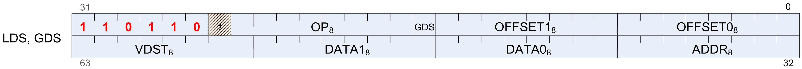
where:
OFFSET0 = Unsigned byte offset added to the address from the ADDR VGPR.
OFFSET1 = Unsigned byte offset added to the address from the ADDR VGPR.
GDS = Set if GDS, cleared if LDS.
OP = DS instructions.
ADDR = Source LDS address VGPR 0 - 255.
DATA0 = Source data0 VGPR 0 - 255.
DATA1 = Source data1 VGPR 0 - 255.
VDST = Destination VGPR 0- 255.
**Note**
All instructions with RTN in the name return the value that was in
memory before the operation was performed.
| Opcode | Name | Description |
|---|---|---|
| 0 | DS_ADD_U32 | // 32bit tmp = MEM[ADDR]; MEM[ADDR] += DATA; RETURN_DATA = tmp. |
| 1 | DS_SUB_U32 | // 32bit tmp = MEM[ADDR]; MEM[ADDR] -= DATA; RETURN_DATA = tmp. |
| 2 | DS_RSUB_U32 | // 32bit tmp = MEM[ADDR]; MEM[ADDR] = DATA - MEM[ADDR]; RETURN_DATA = tmp. Subtraction with reversed operands. |
| 3 | DS_INC_U32 | // 32bit tmp = MEM[ADDR]; MEM[ADDR] = (tmp >= DATA) ? 0 : tmp + 1; // unsigned compare RETURN_DATA = tmp. |
| 4 | DS_DEC_U32 | // 32bit tmp = MEM[ADDR]; MEM[ADDR] = (tmp == 0 || tmp > DATA) ? DATA : tmp - 1; // unsigned compare RETURN_DATA = tmp. |
| 5 | DS_MIN_I32 | // 32bit tmp = MEM[ADDR]; MEM[ADDR] = (DATA < tmp) ? DATA : tmp; // signed compare RETURN_DATA = tmp. |
| 6 | DS_MAX_I32 | // 32bit tmp = MEM[ADDR]; MEM[ADDR] = (DATA > tmp) ? DATA : tmp; // signed compare RETURN_DATA = tmp. |
| 7 | DS_MIN_U32 | // 32bit tmp = MEM[ADDR]; MEM[ADDR] = (DATA < tmp) ? DATA : tmp; // unsigned compare RETURN_DATA = tmp. |
| 8 | DS_MAX_U32 | // 32bit tmp = MEM[ADDR]; MEM[ADDR] = (DATA > tmp) ? DATA : tmp; // unsigned compare RETURN_DATA = tmp. |
| 9 | DS_AND_B32 | // 32bit tmp = MEM[ADDR]; MEM[ADDR] &= DATA; RETURN_DATA = tmp. |
| 10 | DS_OR_B32 | // 32bit tmp = MEM[ADDR]; MEM[ADDR] |= DATA; RETURN_DATA = tmp. |
| 11 | DS_XOR_B32 | // 32bit tmp = MEM[ADDR]; MEM[ADDR] ^= DATA; RETURN_DATA = tmp. |
| 12 | DS_MSKOR_B32 | // 32bit tmp = MEM[ADDR]; MEM[ADDR] = (MEM[ADDR] & ~DATA) | DATA2; RETURN_DATA = tmp. Masked dword OR, D0 contains the mask and D1 contains the new value. |
| 13 | DS_WRITE_B32 | // 32bit MEM[ADDR] = DATA. Write dword. |
| 14 | DS_WRITE2_B32 | // 32bit MEM[ADDR_BASE + OFFSET0 * 4] = DATA; MEM[ADDR_BASE + OFFSET1 * 4] = DATA2. Write 2 dwords. |
| 15 | DS_WRITE2ST64_B 32 | // 32bit MEM[ADDR_BASE + OFFSET0 * 4 * 64] = DATA; MEM[ADDR_BASE + OFFSET1 * 4 * 64] = DATA2. Write 2 dwords. |
| 16 | DS_CMPST_B32 | // 32bit tmp = MEM[ADDR]; src = DATA2; cmp = DATA; MEM[ADDR] = (tmp == cmp) ? src : tmp; RETURN_DATA[0] = tmp. Compare and store. Caution, the order of src and cmp are the *opposite* of the BUFFER_ATOMIC_CMPSWAP opcode. |
| 17 | DS_CMPST_F32 | // 32bit tmp = MEM[ADDR]; src = DATA2; cmp = DATA; MEM[ADDR] = (tmp == cmp) ? src : tmp; RETURN_DATA[0] = tmp. Floating point compare and store that handles NaN/INF/denormal values. Caution, the order of src and cmp are the *opposite* of the BUFFER_ATOMIC_FCMPSWAP opcode. |
| 18 | DS_MIN_F32 | // 32bit tmp = MEM[ADDR]; src = DATA; cmp = DATA2; MEM[ADDR] = (cmp < tmp) ? src : tmp. Floating point minimum that handles NaN/INF/denormal values. Note that this opcode is slightly more general-purpose than BUFFER_ATOMIC_FMIN. |
| 19 | DS_MAX_F32 | // 32bit tmp = MEM[ADDR]; src = DATA; cmp = DATA2; MEM[ADDR] = (tmp > cmp) ? src : tmp. Floating point maximum that handles NaN/INF/denormal values. Note that this opcode is slightly more general-purpose than BUFFER_ATOMIC_FMAX. |
| 20 | DS_NOP | Do nothing. |
| 21 | DS_ADD_F32 | // 32bit tmp = MEM[ADDR]; MEM[ADDR] += DATA; RETURN_DATA = tmp. Floating point add that handles NaN/INF/denormal values. |
| 29 | DS_WRITE_ADDTID _B32 | // 32bit MEM[ADDR_BASE + OFFSET + M0.OFFSET + TID*4] = DATA. Write dword. |
| 30 | DS_WRITE_B8 | MEM[ADDR] = DATA[7:0]. Byte write. |
| 31 | DS_WRITE_B16 | MEM[ADDR] = DATA[15:0]. Short write. |
| 32 | DS_ADD_RTN_U32 | // 32bit tmp = MEM[ADDR]; MEM[ADDR] += DATA; RETURN_DATA = tmp. |
| 33 | DS_SUB_RTN_U32 | // 32bit tmp = MEM[ADDR]; MEM[ADDR] -= DATA; RETURN_DATA = tmp. |
| 34 | DS_RSUB_RTN_U3 2 | // 32bit tmp = MEM[ADDR]; MEM[ADDR] = DATA - MEM[ADDR]; RETURN_DATA = tmp. Subtraction with reversed operands. |
| 35 | DS_INC_RTN_U32 | // 32bit tmp = MEM[ADDR]; MEM[ADDR] = (tmp >= DATA) ? 0 : tmp + 1; // unsigned compare RETURN_DATA = tmp. |
| 36 | DS_DEC_RTN_U32 | // 32bit tmp = MEM[ADDR]; MEM[ADDR] = (tmp == 0 || tmp > DATA) ? DATA : tmp - 1; // unsigned compare RETURN_DATA = tmp. |
| 37 | DS_MIN_RTN_I32 | // 32bit tmp = MEM[ADDR]; MEM[ADDR] = (DATA < tmp) ? DATA : tmp; // signed compare RETURN_DATA = tmp. |
| 38 | DS_MAX_RTN_I32 | // 32bit tmp = MEM[ADDR]; MEM[ADDR] = (DATA > tmp) ? DATA : tmp; // signed compare RETURN_DATA = tmp. |
| 39 | DS_MIN_RTN_U32 | // 32bit tmp = MEM[ADDR]; MEM[ADDR] = (DATA < tmp) ? DATA : tmp; // unsigned compare RETURN_DATA = tmp. |
| 40 | DS_MAX_RTN_U32 | // 32bit tmp = MEM[ADDR]; MEM[ADDR] = (DATA > tmp) ? DATA : tmp; // unsigned compare RETURN_DATA = tmp. |
| 41 | DS_AND_RTN_B32 | // 32bit tmp = MEM[ADDR]; MEM[ADDR] &= DATA; RETURN_DATA = tmp. |
| 42 | DS_OR_RTN_B32 | // 32bit tmp = MEM[ADDR]; MEM[ADDR] |= DATA; RETURN_DATA = tmp. |
| 43 | DS_XOR_RTN_B32 | // 32bit tmp = MEM[ADDR]; MEM[ADDR] ^= DATA; RETURN_DATA = tmp. |
| 44 | DS_MSKOR_RTN_B 32 | // 32bit tmp = MEM[ADDR]; MEM[ADDR] = (MEM[ADDR] & ~DATA) | DATA2; RETURN_DATA = tmp. Masked dword OR, D0 contains the mask and D1 contains the new value. |
| 45 | DS_WRXCHG_RTN_ B32 | tmp = MEM[ADDR]; MEM[ADDR] = DATA; RETURN_DATA = tmp. Write-exchange operation. |
| 46 | DS_WRXCHG2_RTN_B32 | Write-exchange 2 separate dwords. |
| 47 | DS_WRXCHG2ST64_ RTN_B32 | Write-exchange 2 separate dwords with a stride of 64 dwords. |
| 48 | DS_CMPST_RTN_B 32 | // 32bit tmp = MEM[ADDR]; src = DATA2; cmp = DATA; MEM[ADDR] = (tmp == cmp) ? src : tmp; RETURN_DATA[0] = tmp. Compare and store. Caution, the order of src and cmp are the *opposite* of the BUFFER_ATOMIC_CMPSWAP opcode. |
| 49 | DS_CMPST_RTN_F 32 | // 32bit tmp = MEM[ADDR]; src = DATA2; cmp = DATA; MEM[ADDR] = (tmp == cmp) ? src : tmp; RETURN_DATA[0] = tmp. Floating point compare and store that handles NaN/INF/denormal values. Caution, the order of src and cmp are the *opposite* of the BUFFER_ATOMIC_FCMPSWAP opcode. |
| 50 | DS_MIN_RTN_F32 | // 32bit tmp = MEM[ADDR]; src = DATA; cmp = DATA2; MEM[ADDR] = (cmp < tmp) ? src : tmp. Floating point minimum that handles NaN/INF/denormal values. Note that this opcode is slightly more general-purpose than BUFFER_ATOMIC_FMIN. |
| 51 | DS_MAX_RTN_F32 | // 32bit tmp = MEM[ADDR]; src = DATA; cmp = DATA2; MEM[ADDR] = (tmp > cmp) ? src : tmp. Floating point maximum that handles NaN/INF/denormal values. Note that this opcode is slightly more general-purpose than BUFFER_ATOMIC_FMAX. |
| 52 | DS_WRAP_RTN_B3 2 | tmp = MEM[ADDR]; MEM[ADDR] = (tmp >= DATA) ? tmp - DATA : tmp + DATA2; RETURN_DATA = tmp. |
| 53 | DS_ADD_RTN_F32 | // 32bit tmp = MEM[ADDR]; MEM[ADDR] += DATA; RETURN_DATA = tmp. Floating point add that handles NaN/INF/denormal values. |
| 54 | DS_READ_B32 | RETURN_DATA = MEM[ADDR]. Dword read. |
| 55 | DS_READ2_B32 | RETURN_DATA[0] = MEM[ADDR_BASE + OFFSET0 * 4]; RETURN_DATA[1] = MEM[ADDR_BASE + OFFSET1 * 4]. Read 2 dwords. |
| 56 | DS_READ2ST64_B3 2 | RETURN_DATA[0] = MEM[ADDR_BASE + OFFSET0 * 4 * 64]; RETURN_DATA[1] = MEM[ADDR_BASE + OFFSET1 * 4 * 64]. Read 2 dwords. |
| 57 | DS_READ_I8 | RETURN_DATA = signext(MEM[ADDR][7:0]). Signed byte read. |
| 58 | DS_READ_U8 | RETURN_DATA = {24’h0,MEM[ADDR][7:0]}. Unsigned byte read. |
| 59 | DS_READ_I16 | RETURN_DATA = signext(MEM[ADDR][15:0]). Signed short read. |
| 60 | DS_READ_U16 | RETURN_DATA = {16’h0,MEM[ADDR][15:0]}. Unsigned short read. |
| 61 | DS_SWIZZLE_B32 | RETURN_DATA = swizzle(vgpr_data, offset1:offset0). Dword swizzle, no data is written to LDS memory. |
| 62 | DS_PERMUTE_B32 | // VGPR[index][thread_id] is the VGPR RAM // VDST, ADDR and DATA0 are from the microcode DS encoding tmp[0..63] = 0 for i in 0..63 do // If a source thread is disabled, it will not propagate data. next if !EXEC[i] // ADDR needs to be divided by 4. // High-order bits are ignored. dst_lane = floor((VGPR[ADDR][i] + OFFSET) / 4) mod 64 tmp[dst_lane] = VGPR[DATA0][i] endfor // Copy data into destination VGPRs. If multiple sources // select the same destination thread, the highest-numbered // source thread wins. for i in 0..63 do next if !EXEC[i] VGPR[VDST][i] = tmp[i] endfor Forward permute. This does not access LDS memory and may be called even if no LDS memory is allocated to the wave. It uses LDS hardware to implement an arbitrary swizzle across threads in a wavefront. Note the address passed in is the thread ID multiplied by 4. This is due to a limitation in the DS hardware design. If multiple sources map to the same destination lane, standard LDS arbitration rules determine which write wins. See also DS_BPERMUTE_B32. Examples (simplified 4-thread wavefronts): VGPR[SRC0] = { A, B, C, D } VGPR[ADDR] = { 0, 0, 12, 4 } EXEC = 0xF, OFFSET = 0 VGPR[VDST] := { B, D, 0, C } VGPR[SRC0] = { A, B, C, D } VGPR[ADDR] = { 0, 0, 12, 4 } EXEC = 0xA, OFFSET = 0 VGPR[VDST] := { -, D, -, 0 } |
| 63 | DS_BPERMUTE_B32 | // VGPR[index][thread_id] is the VGPR RAM // VDST, ADDR and DATA0 are from the microcode DS encoding tmp[0..63] = 0 for i in 0..63 do // ADDR needs to be divided by 4. // High-order bits are ignored. src_lane = floor((VGPR[ADDR][i] + OFFSET) / 4) mod 64 // EXEC is applied to the source VGPR reads. next if !EXEC[src_lane] tmp[i] = VGPR[DATA0][src_lane] endfor // Copy data into destination VGPRs. Some source // data may be broadcast to multiple lanes. for i in 0..63 do next if !EXEC[i] VGPR[VDST][i] = tmp[i] endfor Backward permute. This does not access LDS memory and may be called even if no LDS memory is allocated to the wave. It uses LDS hardware to implement an arbitrary swizzle across threads in a wavefront. Note the address passed in is the thread ID multiplied by 4. This is due to a limitation in the DS hardware design. Note that EXEC mask is applied to both VGPR read and write. If src_lane selects a disabled thread, zero will be returned. See also DS_PERMUTE_B32. Examples (simplified 4-thread wavefronts): VGPR[SRC0] = { A, B, C, D } VGPR[ADDR] = { 0, 0, 12, 4 } EXEC = 0xF, OFFSET = 0 VGPR[VDST] := { A, A, D, B } VGPR[SRC0] = { A, B, C, D } VGPR[ADDR] = { 0, 0, 12, 4 } EXEC = 0xA, OFFSET = 0 VGPR[VDST] := { -, 0, -, B } |
| 64 | DS_ADD_U64 | // 64bit tmp = MEM[ADDR]; MEM[ADDR] += DATA[0:1]; RETURN_DATA[0:1] = tmp. |
| 65 | DS_SUB_U64 | // 64bit tmp = MEM[ADDR]; MEM[ADDR] -= DATA[0:1]; RETURN_DATA[0:1] = tmp. |
| 66 | DS_RSUB_U64 | // 64bit tmp = MEM[ADDR]; MEM[ADDR] = DATA - MEM[ADDR]; RETURN_DATA = tmp. Subtraction with reversed operands. |
| 67 | DS_INC_U64 | // 64bit tmp = MEM[ADDR]; MEM[ADDR] = (tmp >= DATA[0:1]) ? 0 : tmp + 1; // unsigned compare RETURN_DATA[0:1] = tmp. |
| 68 | DS_DEC_U64 | // 64bit tmp = MEM[ADDR]; MEM[ADDR] = (tmp == 0 || tmp > DATA[0:1]) ? DATA[0:1] : tmp - 1; // unsigned compare RETURN_DATA[0:1] = tmp. |
| 69 | DS_MIN_I64 | // 64bit tmp = MEM[ADDR]; MEM[ADDR] -= (DATA[0:1] < tmp) ? DATA[0:1] : tmp; // signed compare RETURN_DATA[0:1] = tmp. |
| 70 | DS_MAX_I64 | // 64bit tmp = MEM[ADDR]; MEM[ADDR] -= (DATA[0:1] > tmp) ? DATA[0:1] : tmp; // signed compare RETURN_DATA[0:1] = tmp. |
| 71 | DS_MIN_U64 | // 64bit tmp = MEM[ADDR]; MEM[ADDR] -= (DATA[0:1] < tmp) ? DATA[0:1] : tmp; // unsigned compare RETURN_DATA[0:1] = tmp. |
| 72 | DS_MAX_U64 | // 64bit tmp = MEM[ADDR]; MEM[ADDR] -= (DATA[0:1] > tmp) ? DATA[0:1] : tmp; // unsigned compare RETURN_DATA[0:1] = tmp. |
| 73 | DS_AND_B64 | // 64bit tmp = MEM[ADDR]; MEM[ADDR] &= DATA[0:1]; RETURN_DATA[0:1] = tmp. |
| 74 | DS_OR_B64 | // 64bit tmp = MEM[ADDR]; MEM[ADDR] |= DATA[0:1]; RETURN_DATA[0:1] = tmp. |
| 75 | DS_XOR_B64 | // 64bit tmp = MEM[ADDR]; MEM[ADDR] ^= DATA[0:1]; RETURN_DATA[0:1] = tmp. |
| 76 | DS_MSKOR_B64 | // 64bit tmp = MEM[ADDR]; MEM[ADDR] = (MEM[ADDR] & ~DATA) | DATA2; RETURN_DATA = tmp. Masked dword OR, D0 contains the mask and D1 contains the new value. |
| 77 | DS_WRITE_B64 | // 64bit MEM[ADDR] = DATA. Write qword. |
| 78 | DS_WRITE2_B64 | // 64bit MEM[ADDR_BASE + OFFSET0 * 8] = DATA; MEM[ADDR_BASE + OFFSET1 * 8] = DATA2. Write 2 qwords. |
| 79 | DS_WRITE2ST64_B 64 | // 64bit MEM[ADDR_BASE + OFFSET0 * 8 * 64] = DATA; MEM[ADDR_BASE + OFFSET1 * 8 * 64] = DATA2. Write 2 qwords. |
| 80 | DS_CMPST_B64 | // 64bit tmp = MEM[ADDR]; src = DATA2; cmp = DATA; MEM[ADDR] = (tmp == cmp) ? src : tmp; RETURN_DATA[0] = tmp. Compare and store. Caution, the order of src and cmp are the *opposite* of the BUFFER_ATOMIC_CMPSWAP_X2 opcode. |
| 81 | DS_CMPST_F64 | // 64bit tmp = MEM[ADDR]; src = DATA2; cmp = DATA; MEM[ADDR] = (tmp == cmp) ? src : tmp; RETURN_DATA[0] = tmp. Floating point compare and store that handles NaN/INF/denormal values. Caution, the order of src and cmp are the *opposite* of the BUFFER_ATOMIC_FCMPSWAP_X2 opcode. |
| 82 | DS_MIN_F64 | // 64bit tmp = MEM[ADDR]; src = DATA; cmp = DATA2; MEM[ADDR] = (cmp < tmp) ? src : tmp. Floating point minimum that handles NaN/INF/denormal values. Note that this opcode is slightly more general-purpose than BUFFER_ATOMIC_FMIN_X2. |
| 83 | DS_MAX_F64 | // 64bit tmp = MEM[ADDR]; src = DATA; cmp = DATA2; MEM[ADDR] = (tmp > cmp) ? src : tmp. Floating point maximum that handles NaN/INF/denormal values. Note that this opcode is slightly more general-purpose than BUFFER_ATOMIC_FMAX_X2. |
| 84 | DS_WRITE_B8_D1 6_HI | MEM[ADDR] = DATA[23:16]. Byte write in to high word. |
| 85 | DS_WRITE_B16_D 16_HI | MEM[ADDR] = DATA[31:16]. Short write in to high word. |
| 86 | DS_READ_U8_D16 | RETURN_DATA[15:0] = {8’h0,MEM[ADDR][7:0]}. Unsigned byte read with masked return to lower word. |
| 87 | DS_READ_U8_D16 _HI | RETURN_DATA[31:16] = {8’h0,MEM[ADDR][7:0]}. Unsigned byte read with masked return to upper word. |
| 88 | DS_READ_I8_D16 | RETURN_DATA[15:0] = signext(MEM[ADDR][7:0]). Signed byte read with masked return to lower word. |
| 89 | DS_READ_I8_D16 _HI | RETURN_DATA[31:16] = signext(MEM[ADDR][7:0]). Signed byte read with masked return to upper word. |
| 90 | DS_READ_U16_D1 6 | RETURN_DATA[15:0] = MEM[ADDR][15:0]. Unsigned short read with masked return to lower word. |
| 91 | DS_READ_U16_D1 6_HI | RETURN_DATA[31:0] = MEM[ADDR][15:0]. Unsigned short read with masked return to upper word. |
| 96 | DS_ADD_RTN_U64 | // 64bit tmp = MEM[ADDR]; MEM[ADDR] += DATA[0:1]; RETURN_DATA[0:1] = tmp. |
| 97 | DS_SUB_RTN_U64 | // 64bit tmp = MEM[ADDR]; MEM[ADDR] -= DATA[0:1]; RETURN_DATA[0:1] = tmp. |
| 98 | DS_RSUB_RTN_U6 4 | // 64bit tmp = MEM[ADDR]; MEM[ADDR] = DATA - MEM[ADDR]; RETURN_DATA = tmp. Subtraction with reversed operands. |
| 99 | DS_INC_RTN_U64 | // 64bit tmp = MEM[ADDR]; MEM[ADDR] = (tmp >= DATA[0:1]) ? 0 : tmp + 1; // unsigned compare RETURN_DATA[0:1] = tmp. |
| 100 | DS_DEC_RTN_U64 | // 64bit tmp = MEM[ADDR]; MEM[ADDR] = (tmp == 0 || tmp > DATA[0:1]) ? DATA[0:1] : tmp - 1; // unsigned compare RETURN_DATA[0:1] = tmp. |
| 101 | DS_MIN_RTN_I64 | // 64bit tmp = MEM[ADDR]; MEM[ADDR] -= (DATA[0:1] < tmp) ? DATA[0:1] : tmp; // signed compare RETURN_DATA[0:1] = tmp. |
| 102 | DS_MAX_RTN_I64 | // 64bit tmp = MEM[ADDR]; MEM[ADDR] -= (DATA[0:1] > tmp) ? DATA[0:1] : tmp; // signed compare RETURN_DATA[0:1] = tmp. |
| 103 | DS_MIN_RTN_U64 | // 64bit tmp = MEM[ADDR]; MEM[ADDR] -= (DATA[0:1] < tmp) ? DATA[0:1] : tmp; // unsigned compare RETURN_DATA[0:1] = tmp. |
| 104 | DS_MAX_RTN_U64 | // 64bit tmp = MEM[ADDR]; MEM[ADDR] -= (DATA[0:1] > tmp) ? DATA[0:1] : tmp; // unsigned compare RETURN_DATA[0:1] = tmp. |
| 105 | DS_AND_RTN_B64 | // 64bit tmp = MEM[ADDR]; MEM[ADDR] &= DATA[0:1]; RETURN_DATA[0:1] = tmp. |
| 106 | DS_OR_RTN_B64 | // 64bit tmp = MEM[ADDR]; MEM[ADDR] |= DATA[0:1]; RETURN_DATA[0:1] = tmp. |
| 107 | DS_XOR_RTN_B64 | // 64bit tmp = MEM[ADDR]; MEM[ADDR] ^= DATA[0:1]; RETURN_DATA[0:1] = tmp. |
| 108 | DS_MSKOR_RTN_B 64 | // 64bit tmp = MEM[ADDR]; MEM[ADDR] = (MEM[ADDR] & ~DATA) | DATA2; RETURN_DATA = tmp. Masked dword OR, D0 contains the mask and D1 contains the new value. |
| 109 | DS_WRXCHG_RTN_ B64 | tmp = MEM[ADDR]; MEM[ADDR] = DATA; RETURN_DATA = tmp. Write-exchange operation. |
| 110 | DS_WRXCHG2_RTN_B64 | Write-exchange 2 separate qwords. |
| 111 | DS_WRXCHG2ST64_ RTN_B64 | Write-exchange 2 qwords with a stride of 64 qwords. |
| 112 | DS_CMPST_RTN_B 64 | // 64bit tmp = MEM[ADDR]; src = DATA2; cmp = DATA; MEM[ADDR] = (tmp == cmp) ? src : tmp; RETURN_DATA[0] = tmp. Compare and store. Caution, the order of src and cmp are the *opposite* of the BUFFER_ATOMIC_CMPSWAP_X2 opcode. |
| 113 | DS_CMPST_RTN_F 64 | // 64bit tmp = MEM[ADDR]; src = DATA2; cmp = DATA; MEM[ADDR] = (tmp == cmp) ? src : tmp; RETURN_DATA[0] = tmp. Floating point compare and store that handles NaN/INF/denormal values. Caution, the order of src and cmp are the *opposite* of the BUFFER_ATOMIC_FCMPSWAP_X2 opcode. |
| 114 | DS_MIN_RTN_F64 | // 64bit tmp = MEM[ADDR]; src = DATA; cmp = DATA2; MEM[ADDR] = (cmp < tmp) ? src : tmp. Floating point minimum that handles NaN/INF/denormal values. Note that this opcode is slightly more general-purpose than BUFFER_ATOMIC_FMIN_X2. |
| 115 | DS_MAX_RTN_F64 | // 64bit tmp = MEM[ADDR]; src = DATA; cmp = DATA2; MEM[ADDR] = (tmp > cmp) ? src : tmp. Floating point maximum that handles NaN/INF/denormal values. Note that this opcode is slightly more general-purpose than BUFFER_ATOMIC_FMAX_X2. |
| 118 | DS_READ_B64 | RETURN_DATA = MEM[ADDR]. Read 1 qword. |
| 119 | DS_READ2_B64 | RETURN_DATA[0] = MEM[ADDR_BASE + OFFSET0 * 8]; RETURN_DATA[1] = MEM[ADDR_BASE + OFFSET1 * 8]. Read 2 qwords. |
| 120 | DS_READ2ST64_B6 4 | RETURN_DATA[0] = MEM[ADDR_BASE + OFFSET0 * 8 * 64]; RETURN_DATA[1] = MEM[ADDR_BASE + OFFSET1 * 8 * 64]. Read 2 qwords. |
| 126 | DS_CONDXCHG32_R TN_B64 | Conditional write exchange. |
| 128 | DS_ADD_SRC2_U3 2 | //32bit A = ADDR_BASE; B = A + 4*(offset1[7] ? {A[31],A[31:17]} : {offset1[6],offset1[6:0],offset0}); MEM[A] = MEM[A] + MEM[B]. |
| 129 | DS_SUB_SRC2_U3 2 | //32bit A = ADDR_BASE; B = A + 4*(offset1[7] ? {A[31],A[31:17]} : {offset1[6],offset1[6:0],offset0}); MEM[A] = MEM[A] - MEM[B]. |
| 130 | DS_RSUB_SRC2_U 32 | //32bit A = ADDR_BASE; B = A + 4*(offset1[7] ? {A[31],A[31:17]} : {offset1[6],offset1[6:0],offset0}); MEM[A] = MEM[B] - MEM[A]. |
| 131 | DS_INC_SRC2_U3 2 | //32bit A = ADDR_BASE; B = A + 4*(offset1[7] ? {A[31],A[31:17]} : {offset1[6],offset1[6:0],offset0}); MEM[A] = (MEM[A] >= MEM[B] ? 0 : MEM[A] + 1). |
| 132 | DS_DEC_SRC2_U3 2 | //32bit A = ADDR_BASE; B = A + 4*(offset1[7] ? {A[31],A[31:17]} : {offset1[6],offset1[6:0],offset0}); MEM[A] = (MEM[A] == 0 || MEM[A] > MEM[B] ? MEM[B] : MEM[A] - 1). Uint decrement. |
| 133 | DS_MIN_SRC2_I3 2 | //32bit A = ADDR_BASE; B = A + 4*(offset1[7] ? {A[31],A[31:17]} : {offset1[6],offset1[6:0],offset0}); MEM[A] = min(MEM[A], MEM[B]). |
| 134 | DS_MAX_SRC2_I3 2 | //32bit A = ADDR_BASE; B = A + 4*(offset1[7] ? {A[31],A[31:17]} : {offset1[6],offset1[6:0],offset0}); MEM[A] = max(MEM[A], MEM[B]). |
| 135 | DS_MIN_SRC2_U3 2 | //32bit A = ADDR_BASE; B = A + 4*(offset1[7] ? {A[31],A[31:17]} : {offset1[6],offset1[6:0],offset0}); MEM[A] = min(MEM[A], MEM[B]). |
| 136 | DS_MAX_SRC2_U3 2 | //32bit A = ADDR_BASE; B = A + 4*(offset1[7] ? {A[31],A[31:17]} : {offset1[6],offset1[6:0],offset0}); MEM[A] = max(MEM[A], MEM[B]). |
| 137 | DS_AND_SRC2_B3 2 | //32bit A = ADDR_BASE; B = A + 4*(offset1[7] ? {A[31],A[31:17]} : {offset1[6],offset1[6:0],offset0}); MEM[A] = MEM[A] & MEM[B]. |
| 138 | DS_OR_SRC2_B32 | //32bit A = ADDR_BASE; B = A + 4*(offset1[7] ? {A[31],A[31:17]} : {offset1[6],offset1[6:0],offset0}); MEM[A] = MEM[A] | MEM[B]. |
| 139 | DS_XOR_SRC2_B3 2 | //32bit A = ADDR_BASE; B = A + 4*(offset1[7] ? {A[31],A[31:17]} : {offset1[6],offset1[6:0],offset0}); MEM[A] = MEM[A] ^ MEM[B]. |
| 141 | DS_WRITE_SRC2_ B32 | //32bit A = ADDR_BASE; B = A + 4*(offset1[7] ? {A[31],A[31:17]} : {offset1[6],offset1[6:0],offset0}); MEM[A] = MEM[B]. Write dword. |
| 146 | DS_MIN_SRC2_F3 2 | //32bit A = ADDR_BASE; B = A + 4*(offset1[7] ? {A[31],A[31:17]} : {offset1[6],offset1[6:0],offset0}); MEM[A] = (MEM[B] < MEM[A]) ? MEM[B] : MEM[A]. Float, handles NaN/INF/denorm. |
| 147 | DS_MAX_SRC2_F3 2 | //32bit A = ADDR_BASE; B = A + 4*(offset1[7] ? {A[31],A[31:17]} : {offset1[6],offset1[6:0],offset0}); MEM[A] = (MEM[B] > MEM[A]) ? MEM[B] : MEM[A]. Float, handles NaN/INF/denorm. |
| 149 | DS_ADD_SRC2_F3 2 | //32bit A = ADDR_BASE; B = A + 4*(offset1[7] ? {A[31],A[31:17]} : {offset1[6],offset1[6:0],offset0}); MEM[A] = MEM[B] + MEM[A]. Float, handles NaN/INF/denorm. |
| 152 | DS_GWS_SEMA_RE LEASE_ALL | GDS Only: The GWS resource (rid) indicated will process this opcode by updating the counter and labeling the specified resource as a semaphore. // Determine the GWS resource to work on rid[5:0] = SH_SX_EXPCMD.gds_base[5:0] + offset0[5:0]; // Incr the state counter of the resource state.counter[rid] = state.wave_in_queue; state.type = SEMAPHORE; return rd_done; //release calling wave This action will release ALL queued waves; it Will have no effect if no waves are present. |
| 153 | DS_GWS_INIT | GDS Only: Initialize a barrier or semaphore resource. // Determine the GWS resource to work on rid[5:0] = SH_SX_EXPCMD.gds_base[5:0] + offset0[5:0]; // Get the value to use in init index = find_first_valid(vector mask) value = DATA[thread: index] // Set the state of the resource state.counter[rid] = lsb(value); //limit #waves state.flag[rid] = 0; return rd_done; //release calling wave |
| 154 | DS_GWS_SEMA_V | GDS Only: The GWS resource indicated will process this opcode by updating the counter and labeling the resource as a semaphore. //Determine the GWS resource to work on rid[5:0] = SH_SX_EXPCMD.gds_base[5:0] + offset0[5:0]; //Incr the state counter of the resource state.counter[rid] += 1; state.type = SEMAPHORE; return rd_done; //release calling wave This action will release one waved if any are queued in this resource. |
| 155 | DS_GWS_SEMA_BR | GDS Only: The GWS resource indicated will process this opcode by updating the counter by the bulk release delivered count and labeling the resource as a semaphore. //Determine the GWS resource to work on rid[5:0] = SH_SX_EXPCMD.gds_base[5:0] + offset0[5:0]; index = find first valid (vector mask) count = DATA[thread: index]; //Add count to the resource state counter state.counter[rid] += count; state.type = SEMAPHORE; return rd_done; //release calling wave This action will release count number of waves, immediately if queued, or as they arrive from the noted resource. |
| 156 | DS_GWS_SEMA_P | GDS Only: The GWS resource indicated will process this opcode by queueing it until counter enables a release and then decrementing the counter of the resource as a semaphore. //Determine the GWS resource to work on rid[5:0] = SH_SX_EXPCMD.gds_base[5:0] + offset0[5:0]; state.type = SEMAPHORE; ENQUEUE until(state[rid].counter > 0) state[rid].counter -= 1; return rd_done; |
| 157 | DS_GWS_BARRIER | GDS Only: The GWS resource indicated will process this opcode by queueing it until barrier is satisfied. The number of waves needed is passed in as DATA of first valid thread. //Determine the GWS resource to work on rid[5:0] = SH_SX_EXPCMD.gds_base[5:0] + OFFSET0[5:0]; index = find first valid (vector mask); value = DATA[thread: index]; // Input Decision Machine state.type[rid] = BARRIER; if(state[rid].counter <= 0) then thread[rid].flag = state[rid].flag; ENQUEUE; state[rid].flag = !state.flag; state[rid].counter = value; return rd_done; else state[rid].counter -= 1; thread.flag = state[rid].flag; ENQUEUE; endif. Since the waves deliver the count for the next barrier, this function can have a different size barrier for each occurrence. // Release Machine if(state.type == BARRIER) then if(state.flag != thread.flag) then return rd_done; endif; endif. |
| 182 | DS_READ_ADDTID_B32 | RETURN_DATA = MEM[ADDR_BASE + OFFSET + M0.OFFSET + TID*4]. Dword read. |
| 189 | DS_CONSUME | LDS & GDS. Subtract (count_bits(exec_mask)) from the value stored in DS memory at (M0.base + instr_offset). Return the pre-operation value to VGPRs. |
| 190 | DS_APPEND | LDS & GDS. Add (count_bits(exec_mask)) to the value stored in DS memory at (M0.base + instr_offset). Return the pre-operation value to VGPRs. |
| 191 | DS_ORDERED_COUN T | GDS-only. Add (count_bits(exec_mask)) to one of 4 dedicated ordered-count counters (aka ‘packers’). Additional bits of instr.offset field are overloaded to hold packer-id, ‘last’. |
| 192 | DS_ADD_SRC2_U6 4 | //64bit A = ADDR_BASE; B = A + 4*(offset1[7] ? {A[31],A[31:17]} : {offset1[6],offset1[6:0],offset0}); MEM[A] = MEM[A] + MEM[B]. |
| 193 | DS_SUB_SRC2_U6 4 | //64bit A = ADDR_BASE; B = A + 4*(offset1[7] ? {A[31],A[31:17]} : {offset1[6],offset1[6:0],offset0}); MEM[A] = MEM[A] - MEM[B]. |
| 194 | DS_RSUB_SRC2_U 64 | //64bit A = ADDR_BASE; B = A + 4*(offset1[7] ? {A[31],A[31:17]} : {offset1[6],offset1[6:0],offset0}); MEM[A] = MEM[B] - MEM[A]. |
| 195 | DS_INC_SRC2_U6 4 | //64bit A = ADDR_BASE; B = A + 4*(offset1[7] ? {A[31],A[31:17]} : {offset1[6],offset1[6:0],offset0}); MEM[A] = (MEM[A] >= MEM[B] ? 0 : MEM[A] + 1). |
| 196 | DS_DEC_SRC2_U6 4 | //64bit A = ADDR_BASE; B = A + 4*(offset1[7] ? {A[31],A[31:17]} : {offset1[6],offset1[6:0],offset0}); MEM[A] = (MEM[A] == 0 || MEM[A] > MEM[B] ? MEM[B] : MEM[A] - 1). Uint decrement. |
| 197 | DS_MIN_SRC2_I6 4 | //64bit A = ADDR_BASE; B = A + 4*(offset1[7] ? {A[31],A[31:17]} : {offset1[6],offset1[6:0],offset0}); MEM[A] = min(MEM[A], MEM[B]). |
| 198 | DS_MAX_SRC2_I6 4 | //64bit A = ADDR_BASE; B = A + 4*(offset1[7] ? {A[31],A[31:17]} : {offset1[6],offset1[6:0],offset0}); MEM[A] = max(MEM[A], MEM[B]). |
| 199 | DS_MIN_SRC2_U6 4 | //64bit A = ADDR_BASE; B = A + 4*(offset1[7] ? {A[31],A[31:17]} : {offset1[6],offset1[6:0],offset0}); MEM[A] = min(MEM[A], MEM[B]). |
| 200 | DS_MAX_SRC2_U6 4 | //64bit A = ADDR_BASE; B = A + 4*(offset1[7] ? {A[31],A[31:17]} : {offset1[6],offset1[6:0],offset0}); MEM[A] = max(MEM[A], MEM[B]). |
| 201 | DS_AND_SRC2_B6 4 | //64bit A = ADDR_BASE; B = A + 4*(offset1[7] ? {A[31],A[31:17]} : {offset1[6],offset1[6:0],offset0}); MEM[A] = MEM[A] & MEM[B]. |
| 202 | DS_OR_SRC2_B64 | //64bit A = ADDR_BASE; B = A + 4*(offset1[7] ? {A[31],A[31:17]} : {offset1[6],offset1[6:0],offset0}); MEM[A] = MEM[A] | MEM[B]. |
| 203 | DS_XOR_SRC2_B6 4 | //64bit A = ADDR_BASE; B = A + 4*(offset1[7] ? {A[31],A[31:17]} : {offset1[6],offset1[6:0],offset0}); MEM[A] = MEM[A] ^ MEM[B]. |
| 205 | DS_WRITE_SRC2_ B64 | //64bit A = ADDR_BASE; B = A + 4*(offset1[7] ? {A[31],A[31:17]} : {offset1[6],offset1[6:0],offset0}); MEM[A] = MEM[B]. Write qword. |
| 210 | DS_MIN_SRC2_F6 4 | //64bit A = ADDR_BASE; B = A + 4*(offset1[7] ? {A[31],A[31:17]} : {offset1[6],offset1[6:0],offset0}); MEM[A] = (MEM[B] < MEM[A]) ? MEM[B] : MEM[A]. Float, handles NaN/INF/denorm. |
| 211 | DS_MAX_SRC2_F6 4 | //64bit A = ADDR_BASE; B = A + 4*(offset1[7] ? {A[31],A[31:17]} : {offset1[6],offset1[6:0],offset0}); MEM[A] = (MEM[B] > MEM[A]) ? MEM[B] : MEM[A]. Float, handles NaN/INF/denorm. |
| 222 | DS_WRITE_B96 | {MEM[ADDR + 8], MEM[ADDR + 4], MEM[ADDR]} = DATA[95:0]. Tri-dword write. |
| 223 | DS_WRITE_B128 | {MEM[ADDR + 12], MEM[ADDR + 8], MEM[ADDR + 4], MEM[ADDR]} = DATA[127:0]. Quad-dword write. |
| 254 | DS_READ_B96 | Tri-dword read. |
| 255 | DS_READ_B128 | Quad-dword read. |
LDS Instruction Limitations¶
Some of the DS instructions are available only to GDS, not LDS. These are:
- DS_GWS_SEMA_RELEASE_ALL
- DS_GWS_INIT
- DS_GWS_SEMA_V
- DS_GWS_SEMA_BR
- DS_GWS_SEMA_P
- DS_GWS_BARRIER
- DS_ORDERED_COUNT
MUBUF Instructions¶
The bitfield map of the MUBUF format is:
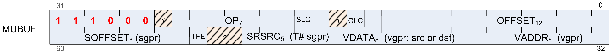
where:
OFFSET = Unsigned immediate byte offset.
OFFEN = Send offset either as VADDR or as zero..
IDXEN = Send index either as VADDR or as zero.
GLC = Global coherency.
ADDR64 = Buffer address of 64 bits.
LDS = Data read from/written to LDS or VGPR.
OP = Opcode instructions.
VADDR = VGPR address source.
VDATA = Destination vector GPR.
SRSRC = Scalar GPR that specifies resource constant.
SLC = System level coherent.
TFE = Texture fail enable.
SOFFSET = Byte offset added to the memory address of an SGPR.
| Opcode | Name | Description |
|---|---|---|
| 0 | BUFFER_LOAD_FORMAT_X | Untyped buffer load 1 dword with format conversion. |
| 1 | BUFFER_LOAD_FORMAT_X Y | Untyped buffer load 2 dwords with format conversion. |
| 2 | BUFFER_LOAD_FORMAT_X YZ | Untyped buffer load 3 dwords with format conversion. |
| 3 | BUFFER_LOAD_FORMAT_X YZW | Untyped buffer load 4 dwords with format conversion. |
| 4 | BUFFER_STORE_FORMAT_ X | Untyped buffer store 1 dword with format conversion. |
| 5 | BUFFER_STORE_FORMAT_ XY | Untyped buffer store 2 dwords with format conversion. |
| 6 | BUFFER_STORE_FORMAT_ XYZ | Untyped buffer store 3 dwords with format conversion. |
| 7 | BUFFER_STORE_FORMAT_ XYZW | Untyped buffer store 4 dwords with format conversion. |
| 8 | BUFFER_LOAD_FORMAT_D 16_X | Untyped buffer load 1 dword with format conversion. D0[15:0] = {8’h0, MEM[ADDR]}. |
| 9 | BUFFER_LOAD_FORMAT_D 16_XY | Untyped buffer load 1 dword with format conversion. |
| 10 | BUFFER_LOAD_FORMAT_D 16_XYZ | Untyped buffer load 2 dwords with format conversion. |
| 11 | BUFFER_LOAD_FORMAT_D 16_XYZW | Untyped buffer load 2 dwords with format conversion. |
| 12 | BUFFER_STORE_FORMAT_ D16_X | Untyped buffer store 1 dword with format conversion. |
| 13 | BUFFER_STORE_FORMAT_ D16_XY | Untyped buffer store 1 dword with format conversion. |
| 14 | BUFFER_STORE_FORMAT_ D16_XYZ | Untyped buffer store 2 dwords with format conversion. |
| 15 | BUFFER_STORE_FORMAT_ D16_XYZW | Untyped buffer store 2 dwords with format conversion. |
| 16 | BUFFER_LOAD_UBYTE | Untyped buffer load unsigned byte (zero extend to VGPR destination). |
| 17 | BUFFER_LOAD_SBYTE | Untyped buffer load signed byte (sign extend to VGPR destination). |
| 18 | BUFFER_LOAD_USHORT | Untyped buffer load unsigned short (zero extend to VGPR destination). |
| 19 | BUFFER_LOAD_SSHORT | Untyped buffer load signed short (sign extend to VGPR destination). |
| 20 | BUFFER_LOAD_DWORD | Untyped buffer load dword. |
| 21 | BUFFER_LOAD_DWORDX2 | Untyped buffer load 2 dwords. |
| 22 | BUFFER_LOAD_DWORDX3 | Untyped buffer load 3 dwords. |
| 23 | BUFFER_LOAD_DWORDX4 | Untyped buffer load 4 dwords. |
| 24 | BUFFER_STORE_BYTE | Untyped buffer store byte. Stores S0[7:0]. |
| 25 | BUFFER_STORE_BYTE_D1 6_HI | Untyped buffer store byte. Stores S0[23:16]. |
| 26 | BUFFER_STORE_SHORT | Untyped buffer store short. Stores S0[15:0]. |
| 27 | BUFFER_STORE_SHORT_D 16_HI | Untyped buffer store short. Stores S0[31:16]. |
| 28 | BUFFER_STORE_DWORD | Untyped buffer store dword. |
| 29 | BUFFER_STORE_DWORDX2 | Untyped buffer store 2 dwords. |
| 30 | BUFFER_STORE_DWORDX3 | Untyped buffer store 3 dwords. |
| 31 | BUFFER_STORE_DWORDX4 | Untyped buffer store 4 dwords. |
| 32 | BUFFER_LOAD_UBYTE_D1 6 | D0[15:0] = {8’h0, MEM[ADDR]}. Untyped buffer load unsigned byte. |
| 33 | BUFFER_LOAD_UBYTE_D1 6_HI | D0[31:16] = {8’h0, MEM[ADDR]}. Untyped buffer load unsigned byte. |
| 34 | BUFFER_LOAD_SBYTE_D1 6 | D0[15:0] = {8’h0, MEM[ADDR]}. Untyped buffer load signed byte. |
| 35 | BUFFER_LOAD_SBYTE_D1 6_HI | D0[31:16] = {8’h0, MEM[ADDR]}. Untyped buffer load signed byte. |
| 36 | BUFFER_LOAD_SHORT_D1 6 | D0[15:0] = MEM[ADDR]. Untyped buffer load short. |
| 37 | BUFFER_LOAD_SHORT_D1 6_HI | D0[31:16] = MEM[ADDR]. Untyped buffer load short. |
| 38 | BUFFER_LOAD_FORMAT_D 16_HI_X | D0[31:16] = MEM[ADDR]. Untyped buffer load 1 dword with format conversion. |
| 39 | BUFFER_STORE_FORMAT_ D16_HI_X | Untyped buffer store 1 dword with format conversion. |
| 61 | BUFFER_STORE_LDS_DWO RD | Store one DWORD from LDS memory to system memory without utilizing VGPRs. |
| 62 | BUFFER_WBINVL1 | Write back and invalidate the shader L1. Returns ACK to shader. |
| 63 | BUFFER_WBINVL1_VOL | Write back and invalidate the shader L1 only for lines that are marked volatile. Returns ACK to shader. |
| 64 | BUFFER_ATOMIC_SWAP | // 32bit tmp = MEM[ADDR]; MEM[ADDR] = DATA; RETURN_DATA = tmp. |
| 65 | BUFFER_ATOMIC_CMPSWAP | // 32bit tmp = MEM[ADDR]; src = DATA[0]; cmp = DATA[1]; MEM[ADDR] = (tmp == cmp) ? src : tmp; RETURN_DATA[0] = tmp. |
| 66 | BUFFER_ATOMIC_ADD | // 32bit tmp = MEM[ADDR]; MEM[ADDR] += DATA; RETURN_DATA = tmp. |
| 67 | BUFFER_ATOMIC_SUB | // 32bit tmp = MEM[ADDR]; MEM[ADDR] -= DATA; RETURN_DATA = tmp. |
| 68 | BUFFER_ATOMIC_SMIN | // 32bit tmp = MEM[ADDR]; MEM[ADDR] = (DATA < tmp) ? DATA : tmp; // signed compare RETURN_DATA = tmp. |
| 69 | BUFFER_ATOMIC_UMIN | // 32bit tmp = MEM[ADDR]; MEM[ADDR] = (DATA < tmp) ? DATA : tmp; // unsigned compare RETURN_DATA = tmp. |
| 70 | BUFFER_ATOMIC_SMAX | // 32bit tmp = MEM[ADDR]; MEM[ADDR] = (DATA > tmp) ? DATA : tmp; // signed compare RETURN_DATA = tmp. |
| 71 | BUFFER_ATOMIC_UMAX | // 32bit tmp = MEM[ADDR]; MEM[ADDR] = (DATA > tmp) ? DATA : tmp; // unsigned compare RETURN_DATA = tmp. |
| 72 | BUFFER_ATOMIC_AND | // 32bit tmp = MEM[ADDR]; MEM[ADDR] &= DATA; RETURN_DATA = tmp. |
| 73 | BUFFER_ATOMIC_OR | // 32bit tmp = MEM[ADDR]; MEM[ADDR] |= DATA; RETURN_DATA = tmp. |
| 74 | BUFFER_ATOMIC_XOR | // 32bit tmp = MEM[ADDR]; MEM[ADDR] ^= DATA; RETURN_DATA = tmp. |
| 75 | BUFFER_ATOMIC_INC | // 32bit tmp = MEM[ADDR]; MEM[ADDR] = (tmp >= DATA) ? 0 : tmp + 1; // unsigned compare RETURN_DATA = tmp. |
| 76 | BUFFER_ATOMIC_DEC | // 32bit tmp = MEM[ADDR]; MEM[ADDR] = (tmp == 0 || tmp > DATA) ? DATA : tmp - 1; // unsigned compare RETURN_DATA = tmp. |
| 96 | BUFFER_ATOMIC_SWAP_X 2 | // 64bit tmp = MEM[ADDR]; MEM[ADDR] = DATA[0:1]; RETURN_DATA[0:1] = tmp. |
| 97 | BUFFER_ATOMIC_CMPSWAP _X2 | // 64bit tmp = MEM[ADDR]; src = DATA[0:1]; cmp = DATA[2:3]; MEM[ADDR] = (tmp == cmp) ? src : tmp; RETURN_DATA[0:1] = tmp. |
| 98 | BUFFER_ATOMIC_ADD_X2 | // 64bit tmp = MEM[ADDR]; MEM[ADDR] += DATA[0:1]; RETURN_DATA[0:1] = tmp. |
| 99 | BUFFER_ATOMIC_SUB_X2 | // 64bit tmp = MEM[ADDR]; MEM[ADDR] -= DATA[0:1]; RETURN_DATA[0:1] = tmp. |
| 100 | BUFFER_ATOMIC_SMIN_X 2 | // 64bit tmp = MEM[ADDR]; MEM[ADDR] -= (DATA[0:1] < tmp) ? DATA[0:1] : tmp; // signed compare RETURN_DATA[0:1] = tmp. |
| 101 | BUFFER_ATOMIC_UMIN_X 2 | // 64bit tmp = MEM[ADDR]; MEM[ADDR] -= (DATA[0:1] < tmp) ? DATA[0:1] : tmp; // unsigned compare RETURN_DATA[0:1] = tmp. |
| 102 | BUFFER_ATOMIC_SMAX_X 2 | // 64bit tmp = MEM[ADDR]; MEM[ADDR] -= (DATA[0:1] > tmp) ? DATA[0:1] : tmp; // signed compare RETURN_DATA[0:1] = tmp. |
| 103 | BUFFER_ATOMIC_UMAX_X 2 | // 64bit tmp = MEM[ADDR]; MEM[ADDR] -= (DATA[0:1] > tmp) ? DATA[0:1] : tmp; // unsigned compare RETURN_DATA[0:1] = tmp. |
| 104 | BUFFER_ATOMIC_AND_X2 | // 64bit tmp = MEM[ADDR]; MEM[ADDR] &= DATA[0:1]; RETURN_DATA[0:1] = tmp. |
| 105 | BUFFER_ATOMIC_OR_X2 | // 64bit tmp = MEM[ADDR]; MEM[ADDR] |= DATA[0:1]; RETURN_DATA[0:1] = tmp. |
| 106 | BUFFER_ATOMIC_XOR_X2 | // 64bit tmp = MEM[ADDR]; MEM[ADDR] ^= DATA[0:1]; RETURN_DATA[0:1] = tmp. |
| 107 | BUFFER_ATOMIC_INC_X2 | // 64bit tmp = MEM[ADDR]; MEM[ADDR] = (tmp >= DATA[0:1]) ? 0 : tmp + 1; // unsigned compare RETURN_DATA[0:1] = tmp. |
| 108 | BUFFER_ATOMIC_DEC_X2 | // 64bit tmp = MEM[ADDR]; MEM[ADDR] = (tmp == 0 || tmp > DATA[0:1]) ? DATA[0:1] : tmp - 1; // unsigned compare RETURN_DATA[0:1] = tmp. |
MTBUF Instructions¶
The bitfield map of the MTBUF format is:

where:
OFFSET = Unsigned immediate byte offset.
OFFEN = Send offset either as VADDR or as zero.
IDXEN = Send index either as VADDR or as zero.
GLC = Global coherency.
ADDR64 = Buffer address of 64 bits.
OP = Opcode instructions.
DFMT = Data format for typed buffer.
NFMT = Number format for typed buffer.
VADDR = VGPR address source.
VDATA = Vector GPR for read/write result.
SRSRC = Scalar GPR that specifies resource constant.
SOFFSET = Unsigned byte offset from an SGPR.
| Opcode | Name | Description |
|---|---|---|
| 0 | TBUFFER_LOAD_FORMAT_X | Typed buffer load 1 dword with format conversion. |
| 1 | TBUFFER_LOAD_FORMAT_X Y | Typed buffer load 2 dwords with format conversion. |
| 2 | TBUFFER_LOAD_FORMAT_X YZ | Typed buffer load 3 dwords with format conversion. |
| 3 | TBUFFER_LOAD_FORMAT_X YZW | Typed buffer load 4 dwords with format conversion. |
| 4 | TBUFFER_STORE_FORMAT_ X | Typed buffer store 1 dword with format conversion. |
| 5 | TBUFFER_STORE_FORMAT_ XY | Typed buffer store 2 dwords with format conversion. |
| 6 | TBUFFER_STORE_FORMAT_ XYZ | Typed buffer store 3 dwords with format conversion. |
| 7 | TBUFFER_STORE_FORMAT_ XYZW | Typed buffer store 4 dwords with format conversion. |
| 8 | TBUFFER_LOAD_FORMAT_D 16_X | Typed buffer load 1 dword with format conversion. |
| 9 | TBUFFER_LOAD_FORMAT_D 16_XY | Typed buffer load 1 dword with format conversion. |
| 10 | TBUFFER_LOAD_FORMAT_D 16_XYZ | Typed buffer load 2 dwords with format conversion. |
| 11 | TBUFFER_LOAD_FORMAT_D 16_XYZW | Typed buffer load 2 dwords with format conversion. |
| 12 | TBUFFER_STORE_FORMAT_ D16_X | Typed buffer store 1 dword with format conversion. |
| 13 | TBUFFER_STORE_FORMAT_ D16_XY | Typed buffer store 1 dword with format conversion. |
| 14 | TBUFFER_STORE_FORMAT_ D16_XYZ | Typed buffer store 2 dwords with format conversion. |
| 15 | TBUFFER_STORE_FORMAT_ D16_XYZW | Typed buffer store 2 dwords with format conversion. |
MIMG Instructions¶
The bitfield map of the MIMG format is:
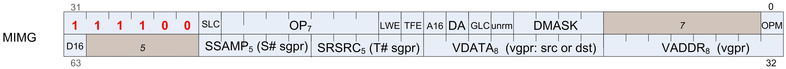
where:
DMASK = Enable mask for image read/write data components.
UNRM = Force address to be unnormalized.
GLC = Global coherency.
DA = Declare an array.
A16 = Texture address component size.
TFE = Texture fail enable.
LWE = LOD warning enable.
OP = Opcode instructions.
SLC = System level coherent.
VADDR = VGPR address source.
VDATA = Vector GPR for read/write result.
SRSRC = Scalar GPR that specifies resource constant.
SSAMP = Scalar GPR that specifies sampler constant.
D16 = Data in VGPRs is 16 bits, not 32 bits.
| Opcode | Name | Description |
|---|---|---|
| 0 | IMAGE_LOAD | Image memory load with format conversion specified in T#. No sampler. |
| 1 | IMAGE_LOAD_MIP | Image memory load with user-supplied mip level. No sampler. |
| 2 | IMAGE_LOAD_PCK | Image memory load with no format conversion. No sampler. |
| 3 | IMAGE_LOAD_PCK_SGN | Image memory load with with no format conversion and sign extension. No sampler. |
| 4 | IMAGE_LOAD_MIP_PCK | Image memory load with user-supplied mip level, no format conversion. No sampler. |
| 5 | IMAGE_LOAD_MIP_PCK _SGN | Image memory load with user-supplied mip level, no format conversion and with sign extension. No sampler. |
| 8 | IMAGE_STORE | Image memory store with format conversion specified in T#. No sampler. |
| 9 | IMAGE_STORE_MIP | Image memory store with format conversion specified in T# to user specified mip level. No sampler. |
| 10 | IMAGE_STORE_PCK | Image memory store of packed data without format conversion . No sampler. |
| 11 | IMAGE_STORE_MIP_PC K | Image memory store of packed data without format conversion to user-supplied mip level. No sampler. |
| 14 | IMAGE_GET_RESINFO | return resource info for a given mip level specified in the address vgpr. No sampler. Returns 4 integer values into VGPRs 3-0: {num_mip_levels, depth, height, width}. |
| 16 | IMAGE_ATOMIC_SWAP | // 32bit tmp = MEM[ADDR]; MEM[ADDR] = DATA; RETURN_DATA = tmp. |
| 17 | IMAGE_ATOMIC_CMPSWA P | // 32bit tmp = MEM[ADDR]; src = DATA[0]; cmp = DATA[1]; MEM[ADDR] = (tmp == cmp) ? src : tmp; RETURN_DATA[0] = tmp. |
| 18 | IMAGE_ATOMIC_ADD | // 32bit tmp = MEM[ADDR]; MEM[ADDR] += DATA; RETURN_DATA = tmp. |
| 19 | IMAGE_ATOMIC_SUB | // 32bit tmp = MEM[ADDR]; MEM[ADDR] -= DATA; RETURN_DATA = tmp. |
| 20 | IMAGE_ATOMIC_SMIN | // 32bit tmp = MEM[ADDR]; MEM[ADDR] = (DATA < tmp) ? DATA : tmp; // signed compare RETURN_DATA = tmp. |
| 21 | IMAGE_ATOMIC_UMIN | // 32bit tmp = MEM[ADDR]; MEM[ADDR] = (DATA < tmp) ? DATA : tmp; // unsigned compare RETURN_DATA = tmp. |
| 22 | IMAGE_ATOMIC_SMAX | // 32bit tmp = MEM[ADDR]; MEM[ADDR] = (DATA > tmp) ? DATA : tmp; // signed compare RETURN_DATA = tmp. |
| 23 | IMAGE_ATOMIC_UMAX | // 32bit tmp = MEM[ADDR]; MEM[ADDR] = (DATA > tmp) ? DATA : tmp; // unsigned compare RETURN_DATA = tmp. |
| 24 | IMAGE_ATOMIC_AND | // 32bit tmp = MEM[ADDR]; MEM[ADDR] &= DATA; RETURN_DATA = tmp. |
| 25 | IMAGE_ATOMIC_OR | // 32bit tmp = MEM[ADDR]; MEM[ADDR] |= DATA; RETURN_DATA = tmp. |
| 26 | IMAGE_ATOMIC_XOR | // 32bit tmp = MEM[ADDR]; MEM[ADDR] ^= DATA; RETURN_DATA = tmp. |
| 27 | IMAGE_ATOMIC_INC | // 32bit tmp = MEM[ADDR]; MEM[ADDR] = (tmp >= DATA) ? 0 : tmp + 1; // unsigned compare RETURN_DATA = tmp. |
| 28 | IMAGE_ATOMIC_DEC | // 32bit tmp = MEM[ADDR]; MEM[ADDR] = (tmp == 0 || tmp > DATA) ? DATA : tmp - 1; // unsigned compare RETURN_DATA = tmp. |
| 32 | IMAGE_SAMPLE | sample texture map. |
| 33 | IMAGE_SAMPLE_CL | sample texture map, with LOD clamp specified in shader. |
| 34 | IMAGE_SAMPLE_D | sample texture map, with user derivatives |
| 35 | IMAGE_SAMPLE_D_CL | sample texture map, with LOD clamp specified in shader, with user derivatives. |
| 36 | IMAGE_SAMPLE_L | sample texture map, with user LOD. |
| 37 | IMAGE_SAMPLE_B | sample texture map, with lod bias. |
| 38 | IMAGE_SAMPLE_B_CL | sample texture map, with LOD clamp specified in shader, with lod bias. |
| 39 | IMAGE_SAMPLE_LZ | sample texture map, from level 0. |
| 40 | IMAGE_SAMPLE_C | sample texture map, with PCF. |
| 41 | IMAGE_SAMPLE_C_CL | SAMPLE_C, with LOD clamp specified in shader. |
| 42 | IMAGE_SAMPLE_C_D | SAMPLE_C, with user derivatives. |
| 43 | IMAGE_SAMPLE_C_D_ CL | SAMPLE_C, with LOD clamp specified in shader, with user derivatives. |
| 44 | IMAGE_SAMPLE_C_L | SAMPLE_C, with user LOD. |
| 45 | IMAGE_SAMPLE_C_B | SAMPLE_C, with lod bias. |
| 46 | IMAGE_SAMPLE_C_B_ CL | SAMPLE_C, with LOD clamp specified in shader, with lod bias. |
| 47 | IMAGE_SAMPLE_C_LZ | SAMPLE_C, from level 0. |
| 48 | IMAGE_SAMPLE_O | sample texture map, with user offsets. |
| 49 | IMAGE_SAMPLE_CL_O | SAMPLE_O with LOD clamp specified in shader. |
| 50 | IMAGE_SAMPLE_D_O | SAMPLE_O, with user derivatives. |
| 51 | IMAGE_SAMPLE_D_CL_O | SAMPLE_O, with LOD clamp specified in shader, with user derivatives. |
| 52 | IMAGE_SAMPLE_L_O | SAMPLE_O, with user LOD. |
| 53 | IMAGE_SAMPLE_B_O | SAMPLE_O, with lod bias. |
| 54 | IMAGE_SAMPLE_B_CL_O | SAMPLE_O, with LOD clamp specified in shader, with lod bias. |
| 55 | IMAGE_SAMPLE_LZ_O | SAMPLE_O, from level 0. |
| 56 | IMAGE_SAMPLE_C_O | SAMPLE_C with user specified offsets. |
| 57 | IMAGE_SAMPLE_C_CL_O | SAMPLE_C_O, with LOD clamp specified in shader. |
| 58 | IMAGE_SAMPLE_C_D_ O | SAMPLE_C_O, with user derivatives. |
| 59 | IMAGE_SAMPLE_C_D_ CL_O | SAMPLE_C_O, with LOD clamp specified in shader, with user derivatives. |
| 60 | IMAGE_SAMPLE_C_L_ O | SAMPLE_C_O, with user LOD. |
| 61 | IMAGE_SAMPLE_C_B_ O | SAMPLE_C_O, with lod bias. |
| 62 | IMAGE_SAMPLE_C_B_ CL_O | SAMPLE_C_O, with LOD clamp specified in shader, with lod bias. |
| 63 | IMAGE_SAMPLE_C_LZ_O | SAMPLE_C_O, from level 0. |
| 64 | IMAGE_GATHER4 | gather 4 single component elements (2x2). |
| 65 | IMAGE_GATHER4_CL | gather 4 single component elements (2x2) with user LOD clamp. |
| 66 | IMAGE_GATHER4H | Same as Gather4, but fetches one component per texel, from a 4x1 group of texels. |
| 68 | IMAGE_GATHER4_L | gather 4 single component elements (2x2) with user LOD. |
| 69 | IMAGE_GATHER4_B | gather 4 single component elements (2x2) with user bias. |
| 70 | IMAGE_GATHER4_B_CL | gather 4 single component elements (2x2) with user bias and clamp. |
| 71 | IMAGE_GATHER4_LZ | gather 4 single component elements (2x2) at level 0. |
| 72 | IMAGE_GATHER4_C | gather 4 single component elements (2x2) with PCF. |
| 73 | IMAGE_GATHER4_C_CL | gather 4 single component elements (2x2) with user LOD clamp and PCF. |
| 74 | IMAGE_GATHER4H_PCK | Same as GATHER4H, but fetched elements are treated as a single component and packed into GPR(s). |
| 75 | IMAGE_GATHER8H_PCK | Simliar to GATHER4H_PCK, but packs eight elements from a 8x1 group of texels. |
| 76 | IMAGE_GATHER4_C_L | gather 4 single component elements (2x2) with user LOD and PCF. |
| 77 | IMAGE_GATHER4_C_B | gather 4 single component elements (2x2) with user bias and PCF. |
| 78 | IMAGE_GATHER4_C_B_CL | gather 4 single component elements (2x2) with user bias, clamp and PCF. |
| 79 | IMAGE_GATHER4_C_LZ | gather 4 single component elements (2x2) at level 0, with PCF. |
| 80 | IMAGE_GATHER4_O | GATHER4, with user offsets. |
| 81 | IMAGE_GATHER4_CL_O | GATHER4_CL, with user offsets. |
| 84 | IMAGE_GATHER4_L_O | GATHER4_L, with user offsets. |
| 85 | IMAGE_GATHER4_B_O | GATHER4_B, with user offsets. |
| 86 | IMAGE_GATHER4_B_CL _O | GATHER4_B_CL, with user offsets. |
| 87 | IMAGE_GATHER4_LZ_O | GATHER4_LZ, with user offsets. |
| 88 | IMAGE_GATHER4_C_O | GATHER4_C, with user offsets. |
| 89 | IMAGE_GATHER4_C_CL _O | GATHER4_C_CL, with user offsets. |
| 92 | IMAGE_GATHER4_C_L_O | GATHER4_C_L, with user offsets. |
| 93 | IMAGE_GATHER4_C_B_O | GATHER4_B, with user offsets. |
| 94 | IMAGE_GATHER4_C_B_CL_O | GATHER4_B_CL, with user offsets. |
| 95 | IMAGE_GATHER4_C_LZ _O | GATHER4_C_LZ, with user offsets. |
| 96 | IMAGE_GET_LOD | Return calculated LOD. Vdata gets 2 32bit integer values: { rawLOD, clampedLOD }. |
| 104 | IMAGE_SAMPLE_CD | sample texture map, with user derivatives (LOD per quad) |
| 105 | IMAGE_SAMPLE_CD_CL | sample texture map, with LOD clamp specified in shader, with user derivatives (LOD per quad). |
| 106 | IMAGE_SAMPLE_C_CD | SAMPLE_C, with user derivatives (LOD per quad). |
| 107 | IMAGE_SAMPLE_C_CD_CL | SAMPLE_C, with LOD clamp specified in shader, with user derivatives (LOD per quad). |
| 108 | IMAGE_SAMPLE_CD_O | SAMPLE_O, with user derivatives (LOD per quad). |
| 109 | IMAGE_SAMPLE_CD_CL _O | SAMPLE_O, with LOD clamp specified in shader, with user derivatives (LOD per quad). |
| 110 | IMAGE_SAMPLE_C_CD_O | SAMPLE_C_O, with user derivatives (LOD per quad). |
| 111 | IMAGE_SAMPLE_C_CD_CL_O | SAMPLE_C_O, with LOD clamp specified in shader, with user derivatives (LOD per quad). |
EXPORT Instructions¶
Transfer vertex position, vertex parameter, pixel color, or pixel depth information to the output buffer. Every pixel shader must do at least one export to a color, depth or NULL target with the VM bit set to 1. This communicates the pixel-valid mask to the color and depth buffers. Every pixel does only one of the above export types with the DONE bit set to 1. Vertex shaders must do one or more position exports, and at least one parameter export. The final position export must have the DONE bit set to 1.
FLAT, Scratch and Global Instructions¶
The bitfield map of the FLAT format is:
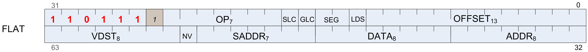
where:
GLC = Global coherency.
SLC = System level coherency.
OP = Opcode instructions.
ADDR = Source of flat address VGPR.
DATA = Source data.
VDST = Destination VGPR.
NV = Access to non-volatile memory.
SADDR = SGPR holding address or offset
SEG = Instruction type: Flat, Scratch, or Global
LDS = Data is transferred between LDS and Memory, not VGPRs.
OFFSET = Immediate address byte-offset.
Flat Instructions¶
Flat instructions look at the per-workitem address and determine for each work item if the target memory address is in global, private or scratch memory.
| Opcode | Name | Description |
|---|---|---|
| 16 | FLAT_LOAD_UBYTE | Untyped buffer load unsigned byte (zero extend to VGPR destination). |
| 17 | FLAT_LOAD_SBYTE | Untyped buffer load signed byte (sign extend to VGPR destination). |
| 18 | FLAT_LOAD_USHORT | Untyped buffer load unsigned short (zero extend to VGPR destination). |
| 19 | FLAT_LOAD_SSHORT | Untyped buffer load signed short (sign extend to VGPR destination). |
| 20 | FLAT_LOAD_DWORD | Untyped buffer load dword. |
| 21 | FLAT_LOAD_DWORDX2 | Untyped buffer load 2 dwords. |
| 22 | FLAT_LOAD_DWORDX3 | Untyped buffer load 3 dwords. |
| 23 | FLAT_LOAD_DWORDX4 | Untyped buffer load 4 dwords. |
| 24 | FLAT_STORE_BYTE | Untyped buffer store byte. Stores S0[7:0]. |
| 25 | FLAT_STORE_BYTE_D1 6_HI | Untyped buffer store byte. Stores S0[23:16]. |
| 26 | FLAT_STORE_SHORT | Untyped buffer store short. Stores S0[15:0]. |
| 27 | FLAT_STORE_SHORT_D 16_HI | Untyped buffer store short. Stores S0[31:16]. |
| 28 | FLAT_STORE_DWORD | Untyped buffer store dword. |
| 29 | FLAT_STORE_DWORDX2 | Untyped buffer store 2 dwords. |
| 30 | FLAT_STORE_DWORDX3 | Untyped buffer store 3 dwords. |
| 31 | FLAT_STORE_DWORDX4 | Untyped buffer store 4 dwords. |
| 32 | FLAT_LOAD_UBYTE_D1 6 | D0[15:0] = {8’h0, MEM[ADDR]}. Untyped buffer load unsigned byte. |
| 33 | FLAT_LOAD_UBYTE_D1 6_HI | D0[31:16] = {8’h0, MEM[ADDR]}. Untyped buffer load unsigned byte. |
| 34 | FLAT_LOAD_SBYTE_D1 6 | D0[15:0] = {8’h0, MEM[ADDR]}. Untyped buffer load signed byte. |
| 35 | FLAT_LOAD_SBYTE_D1 6_HI | D0[31:16] = {8’h0, MEM[ADDR]}. Untyped buffer load signed byte. |
| 36 | FLAT_LOAD_SHORT_D1 6 | D0[15:0] = MEM[ADDR]. Untyped buffer load short. |
| 37 | FLAT_LOAD_SHORT_D1 6_HI | D0[31:16] = MEM[ADDR]. Untyped buffer load short. |
| 64 | FLAT_ATOMIC_SWAP | // 32bit tmp = MEM[ADDR]; MEM[ADDR] = DATA; RETURN_DATA = tmp. |
| 65 | FLAT_ATOMIC_CMPSWAP | // 32bit tmp = MEM[ADDR]; src = DATA[0]; cmp = DATA[1]; MEM[ADDR] = (tmp == cmp) ? src : tmp; RETURN_DATA[0] = tmp. |
| 66 | FLAT_ATOMIC_ADD | // 32bit tmp = MEM[ADDR]; MEM[ADDR] += DATA; RETURN_DATA = tmp. |
| 67 | FLAT_ATOMIC_SUB | // 32bit tmp = MEM[ADDR]; MEM[ADDR] -= DATA; RETURN_DATA = tmp. |
| 68 | FLAT_ATOMIC_SMIN | // 32bit tmp = MEM[ADDR]; MEM[ADDR] = (DATA < tmp) ? DATA : tmp; // signed compare RETURN_DATA = tmp. |
| 69 | FLAT_ATOMIC_UMIN | // 32bit tmp = MEM[ADDR]; MEM[ADDR] = (DATA < tmp) ? DATA : tmp; // unsigned compare RETURN_DATA = tmp. |
| 70 | FLAT_ATOMIC_SMAX | // 32bit tmp = MEM[ADDR]; MEM[ADDR] = (DATA > tmp) ? DATA : tmp; // signed compare RETURN_DATA = tmp. |
| 71 | FLAT_ATOMIC_UMAX | // 32bit tmp = MEM[ADDR]; MEM[ADDR] = (DATA > tmp) ? DATA : tmp; // unsigned compare RETURN_DATA = tmp. |
| 72 | FLAT_ATOMIC_AND | // 32bit tmp = MEM[ADDR]; MEM[ADDR] &= DATA; RETURN_DATA = tmp. |
| 73 | FLAT_ATOMIC_OR | // 32bit tmp = MEM[ADDR]; MEM[ADDR] |= DATA; RETURN_DATA = tmp. |
| 74 | FLAT_ATOMIC_XOR | // 32bit tmp = MEM[ADDR]; MEM[ADDR] ^= DATA; RETURN_DATA = tmp. |
| 75 | FLAT_ATOMIC_INC | // 32bit tmp = MEM[ADDR]; MEM[ADDR] = (tmp >= DATA) ? 0 : tmp + 1; // unsigned compare RETURN_DATA = tmp. |
| 76 | FLAT_ATOMIC_DEC | // 32bit tmp = MEM[ADDR]; MEM[ADDR] = (tmp == 0 || tmp > DATA) ? DATA : tmp - 1; // unsigned compare RETURN_DATA = tmp. |
| 96 | FLAT_ATOMIC_SWAP_X 2 | // 64bit tmp = MEM[ADDR]; MEM[ADDR] = DATA[0:1]; RETURN_DATA[0:1] = tmp. |
| 97 | FLAT_ATOMIC_CMPSWAP _X2 | // 64bit tmp = MEM[ADDR]; src = DATA[0:1]; cmp = DATA[2:3]; MEM[ADDR] = (tmp == cmp) ? src : tmp; RETURN_DATA[0:1] = tmp. |
| 98 | FLAT_ATOMIC_ADD_X2 | // 64bit tmp = MEM[ADDR]; MEM[ADDR] += DATA[0:1]; RETURN_DATA[0:1] = tmp. |
| 99 | FLAT_ATOMIC_SUB_X2 | // 64bit tmp = MEM[ADDR]; MEM[ADDR] -= DATA[0:1]; RETURN_DATA[0:1] = tmp. |
| 100 | FLAT_ATOMIC_SMIN_X 2 | // 64bit tmp = MEM[ADDR]; MEM[ADDR] -= (DATA[0:1] < tmp) ? DATA[0:1] : tmp; // signed compare RETURN_DATA[0:1] = tmp. |
| 101 | FLAT_ATOMIC_UMIN_X 2 | // 64bit tmp = MEM[ADDR]; MEM[ADDR] -= (DATA[0:1] < tmp) ? DATA[0:1] : tmp; // unsigned compare RETURN_DATA[0:1] = tmp. |
| 102 | FLAT_ATOMIC_SMAX_X 2 | // 64bit tmp = MEM[ADDR]; MEM[ADDR] -= (DATA[0:1] > tmp) ? DATA[0:1] : tmp; // signed compare RETURN_DATA[0:1] = tmp. |
| 103 | FLAT_ATOMIC_UMAX_X 2 | // 64bit tmp = MEM[ADDR]; MEM[ADDR] -= (DATA[0:1] > tmp) ? DATA[0:1] : tmp; // unsigned compare RETURN_DATA[0:1] = tmp. |
| 104 | FLAT_ATOMIC_AND_X2 | // 64bit tmp = MEM[ADDR]; MEM[ADDR] &= DATA[0:1]; RETURN_DATA[0:1] = tmp. |
| 105 | FLAT_ATOMIC_OR_X2 | // 64bit tmp = MEM[ADDR]; MEM[ADDR] |= DATA[0:1]; RETURN_DATA[0:1] = tmp. |
| 106 | FLAT_ATOMIC_XOR_X2 | // 64bit tmp = MEM[ADDR]; MEM[ADDR] ^= DATA[0:1]; RETURN_DATA[0:1] = tmp. |
| 107 | FLAT_ATOMIC_INC_X2 | // 64bit tmp = MEM[ADDR]; MEM[ADDR] = (tmp >= DATA[0:1]) ? 0 : tmp + 1; // unsigned compare RETURN_DATA[0:1] = tmp. |
| 108 | FLAT_ATOMIC_DEC_X2 | // 64bit tmp = MEM[ADDR]; MEM[ADDR] = (tmp == 0 || tmp > DATA[0:1]) ? DATA[0:1] : tmp - 1; // unsigned compare RETURN_DATA[0:1] = tmp. |
Scratch Instructions¶
Scratch instructions are like Flat, but assume all workitem addresses fall in scratch (private) space.
| Opcode | Name | Description |
|---|---|---|
| 16 | SCRATCH_LOAD_UBYTE | Untyped buffer load unsigned byte (zero extend to VGPR destination). |
| 17 | SCRATCH_LOAD_SBYTE | Untyped buffer load signed byte (sign extend to VGPR destination). |
| 18 | SCRATCH_LOAD_USHORT | Untyped buffer load unsigned short (zero extend to VGPR destination). |
| 19 | SCRATCH_LOAD_SSHORT | Untyped buffer load signed short (sign extend to VGPR destination). |
| 20 | SCRATCH_LOAD_DWORD | Untyped buffer load dword. |
| 21 | SCRATCH_LOAD_DWORDX 2 | Untyped buffer load 2 dwords. |
| 22 | SCRATCH_LOAD_DWORDX 3 | Untyped buffer load 3 dwords. |
| 23 | SCRATCH_LOAD_DWORDX 4 | Untyped buffer load 4 dwords. |
| 24 | SCRATCH_STORE_BYTE | Untyped buffer store byte. Stores S0[7:0]. |
| 25 | SCRATCH_STORE_BYTE_D16_HI | Untyped buffer store byte. Stores S0[23:16]. |
| 26 | SCRATCH_STORE_SHORT | Untyped buffer store short. Stores S0[15:0]. |
| 27 | SCRATCH_STORE_SHORT _D16_HI | Untyped buffer store short. Stores S0[31:16]. |
| 28 | SCRATCH_STORE_DWORD | Untyped buffer store dword. |
| 29 | SCRATCH_STORE_DWORD X2 | Untyped buffer store 2 dwords. |
| 30 | SCRATCH_STORE_DWORD X3 | Untyped buffer store 3 dwords. |
| 31 | SCRATCH_STORE_DWORD X4 | Untyped buffer store 4 dwords. |
| 32 | SCRATCH_LOAD_UBYTE_D16 | D0[15:0] = {8’h0, MEM[ADDR]}. Untyped buffer load unsigned byte. |
| 33 | SCRATCH_LOAD_UBYTE_D16_HI | D0[31:16] = {8’h0, MEM[ADDR]}. Untyped buffer load unsigned byte. |
| 34 | SCRATCH_LOAD_SBYTE_D16 | D0[15:0] = {8’h0, MEM[ADDR]}. Untyped buffer load signed byte. |
| 35 | SCRATCH_LOAD_SBYTE_D16_HI | D0[31:16] = {8’h0, MEM[ADDR]}. Untyped buffer load signed byte. |
| 36 | SCRATCH_LOAD_SHORT_D16 | D0[15:0] = MEM[ADDR]. Untyped buffer load short. |
| 37 | SCRATCH_LOAD_SHORT_D16_HI | D0[31:16] = MEM[ADDR]. Untyped buffer load short. |
Global Instructions¶
Global instructions are like Flat, but assume all workitem addresses fall in global memory space.
| Opcode | Name | Description |
|---|---|---|
| 16 | GLOBAL_LOAD_UBYTE | Untyped buffer load unsigned byte (zero extend to VGPR destination). |
| 17 | GLOBAL_LOAD_SBYTE | Untyped buffer load signed byte (sign extend to VGPR destination). |
| 18 | GLOBAL_LOAD_USHORT | Untyped buffer load unsigned short (zero extend to VGPR destination). |
| 19 | GLOBAL_LOAD_SSHORT | Untyped buffer load signed short (sign extend to VGPR destination). |
| 20 | GLOBAL_LOAD_DWORD | Untyped buffer load dword. |
| 21 | GLOBAL_LOAD_DWORDX2 | Untyped buffer load 2 dwords. |
| 22 | GLOBAL_LOAD_DWORDX3 | Untyped buffer load 3 dwords. |
| 23 | GLOBAL_LOAD_DWORDX4 | Untyped buffer load 4 dwords. |
| 24 | GLOBAL_STORE_BYTE | Untyped buffer store byte. Stores S0[7:0]. |
| 25 | GLOBAL_STORE_BYTE_ D16_HI | Untyped buffer store byte. Stores S0[23:16]. |
| 26 | GLOBAL_STORE_SHORT | Untyped buffer store short. Stores S0[15:0]. |
| 27 | GLOBAL_STORE_SHORT_D16_HI | Untyped buffer store short. Stores S0[31:16]. |
| 28 | GLOBAL_STORE_DWORD | Untyped buffer store dword. |
| 29 | GLOBAL_STORE_DWORDX 2 | Untyped buffer store 2 dwords. |
| 30 | GLOBAL_STORE_DWORDX 3 | Untyped buffer store 3 dwords. |
| 31 | GLOBAL_STORE_DWORDX 4 | Untyped buffer store 4 dwords. |
| 32 | GLOBAL_LOAD_UBYTE_ D16 | D0[15:0] = {8’h0, MEM[ADDR]}. Untyped buffer load unsigned byte. |
| 33 | GLOBAL_LOAD_UBYTE_ D16_HI | D0[31:16] = {8’h0, MEM[ADDR]}. Untyped buffer load unsigned byte. |
| 34 | GLOBAL_LOAD_SBYTE_ D16 | D0[15:0] = {8’h0, MEM[ADDR]}. Untyped buffer load signed byte. |
| 35 | GLOBAL_LOAD_SBYTE_ D16_HI | D0[31:16] = {8’h0, MEM[ADDR]}. Untyped buffer load signed byte. |
| 36 | GLOBAL_LOAD_SHORT_ D16 | D0[15:0] = MEM[ADDR]. Untyped buffer load short. |
| 37 | GLOBAL_LOAD_SHORT_ D16_HI | D0[31:16] = MEM[ADDR]. Untyped buffer load short. |
| 64 | GLOBAL_ATOMIC_SWAP | // 32bit tmp = MEM[ADDR]; MEM[ADDR] = DATA; RETURN_DATA = tmp. |
| 65 | GLOBAL_ATOMIC_CMPSW AP | // 32bit tmp = MEM[ADDR]; src = DATA[0]; cmp = DATA[1]; MEM[ADDR] = (tmp == cmp) ? src : tmp; RETURN_DATA[0] = tmp. |
| 66 | GLOBAL_ATOMIC_ADD | // 32bit tmp = MEM[ADDR]; MEM[ADDR] += DATA; RETURN_DATA = tmp. |
| 67 | GLOBAL_ATOMIC_SUB | // 32bit tmp = MEM[ADDR]; MEM[ADDR] -= DATA; RETURN_DATA = tmp. |
| 68 | GLOBAL_ATOMIC_SMIN | // 32bit tmp = MEM[ADDR]; MEM[ADDR] = (DATA < tmp) ? DATA : tmp; // signed compare RETURN_DATA = tmp. |
| 69 | GLOBAL_ATOMIC_UMIN | // 32bit tmp = MEM[ADDR]; MEM[ADDR] = (DATA < tmp) ? DATA : tmp; // unsigned compare RETURN_DATA = tmp. |
| 70 | GLOBAL_ATOMIC_SMAX | // 32bit tmp = MEM[ADDR]; MEM[ADDR] = (DATA > tmp) ? DATA : tmp; // signed compare RETURN_DATA = tmp. |
| 71 | GLOBAL_ATOMIC_UMAX | // 32bit tmp = MEM[ADDR]; MEM[ADDR] = (DATA > tmp) ? DATA : tmp; // unsigned compare RETURN_DATA = tmp. |
| 72 | GLOBAL_ATOMIC_AND | // 32bit tmp = MEM[ADDR]; MEM[ADDR] &= DATA; RETURN_DATA = tmp. |
| 73 | GLOBAL_ATOMIC_OR | // 32bit tmp = MEM[ADDR]; MEM[ADDR] |= DATA; RETURN_DATA = tmp. |
| 74 | GLOBAL_ATOMIC_XOR | // 32bit tmp = MEM[ADDR]; MEM[ADDR] ^= DATA; RETURN_DATA = tmp. |
| 75 | GLOBAL_ATOMIC_INC | // 32bit tmp = MEM[ADDR]; MEM[ADDR] = (tmp >= DATA) ? 0 : tmp + 1; // unsigned compare RETURN_DATA = tmp. |
| 76 | GLOBAL_ATOMIC_DEC | // 32bit tmp = MEM[ADDR]; MEM[ADDR] = (tmp == 0 || tmp > DATA) ? DATA : tmp - 1; // unsigned compare RETURN_DATA = tmp. |
| 96 | GLOBAL_ATOMIC_SWAP_X2 | // 64bit tmp = MEM[ADDR]; MEM[ADDR] = DATA[0:1]; RETURN_DATA[0:1] = tmp. |
| 97 | GLOBAL_ATOMIC_CMPSW AP_X2 | // 64bit tmp = MEM[ADDR]; src = DATA[0:1]; cmp = DATA[2:3]; MEM[ADDR] = (tmp == cmp) ? src : tmp; RETURN_DATA[0:1] = tmp. |
| 98 | GLOBAL_ATOMIC_ADD_ X2 | // 64bit tmp = MEM[ADDR]; MEM[ADDR] += DATA[0:1]; RETURN_DATA[0:1] = tmp. |
| 99 | GLOBAL_ATOMIC_SUB_ X2 | // 64bit tmp = MEM[ADDR]; MEM[ADDR] -= DATA[0:1]; RETURN_DATA[0:1] = tmp. |
| 100 | GLOBAL_ATOMIC_SMIN_X2 | // 64bit tmp = MEM[ADDR]; MEM[ADDR] -= (DATA[0:1] < tmp) ? DATA[0:1] : tmp; // signed compare RETURN_DATA[0:1] = tmp. |
| 101 | GLOBAL_ATOMIC_UMIN_X2 | // 64bit tmp = MEM[ADDR]; MEM[ADDR] -= (DATA[0:1] < tmp) ? DATA[0:1] : tmp; // unsigned compare RETURN_DATA[0:1] = tmp. |
| 102 | GLOBAL_ATOMIC_SMAX_X2 | // 64bit tmp = MEM[ADDR]; MEM[ADDR] -= (DATA[0:1] > tmp) ? DATA[0:1] : tmp; // signed compare RETURN_DATA[0:1] = tmp. |
| 103 | GLOBAL_ATOMIC_UMAX_X2 | // 64bit tmp = MEM[ADDR]; MEM[ADDR] -= (DATA[0:1] > tmp) ? DATA[0:1] : tmp; // unsigned compare RETURN_DATA[0:1] = tmp. |
| 104 | GLOBAL_ATOMIC_AND_ X2 | // 64bit tmp = MEM[ADDR]; MEM[ADDR] &= DATA[0:1]; RETURN_DATA[0:1] = tmp. |
| 105 | GLOBAL_ATOMIC_OR_X 2 | // 64bit tmp = MEM[ADDR]; MEM[ADDR] |= DATA[0:1]; RETURN_DATA[0:1] = tmp. |
| 106 | GLOBAL_ATOMIC_XOR_ X2 | // 64bit tmp = MEM[ADDR]; MEM[ADDR] ^= DATA[0:1]; RETURN_DATA[0:1] = tmp. |
| 107 | GLOBAL_ATOMIC_INC_ X2 | // 64bit tmp = MEM[ADDR]; MEM[ADDR] = (tmp >= DATA[0:1]) ? 0 : tmp + 1; // unsigned compare RETURN_DATA[0:1] = tmp. |
| 108 | GLOBAL_ATOMIC_DEC_ X2 | // 64bit tmp = MEM[ADDR]; MEM[ADDR] = (tmp == 0 || tmp > DATA[0:1]) ? DATA[0:1] : tmp - 1; // unsigned compare RETURN_DATA[0:1] = tmp. |
Instruction Limitations¶
DPP¶
The following instructions cannot use DPP:
- V_MADMK_F32
- V_MADAK_F32
- V_MADMK_F16
- V_MADAK_F16
- V_READFIRSTLANE_B32
- V_CVT_I32_F64
- V_CVT_F64_I32
- V_CVT_F32_F64
- V_CVT_F64_F32
- V_CVT_U32_F64
- V_CVT_F64_U32
- V_TRUNC_F64
- V_CEIL_F64
- V_RNDNE_F64
- V_FLOOR_F64
- V_RCP_F64
- V_RSQ_F64
- V_SQRT_F64
- V_FREXP_EXP_I32_F64
- V_FREXP_MANT_F64
- V_FRACT_F64
- V_CLREXCP
- V_SWAP_B32
- V_CMP_CLASS_F64
- V_CMPX_CLASS_F64
- V_CMP_*_F64
- V_CMPX_*_F64
- V_CMP_*_I64
- V_CMP_*_U64
- V_CMPX_*_I64
- V_CMPX_*_U64
SDWA¶
The following instructions cannot use SDWA:
- V_MAC_F32
- V_MADMK_F32
- V_MADAK_F32
- V_MAC_F16
- V_MADMK_F16
- V_MADAK_F16
- V_FMAC_F32
- V_READFIRSTLANE_B32
- V_CLREXCP
- V_SWAP_B32
Microcode Formats¶
This section specifies the microcode formats. The definitions can be used to simplify compilation by providing standard templates and enumeration names for the various instruction formats.
Endian Order - The GCN architecture addresses memory and registers using littleendian byte-ordering and bit-ordering. Multi-byte values are stored with their least-significant (low-order) byte (LSB) at the lowest byte address, and they are illustrated with their LSB at the right side. Byte values are stored with their least-significant (low-order) bit (lsb) at the lowest bit address, and they are illustrated with their lsb at the right side.
The table below summarizes the microcode formats and their widths. The sections that follow provide details
| Microcode Formats | Reference | Width (bits) |
|---|---|---|
| Scalar ALU and Control Formats | ||
| SOP2 | section_title | 32 |
| SOP1 | section_title | |
| SOPK | section_title | |
| SOPP | section_title | |
| SOPC | section_title | |
| Scalar Memory Format | ||
| SMEM | section_title | 64 |
| Vector ALU Format | ||
| VOP1 | section_title | 32 |
| VOP2 | section_title | 32 |
| VOPC | section_title | 32 |
| VOP3A | section_title | 64 |
| VOP3B | section_title | 64 |
| VOP3P | section_title | 64 |
| DPP | section_title | 32 |
| SDWA | section_title | 32 |
| Vector Parameter Interpolation Format | ||
| VINTRP | section_title | 32 |
| LDS/GDS Format | ||
| DS | `section\_title <#_ds >`__ | 64 |
| Vector Memory Buffer Formats | ||
| MTBUF | ??? | 64 |
| MUBUF | section_title | 64 |
| Vector Memory Image Format | ||
| MIMG | section_title | 64 |
| Export Format | ||
| EXP | section_title | 64 |
| Flat Formats | ||
| FLAT | section_title | 64 |
| GLOBAL | section_title | 64 |
| SCRATCH | section_title | 64 |
Table: Summary of Microcode Formats
The field-definition tables that accompany the descriptions in the sections below use the following notation.
- int(2) - A two-bit field that specifies an unsigned integer value.
- enum(7) - A seven-bit field that specifies an enumerated set of values (in this case, a set of up to 27 values). The number of valid values can be less than the maximum.
The default value of all fields is zero. Any bitfield not identified is assumed to be reserved.
Instruction Suffixes
Most instructions include a suffix which indicates the data type the instruction handles. This suffix may also include a number which indicate the size of the data.
For example: “F32” indicates “32-bit floating point data”, or “B16” is “16-bit binary data”.
- B = binary
- F = floating point
- U = unsigned integer
- S = signed integer
When more than one data-type specifier occurs in an instruction, the last one is the result type and size, and the earlier one(s) is/are input data type and size.
Scalar ALU and Control Formats¶
SOP2¶
Scalar format with Two inputs, one output
| Format | SOP2 |
| Descriptio n | This is a scalar instruction with two inputs and one output. Can be followed by a 32-bit literal constant. |
| Field Name | Bits | Format or Description |
|---|---|---|
| SSRC0 | [7:0]
0 -
101
102
103
104
105
106
107
108-1
23
124
125
126
127
128
129-1
92
193-2
08
209-2
34
235
236
237
238
239
240
241
242
243
244
245
246
247
248
249 -
250
251
252
253
254
255
|
Source 0. First operand for the instruction.
SGPR0 to SGPR101: Scalar general-purpose
registers.
FLAT_SCRATCH_LO.
FLAT_SCRATCH_HI.
XNACK_MASK_LO.
XNACK_MASK_HI.
VCC_LO: vcc[31:0].
VCC_HI: vcc[63:32].
TTMP0 - TTMP15: Trap handler temporary
register.
M0. Memory register 0.
Reserved
EXEC_LO: exec[31:0].
EXEC_HI: exec[63:32].
0.
Signed integer 1 to 64.
Signed integer -1 to -16.
Reserved.
SHARED_BASE (Memory Aperture definition).
SHARED_LIMIT (Memory Aperture definition).
PRIVATE_BASE (Memory Aperture definition).
PRIVATE_LIMIT (Memory Aperture definition).
POPS_EXITING_WAVE_ID .
0.5.
-0.5.
1.0.
-1.0.
2.0.
-2.0.
4.0.
-4.0.
1/(2*PI).
Reserved.
VCCZ.
EXECZ.
SCC.
Reserved.
Literal constant.
|
| SSRC1 | [15:8] | Second scalar source operand.
Same codes as SSRC0, above.
|
| SDST | [22:16] | Scalar destination.
Same codes as SSRC0, above except only codes
0-127 are valid.
|
| OP | [29:23] | See Opcode table below. |
| ENCODING | [31:30] | Must be: 10 |
Table: SOP2 Fields
| Opcode # | Name |
|---|---|
| 0 | S_ADD_U32 |
| 1 | S_SUB_U32 |
| 2 | S_ADD_I32 |
| 3 | S_SUB_I32 |
| 4 | S_ADDC_U32 |
| 5 | S_SUBB_U32 |
| 6 | S_MIN_I32 |
| 7 | S_MIN_U32 |
| 8 | S_MAX_I32 |
| 9 | S_MAX_U32 |
| 10 | S_CSELECT_B32 |
| 11 | S_CSELECT_B64 |
| 12 | S_AND_B32 |
| 13 | S_AND_B64 |
| 14 | S_OR_B32 |
| 15 | S_OR_B64 |
| 16 | S_XOR_B32 |
| 17 | S_XOR_B64 |
| 18 | S_ANDN2_B32 |
| 19 | S_ANDN2_B64 |
| 20 | S_ORN2_B32 |
| 21 | S_ORN2_B64 |
| 22 | S_NAND_B32 |
| 23 | S_NAND_B64 |
| 24 | S_NOR_B32 |
| 25 | S_NOR_B64 |
| 26 | S_XNOR_B32 |
| 27 | S_XNOR_B64 |
| 28 | S_LSHL_B32 |
| 29 | S_LSHL_B64 |
| 30 | S_LSHR_B32 |
| 31 | S_LSHR_B64 |
| 32 | S_ASHR_I32 |
| 33 | S_ASHR_I64 |
| 34 | S_BFM_B32 |
| 35 | S_BFM_B64 |
| 36 | S_MUL_I32 |
| 37 | S_BFE_U32 |
| 38 | S_BFE_I32 |
| 39 | S_BFE_U64 |
| 40 | S_BFE_I64 |
| 41 | S_CBRANCH_G_FORK |
| 42 | S_ABSDIFF_I32 |
| 43 | S_RFE_RESTORE_B64 |
| 44 | S_MUL_HI_U32 |
| 45 | S_MUL_HI_I32 |
| 46 | S_LSHL1_ADD_U32 |
| 47 | S_LSHL2_ADD_U32 |
| 48 | S_LSHL3_ADD_U32 |
| 49 | S_LSHL4_ADD_U32 |
| 50 | S_PACK_LL_B32_B16 |
| 51 | S_PACK_LH_B32_B16 |
| 52 | S_PACK_HH_B32_B16 |
Table: SOP2 Opcodes
SOPK¶
| Format | SOPK |
| Descriptio n | This is a scalar instruction with one 16-bit signed immediate (SIMM16) input and a single destination. Instructions which take 2 inputs use the destination as the second input. |
| Field Name | Bits | Format or Description |
|---|---|---|
| SIMM16 | [15:0] | Signed immediate 16-bit value. |
| SDST | [22:16]
0 - 101
102
103
104
105
106
107
108-123
124
125
126
127
|
Scalar destination, and can provide second
source operand.
SGPR0 to SGPR101: Scalar general-purpose
registers.
FLAT_SCRATCH_LO.
FLAT_SCRATCH_HI.
XNACK_MASK_LO.
XNACK_MASK_HI.
VCC_LO: vcc[31:0].
VCC_HI: vcc[63:32].
TTMP0 - TTMP15: Trap handler temporary
register.
M0. Memory register 0.
Reserved
EXEC_LO: exec[31:0].
EXEC_HI: exec[63:32].
|
| OP | [27:23] | See Opcode table below. |
| ENCODING | [31:28] | Must be: 1011 |
Table: SOPK Fields
| Opcode # | Name |
|---|---|
| 0 | S_MOVK_I32 |
| 1 | S_CMOVK_I32 |
| 2 | S_CMPK_EQ_I32 |
| 3 | S_CMPK_LG_I32 |
| 4 | S_CMPK_GT_I32 |
| 5 | S_CMPK_GE_I32 |
| 6 | S_CMPK_LT_I32 |
| 7 | S_CMPK_LE_I32 |
| 8 | S_CMPK_EQ_U32 |
| 9 | S_CMPK_LG_U32 |
| 10 | S_CMPK_GT_U32 |
| 11 | S_CMPK_GE_U32 |
| 12 | S_CMPK_LT_U32 |
| 13 | S_CMPK_LE_U32 |
| 14 | S_ADDK_I32 |
| 15 | S_MULK_I32 |
| 16 | S_CBRANCH_I_FORK |
| 17 | S_GETREG_B32 |
| 18 | S_SETREG_B32 |
| 20 | S_SETREG_IMM32_B32 |
| 21 | S_CALL_B64 |
Table: SOPK Opcodes
SOP1¶
| Format | SOP1 |
| Descriptio n | This is a scalar instruction with two inputs and one output. Can be followed by a 32-bit literal constant. |
| Field Name | Bits | Format or Description |
|---|---|---|
| SSRC0 | [7:0]
0 -
101
102
103
104
105
106
107
108-1
23
124
125
126
127
128
129-1
92
193-2
08
209-2
34
235
236
237
238
239
240
241
242
243
244
245
246
247
248
249 -
250
251
252
253
254
255
|
Source 0. First operand for the instruction.
SGPR0 to SGPR101: Scalar general-purpose
registers.
FLAT_SCRATCH_LO.
FLAT_SCRATCH_HI.
XNACK_MASK_LO.
XNACK_MASK_HI.
VCC_LO: vcc[31:0].
VCC_HI: vcc[63:32].
TTMP0 - TTMP15: Trap handler temporary
register.
M0. Memory register 0.
Reserved
EXEC_LO: exec[31:0].
EXEC_HI: exec[63:32].
0.
Signed integer 1 to 64.
Signed integer -1 to -16.
Reserved.
SHARED_BASE (Memory Aperture definition).
SHARED_LIMIT (Memory Aperture definition).
PRIVATE_BASE (Memory Aperture definition).
PRIVATE_LIMIT (Memory Aperture definition).
POPS_EXITING_WAVE_ID .
0.5.
-0.5.
1.0.
-1.0.
2.0.
-2.0.
4.0.
-4.0.
1/(2*PI).
Reserved.
VCCZ.
EXECZ.
SCC.
Reserved.
Literal constant.
|
| OP | [15:8] | See Opcode table below. |
| SDST | [22:16] | Scalar destination.
Same codes as SSRC0, above except only codes
0-127 are valid.
|
| ENCODING | [31:23] | Must be: 10_1111101 |
Table: SOP1 Fields
| Opcode # | Name |
|---|---|
| 0 | S_MOV_B32 |
| 1 | S_MOV_B64 |
| 2 | S_CMOV_B32 |
| 3 | S_CMOV_B64 |
| 4 | S_NOT_B32 |
| 5 | S_NOT_B64 |
| 6 | S_WQM_B32 |
| 7 | S_WQM_B64 |
| 8 | S_BREV_B32 |
| 9 | S_BREV_B64 |
| 10 | S_BCNT0_I32_B32 |
| 11 | S_BCNT0_I32_B64 |
| 12 | S_BCNT1_I32_B32 |
| 13 | S_BCNT1_I32_B64 |
| 14 | S_FF0_I32_B32 |
| 15 | S_FF0_I32_B64 |
| 16 | S_FF1_I32_B32 |
| 17 | S_FF1_I32_B64 |
| 18 | S_FLBIT_I32_B32 |
| 19 | S_FLBIT_I32_B64 |
| 20 | S_FLBIT_I32 |
| 21 | S_FLBIT_I32_I64 |
| 22 | S_SEXT_I32_I8 |
| 23 | S_SEXT_I32_I16 |
| 24 | S_BITSET0_B32 |
| 25 | S_BITSET0_B64 |
| 26 | S_BITSET1_B32 |
| 27 | S_BITSET1_B64 |
| 28 | S_GETPC_B64 |
| 29 | S_SETPC_B64 |
| 30 | S_SWAPPC_B64 |
| 31 | S_RFE_B64 |
| 32 | S_AND_SAVEEXEC_B64 |
| 33 | S_OR_SAVEEXEC_B64 |
| 34 | S_XOR_SAVEEXEC_B64 |
| 35 | S_ANDN2_SAVEEXEC_B64 |
| 36 | S_ORN2_SAVEEXEC_B64 |
| 37 | S_NAND_SAVEEXEC_B64 |
| 38 | S_NOR_SAVEEXEC_B64 |
| 39 | S_XNOR_SAVEEXEC_B64 |
| 40 | S_QUADMASK_B32 |
| 41 | S_QUADMASK_B64 |
| 42 | S_MOVRELS_B32 |
| 43 | S_MOVRELS_B64 |
| 44 | S_MOVRELD_B32 |
| 45 | S_MOVRELD_B64 |
| 46 | S_CBRANCH_JOIN |
| 48 | S_ABS_I32 |
| 50 | S_SET_GPR_IDX_IDX |
| 51 | S_ANDN1_SAVEEXEC_B64 |
| 52 | S_ORN1_SAVEEXEC_B64 |
| 53 | S_ANDN1_WREXEC_B64 |
| 54 | S_ANDN2_WREXEC_B64 |
| 55 | S_BITREPLICATE_B64_B32 |
Table: SOP1 Opcodes
SOPC¶
| Format | SOPC |
| Descriptio n | This is a scalar instruction with two inputs which are compared and produce SCC as a result. Can be followed by a 32-bit literal constant. |
| Field Name | Bits | Format or Description |
|---|---|---|
| SSRC0 | [7:0]
0 -
101
102
103
104
105
106
107
108-1
23
124
125
126
127
128
129-1
92
193-2
08
209-2
34
235
236
237
238
239
240
241
242
243
244
245
246
247
248
249 -
250
251
252
253
254
255
|
Source 0. First operand for the instruction.
SGPR0 to SGPR101: Scalar general-purpose
registers.
FLAT_SCRATCH_LO.
FLAT_SCRATCH_HI.
XNACK_MASK_LO.
XNACK_MASK_HI.
VCC_LO: vcc[31:0].
VCC_HI: vcc[63:32].
TTMP0 - TTMP15: Trap handler temporary
register.
M0. Memory register 0.
Reserved
EXEC_LO: exec[31:0].
EXEC_HI: exec[63:32].
0.
Signed integer 1 to 64.
Signed integer -1 to -16.
Reserved.
SHARED_BASE (Memory Aperture definition).
SHARED_LIMIT (Memory Aperture definition).
PRIVATE_BASE (Memory Aperture definition).
PRIVATE_LIMIT (Memory Aperture definition).
POPS_EXITING_WAVE_ID .
0.5.
-0.5.
1.0.
-1.0.
2.0.
-2.0.
4.0.
-4.0.
1/(2*PI).
Reserved.
VCCZ.
EXECZ.
SCC.
Reserved.
Literal constant.
|
| SSRC1 | [15:8] | Second scalar source operand.
Same codes as SSRC0, above.
|
| OP | [22:16] | See Opcode table below. |
| ENCODING | [31:23] | Must be: 10_1111110 |
Table: SOPC Fields
| Opcode # | Name |
|---|---|
| 0 | S_CMP_EQ_I32 |
| 1 | S_CMP_LG_I32 |
| 2 | S_CMP_GT_I32 |
| 3 | S_CMP_GE_I32 |
| 4 | S_CMP_LT_I32 |
| 5 | S_CMP_LE_I32 |
| 6 | S_CMP_EQ_U32 |
| 7 | S_CMP_LG_U32 |
| 8 | S_CMP_GT_U32 |
| 9 | S_CMP_GE_U32 |
| 10 | S_CMP_LT_U32 |
| 11 | S_CMP_LE_U32 |
| 12 | S_BITCMP0_B32 |
| 13 | S_BITCMP1_B32 |
| 14 | S_BITCMP0_B64 |
| 15 | S_BITCMP1_B64 |
| 16 | S_SETVSKIP |
| 17 | S_SET_GPR_IDX_ON |
| 18 | S_CMP_EQ_U64 |
| 19 | S_CMP_LG_U64 |
Table: SOPC Opcodes
SOPP¶
| Format | SOPP |
| Descriptio n | This is a scalar instruction with one 16-bit signed immediate (SIMM16) input. |
| Field Name | Bits | Format or Description |
|---|---|---|
| SIMM16 | [15:0] | Signed immediate 16-bit value. |
| OP | [22:16] | See Opcode table below. |
| ENCODING | [31:23] | Must be: 10_1111111 |
Table: SOPP Fields
| Opcode # | Name |
|---|---|
| 0 | S_NOP |
| 1 | S_ENDPGM |
| 2 | S_BRANCH |
| 3 | S_WAKEUP |
| 4 | S_CBRANCH_SCC0 |
| 5 | S_CBRANCH_SCC1 |
| 6 | S_CBRANCH_VCCZ |
| 7 | S_CBRANCH_VCCNZ |
| 8 | S_CBRANCH_EXECZ |
| 9 | S_CBRANCH_EXECNZ |
| 10 | S_BARRIER |
| 11 | S_SETKILL |
| 12 | S_WAITCNT |
| 13 | S_SETHALT |
| 14 | S_SLEEP |
| 15 | S_SETPRIO |
| 16 | S_SENDMSG |
| 17 | S_SENDMSGHALT |
| 18 | S_TRAP |
| 19 | S_ICACHE_INV |
| 20 | S_INCPERFLEVEL |
| 21 | S_DECPERFLEVEL |
| 22 | S_TTRACEDATA |
| 23 | S_CBRANCH_CDBGSYS |
| 24 | S_CBRANCH_CDBGUSER |
| 25 | S_CBRANCH_CDBGSYS_OR_USER |
| 26 | S_CBRANCH_CDBGSYS_AND_USER |
| 27 | S_ENDPGM_SAVED |
| 28 | S_SET_GPR_IDX_OFF |
| 29 | S_SET_GPR_IDX_MODE |
| 30 | S_ENDPGM_ORDERED_PS_DONE |
Table: SOPP Opcodes
Scalar Memory Format¶
SMEM¶
| Format | SMEM |
| Descriptio n | Scalar Memory data load/store |
| Field Name | Bits | Format or Description |
|---|---|---|
| SBASE | [5:0] | SGPR-pair which provides base address or SGPR-quad which provides V#. (LSB of SGPR address is omitted). |
| SDATA | [12:6] | SGPR which provides write data or accepts return data. |
| SOE | [14] | Scalar offset enable. |
| NV | [15] | Non-volatile |
| GLC | [16] | Globally memory Coherent. Force bypass of L1 cache, or for atomics, cause pre-op value to be returned. |
| IMM | [17] | Immediate enable. |
| OP | [25:18] | See Opcode table below. |
| ENCODING | [31:26] | Must be: 110000 |
| OFFSET | [52:32] | An immediate signed byte offset, or the address of an SGPR holding the unsigned byte offset. Signed offsets only work with S_LOAD/STORE. |
| SOFFSET | [63:57] | SGPR offset. Used only when SOFFSET_EN = 1 May only specify an SGPR or M0. |
Table: SMEM Fields
| Opcode # | Name |
|---|---|
| 0 | S_LOAD_DWORD |
| 1 | S_LOAD_DWORDX2 |
| 2 | S_LOAD_DWORDX4 |
| 3 | S_LOAD_DWORDX8 |
| 4 | S_LOAD_DWORDX16 |
| 5 | S_SCRATCH_LOAD_DWORD |
| 6 | S_SCRATCH_LOAD_DWORDX2 |
| 7 | S_SCRATCH_LOAD_DWORDX4 |
| 8 | S_BUFFER_LOAD_DWORD |
| 9 | S_BUFFER_LOAD_DWORDX2 |
| 10 | S_BUFFER_LOAD_DWORDX4 |
| 11 | S_BUFFER_LOAD_DWORDX8 |
| 12 | S_BUFFER_LOAD_DWORDX16 |
| 16 | S_STORE_DWORD |
| 17 | S_STORE_DWORDX2 |
| 18 | S_STORE_DWORDX4 |
| 21 | S_SCRATCH_STORE_DWORD |
| 22 | S_SCRATCH_STORE_DWORDX2 |
| 23 | S_SCRATCH_STORE_DWORDX4 |
| 24 | S_BUFFER_STORE_DWORD |
| 25 | S_BUFFER_STORE_DWORDX2 |
| 26 | S_BUFFER_STORE_DWORDX4 |
| 32 | S_DCACHE_INV |
| 33 | S_DCACHE_WB |
| 34 | S_DCACHE_INV_VOL |
| 35 | S_DCACHE_WB_VOL |
| 36 | S_MEMTIME |
| 37 | S_MEMREALTIME |
| 38 | S_ATC_PROBE |
| 39 | S_ATC_PROBE_BUFFER |
| 40 | S_DCACHE_DISCARD |
| 41 | S_DCACHE_DISCARD_X2 |
| 64 | S_BUFFER_ATOMIC_SWAP |
| 65 | S_BUFFER_ATOMIC_CMPSWAP |
| 66 | S_BUFFER_ATOMIC_ADD |
| 67 | S_BUFFER_ATOMIC_SUB |
| 68 | S_BUFFER_ATOMIC_SMIN |
| 69 | S_BUFFER_ATOMIC_UMIN |
| 70 | S_BUFFER_ATOMIC_SMAX |
| 71 | S_BUFFER_ATOMIC_UMAX |
| 72 | S_BUFFER_ATOMIC_AND |
| 73 | S_BUFFER_ATOMIC_OR |
| 74 | S_BUFFER_ATOMIC_XOR |
| 75 | S_BUFFER_ATOMIC_INC |
| 76 | S_BUFFER_ATOMIC_DEC |
| 96 | S_BUFFER_ATOMIC_SWAP_X2 |
| 97 | S_BUFFER_ATOMIC_CMPSWAP_X2 |
| 98 | S_BUFFER_ATOMIC_ADD_X2 |
| 99 | S_BUFFER_ATOMIC_SUB_X2 |
| 100 | S_BUFFER_ATOMIC_SMIN_X2 |
| 101 | S_BUFFER_ATOMIC_UMIN_X2 |
| 102 | S_BUFFER_ATOMIC_SMAX_X2 |
| 103 | S_BUFFER_ATOMIC_UMAX_X2 |
| 104 | S_BUFFER_ATOMIC_AND_X2 |
| 105 | S_BUFFER_ATOMIC_OR_X2 |
| 106 | S_BUFFER_ATOMIC_XOR_X2 |
| 107 | S_BUFFER_ATOMIC_INC_X2 |
| 108 | S_BUFFER_ATOMIC_DEC_X2 |
| 128 | S_ATOMIC_SWAP |
| 129 | S_ATOMIC_CMPSWAP |
| 130 | S_ATOMIC_ADD |
| 131 | S_ATOMIC_SUB |
| 132 | S_ATOMIC_SMIN |
| 133 | S_ATOMIC_UMIN |
| 134 | S_ATOMIC_SMAX |
| 135 | S_ATOMIC_UMAX |
| 136 | S_ATOMIC_AND |
| 137 | S_ATOMIC_OR |
| 138 | S_ATOMIC_XOR |
| 139 | S_ATOMIC_INC |
| 140 | S_ATOMIC_DEC |
| 160 | S_ATOMIC_SWAP_X2 |
| 161 | S_ATOMIC_CMPSWAP_X2 |
| 162 | S_ATOMIC_ADD_X2 |
| 163 | S_ATOMIC_SUB_X2 |
| 164 | S_ATOMIC_SMIN_X2 |
| 165 | S_ATOMIC_UMIN_X2 |
| 166 | S_ATOMIC_SMAX_X2 |
| 167 | S_ATOMIC_UMAX_X2 |
| 168 | S_ATOMIC_AND_X2 |
| 169 | S_ATOMIC_OR_X2 |
| 170 | S_ATOMIC_XOR_X2 |
| 171 | S_ATOMIC_INC_X2 |
| 172 | S_ATOMIC_DEC_X2 |
Table: SMEM Opcodes
Vector ALU Formats¶
VOP2¶
| Format | VOP2 |
| Descriptio n | Vector ALU format with two operands |
| Field Name | Bits | Format or Description |
|---|---|---|
| SRC0 | [8:0]
0 -
101
102
103
104
105
106
107
108-1
23
124
125
126
127
128
129-1
92
193-2
08
209-2
34
235
236
237
238
239
240
241
242
243
244
245
246
247
248
249
250
251
252
253
254
255
256 -
511
|
Source 0. First operand for the instruction.
SGPR0 to SGPR101: Scalar general-purpose
registers.
FLAT_SCRATCH_LO.
FLAT_SCRATCH_HI.
XNACK_MASK_LO.
XNACK_MASK_HI.
VCC_LO: vcc[31:0].
VCC_HI: vcc[63:32].
TTMP0 - TTMP15: Trap handler temporary
register.
M0. Memory register 0.
Reserved
EXEC_LO: exec[31:0].
EXEC_HI: exec[63:32].
0.
Signed integer 1 to 64.
Signed integer -1 to -16.
Reserved.
SHARED_BASE (Memory Aperture definition).
SHARED_LIMIT (Memory Aperture definition).
PRIVATE_BASE (Memory Aperture definition).
PRIVATE_LIMIT (Memory Aperture definition).
POPS_EXITING_WAVE_ID .
0.5.
-0.5.
1.0.
-1.0.
2.0.
-2.0.
4.0.
-4.0.
1/(2*PI).
SDWA
DPP
VCCZ.
EXECZ.
SCC.
Reserved.
Literal constant.
VGPR 0 - 255
|
| VSRC1 | [16:9] | VGPR which provides the second operand. |
| VDST | [24:17] | Destination VGPR. |
| OP | [30:25] | See Opcode table below. |
| ENCODING | [31] | Must be: 0 |
Table: VOP2 Fields
| Opcode # | Name |
|---|---|
| 0 | V_CNDMASK_B32 |
| 1 | V_ADD_F32 |
| 2 | V_SUB_F32 |
| 3 | V_SUBREV_F32 |
| 4 | V_MUL_LEGACY_F32 |
| 5 | V_MUL_F32 |
| 6 | V_MUL_I32_I24 |
| 7 | V_MUL_HI_I32_I24 |
| 8 | V_MUL_U32_U24 |
| 9 | V_MUL_HI_U32_U24 |
| 10 | V_MIN_F32 |
| 11 | V_MAX_F32 |
| 12 | V_MIN_I32 |
| 13 | V_MAX_I32 |
| 14 | V_MIN_U32 |
| 15 | V_MAX_U32 |
| 16 | V_LSHRREV_B32 |
| 17 | V_ASHRREV_I32 |
| 18 | V_LSHLREV_B32 |
| 19 | V_AND_B32 |
| 20 | V_OR_B32 |
| 21 | V_XOR_B32 |
| 22 | V_MAC_F32 |
| 23 | V_MADMK_F32 |
| 24 | V_MADAK_F32 |
| 25 | V_ADD_CO_U32 |
| 26 | V_SUB_CO_U32 |
| 27 | V_SUBREV_CO_U32 |
| 28 | V_ADDC_CO_U32 |
| 29 | V_SUBB_CO_U32 |
| 30 | V_SUBBREV_CO_U32 |
| 31 | V_ADD_F16 |
| 32 | V_SUB_F16 |
| 33 | V_SUBREV_F16 |
| 34 | V_MUL_F16 |
| 35 | V_MAC_F16 |
| 36 | V_MADMK_F16 |
| 37 | V_MADAK_F16 |
| 38 | V_ADD_U16 |
| 39 | V_SUB_U16 |
| 40 | V_SUBREV_U16 |
| 41 | V_MUL_LO_U16 |
| 42 | V_LSHLREV_B16 |
| 43 | V_LSHRREV_B16 |
| 44 | V_ASHRREV_I16 |
| 45 | V_MAX_F16 |
| 46 | V_MIN_F16 |
| 47 | V_MAX_U16 |
| 48 | V_MAX_I16 |
| 49 | V_MIN_U16 |
| 50 | V_MIN_I16 |
| 51 | V_LDEXP_F16 |
| 52 | V_ADD_U32 |
| 53 | V_SUB_U32 |
| 54 | V_SUBREV_U32 |
Table: VOP2 Opcodes
VOP1¶
| Format | VOP1 |
| Descriptio n | Vector ALU format with one operand |
| Field Name | Bits | Format or Description |
|---|---|---|
| SRC0 | [8:0]
0 -
101
102
103
104
105
106
107
108-1
23
124
125
126
127
128
129-1
92
193-2
08
209-2
34
235
236
237
238
239
240
241
242
243
244
245
246
247
248
249
250
251
252
253
254
255
256 -
511
|
Source 0. First operand for the instruction.
SGPR0 to SGPR101: Scalar general-purpose
registers.
FLAT_SCRATCH_LO.
FLAT_SCRATCH_HI.
XNACK_MASK_LO.
XNACK_MASK_HI.
VCC_LO: vcc[31:0].
VCC_HI: vcc[63:32].
TTMP0 - TTMP15: Trap handler temporary
register.
M0. Memory register 0.
Reserved
EXEC_LO: exec[31:0].
EXEC_HI: exec[63:32].
0.
Signed integer 1 to 64.
Signed integer -1 to -16.
Reserved.
SHARED_BASE (Memory Aperture definition).
SHARED_LIMIT (Memory Aperture definition).
PRIVATE_BASE (Memory Aperture definition).
PRIVATE_LIMIT (Memory Aperture definition).
POPS_EXITING_WAVE_ID .
0.5.
-0.5.
1.0.
-1.0.
2.0.
-2.0.
4.0.
-4.0.
1/(2*PI).
SDWA
DPP
VCCZ.
EXECZ.
SCC.
Reserved.
Literal constant.
VGPR 0 - 255
|
| OP | [16:9] | See Opcode table below. |
| VDST | [24:17] | Destination VGPR. |
| ENCODING | [31:25] | Must be: 0_111111 |
Table: VOP1 Fields
| Opcode # | Name |
|---|---|
| 0 | V_NOP |
| 1 | V_MOV_B32 |
| 2 | V_READFIRSTLANE_B32 |
| 3 | V_CVT_I32_F64 |
| 4 | V_CVT_F64_I32 |
| 5 | V_CVT_F32_I32 |
| 6 | V_CVT_F32_U32 |
| 7 | V_CVT_U32_F32 |
| 8 | V_CVT_I32_F32 |
| 10 | V_CVT_F16_F32 |
| 11 | V_CVT_F32_F16 |
| 12 | V_CVT_RPI_I32_F32 |
| 13 | V_CVT_FLR_I32_F32 |
| 14 | V_CVT_OFF_F32_I4 |
| 15 | V_CVT_F32_F64 |
| 16 | V_CVT_F64_F32 |
| 17 | V_CVT_F32_UBYTE0 |
| 18 | V_CVT_F32_UBYTE1 |
| 19 | V_CVT_F32_UBYTE2 |
| 20 | V_CVT_F32_UBYTE3 |
| 21 | V_CVT_U32_F64 |
| 22 | V_CVT_F64_U32 |
| 23 | V_TRUNC_F64 |
| 24 | V_CEIL_F64 |
| 25 | V_RNDNE_F64 |
| 26 | V_FLOOR_F64 |
| 27 | V_FRACT_F32 |
| 28 | V_TRUNC_F32 |
| 29 | V_CEIL_F32 |
| 30 | V_RNDNE_F32 |
| 31 | V_FLOOR_F32 |
| 32 | V_EXP_F32 |
| 33 | V_LOG_F32 |
| 34 | V_RCP_F32 |
| 35 | V_RCP_IFLAG_F32 |
| 36 | V_RSQ_F32 |
| 37 | V_RCP_F64 |
| 38 | V_RSQ_F64 |
| 39 | V_SQRT_F32 |
| 40 | V_SQRT_F64 |
| 41 | V_SIN_F32 |
| 42 | V_COS_F32 |
| 43 | V_NOT_B32 |
| 44 | V_BFREV_B32 |
| 45 | V_FFBH_U32 |
| 46 | V_FFBL_B32 |
| 47 | V_FFBH_I32 |
| 48 | V_FREXP_EXP_I32_F64 |
| 49 | V_FREXP_MANT_F64 |
| 50 | V_FRACT_F64 |
| 51 | V_FREXP_EXP_I32_F32 |
| 52 | V_FREXP_MANT_F32 |
| 53 | V_CLREXCP |
| 55 | V_SCREEN_PARTITION_4SE_B32 |
| 57 | V_CVT_F16_U16 |
| 58 | V_CVT_F16_I16 |
| 59 | V_CVT_U16_F16 |
| 60 | V_CVT_I16_F16 |
| 61 | V_RCP_F16 |
| 62 | V_SQRT_F16 |
| 63 | V_RSQ_F16 |
| 64 | V_LOG_F16 |
| 65 | V_EXP_F16 |
| 66 | V_FREXP_MANT_F16 |
| 67 | V_FREXP_EXP_I16_F16 |
| 68 | V_FLOOR_F16 |
| 69 | V_CEIL_F16 |
| 70 | V_TRUNC_F16 |
| 71 | V_RNDNE_F16 |
| 72 | V_FRACT_F16 |
| 73 | V_SIN_F16 |
| 74 | V_COS_F16 |
| 75 | V_EXP_LEGACY_F32 |
| 76 | V_LOG_LEGACY_F32 |
| 77 | V_CVT_NORM_I16_F16 |
| 78 | V_CVT_NORM_U16_F16 |
| 79 | V_SAT_PK_U8_I16 |
| 81 | V_SWAP_B32 |
Table: VOP1 Opcodes
VOPC¶
| Format | VOPC |
| Descriptio n | Vector instruction taking two inputs and producing a comparison result. Can be followed by a 32- bit literal constant. Vector Comparison operations are divided into three groups:
|
The final opcode number is determined by adding the base for the opcode family plus the offset from the compare op. Every compare instruction writes a result to VCC (for VOPC) or an SGPR (for VOP3). Additionally, every compare instruction has a variant that also writes to the EXEC mask. The destination of the compare result is always VCC when encoded using the VOPC format, and can be an arbitrary SGPR when encoded in the VOP3 format.
Comparison Operations
| Compare Operation | Opcode Offset | Description |
|---|---|---|
| Sixteen Compare Operations (OP16) | ||
| F | 0 | D.u = 0 |
| LT | 1 | D.u = (S0 < S1) |
| EQ | 2 | D.u = (S0 == S1) |
| LE | 3 | D.u = (S0 <= S1) |
| GT | 4 | D.u = (S0 > S1) |
| LG | 5 | D.u = (S0 <> S1) |
| GE | 6 | D.u = (S0 >= S1) |
| O | 7 | D.u = (!isNaN(S0) && !isNaN(S1)) |
| U | 8 | D.u = (!isNaN(S0) || !isNaN(S1)) |
| NGE | 9 | D.u = !(S0 >= S1) |
| NLG | 10 | D.u = !(S0 <> S1) |
| NGT | 11 | D.u = !(S0 > S1) |
| NLE | 12 | D.u = !(S0 <= S1) |
| NEQ | 13 | D.u = !(S0 == S1) |
| NLT | 14 | D.u = !(S0 < S1) |
| TRU | 15 | D.u = 1 |
| Eight Compare Operations (OP8) | ||
| F | 0 | D.u = 0 |
| LT | 1 | D.u = (S0 < S1) |
| EQ | 2 | D.u = (S0 == S1) |
| LE | 3 | D.u = (S0 <= S1) |
| GT | 4 | D.u = (S0 > S1) |
| LG | 5 | D.u = (S0 <> S1) |
| GE | 6 | D.u = (S0 >= S1) |
| TRU | 7 | D.u = 1 |
Table: Comparison Operations
| Field Name | Bits | Format or Description |
|---|---|---|
| SRC0 | [8:0]
0 -
101
102
103
104
105
106
107
108-1
23
124
125
126
127
128
129-1
92
193-2
08
209-2
34
235
236
237
238
239
240
241
242
243
244
245
246
247
248
249
250
251
252
253
254
255
256 -
511
|
Source 0. First operand for the instruction.
SGPR0 to SGPR101: Scalar general-purpose
registers.
FLAT_SCRATCH_LO.
FLAT_SCRATCH_HI.
XNACK_MASK_LO.
XNACK_MASK_HI.
VCC_LO: vcc[31:0].
VCC_HI: vcc[63:32].
TTMP0 - TTMP15: Trap handler temporary
register.
M0. Memory register 0.
Reserved
EXEC_LO: exec[31:0].
EXEC_HI: exec[63:32].
0.
Signed integer 1 to 64.
Signed integer -1 to -16.
Reserved.
SHARED_BASE (Memory Aperture definition).
SHARED_LIMIT (Memory Aperture definition).
PRIVATE_BASE (Memory Aperture definition).
PRIVATE_LIMIT (Memory Aperture definition).
POPS_EXITING_WAVE_ID .
0.5.
-0.5.
1.0.
-1.0.
2.0.
-2.0.
4.0.
-4.0.
1/(2*PI).
SDWA
DPP
VCCZ.
EXECZ.
SCC.
Reserved.
Literal constant.
VGPR 0 - 255
|
| VSRC1 | [16:9] | VGPR which provides the second operand. |
| OP | [24:17] | See Opcode table below. |
| ENCODING | [31:25] | Must be: 0_111110 |
Table: VOPC Fields
| Opcode # | Name |
|---|---|
| 16 | V_CMP_CLASS_F32 |
| 17 | V_CMPX_CLASS_F32 |
| 18 | V_CMP_CLASS_F64 |
| 19 | V_CMPX_CLASS_F64 |
| 20 | V_CMP_CLASS_F16 |
| 21 | V_CMPX_CLASS_F16 |
| 32 | V_CMP_F_F16 |
| 33 | V_CMP_LT_F16 |
| 34 | V_CMP_EQ_F16 |
| 35 | V_CMP_LE_F16 |
| 36 | V_CMP_GT_F16 |
| 37 | V_CMP_LG_F16 |
| 38 | V_CMP_GE_F16 |
| 39 | V_CMP_O_F16 |
| 40 | V_CMP_U_F16 |
| 41 | V_CMP_NGE_F16 |
| 42 | V_CMP_NLG_F16 |
| 43 | V_CMP_NGT_F16 |
| 44 | V_CMP_NLE_F16 |
| 45 | V_CMP_NEQ_F16 |
| 46 | V_CMP_NLT_F16 |
| 47 | V_CMP_TRU_F16 |
| 48 | V_CMPX_F_F16 |
| 49 | V_CMPX_LT_F16 |
| 50 | V_CMPX_EQ_F16 |
| 51 | V_CMPX_LE_F16 |
| 52 | V_CMPX_GT_F16 |
| 53 | V_CMPX_LG_F16 |
| 54 | V_CMPX_GE_F16 |
| 55 | V_CMPX_O_F16 |
| 56 | V_CMPX_U_F16 |
| 57 | V_CMPX_NGE_F16 |
| 58 | V_CMPX_NLG_F16 |
| 59 | V_CMPX_NGT_F16 |
| 60 | V_CMPX_NLE_F16 |
| 61 | V_CMPX_NEQ_F16 |
| 62 | V_CMPX_NLT_F16 |
| 63 | V_CMPX_TRU_F16 |
| 64 | V_CMP_F_F32 |
| 65 | V_CMP_LT_F32 |
| 66 | V_CMP_EQ_F32 |
| 67 | V_CMP_LE_F32 |
| 68 | V_CMP_GT_F32 |
| 69 | V_CMP_LG_F32 |
| 70 | V_CMP_GE_F32 |
| 71 | V_CMP_O_F32 |
| 72 | V_CMP_U_F32 |
| 73 | V_CMP_NGE_F32 |
| 74 | V_CMP_NLG_F32 |
| 75 | V_CMP_NGT_F32 |
| 76 | V_CMP_NLE_F32 |
| 77 | V_CMP_NEQ_F32 |
| 78 | V_CMP_NLT_F32 |
| 79 | V_CMP_TRU_F32 |
| 80 | V_CMPX_F_F32 |
| 81 | V_CMPX_LT_F32 |
| 82 | V_CMPX_EQ_F32 |
| 83 | V_CMPX_LE_F32 |
| 84 | V_CMPX_GT_F32 |
| 85 | V_CMPX_LG_F32 |
| 86 | V_CMPX_GE_F32 |
| 87 | V_CMPX_O_F32 |
| 88 | V_CMPX_U_F32 |
| 89 | V_CMPX_NGE_F32 |
| 90 | V_CMPX_NLG_F32 |
| 91 | V_CMPX_NGT_F32 |
| 92 | V_CMPX_NLE_F32 |
| 93 | V_CMPX_NEQ_F32 |
| 94 | V_CMPX_NLT_F32 |
| 95 | V_CMPX_TRU_F32 |
| 96 | V_CMP_F_F64 |
| 97 | V_CMP_LT_F64 |
| 98 | V_CMP_EQ_F64 |
| 99 | V_CMP_LE_F64 |
| 100 | V_CMP_GT_F64 |
| 101 | V_CMP_LG_F64 |
| 102 | V_CMP_GE_F64 |
| 103 | V_CMP_O_F64 |
| 104 | V_CMP_U_F64 |
| 105 | V_CMP_NGE_F64 |
| 106 | V_CMP_NLG_F64 |
| 107 | V_CMP_NGT_F64 |
| 108 | V_CMP_NLE_F64 |
| 109 | V_CMP_NEQ_F64 |
| 110 | V_CMP_NLT_F64 |
| 111 | V_CMP_TRU_F64 |
| 112 | V_CMPX_F_F64 |
| 113 | V_CMPX_LT_F64 |
| 114 | V_CMPX_EQ_F64 |
| 115 | V_CMPX_LE_F64 |
| 116 | V_CMPX_GT_F64 |
| 117 | V_CMPX_LG_F64 |
| 118 | V_CMPX_GE_F64 |
| 119 | V_CMPX_O_F64 |
| 120 | V_CMPX_U_F64 |
| 121 | V_CMPX_NGE_F64 |
| 122 | V_CMPX_NLG_F64 |
| 123 | V_CMPX_NGT_F64 |
| 124 | V_CMPX_NLE_F64 |
| 125 | V_CMPX_NEQ_F64 |
| 126 | V_CMPX_NLT_F64 |
| 127 | V_CMPX_TRU_F64 |
| 160 | V_CMP_F_I16 |
| 161 | V_CMP_LT_I16 |
| 162 | V_CMP_EQ_I16 |
| 163 | V_CMP_LE_I16 |
| 164 | V_CMP_GT_I16 |
| 165 | V_CMP_NE_I16 |
| 166 | V_CMP_GE_I16 |
| 167 | V_CMP_T_I16 |
| 168 | V_CMP_F_U16 |
| 169 | V_CMP_LT_U16 |
| 170 | V_CMP_EQ_U16 |
| 171 | V_CMP_LE_U16 |
| 172 | V_CMP_GT_U16 |
| 173 | V_CMP_NE_U16 |
| 174 | V_CMP_GE_U16 |
| 175 | V_CMP_T_U16 |
| 176 | V_CMPX_F_I16 |
| 177 | V_CMPX_LT_I16 |
| 178 | V_CMPX_EQ_I16 |
| 179 | V_CMPX_LE_I16 |
| 180 | V_CMPX_GT_I16 |
| 181 | V_CMPX_NE_I16 |
| 182 | V_CMPX_GE_I16 |
| 183 | V_CMPX_T_I16 |
| 184 | V_CMPX_F_U16 |
| 185 | V_CMPX_LT_U16 |
| 186 | V_CMPX_EQ_U16 |
| 187 | V_CMPX_LE_U16 |
| 188 | V_CMPX_GT_U16 |
| 189 | V_CMPX_NE_U16 |
| 190 | V_CMPX_GE_U16 |
| 191 | V_CMPX_T_U16 |
| 192 | V_CMP_F_I32 |
| 193 | V_CMP_LT_I32 |
| 194 | V_CMP_EQ_I32 |
| 195 | V_CMP_LE_I32 |
| 196 | V_CMP_GT_I32 |
| 197 | V_CMP_NE_I32 |
| 198 | V_CMP_GE_I32 |
| 199 | V_CMP_T_I32 |
| 200 | V_CMP_F_U32 |
| 201 | V_CMP_LT_U32 |
| 202 | V_CMP_EQ_U32 |
| 203 | V_CMP_LE_U32 |
| 204 | V_CMP_GT_U32 |
| 205 | V_CMP_NE_U32 |
| 206 | V_CMP_GE_U32 |
| 207 | V_CMP_T_U32 |
| 208 | V_CMPX_F_I32 |
| 209 | V_CMPX_LT_I32 |
| 210 | V_CMPX_EQ_I32 |
| 211 | V_CMPX_LE_I32 |
| 212 | V_CMPX_GT_I32 |
| 213 | V_CMPX_NE_I32 |
| 214 | V_CMPX_GE_I32 |
| 215 | V_CMPX_T_I32 |
| 216 | V_CMPX_F_U32 |
| 217 | V_CMPX_LT_U32 |
| 218 | V_CMPX_EQ_U32 |
| 219 | V_CMPX_LE_U32 |
| 220 | V_CMPX_GT_U32 |
| 221 | V_CMPX_NE_U32 |
| 222 | V_CMPX_GE_U32 |
| 223 | V_CMPX_T_U32 |
| 224 | V_CMP_F_I64 |
| 225 | V_CMP_LT_I64 |
| 226 | V_CMP_EQ_I64 |
| 227 | V_CMP_LE_I64 |
| 228 | V_CMP_GT_I64 |
| 229 | V_CMP_NE_I64 |
| 230 | V_CMP_GE_I64 |
| 231 | V_CMP_T_I64 |
| 232 | V_CMP_F_U64 |
| 233 | V_CMP_LT_U64 |
| 234 | V_CMP_EQ_U64 |
| 235 | V_CMP_LE_U64 |
| 236 | V_CMP_GT_U64 |
| 237 | V_CMP_NE_U64 |
| 238 | V_CMP_GE_U64 |
| 239 | V_CMP_T_U64 |
| 240 | V_CMPX_F_I64 |
| 241 | V_CMPX_LT_I64 |
| 242 | V_CMPX_EQ_I64 |
| 243 | V_CMPX_LE_I64 |
| 244 | V_CMPX_GT_I64 |
| 245 | V_CMPX_NE_I64 |
| 246 | V_CMPX_GE_I64 |
| 247 | V_CMPX_T_I64 |
| 248 | V_CMPX_F_U64 |
| 249 | V_CMPX_LT_U64 |
| 250 | V_CMPX_EQ_U64 |
| 251 | V_CMPX_LE_U64 |
| 252 | V_CMPX_GT_U64 |
| 253 | V_CMPX_NE_U64 |
| 254 | V_CMPX_GE_U64 |
| 255 | V_CMPX_T_U64 |
Table: VOPC Opcodes
VOP3A¶
| Format | VOP3A |
| Descriptio n | Vector ALU format with three operands |
| Field Name | Bits | Format or Description |
|---|---|---|
| VDST | [7:0] | Destination VGPR |
| ABS | [10:8] | Absolute value of input. [8] = src0, [9] = src1, [10] = src2 |
| OPSEL | [14:11] | Operand select for 16-bit data. 0 = select low half, 1 = select high half. [11] = src0, [12] = src1, [13] = src2, [14] = dest. |
| CLMP | [15] | Clamp output |
| OP | [25:16] | Opcode. See next table. |
| ENCODING | [31:26] | Must be: 110100 |
| SRC0 | [40:3
2]
0 -
101
102
103
104
105
106
107
108-1
23
124
125
126
127
128
129-1
92
193-2
08
209-2
34
235
236
237
238
239
240
241
242
243
244
245
246
247
248
249
250
251
252
253
254
255
256 -
511
|
Source 0. First operand for the instruction.
SGPR0 to SGPR101: Scalar general-purpose
registers.
FLAT_SCRATCH_LO.
FLAT_SCRATCH_HI.
XNACK_MASK_LO.
XNACK_MASK_HI.
VCC_LO: vcc[31:0].
VCC_HI: vcc[63:32].
TTMP0 - TTMP15: Trap handler temporary
register.
M0. Memory register 0.
Reserved
EXEC_LO: exec[31:0].
EXEC_HI: exec[63:32].
0.
Signed integer 1 to 64.
Signed integer -1 to -16.
Reserved.
SHARED_BASE (Memory Aperture definition).
SHARED_LIMIT (Memory Aperture definition).
PRIVATE_BASE (Memory Aperture definition).
PRIVATE_LIMIT (Memory Aperture definition).
POPS_EXITING_WAVE_ID .
0.5.
-0.5.
1.0.
-1.0.
2.0.
-2.0.
4.0.
-4.0.
1/(2*PI).
SDWA
DPP
VCCZ.
EXECZ.
SCC.
Reserved.
Literal constant.
VGPR 0 - 255
|
| SRC1 | [49:41] | Second input operand. Same options as SRC0. |
| SRC2 | [58:50] | Third input operand. Same options as SRC0. |
| OMOD | [60:59] | Output Modifier: 0=none, 1=*2, 2=*4, 3=div-2 |
| NEG | [63:61] | Negate input. [61] = src0, [62] = src1, [63] = src2 |
Table: VOP3A Fields
| Opcode # | Name |
|---|---|
| 448 | V_MAD_LEGACY_F32 |
| 449 | V_MAD_F32 |
| 450 | V_MAD_I32_I24 |
| 451 | V_MAD_U32_U24 |
| 452 | V_CUBEID_F32 |
| 453 | V_CUBESC_F32 |
| 454 | V_CUBETC_F32 |
| 455 | V_CUBEMA_F32 |
| 456 | V_BFE_U32 |
| 457 | V_BFE_I32 |
| 458 | V_BFI_B32 |
| 459 | V_FMA_F32 |
| 460 | V_FMA_F64 |
| 461 | V_LERP_U8 |
| 462 | V_ALIGNBIT_B32 |
| 463 | V_ALIGNBYTE_B32 |
| 464 | V_MIN3_F32 |
| 465 | V_MIN3_I32 |
| 466 | V_MIN3_U32 |
| 467 | V_MAX3_F32 |
| 468 | V_MAX3_I32 |
| 469 | V_MAX3_U32 |
| 470 | V_MED3_F32 |
| 471 | V_MED3_I32 |
| 472 | V_MED3_U32 |
| 473 | V_SAD_U8 |
| 474 | V_SAD_HI_U8 |
| 475 | V_SAD_U16 |
| 476 | V_SAD_U32 |
| 477 | V_CVT_PK_U8_F32 |
| 478 | V_DIV_FIXUP_F32 |
| 479 | V_DIV_FIXUP_F64 |
| 482 | V_DIV_FMAS_F32 |
| 483 | V_DIV_FMAS_F64 |
| 484 | V_MSAD_U8 |
| 485 | V_QSAD_PK_U16_U8 |
| 486 | V_MQSAD_PK_U16_U8 |
| 487 | V_MQSAD_U32_U8 |
| 490 | V_MAD_LEGACY_F16 |
| 491 | V_MAD_LEGACY_U16 |
| 492 | V_MAD_LEGACY_I16 |
| 493 | V_PERM_B32 |
| 494 | V_FMA_LEGACY_F16 |
| 495 | V_DIV_FIXUP_LEGACY_F16 |
| 496 | V_CVT_PKACCUM_U8_F32 |
| 497 | V_MAD_U32_U16 |
| 498 | V_MAD_I32_I16 |
| 499 | V_XAD_U32 |
| 500 | V_MIN3_F16 |
| 501 | V_MIN3_I16 |
| 502 | V_MIN3_U16 |
| 503 | V_MAX3_F16 |
| 504 | V_MAX3_I16 |
| 505 | V_MAX3_U16 |
| 506 | V_MED3_F16 |
| 507 | V_MED3_I16 |
| 508 | V_MED3_U16 |
| 509 | V_LSHL_ADD_U32 |
| 510 | V_ADD_LSHL_U32 |
| 511 | V_ADD3_U32 |
| 512 | V_LSHL_OR_B32 |
| 513 | V_AND_OR_B32 |
| 514 | V_OR3_B32 |
| 515 | V_MAD_F16 |
| 516 | V_MAD_U16 |
| 517 | V_MAD_I16 |
| 518 | V_FMA_F16 |
| 519 | V_DIV_FIXUP_F16 |
| 628 | V_INTERP_P1LL_F16 |
| 629 | V_INTERP_P1LV_F16 |
| 630 | V_INTERP_P2_LEGACY_F16 |
| 631 | V_INTERP_P2_F16 |
| 640 | V_ADD_F64 |
| 641 | V_MUL_F64 |
| 642 | V_MIN_F64 |
| 643 | V_MAX_F64 |
| 644 | V_LDEXP_F64 |
| 645 | V_MUL_LO_U32 |
| 646 | V_MUL_HI_U32 |
| 647 | V_MUL_HI_I32 |
| 648 | V_LDEXP_F32 |
| 649 | V_READLANE_B32 |
| 650 | V_WRITELANE_B32 |
| 651 | V_BCNT_U32_B32 |
| 652 | V_MBCNT_LO_U32_B32 |
| 653 | V_MBCNT_HI_U32_B32 |
| 655 | V_LSHLREV_B64 |
| 656 | V_LSHRREV_B64 |
| 657 | V_ASHRREV_I64 |
| 658 | V_TRIG_PREOP_F64 |
| 659 | V_BFM_B32 |
| 660 | V_CVT_PKNORM_I16_F32 |
| 661 | V_CVT_PKNORM_U16_F32 |
| 662 | V_CVT_PKRTZ_F16_F32 |
| 663 | V_CVT_PK_U16_U32 |
| 664 | V_CVT_PK_I16_I32 |
| 665 | V_CVT_PKNORM_I16_F16 |
| 666 | V_CVT_PKNORM_U16_F16 |
| 668 | V_ADD_I32 |
| 669 | V_SUB_I32 |
| 670 | V_ADD_I16 |
| 671 | V_SUB_I16 |
| 672 | V_PACK_B32_F16 |
Table: VOP3A Opcodes
VOP3B¶
| Format | VOP3B |
| Descriptio n | Vector ALU format with three operands and a scalar result. This encoding is used only for a few opcodes. |
This encoding allows specifying a unique scalar destination, and is used only for the opcodes listed below. All other opcodes use VOP3A.
- V_ADD_CO_U32
- V_SUB_CO_U32
- V_SUBREV_CO_U32
- V_ADDC_CO_U32
- V_SUBB_CO_U32
- V_SUBBREV_CO_U32
- V_DIV_SCALE_F32
- V_DIV_SCALE_F64
- V_MAD_U64_U32
V_MAD_I64_I32
| Field Name | Bits | Format or Description |
|---|---|---|
| VDST | [7:0] | Destination VGPR |
| SDST | [14:8] | Scalar destination |
| CLMP | [15] | Clamp result |
| OP | [25:16] | Opcode. see next table. |
| ENCODING | [31:26] | Must be: 110100 |
| SRC0 | [40:3
2]
0 -
101
102
103
104
105
106
107
108-1
23
124
125
126
127
128
129-1
92
193-2
08
209-2
34
235
236
237
238
239
240
241
242
243
244
245
246
247
248
249
250
251
252
253
254
255
256 -
511
|
Source 0. First operand for the instruction.
SGPR0 to SGPR101: Scalar general-purpose
registers.
FLAT_SCRATCH_LO.
FLAT_SCRATCH_HI.
XNACK_MASK_LO.
XNACK_MASK_HI.
VCC_LO: vcc[31:0].
VCC_HI: vcc[63:32].
TTMP0 - TTMP15: Trap handler temporary
register.
M0. Memory register 0.
Reserved
EXEC_LO: exec[31:0].
EXEC_HI: exec[63:32].
0.
Signed integer 1 to 64.
Signed integer -1 to -16.
Reserved.
SHARED_BASE (Memory Aperture definition).
SHARED_LIMIT (Memory Aperture definition).
PRIVATE_BASE (Memory Aperture definition).
PRIVATE_LIMIT (Memory Aperture definition).
POPS_EXITING_WAVE_ID .
0.5.
-0.5.
1.0.
-1.0.
2.0.
-2.0.
4.0.
-4.0.
1/(2*PI).
SDWA
DPP
VCCZ.
EXECZ.
SCC.
Reserved.
Literal constant.
VGPR 0 - 255
|
| SRC1 | [49:41] | Second input operand. Same options as SRC0. |
| SRC2 | [58:50] | Third input operand. Same options as SRC0. |
| OMOD | [60:59] | Output Modifier: 0=none, 1=*2, 2=*4, 3=div-2 |
| NEG | [63:61] | Negate input. [61] = src0, [62] = src1, [63] = src2 |
Table: VOP3B Fields
| Opcode # | Name |
|---|---|
| 480 | V_DIV_SCALE_F32 |
| 481 | V_DIV_SCALE_F64 |
| 488 | V_MAD_U64_U32 |
| 489 | V_MAD_I64_I32 |
Table: VOP3B Opcodes
VOP3P¶
| Format | VOP3P |
| Descriptio n | Vector ALU format taking one, two or three pairs of 16 bit inputs and producing two 16-bit outputs (packed into 1 dword). |
| Field Name | Bits | Format or Description |
|---|---|---|
| VDST | [7:0] | Destination VGPR |
| NEG_HI | [10:8] | Negate sources 0,1,2 of the high 16-bits. |
| OPSEL | [13:11] | Select low or high for low sources 0=[11], 1=[12], 2=[13]. |
| OPSEL_HI2 | [14] | Select low or high for high sources 0=[14], 1=[60], 2=[59]. |
| CLMP | [15] | 1 = clamp result. |
| OP | [22:16] | Opcode. see next table. |
| ENCODING | [31:24] | Must be: 11010011 |
| SRC0 | [40:32]
0 - 101
102
103
104
105
106
107
108-123
124
125
126
127
128
129-192
193-208
209-234
235
236
237
238
239
240
241
242
243
244
245
246
247
248
249
250
251
252
253
254
255
256-511
|
Source 0. First operand for the instruction.
SGPR0 to SGPR101: Scalar general-purpose
registers.
FLAT_SCRATCH_LO.
FLAT_SCRATCH_HI.
XNACK_MASK_LO.
XNACK_MASK_HI.
VCC_LO: vcc[31:0].
VCC_HI: vcc[63:32].
TTMP0 - TTMP15: Trap handler temporary
register.
M0. Memory register 0.
Reserved
EXEC_LO: exec[31:0].
EXEC_HI: exec[63:32].
0.
Signed integer 1 to 64.
Signed integer -1 to -16.
Reserved.
SHARED_BASE (Memory Aperture definition).
SHARED_LIMIT (Memory Aperture definition).
PRIVATE_BASE (Memory Aperture definition).
PRIVATE_LIMIT (Memory Aperture definition).
POPS_EXITING_WAVE_ID .
0.5.
-0.5.
1.0.
-1.0.
2.0.
-2.0.
4.0.
-4.0.
1/(2*PI).
SDWA
DPP
VCCZ.
EXECZ.
SCC.
Reserved.
Literal constant.
VGPR 0 - 255
|
| SRC1 | [49:41] | Second input operand. Same options as SRC0. |
| SRC2 | [58:50] | Third input operand. Same options as SRC0. |
| OPSEL_HI | [60:59] | See OP_SEL_HI2. |
| NEG | [63:61] | Negate input for low 16-bits of sources. [61] = src0, [62] = src1, [63] = src2 |
Table: VOP3P Fields
| Opcode # | Name |
|---|---|
| 0 | V_PK_MAD_I16 |
| 1 | V_PK_MUL_LO_U16 |
| 2 | V_PK_ADD_I16 |
| 3 | V_PK_SUB_I16 |
| 4 | V_PK_LSHLREV_B16 |
| 5 | V_PK_LSHRREV_B16 |
| 6 | V_PK_ASHRREV_I16 |
| 7 | V_PK_MAX_I16 |
| 8 | V_PK_MIN_I16 |
| 9 | V_PK_MAD_U16 |
| 10 | V_PK_ADD_U16 |
| 11 | V_PK_SUB_U16 |
| 12 | V_PK_MAX_U16 |
| 13 | V_PK_MIN_U16 |
| 14 | V_PK_FMA_F16 |
| 15 | V_PK_ADD_F16 |
| 16 | V_PK_MUL_F16 |
| 17 | V_PK_MIN_F16 |
| 18 | V_PK_MAX_F16 |
| 32 | V_MAD_MIX_F32 |
| 33 | V_MAD_MIXLO_F16 |
| 34 | V_MAD_MIXHI_F16 |
Table: VOP3P Opcodes
SDWA¶
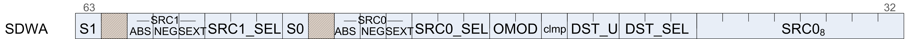
| Format | SDWA |
| Descriptio n | Sub-Dword Addressing. This is a second dword which can follow VOP1 or VOP2 instructions (in place of a literal constant) to control selection of sub-dword (16-bit) operands. Use of SDWA is indicated by assigning the SRC0 field to SDWA, and then the actual VGPR used as source-zero is determined in SDWA instruction word. |
| Field Name | Bits | Format or Description |
|---|---|---|
| SRC0 | [39:32] | Real SRC0 operand (VGPR). |
| DST_SEL | [42:40] | Select the data destination:
0 = data[7:0]
1 = data[15:8]
2 = data[23:16]
3 = data[31:24]
4 = data[15:0]
5 = data[31:16]
6 = data[31:0]
7 = reserved
|
| DST_U | [44:43] | Destination format: what do with the bits in
the VGPR that are not selected by DST_SEL:
0 = pad with zeros + 1 = sign extend upper /
zero lower
2 = preserve (don’t modify)
3 = reserved
|
| CLMP | [45] | 1 = clamp result |
| OMOD | [47:46] | Output modifiers (see VOP3). [46] = low half, [47] = high half |
| SRC0_SEL | [50:48] | Source 0 select. Same options as DST_SEL. |
| SRC0_SEXT | [51] | Sign extend modifier for source 0. |
| SRC0_NEG | [52] | 1 = negate source 0. |
| SRC0_ABS | [53] | 1 = Absolute value of source 0. |
| S0 | [55] | 0 = source 0 is VGPR, 1 = is SGPR. |
| SRC1_SEL | [58:56] | Same options as SRC0_SEL. |
| SRC1_SEXT | [59] | Sign extend modifier for source 1. |
| SRC1_NEG | [60] | 1 = negate source 1. |
| SRC1_ABS | [61] | 1 = Absolute value of source 1. |
| S1 | [63] | 0 = source 1 is VGPR, 1 = is SGPR. |
Table: SDWA Fields
SDWAB¶
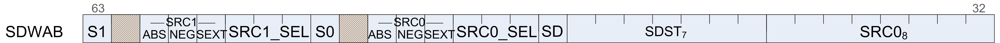
| Format | SDWAB |
| Descriptio n | Sub-Dword Addressing. This is a second dword which can follow VOPC instructions (in place of a literal constant) to control selection of sub-dword (16-bit) operands. Use of SDWA is indicated by assigning the SRC0 field to SDWA, and then the actual VGPR used as source-zero is determined in SDWA instruction word. This version has a scalar destination. |
| Field Name | Bits | Format or Description |
|---|---|---|
| SRC0 | [39:32] | Real SRC0 operand (VGPR). |
| SDST | [46:40] | Scalar GPR destination. |
| SD | [47] | Scalar destination type: 0 = VCC, 1 = normal SGPR. |
| SRC0_SEL | [50:48] | Source 0 select. Same options as DST_SEL. |
| SRC0_SEXT | [51] | Sign extend modifier for source 0. |
| SRC0_NEG | [52] | 1 = negate source 0. |
| SRC0_ABS | [53] | 1 = Absolute value of source 0. |
| S0 | [55] | 0 = source 0 is VGPR, 1 = is SGPR. |
| SRC1_SEL | [58:56] | Same options as SRC0_SEL. |
| SRC1_SEXT | [59] | Sign extend modifier for source 1. |
| SRC1_NEG | [60] | 1 = negate source 1. |
| SRC1_ABS | [61] | 1 = Absolute value of source 1. |
| S1 | [63] | 0 = source 1 is VGPR, 1 = is SGPR. |
Table: SDWAB Fields
DPP¶
| Format | DPP |
| Descriptio n | Data Parallel Primitives. This is a second dword which can follow VOP1, VOP2 or VOPC instructions (in place of a literal constant) to control selection of data from other lanes. |
| Field Name | Bits | Format or Description |
|---|---|---|
| SRC0 | [39:32] | Real SRC0 operand (VGPR). |
| DPP_CTRL | [48:40] | See next table: “DPP_CTRL Enumeration” |
| BC | [51] | Bounds Control: 0 = do not write when source is out of range, 1 = write. |
| SRC0_NEG | [52] | 1 = negate source 0. |
| SRC0_ABS | [53] | 1 = Absolute value of source 0. |
| SRC1_NEG | [54] | 1 = negate source 1. |
| SRC1_ABS | [55] | 1 = Absolute value of source 1. |
| BANK_MASK | [59:56] | Bank Mask Applies to the VGPR destination write
only, does not impact the thread mask when
fetching source VGPR data.
27==0: lanes[12:15, 28:31, 44:47, 60:63] are
disabled
26==0: lanes[8:11, 24:27, 40:43, 56:59] are
disabled
25==0: lanes[4:7, 20:23, 36:39, 52:55] are
disabled
24==0: lanes[0:3, 16:19, 32:35, 48:51] are
disabled
Notice: the term “bank” here is not the same as
we used for the VGPR bank.
|
| ROW_MASK | [63:60] | Row Mask Applies to the VGPR destination write
only, does not impact the thread mask when
fetching source VGPR data.
31==0: lanes[63:48] are disabled (wave 64 only)
30==0: lanes[47:32] are disabled (wave 64 only)
29==0: lanes[31:16] are disabled
28==0: lanes[15:0] are disabled
|
Table: DPP Fields
| DPP_Cntl Enumeration | Hex Value | Function | Description |
|---|---|---|---|
| DPP_QUAD_PERM* | 000-0FF | pix[n].srca = pix[(n&0x3c)+ dpp_cntl[n%4*2+1 : n%4*2]].srca | Full permute of four threads. |
| DPP_UNUSED | 100 | Undefined | Reserved. |
| DPP_ROW_SL* | 101-10F | if n&0xf) < (16-cntl[3:0]n&0xf ) < (16-cntl[3:0] pix[n].srca = pix[n+ cntl[3:0]].srca else use bound_cntl | Row shift left by 1-15 threads. |
| DPP_ROW_SR* | 111-11F | if ((n&0xf) >= cntl[3:0]) pix[n].srca = pix[n - cntl[3:0]].srca else use bound_cntl | Row shift right by 1-15 threads. |
| DPP_ROW_RR* | 121-12F | if ((n&0xf) >= cnt[3:0]) pix[n].srca = pix[n - cntl[3:0]].srca else pix[n].srca = pix[n + 16 - cntl[3:0]].srca | Row rotate right by 1-15 threads. |
| DPP_WF_SL1* | 130 | if (n<63) pix[n].srca = pix[n+1].srca else use bound_cntl | Wavefront left shift by 1 thread. |
| DPP_WF_RL1* | 134 | if (n<63) pix[n].srca = pix[n+1].srca else pix[n].srca = pix[0].srca | Wavefront left rotate by 1 thread. |
| DPP_WF_SR1* | 138 | if (n>0) pix[n].srca = pix[n-1].srca else use bound_cntl | Wavefront right shift by 1 thread. |
| DPP_WF_RR1* | 13C | if (n>0) pix[n].srca = pix[n-1].srca else pix[n].srca = pix[63].srca | Wavefront right rotate by 1 thread. |
| DPP_ROW_MIRROR* | 140 | pix[n].srca = pix[15-(n&f)].srca | Mirror threads within row. |
| DPP_ROW_HALF_MI RROR* | 141 | pix[n].srca = pix[7-(n&7)].srca | Mirror threads within row (8 threads). |
| DPP_ROW_BCAST15* | 142 | if (n>15) pix[n].srca = pix[n & 0x30 - 1].srca | Broadcast 15th thread of each row to next row. |
| DPP_ROW_BCAST31* | 143 | if (n>31) pix[n].srca = pix[n & 0x20 - 1].srca | Broadcast thread 31 to rows 2 and 3. |
Table: DPP_CTRL Enumeration
Vector Parameter Interpolation Format¶
VINTRP¶
| Format | VINTRP |
| Descriptio n | Vector Parameter Interpolation.
These opcodes perform parameter interpolation using vertex
data in pixel shaders.
|
| Field Name | Bits | Format or Description |
|---|---|---|
| VSRC | [7:0] | SRC0 operand (VGPR). |
| ATTR_CHAN | [9:8] | Attribute channel: 0=X, 1=Y, 2=Z, 3=W |
| ATTR | [15:10] | Attribute number: 0 - 32. |
| OP | [17:16] | Opcode:
0: v_interp_p1_f32 : VDST = P10 * VSRC + P0
1: v_interp_p2_f32: VDST = P20 * VSRC +
VDST
2: v_interp_mov_f32: VDST = (P0, P10 or P20
selected by VSRC[1:0])
|
| VDST | [25:18] | Destination VGPR |
| ENCODING | [31:26] | Must be: 110101 |
Table: VINTRP Fields
Note
VSRC must be different from VDST.
LDS and GDS format¶
DS¶
| Format | LDS and GDS |
| Descriptio n | Local and Global Data Sharing instructions |
| Field Name | Bits | Format or Description |
| OFFSET0 | [7:0] | First address offset |
| OFFSET1 | [15:8] | Second address offset. For some opcodes this is concatenated with OFFSET0. |
| GDS | [16] | 1=GDS, 0=LDS operation. |
| OP | [24:17] | See Opcode table below. |
| ENCODING | [31:26] | Must be: 110110 |
| ADDR | [39:32] | VGPR which supplies the address. |
| DATA0 | [47:40] | First data VGPR. |
| DATA1 | [55:48] | Second data VGPR. |
| VDST | [63:56] | Destination VGPR when results returned to VGPRs. |
Table: DS Fields
| Opcode # | Name |
|---|---|
| 0 | DS_ADD_U32 |
| 1 | DS_SUB_U32 |
| 2 | DS_RSUB_U32 |
| 3 | DS_INC_U32 |
| 4 | DS_DEC_U32 |
| 5 | DS_MIN_I32 |
| 6 | DS_MAX_I32 |
| 7 | DS_MIN_U32 |
| 8 | DS_MAX_U32 |
| 9 | DS_AND_B32 |
| 10 | DS_OR_B32 |
| 11 | DS_XOR_B32 |
| 12 | DS_MSKOR_B32 |
| 13 | DS_WRITE_B32 |
| 14 | DS_WRITE2_B32 |
| 15 | DS_WRITE2ST64_B32 |
| 16 | DS_CMPST_B32 |
| 17 | DS_CMPST_F32 |
| 18 | DS_MIN_F32 |
| 19 | DS_MAX_F32 |
| 20 | DS_NOP |
| 21 | DS_ADD_F32 |
| 29 | DS_WRITE_ADDTID_B32 |
| 30 | DS_WRITE_B8 |
| 31 | DS_WRITE_B16 |
| 32 | DS_ADD_RTN_U32 |
| 33 | DS_SUB_RTN_U32 |
| 34 | DS_RSUB_RTN_U32 |
| 35 | DS_INC_RTN_U32 |
| 36 | DS_DEC_RTN_U32 |
| 37 | DS_MIN_RTN_I32 |
| 38 | DS_MAX_RTN_I32 |
| 39 | DS_MIN_RTN_U32 |
| 40 | DS_MAX_RTN_U32 |
| 41 | DS_AND_RTN_B32 |
| 42 | DS_OR_RTN_B32 |
| 43 | DS_XOR_RTN_B32 |
| 44 | DS_MSKOR_RTN_B32 |
| 45 | DS_WRXCHG_RTN_B32 |
| 46 | DS_WRXCHG2_RTN_B32 |
| 47 | DS_WRXCHG2ST64_RTN_B32 |
| 48 | DS_CMPST_RTN_B32 |
| 49 | DS_CMPST_RTN_F32 |
| 50 | DS_MIN_RTN_F32 |
| 51 | DS_MAX_RTN_F32 |
| 52 | DS_WRAP_RTN_B32 |
| 53 | DS_ADD_RTN_F32 |
| 54 | DS_READ_B32 |
| 55 | DS_READ2_B32 |
| 56 | DS_READ2ST64_B32 |
| 57 | DS_READ_I8 |
| 58 | DS_READ_U8 |
| 59 | DS_READ_I16 |
| 60 | DS_READ_U16 |
| 61 | DS_SWIZZLE_B32 |
| 62 | DS_PERMUTE_B32 |
| 63 | DS_BPERMUTE_B32 |
| 64 | DS_ADD_U64 |
| 65 | DS_SUB_U64 |
| 66 | DS_RSUB_U64 |
| 67 | DS_INC_U64 |
| 68 | DS_DEC_U64 |
| 69 | DS_MIN_I64 |
| 70 | DS_MAX_I64 |
| 71 | DS_MIN_U64 |
| 72 | DS_MAX_U64 |
| 73 | DS_AND_B64 |
| 74 | DS_OR_B64 |
| 75 | DS_XOR_B64 |
| 76 | DS_MSKOR_B64 |
| 77 | DS_WRITE_B64 |
| 78 | DS_WRITE2_B64 |
| 79 | DS_WRITE2ST64_B64 |
| 80 | DS_CMPST_B64 |
| 81 | DS_CMPST_F64 |
| 82 | DS_MIN_F64 |
| 83 | DS_MAX_F64 |
| 84 | DS_WRITE_B8_D16_HI |
| 85 | DS_WRITE_B16_D16_HI |
| 86 | DS_READ_U8_D16 |
| 87 | DS_READ_U8_D16_HI |
| 88 | DS_READ_I8_D16 |
| 89 | DS_READ_I8_D16_HI |
| 90 | DS_READ_U16_D16 |
| 91 | DS_READ_U16_D16_HI |
| 96 | DS_ADD_RTN_U64 |
| 97 | DS_SUB_RTN_U64 |
| 98 | DS_RSUB_RTN_U64 |
| 99 | DS_INC_RTN_U64 |
| 100 | DS_DEC_RTN_U64 |
| 101 | DS_MIN_RTN_I64 |
| 102 | DS_MAX_RTN_I64 |
| 103 | DS_MIN_RTN_U64 |
| 104 | DS_MAX_RTN_U64 |
| 105 | DS_AND_RTN_B64 |
| 106 | DS_OR_RTN_B64 |
| 107 | DS_XOR_RTN_B64 |
| 108 | DS_MSKOR_RTN_B64 |
| 109 | DS_WRXCHG_RTN_B64 |
| 110 | DS_WRXCHG2_RTN_B64 |
| 111 | DS_WRXCHG2ST64_RTN_B64 |
| 112 | DS_CMPST_RTN_B64 |
| 113 | DS_CMPST_RTN_F64 |
| 114 | DS_MIN_RTN_F64 |
| 115 | DS_MAX_RTN_F64 |
| 118 | DS_READ_B64 |
| 119 | DS_READ2_B64 |
| 120 | DS_READ2ST64_B64 |
| 126 | DS_CONDXCHG32_RTN_B64 |
| 128 | DS_ADD_SRC2_U32 |
| 129 | DS_SUB_SRC2_U32 |
| 130 | DS_RSUB_SRC2_U32 |
| 131 | DS_INC_SRC2_U32 |
| 132 | DS_DEC_SRC2_U32 |
| 133 | DS_MIN_SRC2_I32 |
| 134 | DS_MAX_SRC2_I32 |
| 135 | DS_MIN_SRC2_U32 |
| 136 | DS_MAX_SRC2_U32 |
| 137 | DS_AND_SRC2_B32 |
| 138 | DS_OR_SRC2_B32 |
| 139 | DS_XOR_SRC2_B32 |
| 141 | DS_WRITE_SRC2_B32 |
| 146 | DS_MIN_SRC2_F32 |
| 147 | DS_MAX_SRC2_F32 |
| 149 | DS_ADD_SRC2_F32 |
| 152 | DS_GWS_SEMA_RELEASE_ALL |
| 153 | DS_GWS_INIT |
| 154 | DS_GWS_SEMA_V |
| 155 | DS_GWS_SEMA_BR |
| 156 | DS_GWS_SEMA_P |
| 157 | DS_GWS_BARRIER |
| 182 | DS_READ_ADDTID_B32 |
| 189 | DS_CONSUME |
| 190 | DS_APPEND |
| 191 | DS_ORDERED_COUNT |
| 192 | DS_ADD_SRC2_U64 |
| 193 | DS_SUB_SRC2_U64 |
| 194 | DS_RSUB_SRC2_U64 |
| 195 | DS_INC_SRC2_U64 |
| 196 | DS_DEC_SRC2_U64 |
| 197 | DS_MIN_SRC2_I64 |
| 198 | DS_MAX_SRC2_I64 |
| 199 | DS_MIN_SRC2_U64 |
| 200 | DS_MAX_SRC2_U64 |
| 201 | DS_AND_SRC2_B64 |
| 202 | DS_OR_SRC2_B64 |
| 203 | DS_XOR_SRC2_B64 |
| 205 | DS_WRITE_SRC2_B64 |
| 210 | DS_MIN_SRC2_F64 |
| 211 | DS_MAX_SRC2_F64 |
| 222 | DS_WRITE_B96 |
| 223 | DS_WRITE_B128 |
| 254 | DS_READ_B96 |
| 255 | DS_READ_B128 |
Table: DS Opcodes
Vector Memory Buffer Formats¶
There are two memory buffer instruction formats:
- MTBUF
- typed buffer access (data type is defined by the instruction)
- MUBUF
- untyped buffer access (data type is defined by the buffer / resource-constant)
MTBUF¶
| Format | MTBUF |
| Descriptio n | Memory Typed-Buffer Instructions |
| Field Name | Bits | Format or Description |
|---|---|---|
| OFFSET | [11:0] | Address offset, unsigned byte. |
| OFFEN | [12] | 1 = enable offset VGPR, 0 = use zero for address offset |
| IDXEN | [13] | 1 = enable index VGPR, 0 = use zero for address index |
| GLC | [14] | 0 = normal, 1 = globally coherent (bypass L0 cache) or for atomics, return pre-op value to VGPR. |
| OP | [18:15] | Opcode. See table below. |
| DFMT | 22:19 | Data Format of data in memory buffer:
0 invalid
1 8
2 16
3 8_8
4 32
5 16_16
6 10_11_11
8 10_10_10_2
9 2_10_10_10
10 8_8_8_8
11 32_32
12 16_16_16_16
13 32_32_32
14 32_32_32_32
|
| NFMT | 25:23 | Numeric format of data in memory:
0 unorm
1 snorm
2 uscaled
3 sscaled
4 uint
5 sint
6 reserved
7 float
|
| ENCODING | [31:26] | Must be: 111010 |
| VADDR | [39:32] | Address of VGPR to supply first component of address (offset or index). When both index and offset are used, index is in the first VGPR and offset in the second. |
| VDATA | [47:40] | Address of VGPR to supply first component of write data or receive first component of read-data. |
| SRSRC | [52:48] | SGPR to supply V# (resource constant) in 4 or 8 consecutive SGPRs. It is missing 2 LSB’s of SGPR-address since must be aligned to 4. |
| SLC | [54] | System level coherent: bypass L2 cache. |
| TFE | [55] | Partially resident texture, texture fail enable. |
| SOFFSET | [63:56] | Address offset, unsigned byte. |
Table: MTBUF Fields
| Opcode # | Name |
|---|---|
| 0 | TBUFFER_LOAD_FORMAT_X |
| 1 | TBUFFER_LOAD_FORMAT_XY |
| 2 | TBUFFER_LOAD_FORMAT_XYZ |
| 3 | TBUFFER_LOAD_FORMAT_XYZW |
| 4 | TBUFFER_STORE_FORMAT_X |
| 5 | TBUFFER_STORE_FORMAT_XY |
| 6 | TBUFFER_STORE_FORMAT_XYZ |
| 7 | TBUFFER_STORE_FORMAT_XYZW |
| 8 | TBUFFER_LOAD_FORMAT_D16_X |
| 9 | TBUFFER_LOAD_FORMAT_D16_XY |
| 10 | TBUFFER_LOAD_FORMAT_D16_XYZ |
| 11 | TBUFFER_LOAD_FORMAT_D16_XYZW |
| 12 | TBUFFER_STORE_FORMAT_D16_X |
| 13 | TBUFFER_STORE_FORMAT_D16_XY |
| 14 | TBUFFER_STORE_FORMAT_D16_XYZ |
| 15 | TBUFFER_STORE_FORMAT_D16_XYZW |
Table: MTBUF Opcodes
MUBUF¶
| Format | MUBUF |
| Descriptio n | Memory Untyped-Buffer Instructions |
| Field Name | Bits | Format or Description |
|---|---|---|
| OFFSET | [11:0] | Address offset, unsigned byte. |
| OFFEN | [12] | 1 = enable offset VGPR, 0 = use zero for address offset |
| IDXEN | [13] | 1 = enable index VGPR, 0 = use zero for address index |
| GLC | [14] | 0 = normal, 1 = globally coherent (bypass L0 cache) or for atomics, return pre-op value to VGPR. |
| LDS | [16] | 0 = normal, 1 = transfer data between LDS and memory instead of VGPRs and memory. |
| SLC | [17] | System level coherent: bypass L2 cache. |
| OP | [24:18] | Opcode. See table below. |
| ENCODING | [31:26] | Must be: 111000 |
| VADDR | [39:32] | Address of VGPR to supply first component of address (offset or index). When both index and offset are used, index is in the first VGPR and offset in the second. |
| VDATA | [47:40] | Address of VGPR to supply first component of write data or receive first component of read-data. |
| SRSRC | [52:48] | SGPR to supply V# (resource constant) in 4 or 8 consecutive SGPRs. It is missing 2 LSB’s of SGPR-address since must be aligned to 4. |
| TFE | [55] | Partially resident texture, texture fail enable. |
| SOFFSET | [63:56] | Address offset, unsigned byte. |
Table: MUBUF Fields
| Opcode # | Name |
|---|---|
| 0 | BUFFER_LOAD_FORMAT_X |
| 1 | BUFFER_LOAD_FORMAT_XY |
| 2 | BUFFER_LOAD_FORMAT_XYZ |
| 3 | BUFFER_LOAD_FORMAT_XYZW |
| 4 | BUFFER_STORE_FORMAT_X |
| 5 | BUFFER_STORE_FORMAT_XY |
| 6 | BUFFER_STORE_FORMAT_XYZ |
| 7 | BUFFER_STORE_FORMAT_XYZW |
| 8 | BUFFER_LOAD_FORMAT_D16_X |
| 9 | BUFFER_LOAD_FORMAT_D16_XY |
| 10 | BUFFER_LOAD_FORMAT_D16_XYZ |
| 11 | BUFFER_LOAD_FORMAT_D16_XYZW |
| 12 | BUFFER_STORE_FORMAT_D16_X |
| 13 | BUFFER_STORE_FORMAT_D16_XY |
| 14 | BUFFER_STORE_FORMAT_D16_XYZ |
| 15 | BUFFER_STORE_FORMAT_D16_XYZW |
| 16 | BUFFER_LOAD_UBYTE |
| 17 | BUFFER_LOAD_SBYTE |
| 18 | BUFFER_LOAD_USHORT |
| 19 | BUFFER_LOAD_SSHORT |
| 20 | BUFFER_LOAD_DWORD |
| 21 | BUFFER_LOAD_DWORDX2 |
| 22 | BUFFER_LOAD_DWORDX3 |
| 23 | BUFFER_LOAD_DWORDX4 |
| 24 | BUFFER_STORE_BYTE |
| 25 | BUFFER_STORE_BYTE_D16_HI |
| 26 | BUFFER_STORE_SHORT |
| 27 | BUFFER_STORE_SHORT_D16_HI |
| 28 | BUFFER_STORE_DWORD |
| 29 | BUFFER_STORE_DWORDX2 |
| 30 | BUFFER_STORE_DWORDX3 |
| 31 | BUFFER_STORE_DWORDX4 |
| 32 | BUFFER_LOAD_UBYTE_D16 |
| 33 | BUFFER_LOAD_UBYTE_D16_HI |
| 34 | BUFFER_LOAD_SBYTE_D16 |
| 35 | BUFFER_LOAD_SBYTE_D16_HI |
| 36 | BUFFER_LOAD_SHORT_D16 |
| 37 | BUFFER_LOAD_SHORT_D16_HI |
| 38 | BUFFER_LOAD_FORMAT_D16_HI_X |
| 39 | BUFFER_STORE_FORMAT_D16_HI_X |
| 61 | BUFFER_STORE_LDS_DWORD |
| 62 | BUFFER_WBINVL1 |
| 63 | BUFFER_WBINVL1_VOL |
| 64 | BUFFER_ATOMIC_SWAP |
| 65 | BUFFER_ATOMIC_CMPSWAP |
| 66 | BUFFER_ATOMIC_ADD |
| 67 | BUFFER_ATOMIC_SUB |
| 68 | BUFFER_ATOMIC_SMIN |
| 69 | BUFFER_ATOMIC_UMIN |
| 70 | BUFFER_ATOMIC_SMAX |
| 71 | BUFFER_ATOMIC_UMAX |
| 72 | BUFFER_ATOMIC_AND |
| 73 | BUFFER_ATOMIC_OR |
| 74 | BUFFER_ATOMIC_XOR |
| 75 | BUFFER_ATOMIC_INC |
| 76 | BUFFER_ATOMIC_DEC |
| 96 | BUFFER_ATOMIC_SWAP_X2 |
| 97 | BUFFER_ATOMIC_CMPSWAP_X2 |
| 98 | BUFFER_ATOMIC_ADD_X2 |
| 99 | BUFFER_ATOMIC_SUB_X2 |
| 100 | BUFFER_ATOMIC_SMIN_X2 |
| 101 | BUFFER_ATOMIC_UMIN_X2 |
| 102 | BUFFER_ATOMIC_SMAX_X2 |
| 103 | BUFFER_ATOMIC_UMAX_X2 |
| 104 | BUFFER_ATOMIC_AND_X2 |
| 105 | BUFFER_ATOMIC_OR_X2 |
| 106 | BUFFER_ATOMIC_XOR_X2 |
| 107 | BUFFER_ATOMIC_INC_X2 |
| 108 | BUFFER_ATOMIC_DEC_X2 |
Table: MUBUF Opcodes
Vector Memory Image Format¶
MIMG¶
| Format | MIMG |
| Descriptio n | Memory Image Instructions |
| Field Name | Bits | Format or Description |
|---|---|---|
| DMASK | [11:8] | Data VGPR enable mask: 1 .. 4 consecutive VGPRs
Reads: defines which components are returned:
0=red,1=green,2=blue,3=alpha
Writes: defines which components are written
with data from VGPRs (missing components get
0).
Enabled components come from consecutive VGPRs.
E.G. dmask=1001 : Red is in VGPRn and alpha in
VGPRn+1.
For D16 writes, DMASK is only used as a word
count: each bit represents 16 bits of data to
be written starting at the LSB’s of VADDR, then
MSBs, then VADDR+1 etc. Bit position is
ignored.
|
| UNRM | [12] | 1 = enable offset VGPR |
| GLC | [13] | 0 = normal, 1 = globally coherent (bypass L0 cache) or for atomics, return pre-op value to VGPR. |
| DA | [14] | Declare an Array.
1 Kernel has declared this resource to be an
array of texture maps.
0 Kernel has declared this resource to be a
single texture map.
|
| A16 | [15] | Address components are 16-bits (instead of the
usual 32 bits).
When set, all address components are 16 bits
(packed into 2 per dword), except:
Texel offsets (3 6bit UINT packed into 1 dword)
PCF reference (for “_C” instructions)
Address components are 16b uint for image ops
without sampler; 16b float with sampler.
|
| TFE | [16] | Partially resident texture, texture fail enable. |
| LWE | [17] | LOD Warning Enable. When set to 1, a texture fetch may return “LOD_CLAMPED = 1”. |
| OP | [0],[24 :18] | Opcode. See table below. (combine bits zero and 18-24 to form opcode). |
| SLC | [25] | System level coherent: bypass L2 cache. |
| ENCODING | [31:26] | Must be: 111100 |
| VADDR | [39:32] | Address of VGPR to supply first component of address (offset or index). When both index and offset are used, index is in the first VGPR and offset in the second. |
| VDATA | [47:40] | Address of VGPR to supply first component of write data or receive first component of read-data. |
| SRSRC | [52:48] | SGPR to supply V# (resource constant) in 4 or 8 consecutive SGPRs. It is missing 2 LSB’s of SGPR-address since must be aligned to 4. |
| SSAMP | [57:53] | SGPR to supply V# (resource constant) in 4 or 8 consecutive SGPRs. It is missing 2 LSB’s of SGPR-address since must be aligned to 4. |
| D16 | [63] | Address offset, unsigned byte. |
Table: MIMG Fields
| Opcode # | Name |
|---|---|
| 0 | IMAGE_LOAD |
| 1 | IMAGE_LOAD_MIP |
| 2 | IMAGE_LOAD_PCK |
| 3 | IMAGE_LOAD_PCK_SGN |
| 4 | IMAGE_LOAD_MIP_PCK |
| 5 | IMAGE_LOAD_MIP_PCK_SGN |
| 8 | IMAGE_STORE |
| 9 | IMAGE_STORE_MIP |
| 10 | IMAGE_STORE_PCK |
| 11 | IMAGE_STORE_MIP_PCK |
| 14 | IMAGE_GET_RESINFO |
| 16 | IMAGE_ATOMIC_SWAP |
| 17 | IMAGE_ATOMIC_CMPSWAP |
| 18 | IMAGE_ATOMIC_ADD |
| 19 | IMAGE_ATOMIC_SUB |
| 20 | IMAGE_ATOMIC_SMIN |
| 21 | IMAGE_ATOMIC_UMIN |
| 22 | IMAGE_ATOMIC_SMAX |
| 23 | IMAGE_ATOMIC_UMAX |
| 24 | IMAGE_ATOMIC_AND |
| 25 | IMAGE_ATOMIC_OR |
| 26 | IMAGE_ATOMIC_XOR |
| 27 | IMAGE_ATOMIC_INC |
| 28 | IMAGE_ATOMIC_DEC |
| 32 | IMAGE_SAMPLE |
| 33 | IMAGE_SAMPLE_CL |
| 34 | IMAGE_SAMPLE_D |
| 35 | IMAGE_SAMPLE_D_CL |
| 36 | IMAGE_SAMPLE_L |
| 37 | IMAGE_SAMPLE_B |
| 38 | IMAGE_SAMPLE_B_CL |
| 39 | IMAGE_SAMPLE_LZ |
| 40 | IMAGE_SAMPLE_C |
| 41 | IMAGE_SAMPLE_C_CL |
| 42 | IMAGE_SAMPLE_C_D |
| 43 | IMAGE_SAMPLE_C_D_CL |
| 44 | IMAGE_SAMPLE_C_L |
| 45 | IMAGE_SAMPLE_C_B |
| 46 | IMAGE_SAMPLE_C_B_CL |
| 47 | IMAGE_SAMPLE_C_LZ |
| 48 | IMAGE_SAMPLE_O |
| 49 | IMAGE_SAMPLE_CL_O |
| 50 | IMAGE_SAMPLE_D_O |
| 51 | IMAGE_SAMPLE_D_CL_O |
| 52 | IMAGE_SAMPLE_L_O |
| 53 | IMAGE_SAMPLE_B_O |
| 54 | IMAGE_SAMPLE_B_CL_O |
| 55 | IMAGE_SAMPLE_LZ_O |
| 56 | IMAGE_SAMPLE_C_O |
| 57 | IMAGE_SAMPLE_C_CL_O |
| 58 | IMAGE_SAMPLE_C_D_O |
| 59 | IMAGE_SAMPLE_C_D_CL_O |
| 60 | IMAGE_SAMPLE_C_L_O |
| 61 | IMAGE_SAMPLE_C_B_O |
| 62 | IMAGE_SAMPLE_C_B_CL_O |
| 63 | IMAGE_SAMPLE_C_LZ_O |
| 64 | IMAGE_GATHER4 |
| 65 | IMAGE_GATHER4_CL |
| 66 | IMAGE_GATHER4H |
| 68 | IMAGE_GATHER4_L |
| 69 | IMAGE_GATHER4_B |
| 70 | IMAGE_GATHER4_B_CL |
| 71 | IMAGE_GATHER4_LZ |
| 72 | IMAGE_GATHER4_C |
| 73 | IMAGE_GATHER4_C_CL |
| 74 | IMAGE_GATHER4H_PCK |
| 75 | IMAGE_GATHER8H_PCK |
| 76 | IMAGE_GATHER4_C_L |
| 77 | IMAGE_GATHER4_C_B |
| 78 | IMAGE_GATHER4_C_B_CL |
| 79 | IMAGE_GATHER4_C_LZ |
| 80 | IMAGE_GATHER4_O |
| 81 | IMAGE_GATHER4_CL_O |
| 84 | IMAGE_GATHER4_L_O |
| 85 | IMAGE_GATHER4_B_O |
| 86 | IMAGE_GATHER4_B_CL_O |
| 87 | IMAGE_GATHER4_LZ_O |
| 88 | IMAGE_GATHER4_C_O |
| 89 | IMAGE_GATHER4_C_CL_O |
| 92 | IMAGE_GATHER4_C_L_O |
| 93 | IMAGE_GATHER4_C_B_O |
| 94 | IMAGE_GATHER4_C_B_CL_O |
| 95 | IMAGE_GATHER4_C_LZ_O |
| 96 | IMAGE_GET_LOD |
| 104 | IMAGE_SAMPLE_CD |
| 105 | IMAGE_SAMPLE_CD_CL |
| 106 | IMAGE_SAMPLE_C_CD |
| 107 | IMAGE_SAMPLE_C_CD_CL |
| 108 | IMAGE_SAMPLE_CD_O |
| 109 | IMAGE_SAMPLE_CD_CL_O |
| 110 | IMAGE_SAMPLE_C_CD_O |
| 111 | IMAGE_SAMPLE_C_CD_CL_O |
Table: MIMG Opcodes
Flat Formats¶
Flat memory instruction come in three versions: FLAT:: memory address (per work-item) may be in global memory, scratch (private) memory or shared memory (LDS) GLOBAL:: same as FLAT, but assumes all memory addresses are global memory. SCRATCH:: same as FLAT, but assumes all memory addresses are scratch (private) memory.
The microcode format is identical for each, and only the value of the SEG (segment) field differs.
FLAT¶
| Format | FLAT |
| Descriptio n | FLAT Memory Access |
| Field Name | Bits | Format or Description |
|---|---|---|
| OFFSET | [12:0] | Address offset
Scratch, Global: 13-bit signed byte offset
FLAT: 12-bit unsigned offset (MSB is ignored)
|
| LDS | [13] | 0 = normal, 1 = transfer data between LDS and memory instead of VGPRs and memory. |
| SEG | [15:14] | Memory Segment (instruction type): 0 = flat, 1 = scratch, 2 = global. |
| GLC | [16] | 0 = normal, 1 = globally coherent (bypass L0 cache) or for atomics, return pre-op value to VGPR. |
| SLC | [17] | System level coherent: bypass L2 cache. |
| OP | [24:18] | Opcode. See tables below for FLAT, SCRATCH and GLOBAL opcodes. |
| ENCODING | [31:26] | Must be: 110111 |
| ADDR | [39:32] | VGPR which holds address or offset. For 64-bit
addresses, ADDR has the LSB’s and ADDR+1 has
the MSBs. For offset a single VGPR has a 32 bit
unsigned offset.
For FLAT_*: always specifies an address.
For GLOBAL_* and SCRATCH_* when SADDR is
0x7f: specifies an address.
For GLOBAL_* and SCRATCH_* when SADDR is
not 0x7f: specifies an offset.
|
| DATA | [47:40] | VGPR which supplies data. |
| SADDR | [54:48] | Scalar SGPR which provides an address of offset
(unsigned). Set this field to 0x7f to disable
use.
Meaning of this field is different for Scratch
and Global:
FLAT: Unused
Scratch: use an SGPR for the address instead of
a VGPR
Global: use the SGPR to provide a base address
and the VGPR provides a 32-bit byte offset.
|
| NV | [55] | Non-Volatile. |
| VDST | [63:56] | Destination VGPR for data returned from memory to VGPRs. |
Table: FLAT Fields
| Opcode # | Name |
|---|---|
| 16 | FLAT_LOAD_UBYTE |
| 17 | FLAT_LOAD_SBYTE |
| 18 | FLAT_LOAD_USHORT |
| 19 | FLAT_LOAD_SSHORT |
| 20 | FLAT_LOAD_DWORD |
| 21 | FLAT_LOAD_DWORDX2 |
| 22 | FLAT_LOAD_DWORDX3 |
| 23 | FLAT_LOAD_DWORDX4 |
| 24 | FLAT_STORE_BYTE |
| 25 | FLAT_STORE_BYTE_D16_HI |
| 26 | FLAT_STORE_SHORT |
| 27 | FLAT_STORE_SHORT_D16_HI |
| 28 | FLAT_STORE_DWORD |
| 29 | FLAT_STORE_DWORDX2 |
| 30 | FLAT_STORE_DWORDX3 |
| 31 | FLAT_STORE_DWORDX4 |
| 32 | FLAT_LOAD_UBYTE_D16 |
| 33 | FLAT_LOAD_UBYTE_D16_HI |
| 34 | FLAT_LOAD_SBYTE_D16 |
| 35 | FLAT_LOAD_SBYTE_D16_HI |
| 36 | FLAT_LOAD_SHORT_D16 |
| 37 | FLAT_LOAD_SHORT_D16_HI |
| 64 | FLAT_ATOMIC_SWAP |
| 65 | FLAT_ATOMIC_CMPSWAP |
| 66 | FLAT_ATOMIC_ADD |
| 67 | FLAT_ATOMIC_SUB |
| 68 | FLAT_ATOMIC_SMIN |
| 69 | FLAT_ATOMIC_UMIN |
| 70 | FLAT_ATOMIC_SMAX |
| 71 | FLAT_ATOMIC_UMAX |
| 72 | FLAT_ATOMIC_AND |
| 73 | FLAT_ATOMIC_OR |
| 74 | FLAT_ATOMIC_XOR |
| 75 | FLAT_ATOMIC_INC |
| 76 | FLAT_ATOMIC_DEC |
| 96 | FLAT_ATOMIC_SWAP_X2 |
| 97 | FLAT_ATOMIC_CMPSWAP_X2 |
| 98 | FLAT_ATOMIC_ADD_X2 |
| 99 | FLAT_ATOMIC_SUB_X2 |
| 100 | FLAT_ATOMIC_SMIN_X2 |
| 101 | FLAT_ATOMIC_UMIN_X2 |
| 102 | FLAT_ATOMIC_SMAX_X2 |
| 103 | FLAT_ATOMIC_UMAX_X2 |
| 104 | FLAT_ATOMIC_AND_X2 |
| 105 | FLAT_ATOMIC_OR_X2 |
| 106 | FLAT_ATOMIC_XOR_X2 |
| 107 | FLAT_ATOMIC_INC_X2 |
| 108 | FLAT_ATOMIC_DEC_X2 |
Table: FLAT Opcodes
GLOBAL¶
| Opcode # | Name |
|---|---|
| 16 | GLOBAL_LOAD_UBYTE |
| 17 | GLOBAL_LOAD_SBYTE |
| 18 | GLOBAL_LOAD_USHORT |
| 19 | GLOBAL_LOAD_SSHORT |
| 20 | GLOBAL_LOAD_DWORD |
| 21 | GLOBAL_LOAD_DWORDX2 |
| 22 | GLOBAL_LOAD_DWORDX3 |
| 23 | GLOBAL_LOAD_DWORDX4 |
| 24 | GLOBAL_STORE_BYTE |
| 25 | GLOBAL_STORE_BYTE_D16_HI |
| 26 | GLOBAL_STORE_SHORT |
| 27 | GLOBAL_STORE_SHORT_D16_HI |
| 28 | GLOBAL_STORE_DWORD |
| 29 | GLOBAL_STORE_DWORDX2 |
| 30 | GLOBAL_STORE_DWORDX3 |
| 31 | GLOBAL_STORE_DWORDX4 |
| 32 | GLOBAL_LOAD_UBYTE_D16 |
| 33 | GLOBAL_LOAD_UBYTE_D16_HI |
| 34 | GLOBAL_LOAD_SBYTE_D16 |
| 35 | GLOBAL_LOAD_SBYTE_D16_HI |
| 36 | GLOBAL_LOAD_SHORT_D16 |
| 37 | GLOBAL_LOAD_SHORT_D16_HI |
| 64 | GLOBAL_ATOMIC_SWAP |
| 65 | GLOBAL_ATOMIC_CMPSWAP |
| 66 | GLOBAL_ATOMIC_ADD |
| 67 | GLOBAL_ATOMIC_SUB |
| 68 | GLOBAL_ATOMIC_SMIN |
| 69 | GLOBAL_ATOMIC_UMIN |
| 70 | GLOBAL_ATOMIC_SMAX |
| 71 | GLOBAL_ATOMIC_UMAX |
| 72 | GLOBAL_ATOMIC_AND |
| 73 | GLOBAL_ATOMIC_OR |
| 74 | GLOBAL_ATOMIC_XOR |
| 75 | GLOBAL_ATOMIC_INC |
| 76 | GLOBAL_ATOMIC_DEC |
| 96 | GLOBAL_ATOMIC_SWAP_X2 |
| 97 | GLOBAL_ATOMIC_CMPSWAP_X2 |
| 98 | GLOBAL_ATOMIC_ADD_X2 |
| 99 | GLOBAL_ATOMIC_SUB_X2 |
| 100 | GLOBAL_ATOMIC_SMIN_X2 |
| 101 | GLOBAL_ATOMIC_UMIN_X2 |
| 102 | GLOBAL_ATOMIC_SMAX_X2 |
| 103 | GLOBAL_ATOMIC_UMAX_X2 |
| 104 | GLOBAL_ATOMIC_AND_X2 |
| 105 | GLOBAL_ATOMIC_OR_X2 |
| 106 | GLOBAL_ATOMIC_XOR_X2 |
| 107 | GLOBAL_ATOMIC_INC_X2 |
| 108 | GLOBAL_ATOMIC_DEC_X2 |
Table: GLOBAL Opcodes
SCRATCH¶
| Opcode # | Name |
|---|---|
| 16 | SCRATCH_LOAD_UBYTE |
| 17 | SCRATCH_LOAD_SBYTE |
| 18 | SCRATCH_LOAD_USHORT |
| 19 | SCRATCH_LOAD_SSHORT |
| 20 | SCRATCH_LOAD_DWORD |
| 21 | SCRATCH_LOAD_DWORDX2 |
| 22 | SCRATCH_LOAD_DWORDX3 |
| 23 | SCRATCH_LOAD_DWORDX4 |
| 24 | SCRATCH_STORE_BYTE |
| 25 | SCRATCH_STORE_BYTE_D16_HI |
| 26 | SCRATCH_STORE_SHORT |
| 27 | SCRATCH_STORE_SHORT_D16_HI |
| 28 | SCRATCH_STORE_DWORD |
| 29 | SCRATCH_STORE_DWORDX2 |
| 30 | SCRATCH_STORE_DWORDX3 |
| 31 | SCRATCH_STORE_DWORDX4 |
| 32 | SCRATCH_LOAD_UBYTE_D16 |
| 33 | SCRATCH_LOAD_UBYTE_D16_HI |
| 34 | SCRATCH_LOAD_SBYTE_D16 |
| 35 | SCRATCH_LOAD_SBYTE_D16_HI |
| 36 | SCRATCH_LOAD_SHORT_D16 |
| 37 | SCRATCH_LOAD_SHORT_D16_HI |
Table: SCRATCH Opcodes
Export Format¶
EXP¶
| Format | EXP |
| Descriptio n | EXPORT instructions |
The export format has only a single opcode, “EXPORT”.
| Field Name | Bits | Format or Description |
|---|---|---|
| EN | [3:0] | COMPR==1: export half-dword enable. Valid
values are: 0x0,3,c,f
[0] enables VSRC0 : R,G from one VGPR (R in low
bits, G high)
[2] enables VSRC1 : B,A from one VGPR (B in low
bits, A high)
COMPR==0: [0-3] = enables for VSRC0..3.
EN may be zero only for “NULL Pixel Shader”
exports (used when exporting only valid mask to
NULL target).
|
| TARGET | [9:4] | Export destination:
0-7: MRT 0..7
8: Z
9: Null pixel shader export (no data)
12-15: Position 0..3
32-63: Parameter 0..31
|
| COMPR | [10] | Indicates that data is float-16/short/byte (compressed). Data is written to consecutive components (rgba or xyzw). |
| DONE | [11] | Indicates that this is the last export from the shader. Used only for Position and Pixel/color data. |
| VM | [12] | 1 = the exec mask IS the valid mask for this export. Can be sent multiple times, must be sent at least once per pixel shader. This bit is only used for Pixel Shaders. |
| ENCODING | [31:26] | Must be: 110001 |
| VSRC0 | [39:32] | VGPR for source 0. |
| VSRC1 | [47:40] | VGPR for source 1. |
| VSRC2 | [55:48] | VGPR for source 2. |
| VSRC3 | [63:56] | VGPR for source 3. |
Table: EXP Fields